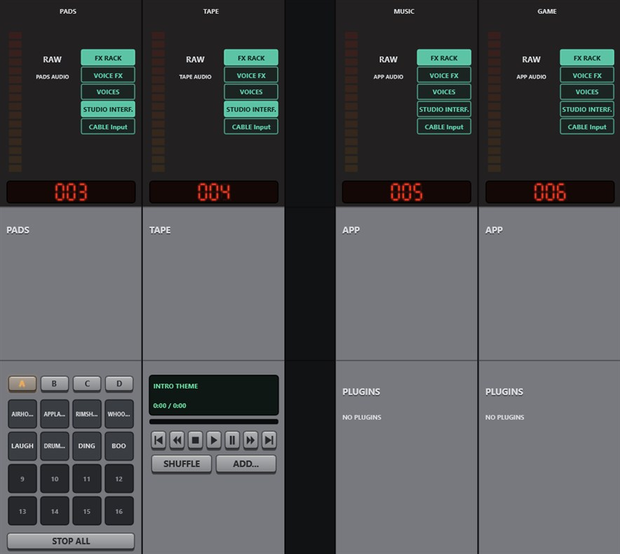
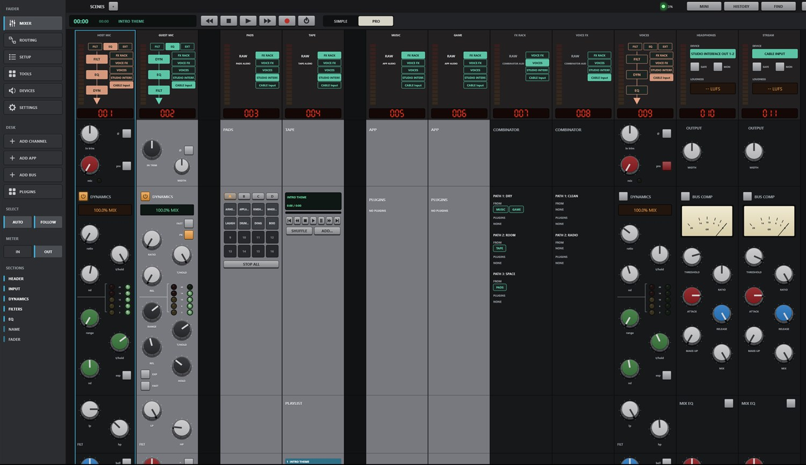
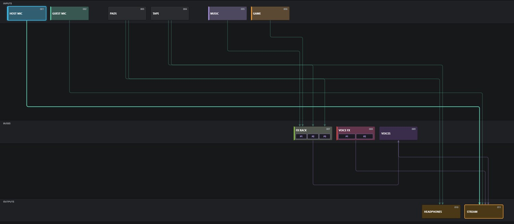
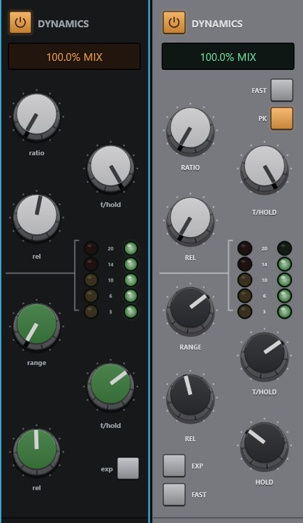
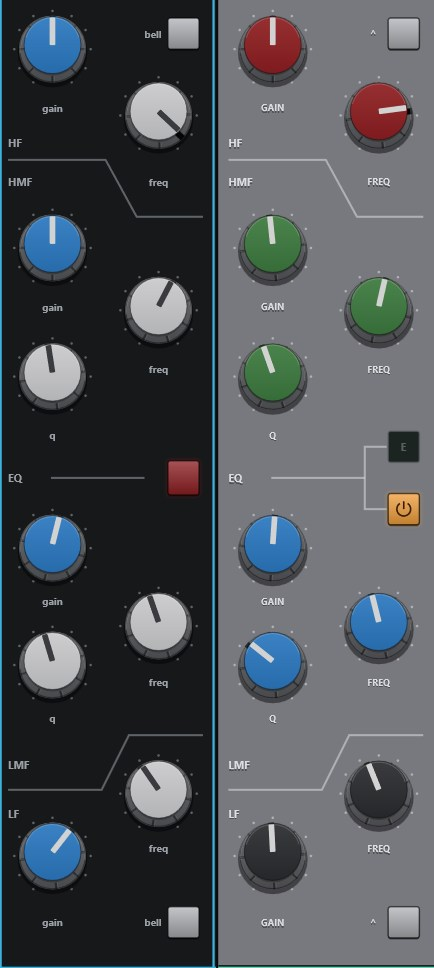
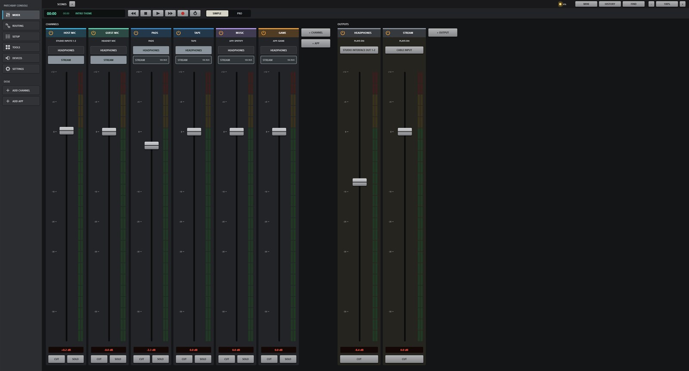
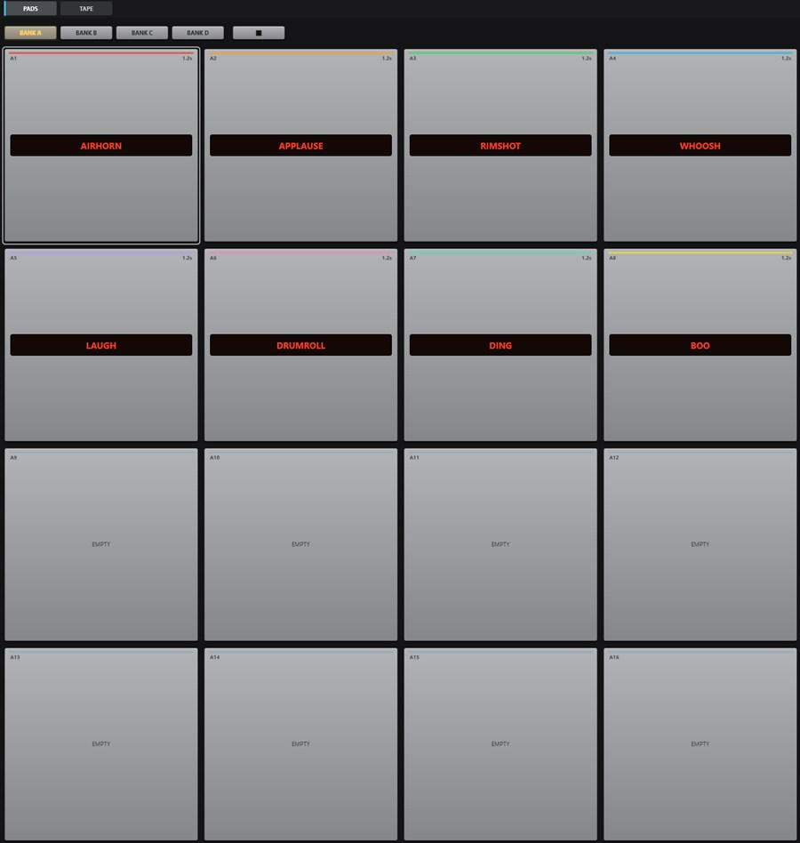
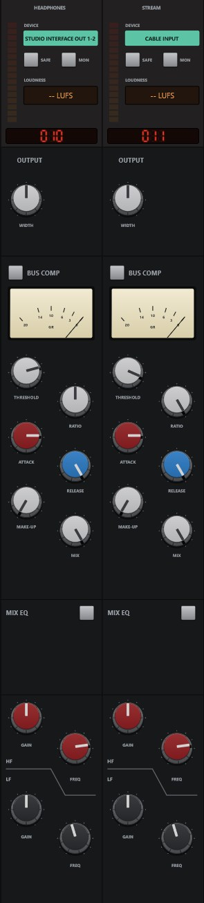

Every source is a channel
Interface inputs, Windows devices, a single program, a browser tab, the pads, the tape. Add it and it gets a strip on the desk. Devices are remembered by name, so unplugging a headset never moves your speakers.

Audio routing and mixing for Windows. Every device, program and microphone on one console, with the controls of a studio desk.
Free and open source · Windows 10 and 11 · 64-bit

Interface inputs, Windows devices, a single program, a browser tab, the pads, the tape. Add it and it gets a strip on the desk. Devices are remembered by name, so unplugging a headset never moves your speakers.

The Routing page shows every strip as a block under its place on the desk. Click one block, then another, and the route goes on or off. Routes that would feed back are refused.

Filters, neural noise reduction, gate and expander, a compressor with mix and peak or RMS detection, four-band EQ, de-esser, auto-level and voice effects.


SIMPLE shows the same mix with the processing hidden: each channel's fader, meter, CUT, SOLO and a big key for every output. Flip to PRO and the whole console is back.

Four banks of sixteen pads with trim, fades, choke groups and hotkeys. A playlist player with gapless playback. Record any channel, bus or output, or every channel at once, and keep an instant replay of the last few minutes.

Each output strip has a bus compressor, mix EQ, width, a limiter (LIMIT) and LUFS metering. Mix-minus feeds and stems are built for you from FIND.

Windows 10 (2004 or later) or Windows 11, 64-bit. An audio interface is optional: with an ASIO driver it sets the clock for the lowest delay. For a microphone other apps can hear, add VB-CABLE.
DOWNLOADThe installer isn't code-signed yet, so Windows may ask first: More info, then Run anyway.
What went into Faider. The app shows the same list under SETTINGS > GENERAL > ABOUT (and in the tray menu).
rnnoise.lib (CMakeLists.txt).third_party/asiosdk_*): Steinberg Media Technologies. GPLv3 or proprietary licence. ASIO is a trademark and software of Steinberg Media Technologies GmbH.ffmpeg.exe is on the PATH.assets/autoeq/profiles.txt, built into Faider.exe): parametric EQ results from AutoEq by Jaakko Pasanen, MIT licence; measurements by the sources named in each line (oratory1990, crinacle, Rtings and others).Faider is a live audio router and mixer for Windows, built around a large-format console. It takes sound from your audio interface, your Windows devices and individual programs, runs it through channel strips, buses and outputs, and plays the result on any devices you choose: your headphones, your speakers, a stream, a virtual microphone for calls and games.
| Windows | Windows 10 version 2004 or later, or Windows 11. Capturing a single program's sound needs 2004 or later |
| An audio interface | Optional. With its ASIO driver installed, Faider runs on the interface's clock for the lowest delay. Without one it runs on your Windows playback device, or on its built-in clock (see Clocking) |
| Headphones | Plugged into your interface (or any Windows playback device) so you can hear your mix |
| VB-CABLE | Optional and free (vb-audio.com/Cable). A virtual microphone, so apps such as Discord, games and OBS can hear your mix |
| ffmpeg | Optional. With ffmpeg.exe on your PATH, or picked in SETTINGS > GENERAL > FFMPEG, the recorder can also write MP3, AAC, Opus and ALAC |
| Word | Meaning |
|---|---|
| Channel (input) | One source on the desk: a mic, a device, a program, the pads, the tape |
| Strip | The column on the console that controls a channel, bus or output |
| Route | A connection that sends a channel or bus somewhere: to a bus or an output |
| Bus | A sub-mix. Whatever is routed to it is summed, processed together and routed on |
| Combinator | A bus that splits its sound into parallel paths, each with its own plugins, then sums them |
| Output | A final mix that plays on a device (your headphones, speakers, a virtual cable) |
| Interface | Your ASIO audio interface, if you have one |
| Clock | What everything runs in time with: your interface, else your Windows playback device, else the built-in clock |
This chapter takes you from the installer to a working setup: your microphone in your headphones, apps hearing your mic, and a program's sound on its own channel. Do the steps in order. Each one takes a minute or two.
Faider-<version>-Setup.exe.C:\Program Files\Faider and adds Faider
to the Start menu. Everything it needs comes with it.Your mix and settings live in %APPDATA%\Faider, separate from the program. Uninstalling
leaves them in place.
VB-CABLE gives you a virtual microphone that other apps can pick. Skip this step if you only want to mix for your own headphones.
Put your devices back with Faider: click SET MY DEFAULTS: on SETUP's APPS HEAR YOU page (step 4), on PRE-FLIGHT's WINDOWS DEFAULTS row, or WINDOWS DEFAULTS in FIND. It lists your real speakers and microphones. Pick your headphones or speakers, then click it again and pick your microphone. Each becomes Windows' default and its default for calls.
Or put them back in Windows:
A quicker way to set the output: click the speaker icon in the taskbar, click the > beside the volume slider, and pick your device.
Keep your real devices as Windows' defaults. Faider plays into the cable only where you route it, and each app picks CABLE Output as its microphone itself (step 6). If any of Windows' defaults is the cable, PRE-FLIGHT reports it under WINDOWS DEFAULTS.
Open the Start menu and click Faider (or use the desktop shortcut, if you made one). The first time, SETUP opens in its own window.
SETUP asks four questions, one per page, and builds your mix from your answers. Click the cards to choose. On every page except the third you can choose more than one. NEXT moves on, BACK goes back.
What each answer makes:
| Page | What it makes |
|---|---|
| WHERE YOU LISTEN | An output on each device. The first is called HEADPHONES, the others are named after their device |
| MICROPHONES | A channel for each, called MICROPHONE (MICROPHONE 2 …) |
| APPS HEAR YOU | An output called MIC FOR APPS on the cable. Every microphone is routed to it |
| PROGRAMS | A raw channel for each, routed to where you listen, plus an app rule that brings it back by itself whenever the program plays |
Your microphones aren't routed to your own headphones, so you don't hear a delayed echo of your voice. To hear yourself, light the mic's HEADPHONES key (step 6).
SETUP is not a page: run it again from FIND (SETUP: BUILD A MIX), or the SETUP key in SIMPLE, whenever you add a device or a program. It adds what's missing and never removes anything.
Look at the health light at the top right.
Click the light to open DEVICES. STREAMS shows the clock in use (ASIO, Windows or the built-in clock; see Clocking), and BUFFER sets its buffer size. The smallest size that plays without crackles gives you the least delay. 256 or 512 samples suits most systems.
The Mixer opens in SIMPLE. Each channel shows its name, what it listens to, a key for each output, its fader and meter, CUT and SOLO. Each output shows the device it plays on, its fader and meter.
| Key on a channel | Means |
|---|---|
| Plain grey | Not routed to that output |
| Filled in the output's colour | Routed there. Click to switch it off |
| Coloured edge only, VIA BUS | It gets there through a bus (set up in PRO). Click to route it straight there too |
If you hear a program twice, see 18.7.
+ CHANNEL and + APP add channels. + OUTPUT adds an output on a device that has none. The device key under an output's name changes where it plays. Right-click a name for RENAME..., the colour, HEADPHONE EQ (an output), IN THE MINI MIXER and REMOVE. Removing a program's channel also removes its app rule, so the channel doesn't come back by itself.
The SIMPLE / PRO switch in the top bar shows the same mix either way. PRO is the whole console: each channel's input, filters, dynamics and EQ, buses and combinators, plugins.
To shape your microphone, see 17.1. Every control is in 6. Settings you make in PRO keep working in SIMPLE.
A few seconds after start, PRE-FLIGHT checks the setup and opens only if something needs attention (not on the very first start, when SETUP comes first). Run it any time from SETTINGS > GENERAL > PRE-FLIGHT NOW... or FIND (Ctrl+K). Every row should be green. See 18.1.
The first time each page opens, a short tip explains it. Turn tips off under SETTINGS > GENERAL > ON START.
That's the setup done. The rest of this manual covers each part in detail.
The pages are cards down the left: MIXER, ROUTING, TOOLS, DEVICES, SETTINGS. The page showing has a lit blue edge. While the Mixer shows, the sidebar also has these cards (in SIMPLE, only ADD CHANNEL and ADD APP):
| Group | Card | What it does |
|---|---|---|
| DESK | ADD CHANNEL | Opens the input menu: interface inputs, Windows devices, apps, program windows, a browser (whole, or one tab isolated), the test tone. Pads and tape get their channel from their own pages (TOOLS) |
| ADD APP | Lists the programs playing sound now. Pick one to give it a channel | |
| ADD BUS | A bus, or a combinator (two paths to start) | |
| PLUGINS | Slides the plugin panel up under the strips (see 9) | |
| SELECT | AUTO | Touching any control on a strip selects that strip |
| FOLLOW | The desk glides to the selected strip, also when it's chosen elsewhere (FIND, a hotkey) | |
| METER | IN / PRE / POST | Where the channel meters read: the source as it comes in (before processing), after the effects (before the fader), or after the fader. The same setting as SETTINGS > GENERAL > CHANNEL METER POINT |
| SECTIONS | HEADER … FADER | The sections of the strip. Lit ones are on screen. Click one to glide to it |
The SELECT and METER choices are remembered.
From the right:
| Control | What it does |
|---|---|
| + 100% - | Zoom. Steps between 100, 125 and 150%. Click the percentage for 100%. Ctrl + / Ctrl - / Ctrl 0 do the same |
| FIND (Ctrl+K) | Search every page, channel, scene, macro, pad and command by name |
| HISTORY (Ctrl+H) | Every change you've made. Pick one to go back to it |
| MINI | The mini mixer: a small mixer window (the tray icon opens it too). PIN on it keeps it on top |
| Health light | Green: audio is fine. Amber: the audio load is high or a device ran short recently. Red: an audible glitch in the last 10 seconds, or no audio running. The number is the audio load. Click it for DEVICES |
| SCENES | Your stored mixes. + stores a new one (see 14.1) |
| SIMPLE / PRO | The same mix, simple or as the whole console (see Step 7) |
In a narrow window the health light goes first, then MINI, then HISTORY. FIND reaches them all.
Under the top bar, on every Mixer view, you get the Tape deck's time (elapsed and track length), the track name and its keys: rewind 10 s, stop, play/pause, forward 10 s, record, loop.
Routing decides where each sound goes. Nothing is heard until it's routed, and anything can be routed to as many places as you like.
Each output plays on one device: your interface's outputs, a USB headset, speakers, CABLE Input. You don't create outputs by hand. Route something to a device and an output is made on it. That's why the routing boxes list devices as well as buses.
All three change the same routes. Use whichever is closest.
| Where | How |
|---|---|
| Routing boxes (each strip's header) | One box per bus and output device. Lit: routed there. Click to switch |
| ROUTE TO (right-click a strip) | The same list as a menu, ticked where it's routed |
| The Routing page | Every strip as a block, every route as a line. Click one block, then another (see 10) |
Use a bus when several channels need the same treatment or one fader. Route the channels to the bus and the bus to the output. Then take the channels' direct routes to that output off, or they reach it twice (once direct, once through the bus). A bus can feed another bus, and that adds no delay.
A combinator is a bus split into parallel paths (two to start). Each path has its own plugins, and the paths are summed at the combinator's fader. Route a source into one path or several (see 7).
One device sets the clock. Faider chooses it in this order when it starts:
Every other device and every captured program runs on its own clock and joins through a small buffer that corrects for drift, so clocks drifting apart never click. DEVICES > STREAMS shows each one, and the clock in use.
If the Windows device setting the clock is unplugged, switched off or stops working, the next clock takes over by itself and a notice tells you which. A device that won't start (because another program holds it) is skipped until your devices change, then tried again. On the built-in clock, a playback device that's plugged in takes over from it.
To choose the clock yourself, use CLOCK at the top of DEVICES: THE INTERFACE (ASIO) (the order above, the default), A WINDOWS PLAYBACK DEVICE by name, or THE BUILT-IN CLOCK. The choice takes effect when Faider starts again, and RESTART NOW does that straight away. Your mix comes with it and stays saved for your interface. When you choose the built-in clock, no device takes over from it.
The desk shows every strip from left to right: channels, then buses (violet name bar), then outputs (amber name bar). Each strip has seven sections, top to bottom:
| Section | Holds |
|---|---|
| HEADER | Level bars, the FILT / EQ / EXT keys, the processing order, the routing boxes, the strip number |
| INPUT | Trim, polarity, mic drive, the input switch and stereo width |
| DYNAMICS | Compressor and gate |
| FILTERS | Low-pass, high-pass and the NOISE switch |
| EQ | Four bands |
| NAME | The name bar and power switch |
| FADER | Pan, SOLO, CUT, SEL, the fader and its readout, the DUCK lamp |
| Action | Result |
|---|---|
| Drag a knob or fader up/down | Changes it. Its value shows beside it while you drag or hover |
| Double-click a knob or fader | Back to its default |
| Click a key or switch | On / off |
| Click the name bar | Selects the strip |
| Drag a strip's name bar sideways | Moves it among its own kind: channels, buses or outputs (see 17.4) |
| Click the power symbol on the name bar | Switches the strip off or on |
| Right-click a strip | The strip's menu |
| Mouse wheel | Scrolls the desk across. Shift+wheel scrolls up and down |
| Ctrl / Ctrl - | Zoom the whole window |
A left click never opens a menu. Menus are always on the right button.
The selected strip is outlined in blue. Select a strip by clicking its name bar or its SEL key, or by touching any of its controls with AUTO on. The selected strip is the one the plugin panel shows, and the one FIND, hotkeys and remote controls act on.
With the desk focused (click it first): Left / Right select the previous / next strip, M cuts it, S solos it, and Up / Down move its fader 0.5 dB (3 dB with Shift).
Click the power symbol at the left of the name bar. The strip fades and greys out. It isn't processed, and its device or program is let go. While it's off, nothing on it can be changed: knobs, keys and the plugin panel ignore clicks, and its menu only offers TURN ON and spacers. Click the power symbol again to bring it back.
Spacers are blank strips that give you room between groups. Right-click a strip > ADD SPACER BEFORE / ADD SPACER AFTER. Right-click a spacer for NARROW, ADD ANOTHER and REMOVE SPACER. A spacer stays with the strip it follows when that strip moves.
| Item | |
|---|---|
| INPUT | Change the source: INTERFACE inputs, WINDOWS DEVICES (or WINDOWS DEFAULT), WHAT AN OUTPUT PLAYS (loopback), TEST TONE, NOTHING |
| ROUTE TO | Every bus and output device, ticked where it's sent |
| PLUGINS | Open one, ADD PLUGIN..., REMOVE |
| MAKE MONO / MAKE STEREO | Channels only |
| NOISE | Noise reduction: ON (as the strip's NOISE switch), NEURAL or SPECTRAL, and its DEPTH (-6 to -30 dB) |
| DUCK UNDER | Another channel this one dips under while that channel is heard, or NONE, and how far it dips (DEPTH, -6 to -24 dB). Not on an app channel |
| COLOUR | The channel's colour, shown along its name bar and on its Routing block |
| IN THE MINI MIXER | Ticked: the strip has a fader in the mini mixer (see 16) |
| ADD SPACER BEFORE / AFTER | |
| RENAME... | |
| REMOVE | Deletes the channel or bus |
| Control | What it does |
|---|---|
| Level bars | The channel's level, left and right (IN, PRE or POST, as chosen under METER) |
| FILT | Sends the filters into the gate/compressor's detector (key filtering) |
| EQ | The EQ in or out |
| EXT | The dynamics listen to an external key (sidechain) instead of the channel itself |
| Processing order | Three blocks (FILT, EQ, DYN), top to bottom in the order the channel runs them. Click a block to move it up one. The top one goes to the end. Lit blocks are in use |
| Routing boxes | One box per bus and output device. Lit: the channel is sent there. Click to switch (see Outputs are devices) |
| Number | The strip's place on the desk |
| Control | |
|---|---|
| IN TRIM | Input gain |
| ø | Polarity invert |
| MIC | Drive: adds warmth and level (shown as a percentage). The green LED beside it lights while the source has signal |
| PRE | The input stage in or out (out: trim, polarity and drive are bypassed) |
| WIDTH | Stereo width: 0 % mono, 100 % as it is, 200 % twice as wide. Faint on a mono channel |
The IN switch (with the power symbol) puts the compressor and gate in or out together.
Compressor
| Control | |
|---|---|
| MIX | Wet/dry blend (parallel compression). Drag the green readout |
| ratio, thresh, rel | Ratio, threshold and release |
| fast | Fast attack (3 ms). Off is 10 ms |
| pk | Peak detection. On (the default), the compressor reacts to peaks. Off, it reacts to the average (RMS) level, which is smoother |
| Gain reduction LEDs | 3, 6, 10, 14 and 20 dB of reduction |
Gate / expander
| Control | |
|---|---|
| range, thresh, rel, hold | How far it closes, where it opens, how fast it closes, how long it holds |
| exp | Expander mode (a gentler gate) |
| fast | Fast attack (0.1 ms). Off is 1.5 ms |
| Gate LEDs | How far the gate is closing |
The LEDs show what the compressor and gate would do even while they're switched out, so you can set them before putting them in.
lp (low-pass) and hp (high-pass). Turned all the way down, the high-pass is out. Turned all the way up, the low-pass is out.
NOISE switches noise reduction in or out: hiss, hum and room noise are taken down while the voice stays. Right-click the strip > NOISE for NEURAL (the default, at 48 kHz; at other rates it runs as SPECTRAL) or SPECTRAL, and for how deep it goes. Off, it costs nothing.
| Band | Controls |
|---|---|
| HF | gain, freq, bell (shelf when off) |
| HMF | gain, freq, q |
| LMF | gain, freq, q |
| LF | gain, freq, bell (shelf when off) |
The EQ IN switch puts the whole EQ in or out (the same as the header's EQ key).
| Control | |
|---|---|
| PAN | Left/right. Double-click to centre |
| SOLO | Solo in place |
| CUT | Silences the channel (the M key on the desk) |
| SEL | Select this strip |
| Fader | Level, +12 dB to off. The readout below shows the level in dB |
| safe | Solo safe: this channel stays audible when others are soloed |
| listen | Listen to the dynamics' key signal |
| duck | Lights while the channel is dipped under another (right-click > DUCK UNDER) |
Beside the strip's own processing, every channel carries four voice effects of its own:
| Effect | What it does |
|---|---|
| ROBOT | Ring modulation: the voice is multiplied by a tone, so it sounds metallic |
| ECHO | A delay, up to a second |
| RADIO | Band-limited to 300 Hz - 3 kHz and driven, so it sounds like a small speaker |
| PITCH | The voice moved up or down, up to an octave either way |
They are switched with a macro: the action FX ON, FX OFF or FX TOGGLE, with the channel as its target (15). A pad, a hotkey, a trigger or remote control can fire that macro, so the effects come and go with the mix.
Some channels carry sound that's already finished: a program's audio, the pads, the tape. They get a raw strip, with routing, plugins if you want them, pan, fader and keys, and no built-in effects. When one appears on the desk, its built-in effects are switched out once (and logged in the event log). Its plugins are kept.
| Strip | Its middle sections hold |
|---|---|
| App | The plugin list (click one to open it) and ADD PLUGIN |
| Pads | Bank keys A–D, the 4×4 pads (press to play; a HOLD pad plays while held) and STOP ALL |
| Tape | The deck's screen and seek bar, the transport (previous, rewind, stop, play, pause, forward, next), SHUFFLE, ADD..., and the playlist (click a track to play it) |
| Combinator | For each path: FROM, the channels and buses feeding it (click one to go to its strip), and PLUGINS on that path (click one to open it). EDIT IN ROUTING opens the Routing page |
A combinator has no effects of its own. Its sound comes from what feeds it and from each path's plugins. Right-click it > PATHS to add a path, and, for each path, to open, add or remove its plugins, rename it or remove it.
Each output has its own dark strip:
| Control | |
|---|---|
| DEVICE | The device it plays on. Click to choose another |
| LIMIT | A limiter after the fader: nothing leaves above -1 dBFS |
| MON | Monitor this output |
| LUFS | Short-term loudness of what leaves ("-- LUFS" when silent) |
| WIDTH | Stereo width |
| BUS COMP | In switch, the VU-style gain reduction meter, threshold, ratio, attack, release, make-up, mix |
| MIX EQ | In switch, HF gain and freq, LF gain and freq |
| CUT, SEL, fader | As on a channel |
Right-click an output for DEVICE..., HEADPHONE EQ (headphone correction: NONE, or your model, listed by brand), ALERT IF SILENT (10 seconds under -60 dBFS) and ALERT IF CLIPPING (while LIMIT is off), which flash the tray icon and write to the event log, IN THE MINI MIXER, spacers, RENAME... and REMOVE.
Outputs are made for you, one per device (see Outputs are devices).
FIND > MIX-MINUS AND STEMS builds a feed per guest (everything but their own voice) and voice, music and game stems.
Faider hosts VST3 plugins on channels, buses and combinator paths, with automatic latency compensation.
Every plugin is tested first in a separate copy of the program, so a plugin that crashes or hangs while loading can't take your mix down. It has 30 seconds to load (PLUGIN TEST TIME in SETTINGS > GENERAL gives slow plugins 60 or 120). The result is remembered until the plugin file changes.
Click PLUGINS in the sidebar. A panel slides up under the strips with the selected strip's plugins in the order they run. FIND > PLUGINS: name opens it on that strip, and switches to PRO if SIMPLE is showing. Each card shows:
Keys on each card: BYPASS, OPEN (its window), REMOVE, and arrows to move it earlier or later. ADD at the end adds another.
The Routing page shows the whole mix as a map: every strip as a block and every route as a line. Use it to see where everything goes, and to route by clicking two blocks.
If the two blocks can't be routed (two outputs, say), the second one is selected instead.
| To | Click |
|---|---|
| Hear your mic | MIC, then the headphones' output |
| Let apps hear your mic | MIC, then CABLE Input (in the outputs row, grey until it has an output) |
| Send a group through a bus | The bus, then each channel; then the bus, then its output |
| Take a channel out of the stream | The channel, then the stream's output (the line goes) |
| Feed one combinator path | The source, then the path cell (P1, P2…). Click more cells to feed several paths. Clicking the combinator outside its cells feeds its first path |
Clicking a grey device block makes its output, and the new output appears on the desk at once.
Drag a block sideways along its row to move its strip (see 17.4). A route that switches straight off again would make a feedback loop (see 18.8).
TOOLS > PADS gives you four banks (A–D) of 16 pads: 64 sounds, up to 32 playing at once.
Pads play into a PADS channel. Click CREATE PADS CHANNEL (it then reads PADS CHANNEL ACTIVE), or choose another input in the PLAY INTO menu to play the pads through that channel's plugins and routes. With no pads channel, presses are ignored.
| Action | |
|---|---|
| Click an empty pad | Choose a sound file |
| Click a loaded pad | Play it |
| Right-click a pad | Select it for editing without playing |
| Drop files on a pad | Loads them into that pad and the following ones in the bank |
| Ctrl+drag onto another pad | Swaps the two pads |
| STOP ALL | Fades out every pad |
Formats: WAV, FLAC, AIFF, OGG, MP3. A pad whose file has moved shows MISSING: FILE.
| Setting | |
|---|---|
| Name | Double-click to rename |
| LOAD, CLEAR, COLOUR | |
| REPLAY | The instant-replay buffer becomes this pad's sound (saved as a WAV in the recordings folder). Arm replay in TOOLS > TAPE first |
| MODE | ONE-SHOT plays to the end (pressing again restarts). HOLD plays while held. LOOP starts on one press and stops on the next |
| CHOKE | OFF or group 1–8. Pads in one group stop each other |
| LEVEL | -INF to +12 dB |
| HOTKEY | Click (LEARN...), then press the keys (see HOTKEYS) |
| MACRO | A macro to run with the pad (a pad can have a macro and no sound) |
| TRIM | Drag the start and end lines on the waveform. Double-click for the whole file |
| FADE IN / FADE OUT | 0–5 s |
TOOLS > TAPE plays a playlist into a TAPE channel. Click CREATE TAPE CHANNEL to make one.
The top bar's transport and the tape strip on the desk control the same deck.
| Source | Any output, bus or input, or ALL CHANNELS, ONE FILE EACH (multitrack: every input, or only those with DIRECT lit, plus every output, sample-aligned) |
| Format | WAV 24-bit (default), 16-bit, 32-bit, 32-bit float; FLAC 24/16-bit; AIFF 24/16-bit; OGG Vorbis 128–320k. With ffmpeg: MP3, AAC (M4A), Opus, ALAC. Each shows how much time fits on the disk |
| REC | Starts and stops (the top bar's record key does the same). The screen shows time, size, time left, and any dropped blocks |
| PATH / REVEAL | Choose the folder / open it in Explorer |
Recordings go to Music\Faider Recordings unless you pick a folder. ffmpeg formats record
a WAV first and convert it when you stop (the WAV is kept if conversion fails). Faider uses the
ffmpeg.exe picked in SETTINGS > GENERAL > FFMPEG, else the one on your PATH. Recording stops by
itself when less than 1 GB is free.
ARM keeps the last 30 s, 1, 2 or 5 minutes of the recorder's source. SAVE writes it to a file (right-click SAVE to give it a global hotkey). With multitrack chosen, replay uses the first output.
DEVICES lists every Windows audio device and ASIO driver. CLOCK at the top shows what sets the clock now, and its key chooses it (see Clocking).
WINDOWS AUDIO, under it, shows the priority of Windows' audio engine (audiodg.exe, which carries every Windows device and captured app): NORMAL is Windows' default, UNKNOWN if it can't be read. Its key, BOOST WINDOWS AUDIO (BOOSTED while it's High), opens a menu:
It doesn't affect ASIO interfaces, which don't go through Windows audio.
| Column | |
|---|---|
| I/O | ASIO, OUT or IN |
| DEVICE, HARDWARE | Its name and the adapter it's on |
| FORMAT | Channels and sample rate |
| STATE | Active, unplugged, disabled, or off in Faider |
| TAGS | DEFAULT and CALLS for Windows' default devices |
Click a header to sort. Select devices (Ctrl/Shift for several), then use:
| Key | |
|---|---|
| EXCLUDE / INCLUDE | Faider stops (or resumes) using the device. Excluded devices are never opened and are left out of lists |
| DISABLE / ENABLE IN WINDOWS | Turns the device off or on in Windows itself |
| RENAME | Your own name for the device, used throughout Faider (or double-click a row) |
Under the list, STREAMS shows the audio engine's health:
If VB-CABLE is installed, a bar at the top sets its sample rate and max latency. APPLY asks for one administrator prompt and restarts the cable.
The event log at the bottom records every device plugged in, removed or recovered.
A scene stores every channel's fader, pan, cut, solo, power and routes (and, if you choose, plugin settings).
Devices and the channels themselves aren't part of a scene.
Ctrl+Z undoes, Ctrl+Y (or Ctrl+Shift+Z) redoes. HISTORY (Ctrl+H) lists every change. Pick one to jump back to it.
Your mix saves itself within a second of any change, and on exit.
| SESSION TIMELINE | FIND, or Session timeline... on the tray menu: every kept version by date. RESTORE EVERYTHING (Faider restarts with it), or PUT ONE CHANNEL BACK (its level, pan, CUT and rack) without restarting |
| SAVE SESSION AS... | SETTINGS > GENERAL > SESSIONS: keep the mix under a name |
| OPEN, EXPORT OR IMPORT... | Open a named mix (restarts), save the mix to a file, or load one from a file |
Up to 60 earlier versions are kept (at most one every 5 minutes). If your mix ever can't be loaded (the interface is missing, the file is damaged), it's set aside rather than lost, and a fresh mix starts. See 18.2.
SETTINGS has four sections, as cards down the left: GENERAL, MACROS, HOTKEYS, CONTROL. On/off settings are square switches that glow cream when on.
| Card | Settings |
|---|---|
| LOOK | LOOK...: the console's colours and typeface, from a look file (see Looks) |
| WINDOWS | START WITH WINDOWS: opens in the tray when you sign in |
| DESK | WARN IF I TALK WHILE CUT (a notice when a cut mic is above -30 dBFS) |
| APPS | APP RULES...: which bus or output a program goes to when it starts playing (also in FIND). Removing a program's channel removes its rule |
| SESSIONS | SAVE SESSION AS...; OPEN, EXPORT OR IMPORT... |
| ON START | PRE-FLIGHT: CHECK THE SETUP; PRE-FLIGHT NOW...; TIPS; SHOW THE TIPS AGAIN |
| NOTICES (IN THE CORNER) | Devices connected or gone, a channel clipping (its source or its output at full scale), scenes recalled, macros run, undo and redo |
| ZOOM | 100%, 125%, 150%, CUSTOM... (75–200%) |
| METER STANDARD | How meters read (sample peak with a fast fall by default; IEC and others) |
| CHANNEL METER POINT | IN (raw source), PRE (after effects), POST (after the fader, default). The sidebar's METER cards set the same |
| RECORDING | FFMPEG: where ffmpeg.exe is, or NOT FOUND. Click it to pick ffmpeg.exe (used before the one on your PATH); once one is picked, it also offers to go back to the PATH's |
| PLUGIN TEST TIME | 30 S (default), 60 S or 120 S: how long a new plugin has to load in its test before it fails |
| UPDATES | CHECK FOR UPDATES (on by default): half a minute after start, at most once a day, Faider sends one request to GitHub asking for its newest release. The request carries only the app's name and version (for example Faider/0.1.5); nothing is downloaded or installed. If a newer version is out, the tray says so, and Get Faider x.y.z... on the tray menu, GET FAIDER x.y.z in FIND or the key here opens its page. Switch it off and Faider never asks. CHECK NOW (or CHECK FOR UPDATES NOW in FIND) asks at once and says when you're up to date |
| ABOUT | Version and credits |
A look is every colour the console paints with, together with the typeface and the sizes that go with it. The strips, the readouts, the knobs, the keys and the lamps all draw from the look in force, so one look changes the whole desk at once.
LOOK... lists the looks you have and puts the one you choose in force; the desk is drawn again the moment it changes. SAVE THIS LOOK AS... writes the look in force to a new file under a name you give it.
A look is one file in %APPDATA%\Faider\looks, written as JSON, so you can write one by hand and copy
it to another machine. A file that is missing or broken leaves the built-in look in place, and whatever
a file leaves out falls back to the built-in value: a part-written file still works.
name |
The look's name, as it appears in the list |
font |
One typeface Windows ships with, so it stays crisp at the desk's small sizes |
keyRadius |
How round a key's corners are, in pixels |
fontSizes |
legend, caption, readout: the three printing sizes |
colours |
Every colour, as #rrggbb, or #rrggbbaa where a part is see-through |
The colours are named after the part they paint: the panels and the printing, the keys, the faders' plate, the readouts, the knobs by function, the lamps, the strips' bodies, what a channel, a bus and an output look like, the accent, the recesses and the shading. SAVE THIS LOOK AS... writes out every name the look has, so the quickest way to begin is to change one thing on the desk, save it, and edit that file.
A palette group names the colours a layout file can put on a part: red, green, blue, black,
white, violet, grey, cream, orange, amber, teal, salmon.
A macro is a list of actions run from a hotkey, a pad, a trigger or remote control.
Every assignable hotkey is in one place: PADS, MACROS, SCENES, and SAVE INSTANT REPLAY under TAPE. Click one, then press the new keys (Esc cancels, Delete clears). Hotkeys must include Ctrl, Alt or an F key, and they work while a game has focus. The fixed keys are listed too (19.1). The page's ON THE MIXER keys work on the console too (5).
| Card | |
|---|---|
| MIDI | MIDI MAP (Ctrl+L); INPUTS AND BINDINGS, where each MIDI input is switched on or off |
| OSC | OSC ON (PORT 9000), for programs on this PC. PORT... sets the port (1024–65535); if OSC is on, it moves there at once |
| MIDI MAP (Ctrl+L) | Click a control on screen, then move a knob or key on your controller. Each strip's fader, pan, CUT, SOLO, power and routing keys can be mapped, in SIMPLE and PRO, as well as scenes, pads and the tape. The mouse wheel scrolls the desk while mapping (Shift+wheel up and down) |
| OSC | Programs on this PC can send to port 9000, or the port set with PORT... in SETTINGS > CONTROL (it never listens to the network): /faider/input/NAME/fader -12 (dB), /faider/output/NAME/mute 1, /faider/bus/NAME/pan -0.5, /faider/input/NAME/solo 1, /faider/scene NAME, /faider/macro/NAME 1 (0 releases it). Write spaces in names as _ |
| In-game overlay (Ctrl+Shift+O) | Each mic channel's talking light, LIVE / CUT and level, plus up to four scene keys. Never takes focus from a game. Drag it anywhere |
| MINI | The mini mixer: a small window with a fader, meter and CUT for each strip ticked IN THE MINI MIXER on its right-click menu (each output's while none is). PIN keeps it on top of everything. OPEN returns to the main window |
| Tray | Click the icon for the mini mixer, double-click to open the window. Right-click: Show, scene recall, Session timeline, Get Faider x.y.z... (when a newer version is out), Start with Windows, Save a problem report..., About, Quit. The icon flashes amber during an alert |
Faider always runs with your ordinary user rights, even when it's started from an administrator window. It restarts itself with ordinary rights, because the in-game overlay can't reach a program running as administrator. The few steps that need an administrator (applying VB-CABLE settings, re-enabling a device Windows has switched off) ask for permission themselves.
Drag a channel's name bar sideways on the Mixer (scroll down to the NAME section), or drag its block on the Routing page. A blue bar shows where it will land, and the strips glide into place. Spacers move with the strip they follow. Buses and outputs move the same way, each among its own kind, and their routes go with them. SIMPLE shows the outputs in the same order.
PRE-FLIGHT runs a few seconds after start (and from PRE-FLIGHT NOW... or FIND) and only shows up if something is wrong. Each row has a light, the finding and a fix:
| Check | Problem | Fix |
|---|---|---|
| AUDIO | It didn't start (another app may have it) | DEVICES |
| MIC CABLE | No VB-CABLE: apps can't hear your mix as a mic | GET VB-CABLE |
| MIC OUTPUT | No output plays into the mic cable | ROUTING |
| MIC CHANNELS | Something on the way to the mic is cut | UNCUT |
| WINDOWS DEFAULTS | Windows' default speaker or mic (or its default for calls) is the virtual cable | SET MY DEFAULTS |
| HEARD ONCE | A feedback loop, or something heard twice | SOUND SETTINGS |
| WINDOWS AUDIO | Windows devices or captured apps are in the mix and Windows' audio engine is at Normal priority: yellow, a suggestion only; red if your boost was undone by a restart. Green when only ASIO is used | BOOST |
ZERO THE DESK (bottom left; also ZERO DESK in FIND) checks what a last session can leave set: solos, key listen, gain trims more than 12 dB off, and cut outputs. Each has a FIX.
Your mix isn't lost. When it can't be used at start, it's set aside as
session-unloaded-<date>.xml. The event log says why:
| Reason | What to do |
|---|---|
| The saved interface isn't connected | Connect it, then SESSION TIMELINE (FIND or the tray) > the "kept:" version > RESTORE EVERYTHING |
| The saved interface couldn't be opened (another program has it) | Close the other program and restart Faider. Nothing is saved over your mix meanwhile |
| session.xml couldn't be read | SESSION TIMELINE > a recent version > RESTORE EVERYTHING |
Work along the signal path:
"C:\Program Files\Faider\Faider.exe" --clock windows (your Windows playback
device) or --clock builtin (the built-in clock). --clock with part of an ASIO driver's name
(--clock focusrite) picks that driver. It wins over DEVICES > CLOCK for that run, and the next
start without it goes back to your choice.It would make a feedback loop (see Rules that keep it safe). The event log names the loop. Remove the route that feeds back.
The strip is switched off (dim and grey). Click the power symbol on its name bar.
Drag by the name bar (the NAME section, near the bottom; scroll down if needed), or drag the block on the Routing page. A strip moves only among its own kind: a bus can't go among the channels.
Each plugin is tested in a separate copy of the program first, and the reason for a failure is reported: it didn't finish loading in time (30 s, unless PLUGIN TEST TIME in SETTINGS > GENERAL gives it 60 or 120), it crashed while being tested, or there's no VST3 plugin in the file. Update or reinstall the plugin. Once its file changes, it's tested again.
A report is written to %APPDATA%\Faider\crash.log, with a minidump crash.dmp. Your mix
is saved within a second of any change, so you lose at most the last moment's changes.
To report a problem, right-click the tray icon > Save a problem report... (or SAVE A PROBLEM REPORT in FIND). It puts the crash report, the event log and the status snapshot (those that exist), with Faider's and Windows' versions, in one .zip where you choose (the desktop to start), then shows it in Explorer. Nothing is sent anywhere: attach the file yourself.
Recording stops when less than 1 GB of disk space is left (or the format's size limit is near). The tray shows RECORDING STOPPED, NO ROOM. Free some space or choose another PATH.
Windows has made the cable its default device. SET MY DEFAULTS (PRE-FLIGHT's WINDOWS DEFAULTS row, or WINDOWS DEFAULTS in FIND) sets your headphones or speakers as the default output again, and your real microphone as the default input, each for calls too. Or do it in Settings > System > Sound. See Step 2.
| Keys | |
|---|---|
| Ctrl+K | FIND |
| Ctrl+Z / Ctrl+Y (Ctrl+Shift+Z) | Undo / redo |
| Ctrl+H | History |
| Ctrl+L | MIDI MAP |
| Ctrl / Ctrl - / Ctrl 0 | Zoom in / out / 100% |
| Ctrl+Shift+O | Show / hide the in-game overlay (works anywhere) |
| Left / Right | Select the previous / next strip (desk focused) |
| M / S | Cut / solo the selected strip |
| Up / Down | Selected fader ±0.5 dB (±3 dB with Shift) |
| Esc | Let go of the selected block (Routing) |
--minimised |
Start in the tray |
--quit |
Quit the running copy |
--clock windows, --clock builtin, --clock <driver> |
For this run, the clock is your Windows playback device, the built-in clock, or the ASIO driver whose name contains <driver>. It wins over DEVICES > CLOCK (see Clocking) |
--boost-audiodg [--pin-core N] |
What BOOST WINDOWS AUDIO starts, as administrator: Windows' audio engine to High priority (pinned to core N only if given), then it exits. 0: done; 2: bad arguments; 3: audiodg not found; 4: access denied; 5: priority refused; 6: High set but the pin refused |
In %APPDATA%\Faider:
| File | |
|---|---|
session.xml |
Your mix |
history\ |
Earlier versions (up to 60) |
sessions\ |
Named mixes |
session-unloaded-*.xml |
Mixes set aside at start |
settings.xml |
Preferences |
looks\ |
The looks: one JSON file each (see Looks) |
console.xml |
Spacers and SELECT choices |
plugins.xml |
The plugins found and how each one tested |
events.log |
Everything that happened (rotates at 5 MB) |
status.txt |
A snapshot of the engine every few seconds: devices, levels, buffers, drift |
crash.log, crash.dmp |
Crash reports |
The program itself is in C:\Program Files\Faider. Recordings go to
Music\Faider Recordings unless you choose another folder.
| Colour | Means |
|---|---|
| Blue outline | Selected |
| Grey name bar | Channel |
| Violet | Bus |
| Amber | Output |
| Teal line | A channel's route |
| Violet line | A bus's route |
| Green health light | Audio fine; amber: under strain; red: glitch or not running |
Faider es un enrutador de audio y mezclador en directo para Windows, construido en torno a una consola de gran formato. Toma el sonido de tu interfaz de audio, de tus dispositivos de Windows y de cada programa, lo hace pasar por strips de canal, buses y salidas, y reproduce el resultado en los dispositivos que elijas: tus auriculares, tus altavoces, un stream, un micrófono virtual para llamadas y juegos.
| Windows | Windows 10 versión 2004 o posterior, o Windows 11. Para capturar el sonido de un solo programa hace falta la versión 2004 o posterior |
| Una interfaz de audio | Opcional. Con su controlador ASIO instalado, Faider funciona con el reloj de la interfaz para tener el menor retardo. Sin ella funciona con tu dispositivo de reproducción de Windows, o con su reloj integrado (consulta Sincronización) |
| Auriculares | Conectados a tu interfaz (o a cualquier dispositivo de reproducción de Windows) para oír tu mezcla |
| VB-CABLE | Opcional y gratuito (vb-audio.com/Cable). Un micrófono virtual, para que aplicaciones como Discord, los juegos y OBS oigan tu mezcla |
| ffmpeg | Opcional. Con ffmpeg.exe en tu PATH, o elegido en SETTINGS > GENERAL > FFMPEG, la grabadora también puede escribir MP3, AAC, Opus y ALAC |
| Palabra | Significado |
|---|---|
| Canal (entrada) | Una fuente en la mesa: un micrófono, un dispositivo, un programa, los pads, la cinta |
| Strip | La columna de la consola que controla un canal, un bus o una salida |
| Ruta | Una conexión que envía un canal o un bus a algún sitio: a un bus o a una salida |
| Bus | Una submezcla. Todo lo que se enruta a él se suma, se procesa junto y se enruta más adelante |
| Combinador | Un bus que divide su sonido en caminos paralelos, cada uno con sus propios plugins, y luego los suma |
| Salida | Una mezcla final que suena en un dispositivo (tus auriculares, tus altavoces, un cable virtual) |
| Interfaz | Tu interfaz de audio ASIO, si tienes una |
| Reloj | Aquello con lo que todo va al compás: tu interfaz, si no tu dispositivo de reproducción de Windows, si no el reloj integrado |
Este capítulo te lleva del instalador a una configuración que funciona: tu micrófono en tus auriculares, aplicaciones que oyen tu micro y el sonido de un programa en su propio canal. Sigue los pasos en orden. Cada uno lleva un minuto o dos.
Faider-<version>-Setup.exe.C:\Program Files\Faider y añade Faider
Console al menú Inicio. Todo lo que necesita viene incluido.Tu mezcla y tus ajustes están en %APPDATA%\Faider, separados del programa. Al desinstalar
se quedan donde están.
VB-CABLE te da un micrófono virtual que otras aplicaciones pueden elegir. Salta este paso si solo quieres mezclar para tus propios auriculares.
Devuelve tus dispositivos a su sitio con Faider: haz clic en SET MY DEFAULTS: en la página APPS HEAR YOU de SETUP (paso 4), en la fila WINDOWS DEFAULTS de PRE-FLIGHT, o en WINDOWS DEFAULTS en FIND. Muestra tus altavoces y micrófonos reales. Elige tus auriculares o altavoces, luego haz clic otra vez y elige tu micrófono. Cada uno pasa a ser el predeterminado de Windows y su predeterminado para las llamadas.
O devuélvelos a su sitio en Windows:
Una forma más rápida de fijar la salida: haz clic en el icono del altavoz de la barra de tareas, haz clic en el > junto al control de volumen y elige tu dispositivo.
Mantén tus dispositivos reales como predeterminados de Windows. Faider solo reproduce en el cable donde tú lo enrutas, y cada aplicación elige CABLE Output como micrófono por sí misma (paso 6). Si alguno de los predeterminados de Windows es el cable, PRE-FLIGHT lo indica en WINDOWS DEFAULTS.
Abre el menú Inicio y haz clic en Faider (o usa el acceso directo del escritorio, si creaste uno). La primera vez, SETUP se abre en su propia ventana.
SETUP hace cuatro preguntas, una por página, y construye tu mezcla con tus respuestas. Haz clic en las tarjetas para elegir. En todas las páginas salvo la tercera puedes elegir más de una. NEXT avanza, BACK retrocede.
Lo que crea cada respuesta:
| Página | Lo que crea |
|---|---|
| WHERE YOU LISTEN | Una salida en cada dispositivo. La primera se llama HEADPHONES, las demás llevan el nombre de su dispositivo |
| MICROPHONES | Un canal para cada uno, llamado MICROPHONE (MICROPHONE 2 …) |
| APPS HEAR YOU | Una salida llamada MIC FOR APPS en el cable. Todos los micrófonos se enrutan a ella |
| PROGRAMS | Un canal en bruto para cada uno, enrutado a donde escuchas, más una regla de aplicación que lo trae de vuelta solo cada vez que el programa suena |
Tus micrófonos no se enrutan a tus propios auriculares, así que no oyes un eco retardado de tu voz. Para oírte, enciende la tecla HEADPHONES del micro (paso 6).
SETUP no es una página: vuelve a ejecutarlo desde FIND (SETUP: BUILD A MIX) o desde la tecla SETUP de SIMPLE cada vez que añadas un dispositivo o un programa. Añade lo que falta y nunca quita nada.
Mira la luz de estado arriba a la derecha.
Haz clic en la luz para abrir DEVICES. STREAMS muestra el reloj en uso (ASIO, Windows o el reloj integrado; consulta Sincronización), y BUFFER fija su tamaño de búfer. El tamaño más pequeño que suena sin chasquidos te da el menor retardo. 256 o 512 muestras sirven para la mayoría de los sistemas.
El Mixer se abre en SIMPLE. Cada canal muestra su nombre, lo que escucha, una tecla por cada salida, su fader y su medidor, CUT y SOLO. Cada salida muestra el dispositivo en el que suena, su fader y su medidor.
| Tecla de un canal | Significado |
|---|---|
| Gris liso | No enrutado a esa salida |
| Rellena con el color de la salida | Enrutado ahí. Haz clic para desactivarlo |
| Solo borde de color, VIA BUS | Llega ahí a través de un bus (configurado en PRO). Haz clic para enrutarlo también directamente |
Si oyes un programa dos veces, consulta 18.7.
+ CHANNEL y + APP añaden canales. + OUTPUT añade una salida en un dispositivo que no tiene ninguna. La tecla de dispositivo bajo el nombre de una salida cambia dónde suena. Haz clic derecho en un nombre para RENAME..., el color, HEADPHONE EQ (una salida), IN THE MINI MIXER y REMOVE. Quitar el canal de un programa también quita su regla de aplicación, para que el canal no vuelva solo.
El conmutador SIMPLE / PRO de la barra superior muestra la misma mezcla en ambos casos. PRO es la consola entera: la entrada de cada canal, los filtros, la dinámica y el EQ, los buses y los combinadores, los plugins.
Para dar forma a tu micrófono, consulta 17.1. Todos los controles están en 6. Los ajustes que haces en PRO siguen funcionando en SIMPLE.
Unos segundos después del inicio, PRE-FLIGHT comprueba la configuración y solo se abre si algo necesita atención (no en el primerísimo inicio, cuando SETUP va primero). Ejecútalo cuando quieras desde SETTINGS > GENERAL > PRE-FLIGHT NOW... o FIND (Ctrl+K). Todas las filas deben estar en verde. Consulta 18.1.
La primera vez que se abre cada página, un breve consejo la explica. Desactiva los consejos en SETTINGS > GENERAL > ON START.
Con esto la configuración está lista. El resto de este manual cubre cada parte en detalle.
Las páginas son tarjetas a lo largo de la izquierda: MIXER, ROUTING, TOOLS, DEVICES, SETTINGS. La página que se muestra tiene un borde azul encendido. Mientras se muestra el Mixer, la barra lateral también tiene estas tarjetas (en SIMPLE, solo ADD CHANNEL y ADD APP):
| Grupo | Tarjeta | Qué hace |
|---|---|---|
| DESK | ADD CHANNEL | Abre el menú de entradas: entradas de la interfaz, dispositivos de Windows, aplicaciones, ventanas de programas, un navegador (entero, o una sola pestaña aislada), el tono de prueba. Los pads y la cinta obtienen su canal desde sus propias páginas (TOOLS) |
| ADD APP | Enumera los programas que están reproduciendo sonido ahora. Elige uno para darle un canal | |
| ADD BUS | Un bus, o un combinador (dos caminos al empezar) | |
| PLUGINS | Hace subir el panel de plugins bajo los strips (consulta 9) | |
| SELECT | AUTO | Tocar cualquier control de un strip selecciona ese strip |
| FOLLOW | La mesa se desliza hasta el strip seleccionado, también cuando se elige desde otro sitio (FIND, un atajo de teclado) | |
| METER | IN / PRE / POST | Dónde leen los medidores de los canales: la fuente tal como entra (antes del procesamiento), tras los efectos (antes del fader) o tras el fader. Es el mismo ajuste que SETTINGS > GENERAL > CHANNEL METER POINT |
| SECTIONS | HEADER … FADER | Las secciones del strip. Las encendidas están en pantalla. Haz clic en una para deslizarte hasta ella |
Las opciones de SELECT y METER se recuerdan.
Desde la derecha:
| Control | Qué hace |
|---|---|
| + 100% - | Zoom. Pasa por 100, 125 y 150 %. Haz clic en el porcentaje para volver a 100 %. Ctrl + / Ctrl - / Ctrl 0 hacen lo mismo |
| FIND (Ctrl+K) | Busca por nombre en todas las páginas, canales, escenas, macros, pads y comandos |
| HISTORY (Ctrl+H) | Todos los cambios que has hecho. Elige uno para volver a él |
| MINI | El minimezclador: una pequeña ventana de mezclador (también la abre el icono de la bandeja). Su PIN la mantiene encima |
| Luz de estado | Verde: el audio va bien. Ámbar: la carga de audio es alta o a un dispositivo le faltaron datos hace poco. Rojo: un fallo audible en los últimos 10 segundos, o no hay audio en marcha. El número es la carga de audio. Haz clic para ir a DEVICES |
| SCENES | Tus mezclas guardadas. + guarda una nueva (consulta 14.1) |
| SIMPLE / PRO | La misma mezcla, simple o como la consola entera (consulta el paso 7) |
En una ventana estrecha desaparece primero la luz de estado, luego MINI, luego HISTORY. FIND llega a todos.
Bajo la barra superior, en cada vista del Mixer, tienes el tiempo de la cinta (transcurrido y duración de la pista), el nombre de la pista y sus teclas: rebobinar 10 s, parar, reproducir/pausa, avanzar 10 s, grabar, bucle.
El enrutamiento decide adónde va cada sonido. No se oye nada hasta que se enruta, y cualquier cosa puede enrutarse a tantos sitios como quieras.
Cada salida suena en un dispositivo: las salidas de tu interfaz, unos auriculares USB, altavoces, CABLE Input. No creas las salidas a mano. Enruta algo a un dispositivo y se crea una salida en él. Por eso las casillas de enrutamiento enumeran dispositivos además de buses.
Los tres cambian las mismas rutas. Usa el que tengas más a mano.
| Dónde | Cómo |
|---|---|
| Casillas de enrutamiento (cabecera de cada strip) | Una casilla por bus y por dispositivo de salida. Encendida: enrutado ahí. Haz clic para cambiar |
| ROUTE TO (clic derecho en un strip) | La misma lista como menú, marcada donde está enrutado |
| La página Routing | Cada strip es un bloque, cada ruta una línea. Haz clic en un bloque y luego en otro (consulta 10) |
Usa un bus cuando varios canales necesitan el mismo tratamiento o un solo fader. Enruta los canales al bus y el bus a la salida. Después quita las rutas directas de los canales a esa salida, o llegan a ella dos veces (una directa, otra por el bus). Un bus puede alimentar a otro bus, y eso no añade retardo.
Un combinador es un bus dividido en caminos paralelos (dos al empezar). Cada camino tiene sus propios plugins, y los caminos se suman en el fader del combinador. Enruta una fuente a un camino o a varios (consulta 7).
Un dispositivo fija el reloj. Faider lo elige en este orden al iniciar:
Todos los demás dispositivos y todos los programas capturados funcionan con su propio reloj y se unen mediante un pequeño búfer que corrige la deriva, así que los relojes que se separan nunca producen un chasquido. DEVICES > STREAMS muestra cada uno, y el reloj en uso.
Si el dispositivo de Windows que fija el reloj se desconecta, se desactiva o deja de funcionar, el siguiente reloj toma el relevo solo y un aviso te dice cuál. Un dispositivo que no arranca (porque otro programa lo tiene) se omite hasta que tus dispositivos cambien, y entonces se vuelve a intentar. Con el reloj integrado, un dispositivo de reproducción que se conecte toma el relevo.
Para elegir el reloj tú mismo, usa CLOCK en la parte superior de DEVICES: THE INTERFACE (ASIO) (el orden de arriba, el predeterminado), A WINDOWS PLAYBACK DEVICE por su nombre, o THE BUILT-IN CLOCK. La elección se aplica cuando Faider vuelve a iniciarse, y RESTART NOW lo hace en el acto. Tu mezcla va contigo y sigue guardada para tu interfaz. Si eliges el reloj integrado, ningún dispositivo toma el relevo.
La mesa muestra todos los strips de izquierda a derecha: los canales, luego los buses (barra de nombre violeta), luego las salidas (barra de nombre ámbar). Cada strip tiene siete secciones, de arriba abajo:
| Sección | Contiene |
|---|---|
| HEADER | Las barras de nivel, las teclas FILT / EQ / EXT, el orden de procesamiento, las casillas de enrutamiento, el número del strip |
| INPUT | Trim, polaridad, drive del micro, el conmutador de entrada y anchura estéreo |
| DYNAMICS | Compresor y gate |
| FILTERS | Paso bajo, paso alto y el interruptor NOISE |
| EQ | Cuatro bandas |
| NAME | La barra de nombre y el conmutador de encendido |
| FADER | Pan, SOLO, CUT, SEL, el fader y su lectura, la luz DUCK |
| Acción | Resultado |
|---|---|
| Arrastrar una perilla o un fader hacia arriba/abajo | Lo cambia. Su valor se muestra a su lado mientras arrastras o pasas el cursor |
| Doble clic en una perilla o un fader | Vuelve a su valor predeterminado |
| Clic en una tecla o un conmutador | Activado / desactivado |
| Clic en la barra de nombre | Selecciona el strip |
| Arrastrar de lado la barra de nombre de un strip | Lo mueve entre los de su tipo: canales, buses o salidas (consulta 17.4) |
| Clic en el símbolo de encendido de la barra de nombre | Apaga o enciende el strip |
| Clic derecho en un strip | El menú del strip |
| Rueda del ratón | Desplaza la mesa hacia los lados. Mayús + rueda desplaza arriba y abajo |
| Ctrl / Ctrl - | Zoom de toda la ventana |
Un clic izquierdo nunca abre un menú. Los menús siempre están en el botón derecho.
El strip seleccionado se resalta con un contorno azul. Selecciona un strip haciendo clic en su barra de nombre o en su tecla SEL, o tocando cualquiera de sus controles con AUTO activado. El strip seleccionado es el que muestra el panel de plugins, y aquel sobre el que actúan FIND, los atajos de teclado y los controles remotos.
Con la mesa enfocada (haz clic en ella primero): Izquierda / Derecha seleccionan el strip anterior / siguiente, M lo corta, S lo pone en solo, y Arriba / Abajo mueven su fader 0,5 dB (3 dB con Mayús).
Haz clic en el símbolo de encendido a la izquierda de la barra de nombre. El strip se atenúa y se pone gris. No se procesa, y su dispositivo o programa se libera. Mientras está apagado, no se puede cambiar nada en él: las perillas, las teclas y el panel de plugins ignoran los clics, y su menú solo ofrece TURN ON y separadores. Haz clic otra vez en el símbolo de encendido para recuperarlo.
Los separadores son strips en blanco que te dan espacio entre grupos. Clic derecho en un strip > ADD SPACER BEFORE / ADD SPACER AFTER. Clic derecho en un separador para NARROW, ADD ANOTHER y REMOVE SPACER. Un separador se queda con el strip al que sigue cuando ese strip se mueve.
| Elemento | |
|---|---|
| INPUT | Cambia la fuente: entradas de INTERFACE, WINDOWS DEVICES (o WINDOWS DEFAULT), WHAT AN OUTPUT PLAYS (loopback), TEST TONE, NOTHING |
| ROUTE TO | Cada bus y cada dispositivo de salida, marcado donde se envía |
| PLUGINS | Abrir uno, ADD PLUGIN..., REMOVE |
| MAKE MONO / MAKE STEREO | Solo canales |
| NOISE | Reducción de ruido: ON (como el interruptor NOISE del strip), NEURAL o SPECTRAL, y su DEPTH (-6 a -30 dB) |
| DUCK UNDER | Otro canal bajo el que este se atenúa mientras ese canal se oye, o NONE, y cuánto se atenúa (DEPTH, -6 a -24 dB). No en un canal de aplicación |
| COLOUR | El color del canal, que se muestra a lo largo de su barra de nombre y en su bloque de Routing |
| IN THE MINI MIXER | Marcado: el strip tiene un fader en el minimezclador (consulta 16) |
| ADD SPACER BEFORE / AFTER | |
| RENAME... | |
| REMOVE | Elimina el canal o el bus |
| Control | Qué hace |
|---|---|
| Barras de nivel | El nivel del canal, izquierda y derecha (IN, PRE o POST, según lo elegido en METER) |
| FILT | Envía los filtros al detector del gate/compresor (filtrado de la señal de control) |
| EQ | El EQ dentro o fuera |
| EXT | La dinámica escucha una señal de control externa (sidechain) en lugar del propio canal |
| Orden de procesamiento | Tres bloques (FILT, EQ, DYN), de arriba abajo en el orden en que el canal los ejecuta. Haz clic en un bloque para subirlo un puesto. El de arriba pasa al final. Los bloques encendidos están en uso |
| Casillas de enrutamiento | Una casilla por bus y por dispositivo de salida. Encendida: el canal se envía ahí. Haz clic para cambiar (consulta Las salidas son dispositivos) |
| Número | El lugar del strip en la mesa |
| Control | |
|---|---|
| IN TRIM | Ganancia de entrada |
| ø | Inversión de polaridad |
| MIC | Drive: añade calidez y nivel (se muestra como porcentaje). El LED verde a su lado se enciende mientras la fuente tiene señal |
| PRE | La etapa de entrada dentro o fuera (fuera: el trim, la polaridad y el drive quedan en bypass) |
| WIDTH | Anchura estéreo: 0 % mono, 100 % tal cual, 200 % el doble de ancho. Atenuado en un canal mono |
El conmutador IN (con el símbolo de encendido) activa o desactiva juntos el compresor y el gate.
Compresor
| Control | |
|---|---|
| MIX | Mezcla seco/procesado (compresión paralela). Arrastra la lectura verde |
| ratio, thresh, rel | Ratio, umbral y liberación |
| fast | Ataque rápido (3 ms). Desactivado es 10 ms |
| pk | Detección de picos. Activado (el valor predeterminado), el compresor reacciona a los picos. Desactivado, reacciona al nivel medio (RMS), que es más suave |
| LED de reducción de ganancia | 3, 6, 10, 14 y 20 dB de reducción |
Gate / expansor
| Control | |
|---|---|
| range, thresh, rel, hold | Cuánto se cierra, dónde se abre, con qué rapidez se cierra, cuánto tiempo aguanta |
| exp | Modo expansor (un gate más suave) |
| fast | Ataque rápido (0,1 ms). Desactivado es 1,5 ms |
| LED del gate | Cuánto se está cerrando el gate |
Los LED muestran lo que el compresor y el gate harían incluso mientras están desactivados, para que puedas ajustarlos antes de activarlos.
lp (paso bajo) y hp (paso alto). Girado del todo hacia abajo, el paso alto queda fuera. Girado del todo hacia arriba, el paso bajo queda fuera.
NOISE activa o desactiva la reducción de ruido: el siseo, el zumbido y el ruido de la sala se reducen mientras la voz se queda. Clic derecho en el strip > NOISE para NEURAL (el predeterminado, a 48 kHz; a otras frecuencias funciona como SPECTRAL) o SPECTRAL, y para su profundidad. Desactivado, no cuesta nada.
| Banda | Controles |
|---|---|
| HF | gain, freq, bell (shelf si está desactivado) |
| HMF | gain, freq, q |
| LMF | gain, freq, q |
| LF | gain, freq, bell (shelf si está desactivado) |
El conmutador EQ IN activa o desactiva todo el EQ (igual que la tecla EQ de la cabecera).
| Control | |
|---|---|
| PAN | Izquierda/derecha. Doble clic para centrar |
| SOLO | Solo en el sitio |
| CUT | Silencia el canal (la tecla M de la mesa) |
| SEL | Seleccionar este strip |
| Fader | Nivel, de +12 dB a off. La lectura de abajo muestra el nivel en dB |
| safe | Solo safe: este canal sigue audible cuando otros están en solo |
| listen | Escuchar la señal de control de la dinámica |
| duck | Se enciende mientras el canal está atenuado bajo otro (clic derecho > DUCK UNDER) |
Además del procesamiento del strip, cada canal lleva sus propios efectos de voz:
| Efecto | Qué hace |
|---|---|
| ROBOT | Modulación en anillo: la voz se multiplica por un tono y suena metálica |
| ECHO | Un retardo, hasta un segundo |
| RADIO | Limitado a 300 Hz - 3 kHz y saturado, suena como un altavoz pequeño |
| PITCH | La voz sube o baja, hasta una octava en cada dirección |
Se cambian con una macro: la acción FX ON, FX OFF o FX TOGGLE, con el canal como destino (15). Un pad, una tecla de atajo, un activador o el control remoto puede disparar esa macro, así que los efectos entran y salen con la mezcla.
Algunos canales llevan sonido que ya está terminado: el audio de un programa, los pads, la cinta. Reciben un strip en bruto, con enrutamiento, plugins si los quieres, pan, fader y teclas, y sin efectos integrados. Cuando uno aparece en la mesa, sus efectos integrados se desactivan una vez (y se anota en el registro de eventos). Sus plugins se conservan.
| Strip | Sus secciones centrales contienen |
|---|---|
| App | La lista de plugins (haz clic en uno para abrirlo) y ADD PLUGIN |
| Pads | Teclas de banco A–D, los pads 4×4 (pulsa para reproducir; un pad HOLD suena mientras se mantiene) y STOP ALL |
| Tape | La pantalla de la pletina y la barra de búsqueda, el transporte (anterior, rebobinar, parar, reproducir, pausa, avanzar, siguiente), SHUFFLE, ADD..., y la lista de reproducción (haz clic en una pista para reproducirla) |
| Combinator | Para cada camino: FROM, los canales y buses que lo alimentan (haz clic en uno para ir a su strip), y PLUGINS de ese camino (haz clic en uno para abrirlo). EDIT IN ROUTING abre la página Routing |
Un combinador no tiene efectos propios. Su sonido viene de lo que lo alimenta y de los plugins de cada camino. Clic derecho en él > PATHS para añadir un camino y, para cada camino, abrir, añadir o quitar sus plugins, renombrarlo o eliminarlo.
Cada salida tiene su propio strip oscuro:
| Control | |
|---|---|
| DEVICE | El dispositivo en el que suena. Haz clic para elegir otro |
| LIMIT | Un limitador después del fader: nada sale por encima de -1 dBFS |
| MON | Monitorizar esta salida |
| LUFS | Sonoridad a corto plazo de lo que sale («-- LUFS» en silencio) |
| WIDTH | Anchura estéreo |
| BUS COMP | Conmutador de activación, medidor de reducción de ganancia tipo VU, threshold, ratio, attack, release, make-up, mix |
| MIX EQ | Conmutador de activación, ganancia y frecuencia HF, ganancia y frecuencia LF |
| CUT, SEL, fader | Como en un canal |
Clic derecho en una salida para DEVICE..., HEADPHONE EQ (corrección de auriculares: NONE, o tu modelo, ordenados por marca), ALERT IF SILENT (10 segundos por debajo de -60 dBFS) y ALERT IF CLIPPING (mientras LIMIT está desactivado), que hacen parpadear el icono de la bandeja y escriben en el registro de eventos, IN THE MINI MIXER, separadores, RENAME... y REMOVE.
Las salidas se crean por ti, una por dispositivo (consulta Las salidas son dispositivos).
FIND > MIX-MINUS AND STEMS construye un envío por invitado (todo menos su propia voz) y stems de voz, música y juego.
Faider aloja plugins VST3 en canales, buses y caminos de combinador, con compensación automática de la latencia.
Cada plugin se prueba primero en una copia aparte del programa, así que un plugin que se cuelga o se bloquea al cargarse no puede tumbar tu mezcla. Tiene 30 segundos para cargarse (PLUGIN TEST TIME en SETTINGS > GENERAL da 60 o 120 a los plugins lentos). El resultado se recuerda hasta que el archivo del plugin cambie.
Haz clic en PLUGINS en la barra lateral. Un panel sube bajo los strips con los plugins del strip seleccionado en el orden en que se ejecutan. FIND > PLUGINS: name lo abre en ese strip, y cambia a PRO si SIMPLE está a la vista. Cada tarjeta muestra:
Teclas de cada tarjeta: BYPASS, OPEN (su ventana), REMOVE, y flechas para moverlo antes o después. ADD al final añade otro.
La página Routing muestra toda la mezcla como un mapa: cada strip es un bloque y cada ruta una línea. Úsala para ver adónde va todo, y para enrutar haciendo clic en dos bloques.
Si los dos bloques no se pueden enrutar (dos salidas, por ejemplo), se selecciona el segundo.
| Para | Haz clic en |
|---|---|
| Oír tu micro | MIC, luego la salida de los auriculares |
| Dejar que las aplicaciones oigan tu micro | MIC, luego CABLE Input (en la fila de salidas, en gris hasta que tenga una salida) |
| Enviar un grupo por un bus | El bus, luego cada canal; después el bus, luego su salida |
| Sacar un canal del stream | El canal, luego la salida del stream (la línea desaparece) |
| Alimentar un camino de combinador | La fuente, luego la celda del camino (P1, P2…). Haz clic en más celdas para alimentar varios caminos. Hacer clic en el combinador fuera de sus celdas alimenta su primer camino |
Hacer clic en un bloque de dispositivo gris crea su salida, y la nueva salida aparece de inmediato en la mesa.
Arrastra un bloque de lado a lo largo de su fila para mover su strip (consulta 17.4). Una ruta que se desactiva de inmediato crearía un bucle de realimentación (consulta 18.8).
TOOLS > PADS te da cuatro bancos (A–D) de 16 pads: 64 sonidos, hasta 32 sonando a la vez.
Los pads suenan en un canal PADS. Haz clic en CREATE PADS CHANNEL (entonces dice PADS CHANNEL ACTIVE), o elige otra entrada en el menú PLAY INTO para reproducir los pads a través de los plugins y las rutas de ese canal. Sin un canal de pads, se ignoran las pulsaciones.
| Acción | |
|---|---|
| Clic en un pad vacío | Elegir un archivo de sonido |
| Clic en un pad cargado | Reproducirlo |
| Clic derecho en un pad | Seleccionarlo para editarlo sin reproducirlo |
| Soltar archivos en un pad | Los carga en ese pad y en los siguientes del banco |
| Ctrl+arrastrar sobre otro pad | Intercambia los dos pads |
| STOP ALL | Funde a silencio todos los pads |
Formatos: WAV, FLAC, AIFF, OGG, MP3. Un pad cuyo archivo se ha movido muestra MISSING: FILE.
| Ajuste | |
|---|---|
| Nombre | Doble clic para renombrar |
| LOAD, CLEAR, COLOUR | |
| REPLAY | El búfer de repetición instantánea pasa a ser el sonido de este pad (guardado como WAV en la carpeta de grabaciones). Arma antes replay en TOOLS > TAPE |
| MODE | ONE-SHOT suena hasta el final (pulsar otra vez lo reinicia). HOLD suena mientras se mantiene. LOOP empieza con una pulsación y se detiene con la siguiente |
| CHOKE | OFF o grupo 1–8. Los pads de un mismo grupo se detienen entre sí |
| LEVEL | De -INF a +12 dB |
| HOTKEY | Haz clic (LEARN...), luego pulsa las teclas (consulta HOTKEYS) |
| MACRO | Una macro que se ejecuta con el pad (un pad puede tener una macro y ningún sonido) |
| TRIM | Arrastra las líneas de inicio y fin sobre la forma de onda. Doble clic para el archivo entero |
| FADE IN / FADE OUT | 0–5 s |
TOOLS > TAPE reproduce una lista de reproducción en un canal TAPE. Haz clic en CREATE TAPE CHANNEL para crear uno.
El transporte de la barra superior y el strip de la cinta en la mesa controlan la misma pletina.
| Source | Cualquier salida, bus o entrada, o ALL CHANNELS, ONE FILE EACH (multipista: cada entrada, o solo las que tienen DIRECT encendido, más cada salida, alineadas a la muestra) |
| Format | WAV 24 bits (predeterminado), 16 bits, 32 bits, 32 bits en coma flotante; FLAC 24/16 bits; AIFF 24/16 bits; OGG Vorbis 128–320k. Con ffmpeg: MP3, AAC (M4A), Opus, ALAC. Cada uno muestra cuánto tiempo cabe en el disco |
| REC | Inicia y detiene (la tecla de grabar de la barra superior hace lo mismo). La pantalla muestra el tiempo, el tamaño, el tiempo restante y los bloques perdidos, si los hay |
| PATH / REVEAL | Elegir la carpeta / abrirla en el Explorador |
Las grabaciones van a Music\Faider Recordings salvo que elijas una carpeta. Los formatos
de ffmpeg graban primero un WAV y lo convierten al detener (el WAV se conserva si la conversión
falla). Faider usa el ffmpeg.exe elegido en SETTINGS > GENERAL > FFMPEG o, si no, el de tu
PATH. La grabación se detiene sola cuando queda menos de 1 GB libre.
ARM conserva los últimos 30 s, 1, 2 o 5 minutos de la fuente de la grabadora. SAVE los escribe en un archivo (clic derecho en SAVE para darle un atajo de teclado global). Con multipista elegido, replay usa la primera salida.
DEVICES enumera cada dispositivo de audio de Windows y cada controlador ASIO. CLOCK, arriba, muestra qué fija ahora el reloj, y su tecla lo elige (consulta Sincronización).
WINDOWS AUDIO, debajo, muestra la prioridad del motor de audio de Windows (audiodg.exe, que lleva cada dispositivo de Windows y cada aplicación capturada): NORMAL es la predeterminada de Windows, UNKNOWN si no se puede leer. Su tecla, BOOST WINDOWS AUDIO (BOOSTED mientras está en High), abre un menú:
No afecta a las interfaces ASIO, que no pasan por el audio de Windows.
| Columna | |
|---|---|
| I/O | ASIO, OUT o IN |
| DEVICE, HARDWARE | Su nombre y el adaptador en el que está |
| FORMAT | Canales y frecuencia de muestreo |
| STATE | Activo, desconectado, deshabilitado, u off in Faider |
| TAGS | DEFAULT y CALLS para los dispositivos predeterminados de Windows |
Haz clic en una cabecera para ordenar. Selecciona dispositivos (Ctrl/Mayús para varios) y usa:
| Tecla | |
|---|---|
| EXCLUDE / INCLUDE | Faider deja de usar (o vuelve a usar) el dispositivo. Los dispositivos excluidos nunca se abren y no aparecen en las listas |
| DISABLE / ENABLE IN WINDOWS | Apaga o enciende el dispositivo en el propio Windows |
| RENAME | Tu propio nombre para el dispositivo, usado en todo Faider (o haz doble clic en una fila) |
Bajo la lista, STREAMS muestra la salud del motor de audio:
Si VB-CABLE está instalado, una barra arriba fija su frecuencia de muestreo y su latencia máxima. APPLY pide un único aviso de administrador y reinicia el cable.
El registro de eventos de abajo anota cada dispositivo conectado, retirado o recuperado.
Una escena guarda el fader, el pan, el cut, el solo, el encendido y las rutas de cada canal (y, si lo eliges, los ajustes de los plugins).
Los dispositivos y los propios canales no forman parte de una escena.
Ctrl+Z deshace, Ctrl+Y (o Ctrl+Mayús+Z) rehace. HISTORY (Ctrl+H) enumera cada cambio. Elige uno para saltar a él.
Tu mezcla se guarda sola en el plazo de un segundo tras cualquier cambio, y al salir.
| SESSION TIMELINE | FIND, o Session timeline... en el menú de la bandeja: cada versión conservada, por fecha. RESTORE EVERYTHING (Faider se reinicia con ella), o PUT ONE CHANNEL BACK (su nivel, pan, CUT y rack) sin reiniciar |
| SAVE SESSION AS... | SETTINGS > GENERAL > SESSIONS: conservar la mezcla con un nombre |
| OPEN, EXPORT OR IMPORT... | Abrir una mezcla con nombre (reinicia), guardar la mezcla en un archivo, o cargar una desde un archivo |
Se conservan hasta 60 versiones anteriores (como máximo una cada 5 minutos). Si tu mezcla no se puede cargar nunca (falta la interfaz, el archivo está dañado), se aparta en lugar de perderse, y empieza una mezcla nueva. Consulta 18.2.
SETTINGS tiene cuatro secciones, como tarjetas a lo largo de la izquierda: GENERAL, MACROS, HOTKEYS, CONTROL. Los ajustes de activado/desactivado son conmutadores cuadrados que brillan en color crema cuando están activados.
| Tarjeta | Ajustes |
|---|---|
| LOOK | LOOK...: los colores y el tipo de letra de la mesa, desde un archivo LOOK (ver LOOKS) |
| WINDOWS | START WITH WINDOWS: se abre en la bandeja cuando inicias sesión |
| DESK | WARN IF I TALK WHILE CUT (un aviso cuando un micro en CUT supera -30 dBFS) |
| APPS | APP RULES...: a qué bus o salida va un programa cuando empieza a sonar (también en FIND). Quitar el canal de un programa quita su regla |
| SESSIONS | SAVE SESSION AS...; OPEN, EXPORT OR IMPORT... |
| ON START | PRE-FLIGHT: CHECK THE SETUP; PRE-FLIGHT NOW...; TIPS; SHOW THE TIPS AGAIN |
| NOTICES (IN THE CORNER) | Dispositivos conectados o desaparecidos, un canal saturando (su fuente o su salida a fondo de escala), escenas recuperadas, macros ejecutadas, deshacer y rehacer |
| ZOOM | 100 %, 125 %, 150 %, CUSTOM... (75–200 %) |
| METER STANDARD | Cómo leen los medidores (pico de muestra con caída rápida por defecto; IEC y otros) |
| CHANNEL METER POINT | IN (fuente en bruto), PRE (tras los efectos), POST (tras el fader, predeterminado). Las tarjetas METER de la barra lateral ajustan lo mismo |
| RECORDING | FFMPEG: dónde está ffmpeg.exe, o NOT FOUND. Haz clic para elegir ffmpeg.exe (se usa antes que el de tu PATH); una vez elegido uno, también ofrece volver al del PATH |
| PLUGIN TEST TIME | 30 S (predeterminado), 60 S o 120 S: cuánto tiempo tiene un plugin nuevo para cargarse en su prueba antes de fallar |
| UPDATES | CHECK FOR UPDATES (activado de forma predeterminada): medio minuto después de iniciarse, como mucho una vez al día, Faider envía una única petición a GitHub para preguntar por su versión más reciente. La petición solo lleva el nombre y la versión de la aplicación (por ejemplo Faider/0.1.5); no se descarga ni se instala nada. Si hay una versión más nueva, la bandeja lo indica, y Get Faider x.y.z... en el menú de la bandeja, GET FAIDER x.y.z en FIND o la tecla de aquí abre su página. Desactívalo y Faider nunca pregunta. CHECK NOW (o CHECK FOR UPDATES NOW en FIND) pregunta en el acto y te dice si estás al día |
| ABOUT | Versión y créditos |
Un LOOK es cada color con el que se dibuja la mesa, junto con el tipo de letra y los tamaños que lo acompañan. Los strips, las lecturas, los mandos, las teclas y las lámparas se dibujan todas desde el LOOK en vigor, así que un LOOK cambia la mesa entera de golpe.
LOOK... lista los LOOK que tienes y pone en vigor el que elijas; la mesa se dibuja de nuevo en cuanto cambia. SAVE THIS LOOK AS... escribe el LOOK en vigor en un archivo nuevo con el nombre que le des.
Un LOOK es un archivo en %APPDATA%\Faider\looks, escrito como JSON, así que puedes escribirlo a mano y
copiarlo a otra máquina. Un archivo que falta o está roto deja en su sitio el LOOK integrado, y lo que un
archivo omita vuelve al valor integrado: un archivo escrito a medias sigue funcionando.
name |
El nombre del LOOK, tal como aparece en la lista |
font |
Un tipo de letra que Windows incluye, para que se vea nítido en los tamaños pequeños |
keyRadius |
Lo redondeadas que son las esquinas de una tecla, en píxeles |
fontSizes |
legend, caption, readout: los tres tamaños de texto |
colours |
Cada color, como #rrggbb, o #rrggbbaa donde una parte es transparente |
Los colores llevan el nombre de la parte que pintan: los campos y la impresión, las teclas, la placa de los faders, las lecturas, los mandos por función, las lámparas, los cuerpos de los strips, el aspecto de un canal, un bus y una salida, el acento, los huecos y el sombreado. SAVE THIS LOOK AS... escribe todos los nombres que tiene el LOOK; lo más rápido es cambiar algo en la mesa, guardarlo y editar ese archivo.
Un grupo palette nombra los colores que un archivo de disposición puede poner en una parte: red,
green, blue, black, white, violet, grey, cream, orange, amber, teal, salmon.
Una macro es una lista de acciones que se ejecutan desde un atajo de teclado, un pad, un disparador o un control remoto.
Todos los atajos de teclado asignables están en un solo sitio: PADS, MACROS, SCENES y SAVE INSTANT REPLAY bajo TAPE. Haz clic en uno y pulsa las teclas nuevas (Esc cancela, Supr borra). Los atajos deben incluir Ctrl, Alt o una tecla F, y funcionan mientras un juego tiene el foco. Las teclas fijas también aparecen (19.1). Las teclas ON THE MIXER de la página también funcionan en la consola (5).
| Tarjeta | |
|---|---|
| MIDI | MIDI MAP (Ctrl+L); INPUTS AND BINDINGS, donde cada entrada MIDI se activa o desactiva |
| OSC | OSC ON (PORT 9000), para programas de este PC. PORT... fija el puerto (1024–65535); si OSC está activado, pasa a él en el acto |
| MIDI MAP (Ctrl+L) | Haz clic en un control en pantalla y luego mueve una perilla o una tecla de tu controlador. Se pueden asignar el fader, el pan, CUT, SOLO, el encendido y las teclas de enrutamiento de cada strip, en SIMPLE y en PRO, así como las escenas, los pads y la cinta. La rueda del ratón desplaza la mesa mientras asignas (Mayús+rueda arriba y abajo) |
| OSC | Los programas de este PC pueden enviar al puerto 9000, o al puerto fijado con PORT... en SETTINGS > CONTROL (nunca escucha la red): /faider/input/NAME/fader -12 (dB), /faider/output/NAME/mute 1, /faider/bus/NAME/pan -0.5, /faider/input/NAME/solo 1, /faider/scene NAME, /faider/macro/NAME 1 (0 la suelta). Escribe los espacios de los nombres como _ |
| Overlay en el juego (Ctrl+Mayús+O) | La luz de voz de cada canal de micro, LIVE / CUT y el nivel, más hasta cuatro teclas de escena. Nunca le quita el foco a un juego. Arrástralo adonde quieras |
| MINI | El minimezclador: una pequeña ventana con un fader, un medidor y CUT para cada strip marcado IN THE MINI MIXER en su menú de clic derecho (los de cada salida mientras no haya ninguno). PIN la mantiene encima de todo. OPEN vuelve a la ventana principal |
| Bandeja | Haz clic en el icono para el minimezclador, doble clic para abrir la ventana. Clic derecho: Show, recuperar escena, Session timeline, Get Faider x.y.z... (cuando hay una versión más nueva), Start with Windows, Save a problem report..., About, Quit. El icono parpadea en ámbar durante una alerta |
Faider siempre se ejecuta con tus derechos de usuario normales, incluso si se inicia desde una ventana de administrador. Se reinicia solo con derechos normales, porque el overlay en el juego no puede alcanzar un programa que se ejecuta como administrador. Los pocos pasos que necesitan un administrador (aplicar los ajustes de VB-CABLE, volver a habilitar un dispositivo que Windows ha apagado) piden permiso por sí mismos.
Arrastra de lado la barra de nombre de un canal en el Mixer (desplázate hacia abajo hasta la sección NAME), o arrastra su bloque en la página Routing. Una barra azul muestra dónde caerá, y los strips se deslizan a su sitio. Los separadores se mueven con el strip al que siguen. Los buses y las salidas se mueven igual, cada uno entre los de su tipo, y sus rutas van con ellos. SIMPLE muestra las salidas en el mismo orden.
PRE-FLIGHT se ejecuta unos segundos después del inicio (y desde PRE-FLIGHT NOW... o FIND) y solo aparece si algo va mal. Cada fila tiene una luz, el hallazgo y una solución:
| Comprobación | Problema | Solución |
|---|---|---|
| AUDIO | No arrancó (puede que otra aplicación lo tenga) | DEVICES |
| MIC CABLE | No hay VB-CABLE: las aplicaciones no pueden oír tu mezcla como un micro | GET VB-CABLE |
| MIC OUTPUT | Ninguna salida suena en el cable del micro | ROUTING |
| MIC CHANNELS | Algo del camino hacia el micro está en CUT | UNCUT |
| WINDOWS DEFAULTS | El altavoz o el micro predeterminado de Windows (o su predeterminado para las llamadas) es el cable virtual | SET MY DEFAULTS |
| HEARD ONCE | Un bucle de realimentación, o algo que se oye dos veces | SOUND SETTINGS |
| WINDOWS AUDIO | Hay dispositivos de Windows o aplicaciones capturadas en la mezcla y el motor de audio de Windows está en prioridad Normal: amarillo, solo una sugerencia; rojo si un reinicio deshizo tu boost. Verde cuando solo se usa ASIO | BOOST |
ZERO THE DESK (abajo a la izquierda; también ZERO DESK en FIND) revisa lo que una sesión anterior puede dejar puesto: solos, escucha de key, ajustes de ganancia desviados más de 12 dB y salidas en CUT. Cada uno tiene un FIX.
Tu mezcla no se ha perdido. Cuando no se puede usar al iniciar, se aparta como
session-unloaded-<date>.xml. El registro de eventos dice por qué:
| Motivo | Qué hacer |
|---|---|
| La interfaz guardada no está conectada | Conéctala y luego SESSION TIMELINE (FIND o la bandeja) > la versión «kept:» > RESTORE EVERYTHING |
| La interfaz guardada no se pudo abrir (otro programa la tiene) | Cierra el otro programa y reinicia Faider. Mientras tanto no se guarda nada sobre tu mezcla |
| No se pudo leer session.xml | SESSION TIMELINE > una versión reciente > RESTORE EVERYTHING |
Sigue el camino de la señal:
"C:\Program Files\Faider\Faider.exe" --clock windows (tu dispositivo de
reproducción de Windows) o --clock builtin (el reloj integrado). --clock con parte del nombre
de un controlador ASIO (--clock focusrite) elige ese controlador. Se impone a DEVICES > CLOCK
durante esa ejecución, y el siguiente inicio sin él vuelve a tu elección.Crearía un bucle de realimentación (consulta Reglas que lo mantienen seguro). El registro de eventos nombra el bucle. Quita la ruta que realimenta.
El strip está apagado (atenuado y gris). Haz clic en el símbolo de encendido de su barra de nombre.
Arrastra por la barra de nombre (la sección NAME, cerca de la parte inferior; desplázate hacia abajo si hace falta), o arrastra el bloque en la página Routing. Un strip solo se mueve entre los de su tipo: un bus no puede ir entre los canales.
Cada plugin se prueba primero en una copia aparte del programa, y se informa del motivo del fallo: no terminó de cargarse a tiempo (30 s, salvo que PLUGIN TEST TIME en SETTINGS > GENERAL le dé 60 o 120), se colgó durante la prueba, o no hay ningún plugin VST3 en el archivo. Actualiza o reinstala el plugin. En cuanto su archivo cambie, se prueba de nuevo.
Se escribe un informe en %APPDATA%\Faider\crash.log, con un minivolcado crash.dmp. Tu
mezcla se guarda en el plazo de un segundo tras cualquier cambio, así que pierdes como mucho los
cambios del último instante.
Para informar de un problema, haz clic derecho en el icono de la bandeja > Save a problem report... (o SAVE A PROBLEM REPORT en FIND). Reúne el informe de error, el registro de eventos y la instantánea de estado (los que existan), con las versiones de Faider y de Windows, en un .zip donde tú elijas (el escritorio, para empezar), y luego lo muestra en el Explorador. No se envía nada a ninguna parte: adjunta tú el archivo.
La grabación se detiene cuando queda menos de 1 GB de espacio en disco (o está cerca el límite de tamaño del formato). La bandeja muestra RECORDING STOPPED, NO ROOM. Libera espacio o elige otro PATH.
Windows ha hecho del cable su dispositivo predeterminado. SET MY DEFAULTS (la fila WINDOWS DEFAULTS de PRE-FLIGHT, o WINDOWS DEFAULTS en FIND) vuelve a poner tus auriculares o altavoces como salida predeterminada, y tu micrófono real como entrada predeterminada, cada uno también para las llamadas. O hazlo en Configuración > Sistema > Sonido. Consulta el paso 2.
| Teclas | |
|---|---|
| Ctrl+K | FIND |
| Ctrl+Z / Ctrl+Y (Ctrl+Mayús+Z) | Deshacer / rehacer |
| Ctrl+H | Historial |
| Ctrl+L | MIDI MAP |
| Ctrl / Ctrl - / Ctrl 0 | Acercar / alejar / 100 % |
| Ctrl+Mayús+O | Mostrar / ocultar el overlay en el juego (funciona en cualquier sitio) |
| Izquierda / Derecha | Seleccionar el strip anterior / siguiente (mesa enfocada) |
| M / S | Cortar / poner en solo el strip seleccionado |
| Arriba / Abajo | Fader seleccionado ±0,5 dB (±3 dB con Mayús) |
| Esc | Soltar el bloque seleccionado (Routing) |
--minimised |
Iniciar en la bandeja |
--quit |
Cerrar la copia en ejecución |
--clock windows, --clock builtin, --clock <driver> |
Durante esta ejecución, el reloj es tu dispositivo de reproducción de Windows, el reloj integrado o el controlador ASIO cuyo nombre contiene <driver>. Se impone a DEVICES > CLOCK (consulta Sincronización) |
--boost-audiodg [--pin-core N] |
Lo que BOOST WINDOWS AUDIO inicia, como administrador: el motor de audio de Windows a prioridad High (fijado al núcleo N solo si se indica), y luego termina. 0: hecho; 2: argumentos incorrectos; 3: audiodg no encontrado; 4: acceso denegado; 5: prioridad rechazada; 6: High fijada pero la fijación de núcleo rechazada |
En %APPDATA%\Faider:
| Archivo | |
|---|---|
session.xml |
Tu mezcla |
history\ |
Versiones anteriores (hasta 60) |
sessions\ |
Mezclas con nombre |
session-unloaded-*.xml |
Mezclas apartadas al iniciar |
settings.xml |
Preferencias |
looks\ |
Los LOOKS: un archivo JSON cada uno (ver LOOKS) |
console.xml |
Separadores y opciones de SELECT |
plugins.xml |
Los plugins encontrados y cómo salió la prueba de cada uno |
events.log |
Todo lo que ha pasado (rota a los 5 MB) |
status.txt |
Una instantánea del motor cada pocos segundos: dispositivos, niveles, búferes, deriva |
crash.log, crash.dmp |
Informes de cierre por error |
El programa en sí está en C:\Program Files\Faider. Las grabaciones van a
Music\Faider Recordings salvo que elijas otra carpeta.
| Color | Significado |
|---|---|
| Contorno azul | Seleccionado |
| Barra de nombre gris | Canal |
| Violeta | Bus |
| Ámbar | Salida |
| Línea turquesa | Ruta de un canal |
| Línea violeta | Ruta de un bus |
| Luz de estado verde | Audio bien; ámbar: bajo esfuerzo; rojo: fallo o sin funcionar |
Faider est un routeur audio et une table de mixage en direct pour Windows, construits autour d'une grande console. Il prend le son de votre interface audio, de vos périphériques Windows et de chaque programme, le fait passer par des tranches de canal, des bus et des sorties, puis le joue sur les périphériques de votre choix : votre casque, vos enceintes, un stream, un microphone virtuel pour les appels et les jeux.
| Windows | Windows 10 version 2004 ou ultérieure, ou Windows 11. Pour capturer le son d'un seul programme, il faut la version 2004 ou ultérieure |
| Une interface audio | Facultatif. Avec son pilote ASIO installé, Faider fonctionne sur l'horloge de l'interface pour avoir le moins de retard possible. Sans interface, il fonctionne sur votre périphérique de lecture Windows, ou sur son horloge intégrée (voir Synchronisation) |
| Un casque | Branché sur votre interface (ou sur n'importe quel périphérique de lecture Windows) pour entendre votre mix |
| VB-CABLE | Facultatif et gratuit (vb-audio.com/Cable). Un microphone virtuel, pour que des applications comme Discord, les jeux et OBS entendent votre mix |
| ffmpeg | Facultatif. Avec ffmpeg.exe dans votre PATH, ou choisi dans SETTINGS > GENERAL > FFMPEG, l'enregistreur peut aussi écrire du MP3, de l'AAC, de l'Opus et de l'ALAC |
| Mot | Signification |
|---|---|
| Canal (entrée) | Une source sur la console : un micro, un périphérique, un programme, les pads, la bande |
| Tranche | La colonne de la console qui commande un canal, un bus ou une sortie |
| Liaison | Une connexion qui envoie un canal ou un bus quelque part : vers un bus ou vers une sortie |
| Bus | Un sous-mix. Tout ce qui y est envoyé est additionné, traité ensemble, puis envoyé plus loin |
| Combinateur | Un bus qui divise son signal en chemins parallèles, chacun avec ses propres plugins, puis les additionne |
| Sortie | Un mix final qui est joué sur un périphérique (votre casque, vos enceintes, un câble virtuel) |
| Interface | Votre interface audio ASIO, si vous en avez une |
| Horloge | Ce sur quoi tout se règle : votre interface, sinon votre périphérique de lecture Windows, sinon l'horloge intégrée |
Ce chapitre vous mène de l'installateur à une configuration qui fonctionne : votre microphone dans votre casque, des applications qui entendent votre micro et le son d'un programme sur son propre canal. Suivez les étapes dans l'ordre. Chacune prend une minute ou deux.
Faider-<version>-Setup.exe.C:\Program Files\Faider et ajoute
Faider au menu Démarrer. Tout ce dont elle a besoin est fourni avec.Votre mix et vos réglages se trouvent dans %APPDATA%\Faider, séparés du programme. La
désinstallation les laisse en place.
VB-CABLE vous donne un microphone virtuel que d'autres applications peuvent choisir. Passez cette étape si vous voulez seulement mixer pour votre propre casque.
Remettez vos périphériques avec Faider : cliquez sur SET MY DEFAULTS : sur la page APPS HEAR YOU de SETUP (étape 4), sur la ligne WINDOWS DEFAULTS de PRE-FLIGHT, ou WINDOWS DEFAULTS dans FIND. Il liste vos vrais haut-parleurs et microphones. Choisissez votre casque ou vos enceintes, puis cliquez de nouveau et choisissez votre microphone. Chacun devient le périphérique par défaut de Windows et son périphérique par défaut pour les appels.
Ou remettez-les dans Windows :
Une façon plus rapide de régler la sortie : cliquez sur l'icône du haut-parleur dans la barre des tâches, cliquez sur le > à côté du curseur de volume et choisissez votre périphérique.
Gardez vos vrais périphériques comme périphériques par défaut de Windows. Faider ne joue dans le câble que là où vous le routez, et chaque application choisit elle-même CABLE Output comme microphone (étape 6). Si l'un des périphériques par défaut de Windows est le câble, PRE-FLIGHT le signale sous WINDOWS DEFAULTS.
Ouvrez le menu Démarrer et cliquez sur Faider (ou utilisez le raccourci du bureau, si vous en avez créé un). La première fois, SETUP s'ouvre dans sa propre fenêtre.
SETUP pose quatre questions, une par page, et construit votre mix d'après vos réponses. Cliquez sur les cartes pour choisir. Sur toutes les pages sauf la troisième, vous pouvez en choisir plusieurs. NEXT passe à la suite, BACK revient en arrière.
Ce que crée chaque réponse :
| Page | Ce qu'elle crée |
|---|---|
| WHERE YOU LISTEN | Une sortie sur chaque périphérique. La première s'appelle HEADPHONES, les autres portent le nom de leur périphérique |
| MICROPHONES | Un canal pour chacun, appelé MICROPHONE (MICROPHONE 2 …) |
| APPS HEAR YOU | Une sortie appelée MIC FOR APPS sur le câble. Chaque microphone y est routé |
| PROGRAMS | Un canal brut pour chacun, routé vers l'endroit où vous écoutez, plus une règle d'application qui le ramène tout seul chaque fois que le programme joue |
Vos microphones ne sont pas routés vers votre propre casque, donc vous n'entendez pas d'écho retardé de votre voix. Pour vous entendre, allumez la touche HEADPHONES du micro (étape 6).
SETUP n'est pas une page : relancez-le depuis FIND (SETUP: BUILD A MIX) ou la touche SETUP de SIMPLE chaque fois que vous ajoutez un périphérique ou un programme. Il ajoute ce qui manque et n'enlève jamais rien.
Regardez le voyant d'état en haut à droite.
Cliquez sur le voyant pour ouvrir DEVICES. STREAMS montre l'horloge utilisée (ASIO, Windows ou l'horloge intégrée ; voir Synchronisation), et BUFFER règle sa taille de tampon. La plus petite taille qui joue sans craquements vous donne le moins de retard. 256 ou 512 échantillons conviennent à la plupart des systèmes.
Le Mixer s'ouvre en SIMPLE. Chaque canal montre son nom, ce qu'il écoute, une touche par sortie, son fader et son vumètre, CUT et SOLO. Chaque sortie montre le périphérique sur lequel elle joue, son fader et son vumètre.
| Touche d'un canal | Signification |
|---|---|
| Gris uni | Pas routé vers cette sortie |
| Remplie de la couleur de la sortie | Routé vers cette sortie. Cliquez pour le désactiver |
| Bord coloré seulement, VIA BUS | Il y arrive par un bus (réglé dans PRO). Cliquez pour le router aussi directement |
Si vous entendez un programme deux fois, voir 18.7.
+ CHANNEL et + APP ajoutent des canaux. + OUTPUT ajoute une sortie sur un périphérique qui n'en a pas. La touche de périphérique sous le nom d'une sortie change l'endroit où elle joue. Faites un clic droit sur un nom pour RENAME..., la couleur, HEADPHONE EQ (une sortie), IN THE MINI MIXER et REMOVE. Retirer le canal d'un programme retire aussi sa règle d'application, de sorte que le canal ne revient pas tout seul.
Le commutateur SIMPLE / PRO de la barre du haut montre le même mix dans les deux cas. PRO est la console complète : l'entrée de chaque canal, les filtres, la dynamique et l'égaliseur, les bus et les combinateurs, les plugins.
Pour façonner votre microphone, voir 17.1. Chaque commande est décrite en 6. Les réglages faits en PRO continuent à fonctionner en SIMPLE.
Quelques secondes après le démarrage, PRE-FLIGHT vérifie la configuration et ne s'ouvre que si quelque chose demande votre attention (pas au tout premier démarrage, où SETUP passe d'abord). Lancez-le à tout moment depuis SETTINGS > GENERAL > PRE-FLIGHT NOW... ou FIND (Ctrl+K). Chaque ligne doit être verte. Voir 18.1.
La première fois que chaque page s'ouvre, une courte astuce l'explique. Désactivez les astuces sous SETTINGS > GENERAL > ON START.
La configuration est terminée. Le reste de ce manuel décrit chaque partie en détail.
Les pages sont des cartes le long de la gauche : MIXER, ROUTING, TOOLS, DEVICES, SETTINGS. La page affichée a un bord bleu allumé. Pendant que le Mixer est affiché, la barre latérale a aussi ces cartes (en SIMPLE, seulement ADD CHANNEL et ADD APP) :
| Groupe | Carte | Ce qu'elle fait |
|---|---|---|
| DESK | ADD CHANNEL | Ouvre le menu des entrées : entrées de l'interface, périphériques Windows, applications, fenêtres de programmes, un navigateur (entier, ou un seul onglet isolé), la tonalité de test. Les pads et la bande obtiennent leur tranche depuis leurs propres pages (TOOLS) |
| ADD APP | Liste les programmes qui jouent du son en ce moment. Choisissez-en un pour lui donner un canal | |
| ADD BUS | Un bus, ou un combinateur (deux chemins au départ) | |
| PLUGINS | Fait monter le panneau des plugins sous les tranches (voir 9) | |
| SELECT | AUTO | Toucher une commande d'une tranche sélectionne cette tranche |
| FOLLOW | Le pupitre glisse jusqu'à la tranche sélectionnée, y compris quand elle est choisie ailleurs (FIND, un raccourci clavier) | |
| METER | IN / PRE / POST | Où mesurent les vumètres des canaux : la source telle qu'elle entre (avant traitement), après les effets (avant le fader) ou après le fader. Le même réglage que SETTINGS > GENERAL > CHANNEL METER POINT |
| SECTIONS | HEADER … FADER | Les sections de la tranche. Celles qui sont allumées sont à l'écran. Cliquez sur l'une pour y glisser |
Les choix de SELECT et de METER sont mémorisés.
En partant de la droite :
| Commande | Ce qu'elle fait |
|---|---|
| + 100% - | Zoom. Passe par 100, 125 et 150 %. Cliquez sur le pourcentage pour revenir à 100 %. Ctrl + / Ctrl - / Ctrl 0 font la même chose |
| FIND (Ctrl+K) | Cherche par nom dans toutes les pages, canaux, scènes, macros, pads et commandes |
| HISTORY (Ctrl+H) | Toutes les modifications que vous avez faites. Choisissez-en une pour y revenir |
| MINI | Le mini-mixeur : une petite fenêtre de mixage (l'icône de la zone de notification l'ouvre aussi). Son PIN la garde au premier plan |
| Voyant d'état | Vert : l'audio va bien. Orange : la charge audio est élevée ou un périphérique a manqué de données récemment. Rouge : un accroc audible dans les 10 dernières secondes, ou aucun audio en marche. Le nombre est la charge audio. Cliquez dessus pour ouvrir DEVICES |
| SCENES | Vos mix enregistrés. + en enregistre un nouveau (voir 14.1) |
| SIMPLE / PRO | Le même mix, en simple ou en console complète (voir l'étape 7) |
Dans une fenêtre étroite, le voyant d'état disparaît en premier, puis MINI, puis HISTORY. FIND permet d'atteindre tout cela.
Sous la barre du haut, sur chaque vue du Mixer, vous trouvez le temps du lecteur Tape (écoulé et durée de la piste), le nom de la piste et ses touches : retour de 10 s, stop, lecture/pause, avance de 10 s, enregistrement, boucle.
Le routage décide où va chaque son. Rien n'est entendu tant que ce n'est pas routé, et tout peut être routé vers autant d'endroits que vous voulez.
Chaque sortie joue sur un seul périphérique : les sorties de votre interface, un casque USB, des enceintes, CABLE Input. Vous ne créez pas les sorties à la main. Routez quelque chose vers un périphérique et une sortie est créée dessus. C'est pourquoi les cases de routage listent les périphériques en plus des bus.
Les trois modifient les mêmes liaisons. Utilisez celui qui est le plus proche.
| Où | Comment |
|---|---|
| Cases de routage (en-tête de chaque tranche) | Une case par bus et par périphérique de sortie. Allumée : routé là. Cliquez pour basculer |
| ROUTE TO (clic droit sur une tranche) | La même liste sous forme de menu, cochée là où c'est routé |
| La page Routing | Chaque tranche est un bloc, chaque liaison une ligne. Cliquez sur un bloc, puis sur un autre (voir 10) |
Utilisez un bus quand plusieurs canaux ont besoin du même traitement ou d'un seul fader. Routez les canaux vers le bus et le bus vers la sortie. Retirez ensuite les liaisons directes des canaux vers cette sortie, sinon ils y arrivent deux fois (une fois en direct, une fois par le bus). Un bus peut alimenter un autre bus, sans ajouter de retard.
Un combinateur est un bus divisé en chemins parallèles (deux au départ). Chaque chemin a ses propres plugins, et les chemins sont additionnés au fader du combinateur. Routez une source vers un chemin ou vers plusieurs (voir 7).
Un seul périphérique donne l'horloge. Faider le choisit dans cet ordre au démarrage :
Tout autre périphérique et tout programme capturé tourne sur sa propre horloge et se joint par un petit tampon qui corrige la dérive, donc des horloges qui s'écartent ne produisent jamais de clic. DEVICES > STREAMS montre chacun d'eux, et l'horloge utilisée.
Si le périphérique Windows qui donne l'horloge est débranché, désactivé ou cesse de fonctionner, l'horloge suivante prend le relais toute seule et un avis vous dit laquelle. Un périphérique qui ne démarre pas (parce qu'un autre programme l'occupe) est ignoré jusqu'à ce que vos périphériques changent, puis réessayé. Sur l'horloge intégrée, un périphérique de lecture qu'on branche en prend le relais.
Pour choisir l'horloge vous-même, utilisez CLOCK en haut de DEVICES : THE INTERFACE (ASIO) (l'ordre ci-dessus, par défaut), A WINDOWS PLAYBACK DEVICE par son nom, ou THE BUILT-IN CLOCK. Le choix prend effet au prochain démarrage de Faider, et RESTART NOW le fait tout de suite. Votre mix vous suit et reste enregistré pour votre interface. Si vous choisissez l'horloge intégrée, aucun périphérique n'en prend le relais.
Le pupitre montre toutes les tranches de gauche à droite : les canaux, puis les bus (barre de nom violette), puis les sorties (barre de nom ambre). Chaque tranche a sept sections, de haut en bas :
| Section | Contient |
|---|---|
| HEADER | Les barres de niveau, les touches FILT / EQ / EXT, l'ordre de traitement, les cases de routage, le numéro de la tranche |
| INPUT | Trim, polarité, drive du micro, le commutateur d'entrée et largeur stéréo |
| DYNAMICS | Compresseur et gate |
| FILTERS | Passe-bas, passe-haut et l'interrupteur NOISE |
| EQ | Quatre bandes |
| NAME | La barre de nom et le commutateur d'alimentation |
| FADER | Pan, SOLO, CUT, SEL, le fader et son affichage, le voyant DUCK |
| Action | Résultat |
|---|---|
| Faire glisser un potentiomètre ou un fader vers le haut/bas | Le modifie. Sa valeur s'affiche à côté pendant que vous le faites glisser ou le survolez |
| Double-clic sur un potentiomètre ou un fader | Retour à sa valeur par défaut |
| Clic sur une touche ou un commutateur | Activé / désactivé |
| Clic sur la barre de nom | Sélectionne la tranche |
| Faire glisser latéralement la barre de nom d'une tranche | La déplace parmi les tranches de son type : canaux, bus ou sorties (voir 17.4) |
| Clic sur le symbole d'alimentation de la barre de nom | Désactive ou active la tranche |
| Clic droit sur une tranche | Le menu de la tranche |
| Molette de la souris | Fait défiler le pupitre horizontalement. Maj + molette le fait défiler de haut en bas |
| Ctrl / Ctrl - | Zoome toute la fenêtre |
Un clic gauche n'ouvre jamais de menu. Les menus sont toujours sur le bouton droit.
La tranche sélectionnée est entourée de bleu. Sélectionnez une tranche en cliquant sur sa barre de nom ou sur sa touche SEL, ou en touchant l'une de ses commandes quand AUTO est activé. La tranche sélectionnée est celle que montre le panneau des plugins, et celle sur laquelle agissent FIND, les raccourcis clavier et les télécommandes.
Quand le pupitre a le focus (cliquez d'abord dessus) : Gauche / Droite sélectionnent la tranche précédente / suivante, M la coupe, S la met en solo, et Haut / Bas déplacent son fader de 0,5 dB (3 dB avec Maj).
Cliquez sur le symbole d'alimentation à gauche de la barre de nom. La tranche s'estompe et devient grise. Elle n'est pas traitée, et son périphérique ou son programme est libéré. Tant qu'elle est désactivée, rien ne peut y être modifié : les potentiomètres, les touches et le panneau des plugins ignorent les clics, et son menu ne propose que TURN ON et des espaceurs. Cliquez de nouveau sur le symbole d'alimentation pour la réactiver.
Les espaceurs sont des tranches vides qui vous donnent de la place entre des groupes. Clic droit sur une tranche > ADD SPACER BEFORE / ADD SPACER AFTER. Clic droit sur un espaceur pour NARROW, ADD ANOTHER et REMOVE SPACER. Un espaceur reste avec la tranche qu'il suit quand cette tranche bouge.
| Élément | |
|---|---|
| INPUT | Change la source : entrées INTERFACE, WINDOWS DEVICES (ou WINDOWS DEFAULT), WHAT AN OUTPUT PLAYS (loopback), TEST TONE, NOTHING |
| ROUTE TO | Chaque bus et chaque périphérique de sortie, coché là où le signal est envoyé |
| PLUGINS | En ouvrir un, ADD PLUGIN..., REMOVE |
| MAKE MONO / MAKE STEREO | Canaux seulement |
| NOISE | Réduction de bruit : ON (comme l'interrupteur NOISE de la tranche), NEURAL ou SPECTRAL, et sa DEPTH (-6 à -30 dB) |
| DUCK UNDER | Un autre canal sous lequel celui-ci s'abaisse tant que cet autre canal est entendu, ou NONE, et de combien il s'abaisse (DEPTH, -6 à -24 dB). Pas sur un canal d'application |
| COLOUR | La couleur du canal, affichée le long de sa barre de nom et sur son bloc de la page Routing |
| IN THE MINI MIXER | Coché : la tranche a un fader dans le mini-mixeur (voir 16) |
| ADD SPACER BEFORE / AFTER | |
| RENAME... | |
| REMOVE | Supprime le canal ou le bus |
| Commande | Ce qu'elle fait |
|---|---|
| Barres de niveau | Le niveau du canal, gauche et droite (IN, PRE ou POST, selon le choix sous METER) |
| FILT | Envoie les filtres dans le détecteur du gate/compresseur (filtrage de la clé) |
| EQ | L'égaliseur activé ou désactivé |
| EXT | La dynamique écoute une clé externe (sidechain) au lieu du canal lui-même |
| Ordre de traitement | Trois blocs (FILT, EQ, DYN), de haut en bas dans l'ordre où le canal les exécute. Cliquez sur un bloc pour le monter d'un cran. Celui du haut passe à la fin. Les blocs allumés sont utilisés |
| Cases de routage | Une case par bus et par périphérique de sortie. Allumée : le canal y est envoyé. Cliquez pour basculer (voir Les sorties sont des périphériques) |
| Numéro | La place de la tranche sur le pupitre |
| Commande | |
|---|---|
| IN TRIM | Gain d'entrée |
| ø | Inversion de polarité |
| MIC | Drive : ajoute de la chaleur et du niveau (affiché en pourcentage). La LED verte à côté s'allume tant que la source a du signal |
| PRE | L'étage d'entrée activé ou désactivé (désactivé : le trim, la polarité et le drive sont contournés) |
| WIDTH | Largeur stéréo : 0 % mono, 100 % telle quelle, 200 % deux fois plus large. Estompée sur un canal mono |
Le commutateur IN (avec le symbole d'alimentation) active ou désactive ensemble le compresseur et le gate.
Compresseur
| Commande | |
|---|---|
| MIX | Mélange sec/traité (compression parallèle). Faites glisser l'affichage vert |
| ratio, thresh, rel | Ratio, seuil et relâchement |
| fast | Attaque rapide (3 ms). Désactivé : 10 ms |
| pk | Détection des crêtes. Activé (par défaut), le compresseur réagit aux crêtes. Désactivé, il réagit au niveau moyen (RMS), ce qui est plus doux |
| LED de réduction de gain | 3, 6, 10, 14 et 20 dB de réduction |
Gate / expandeur
| Commande | |
|---|---|
| range, thresh, rel, hold | De combien il se ferme, où il s'ouvre, à quelle vitesse il se ferme, combien de temps il tient |
| exp | Mode expandeur (un gate plus doux) |
| fast | Attaque rapide (0,1 ms). Désactivé : 1,5 ms |
| LED du gate | De combien le gate se ferme |
Les LED montrent ce que le compresseur et le gate feraient, même quand ils sont désactivés, pour que vous puissiez les régler avant de les activer.
lp (passe-bas) et hp (passe-haut). Tourné à fond vers le bas, le passe-haut est désactivé. Tourné à fond vers le haut, le passe-bas est désactivé.
NOISE active ou désactive la réduction de bruit : le souffle, le ronflement et le bruit de la pièce sont atténués tandis que la voix reste. Clic droit sur la tranche > NOISE pour NEURAL (par défaut, à 48 kHz ; aux autres fréquences, il fonctionne en SPECTRAL) ou SPECTRAL, et pour sa profondeur. Désactivé, il ne coûte rien.
| Bande | Commandes |
|---|---|
| HF | gain, freq, bell (plateau quand il est désactivé) |
| HMF | gain, freq, q |
| LMF | gain, freq, q |
| LF | gain, freq, bell (plateau quand il est désactivé) |
Le commutateur EQ IN active ou désactive tout l'égaliseur (comme la touche EQ de l'en-tête).
| Commande | |
|---|---|
| PAN | Gauche/droite. Double-clic pour centrer |
| SOLO | Solo sur place |
| CUT | Coupe le canal (la touche M sur la console) |
| SEL | Sélectionner cette tranche |
| Fader | Niveau, de +12 dB à off. L'affichage dessous montre le niveau en dB |
| safe | Solo safe : ce canal reste audible quand d'autres sont en solo |
| listen | Écouter le signal de clé de la dynamique |
| duck | S'allume tant que le canal est abaissé sous un autre (clic droit > DUCK UNDER) |
Outre le traitement de la tranche, chaque canal porte ses propres effets vocaux :
| Effet | Ce qu'il fait |
|---|---|
| ROBOT | Modulation en anneau : la voix est multipliée par un ton et devient métallique |
| ECHO | Un délai, jusqu'à une seconde |
| RADIO | Limité à 300 Hz - 3 kHz et saturé, il sonne comme un petit haut-parleur |
| PITCH | La voix monte ou descend, jusqu'à une octave dans chaque sens |
Ils s'activent avec une macro : l'action FX ON, FX OFF ou FX TOGGLE, avec le canal pour cible (15). Un pad, un raccourci clavier, un déclencheur ou la télécommande peut lancer cette macro, si bien que les effets vont et viennent avec le mixage.
Certains canaux portent un son déjà terminé : le son d'un programme, les pads, la bande. Ils ont une tranche brute, avec routage, plugins si vous en voulez, pan, fader et touches, et sans effets intégrés. Quand l'une d'elles apparaît sur le pupitre, ses effets intégrés sont désactivés une fois (et notés dans le journal des événements). Ses plugins sont conservés.
| Tranche | Ses sections du milieu contiennent |
|---|---|
| App | La liste des plugins (cliquez sur l'un pour l'ouvrir) et ADD PLUGIN |
| Pads | Les touches de banque A–D, les pads 4×4 (appuyez pour jouer ; un pad HOLD joue tant qu'on le maintient) et STOP ALL |
| Tape | L'écran du lecteur et la barre de recherche, le transport (précédent, retour, stop, lecture, pause, avance, suivant), SHUFFLE, ADD..., et la liste de lecture (cliquez sur une piste pour la jouer) |
| Combinator | Pour chaque chemin : FROM, les canaux et bus qui l'alimentent (cliquez sur l'un pour aller à sa tranche), et PLUGINS de ce chemin (cliquez sur l'un pour l'ouvrir). EDIT IN ROUTING ouvre la page Routing |
Un combinateur n'a pas d'effets propres. Son son vient de ce qui l'alimente et des plugins de chaque chemin. Clic droit dessus > PATHS pour ajouter un chemin et, pour chaque chemin, ouvrir, ajouter ou retirer ses plugins, le renommer ou le supprimer.
Chaque sortie a sa propre tranche sombre :
| Commande | |
|---|---|
| DEVICE | Le périphérique sur lequel elle joue. Cliquez pour en choisir un autre |
| LIMIT | Un limiteur après le fader : rien ne sort au-dessus de -1 dBFS |
| MON | Écouter cette sortie |
| LUFS | Sonie à court terme de ce qui sort (« -- LUFS » en cas de silence) |
| WIDTH | Largeur stéréo |
| BUS COMP | Commutateur d'activation, indicateur de réduction de gain de type VU, threshold, ratio, attack, release, make-up, mix |
| MIX EQ | Commutateur d'activation, gain et fréquence HF, gain et fréquence LF |
| CUT, SEL, fader | Comme sur un canal |
Clic droit sur une sortie pour DEVICE..., HEADPHONE EQ (correction de casque : NONE, ou votre modèle, classé par marque), ALERT IF SILENT (10 secondes sous -60 dBFS) et ALERT IF CLIPPING (tant que LIMIT est désactivé), qui font clignoter l'icône de la zone de notification et écrivent dans le journal des événements, IN THE MINI MIXER, les espaceurs, RENAME... et REMOVE.
Les sorties sont créées pour vous, une par périphérique (voir Les sorties sont des périphériques).
FIND > MIX-MINUS AND STEMS construit un retour par invité (tout sauf sa propre voix) et des stems voix, musique et jeu.
Faider héberge des plugins VST3 sur les canaux, les bus et les chemins des combinateurs, avec compensation automatique de la latence.
Chaque plugin est d'abord testé dans une copie séparée du programme, donc un plugin qui plante ou se bloque au chargement ne peut pas faire tomber votre mix. Il a 30 secondes pour se charger (PLUGIN TEST TIME dans SETTINGS > GENERAL donne 60 ou 120 aux plugins lents). Le résultat est mémorisé jusqu'à ce que le fichier du plugin change.
Cliquez sur PLUGINS dans la barre latérale. Un panneau monte sous les tranches avec les plugins de la tranche sélectionnée dans l'ordre où ils s'exécutent. FIND > PLUGINS: name l'ouvre sur cette tranche, et passe en PRO si SIMPLE est affiché. Chaque carte montre :
Touches de chaque carte : BYPASS, OPEN (sa fenêtre), REMOVE, et des flèches pour le placer plus tôt ou plus tard. ADD à la fin en ajoute un autre.
La page Routing montre tout le mix sous forme de plan : chaque tranche est un bloc et chaque liaison une ligne. Servez-vous-en pour voir où va chaque chose, et pour router en cliquant sur deux blocs.
Si les deux blocs ne peuvent pas être routés (deux sorties, par exemple), c'est le second qui est sélectionné à la place.
| Pour | Cliquez sur |
|---|---|
| Vous entendre | MIC, puis la sortie du casque |
| Laisser les applications entendre votre micro | MIC, puis CABLE Input (dans la rangée des sorties, grisé tant qu'il n'a pas de sortie) |
| Envoyer un groupe par un bus | Le bus, puis chaque canal ; puis le bus, puis sa sortie |
| Sortir un canal du stream | Le canal, puis la sortie du stream (la ligne disparaît) |
| Alimenter un chemin de combinateur | La source, puis la cellule du chemin (P1, P2…). Cliquez sur d'autres cellules pour alimenter plusieurs chemins. Cliquer sur le combinateur en dehors de ses cellules alimente son premier chemin |
Cliquer sur un bloc de périphérique grisé crée sa sortie, et la nouvelle sortie apparaît aussitôt sur le pupitre.
Faites glisser un bloc latéralement le long de sa rangée pour déplacer sa tranche (voir 17.4). Une liaison qui se désactive aussitôt créerait une boucle de rétroaction (voir 18.8).
TOOLS > PADS vous donne quatre banques (A–D) de 16 pads : 64 sons, jusqu'à 32 joués en même temps.
Les pads jouent dans un canal PADS. Cliquez sur CREATE PADS CHANNEL (il indique ensuite PADS CHANNEL ACTIVE), ou choisissez une autre entrée dans le menu PLAY INTO pour jouer les pads à travers les plugins et les liaisons de ce canal. Sans canal de pads, les appuis sont ignorés.
| Action | |
|---|---|
| Cliquer sur un pad vide | Choisir un fichier son |
| Cliquer sur un pad chargé | Le jouer |
| Clic droit sur un pad | Le sélectionner pour l'éditer sans le jouer |
| Déposer des fichiers sur un pad | Les charge dans ce pad et dans les suivants de la banque |
| Ctrl+glisser sur un autre pad | Échange les deux pads |
| STOP ALL | Fait disparaître en fondu tous les pads |
Formats : WAV, FLAC, AIFF, OGG, MP3. Un pad dont le fichier a été déplacé affiche MISSING: FILE.
| Réglage | |
|---|---|
| Nom | Double-clic pour renommer |
| LOAD, CLEAR, COLOUR | |
| REPLAY | Le tampon de relecture instantanée devient le son de ce pad (enregistré en WAV dans le dossier des enregistrements). Armez d'abord replay dans TOOLS > TAPE |
| MODE | ONE-SHOT joue jusqu'au bout (appuyer de nouveau le relance). HOLD joue tant qu'on le maintient. LOOP démarre à un appui et s'arrête au suivant |
| CHOKE | OFF ou groupe 1–8. Les pads d'un même groupe s'arrêtent les uns les autres |
| LEVEL | De -INF à +12 dB |
| HOTKEY | Cliquez (LEARN...), puis appuyez sur les touches (voir HOTKEYS) |
| MACRO | Une macro à lancer avec le pad (un pad peut avoir une macro et pas de son) |
| TRIM | Faites glisser les lignes de début et de fin sur la forme d'onde. Double-clic pour le fichier entier |
| FADE IN / FADE OUT | 0–5 s |
TOOLS > TAPE joue une liste de lecture dans un canal TAPE. Cliquez sur CREATE TAPE CHANNEL pour en créer un.
Le transport de la barre du haut et la tranche tape du pupitre commandent le même lecteur.
| Source | N'importe quelle sortie, n'importe quel bus ou n'importe quelle entrée, ou ALL CHANNELS, ONE FILE EACH (multipiste : chaque entrée, ou seulement celles dont DIRECT est allumé, plus chaque sortie, alignées à l'échantillon) |
| Format | WAV 24 bits (par défaut), 16 bits, 32 bits, 32 bits flottant ; FLAC 24/16 bits ; AIFF 24/16 bits ; OGG Vorbis 128–320k. Avec ffmpeg : MP3, AAC (M4A), Opus, ALAC. Chacun indique combien de temps tient sur le disque |
| REC | Démarre et arrête (la touche d'enregistrement de la barre du haut fait de même). L'écran montre le temps, la taille, le temps restant et les éventuels blocs perdus |
| PATH / REVEAL | Choisir le dossier / l'ouvrir dans l'Explorateur |
Les enregistrements vont dans Music\Faider Recordings sauf si vous choisissez un
dossier. Les formats ffmpeg enregistrent d'abord un WAV et le convertissent à l'arrêt (le WAV est
conservé si la conversion échoue). Faider utilise le ffmpeg.exe choisi dans SETTINGS > GENERAL >
FFMPEG, sinon celui de votre PATH. L'enregistrement s'arrête tout seul quand il reste moins de 1 Go
libre.
ARM conserve les derniers 30 s, 1, 2 ou 5 minutes de la source de l'enregistreur. SAVE les écrit dans un fichier (clic droit sur SAVE pour lui donner un raccourci clavier global). Avec le multipiste choisi, replay utilise la première sortie.
DEVICES liste chaque périphérique audio Windows et chaque pilote ASIO. CLOCK, en haut, montre ce qui donne l'horloge en ce moment, et sa touche la choisit (voir Synchronisation).
WINDOWS AUDIO, en dessous, montre la priorité du moteur audio de Windows (audiodg.exe, qui porte chaque périphérique Windows et chaque application capturée) : NORMAL est la valeur par défaut de Windows, UNKNOWN si elle ne peut pas être lue. Sa touche, BOOST WINDOWS AUDIO (BOOSTED tant qu'elle est en High), ouvre un menu :
Cela n'affecte pas les interfaces ASIO, qui ne passent pas par l'audio de Windows.
| Colonne | |
|---|---|
| I/O | ASIO, OUT ou IN |
| DEVICE, HARDWARE | Son nom et l'adaptateur sur lequel il se trouve |
| FORMAT | Canaux et fréquence d'échantillonnage |
| STATE | Actif, débranché, désactivé, ou off in Faider |
| TAGS | DEFAULT et CALLS pour les périphériques par défaut de Windows |
Cliquez sur un en-tête pour trier. Sélectionnez des périphériques (Ctrl/Maj pour plusieurs), puis utilisez :
| Touche | |
|---|---|
| EXCLUDE / INCLUDE | Faider cesse (ou reprend) d'utiliser le périphérique. Les périphériques exclus ne sont jamais ouverts et sont absents des listes |
| DISABLE / ENABLE IN WINDOWS | Désactive ou active le périphérique dans Windows lui-même |
| RENAME | Votre propre nom pour le périphérique, utilisé partout dans Faider (ou double-cliquez sur une ligne) |
Sous la liste, STREAMS montre la santé du moteur audio :
Si VB-CABLE est installé, une barre en haut règle sa fréquence d'échantillonnage et sa latence maximale. APPLY demande une seule invite d'administrateur et redémarre le câble.
Le journal des événements en bas note chaque périphérique branché, retiré ou rétabli.
Une scène mémorise le fader, le pan, le cut, le solo, l'alimentation et les liaisons de chaque canal (et, si vous le choisissez, les réglages des plugins).
Les périphériques et les canaux eux-mêmes ne font pas partie d'une scène.
Ctrl+Z annule, Ctrl+Y (ou Ctrl+Maj+Z) rétablit. HISTORY (Ctrl+H) liste chaque modification. Choisissez-en une pour y revenir.
Votre mix s'enregistre tout seul dans la seconde qui suit chaque modification, et à la fermeture.
| SESSION TIMELINE | FIND, ou Session timeline... dans le menu de la zone de notification : chaque version conservée, par date. RESTORE EVERYTHING (Faider redémarre avec), ou PUT ONE CHANNEL BACK (son niveau, son pan, son CUT et son rack) sans redémarrer |
| SAVE SESSION AS... | SETTINGS > GENERAL > SESSIONS : garder le mix sous un nom |
| OPEN, EXPORT OR IMPORT... | Ouvrir un mix nommé (redémarre), enregistrer le mix dans un fichier, ou en charger un depuis un fichier |
Jusqu'à 60 versions antérieures sont conservées (au plus une toutes les 5 minutes). Si votre mix ne peut jamais être chargé (l'interface est absente, le fichier est endommagé), il est mis de côté au lieu d'être perdu, et un nouveau mix démarre. Voir 18.2.
SETTINGS a quatre sections, sous forme de cartes le long de la gauche : GENERAL, MACROS, HOTKEYS, CONTROL. Les réglages activé/désactivé sont des commutateurs carrés qui brillent en crème quand ils sont activés.
| Carte | Réglages |
|---|---|
| LOOK | LOOK... : les couleurs et le type de lettres du pupitre, depuis un fichier LOOK (voir LOOKS) |
| WINDOWS | START WITH WINDOWS : s'ouvre dans la zone de notification quand vous ouvrez votre session |
| DESK | WARN IF I TALK WHILE CUT (un avis quand un micro coupé dépasse -30 dBFS) |
| APPS | APP RULES... : vers quel bus ou quelle sortie va un programme quand il se met à jouer (aussi dans FIND). Retirer le canal d'un programme retire sa règle |
| SESSIONS | SAVE SESSION AS... ; OPEN, EXPORT OR IMPORT... |
| ON START | PRE-FLIGHT: CHECK THE SETUP ; PRE-FLIGHT NOW... ; TIPS ; SHOW THE TIPS AGAIN |
| NOTICES (IN THE CORNER) | Périphériques connectés ou disparus, un canal qui sature (sa source ou sa sortie à pleine échelle), scènes rappelées, macros lancées, annuler et rétablir |
| ZOOM | 100 %, 125 %, 150 %, CUSTOM... (75–200 %) |
| METER STANDARD | Comment les vumètres lisent le niveau (crête d'échantillon avec une chute rapide par défaut ; IEC et autres) |
| CHANNEL METER POINT | IN (source brute), PRE (après les effets), POST (après le fader, par défaut). Les cartes METER de la barre latérale règlent la même chose |
| RECORDING | FFMPEG : l'emplacement de ffmpeg.exe, ou NOT FOUND. Cliquez dessus pour choisir ffmpeg.exe (utilisé avant celui du PATH) ; une fois un fichier choisi, il propose aussi de revenir à celui du PATH |
| PLUGIN TEST TIME | 30 S (par défaut), 60 S ou 120 S : le temps qu'a un nouveau plugin pour se charger pendant son test avant d'échouer |
| UPDATES | CHECK FOR UPDATES (activé par défaut) : une demi-minute après le démarrage, au plus une fois par jour, Faider envoie une seule requête à GitHub pour demander sa version la plus récente. La requête ne contient que le nom et la version de l'application (par exemple Faider/0.1.5) ; rien n'est téléchargé ni installé. Si une version plus récente est sortie, la zone de notification vous le dit, et Get Faider x.y.z... dans le menu de la zone de notification, GET FAIDER x.y.z dans FIND ou la touche ici ouvre sa page. Désactivez-le et Faider ne demande jamais rien. CHECK NOW (ou CHECK FOR UPDATES NOW dans FIND) demande tout de suite et vous dit quand vous êtes à jour |
| ABOUT | Version et crédits |
Un LOOK est chaque couleur dont le pupitre se dessine, avec le type de lettres et les tailles qui vont avec. Les tranches, les affichages, les boutons, les touches et les lampes se dessinent tous depuis le LOOK en vigueur : un seul LOOK change donc tout le pupitre à la fois.
LOOK... liste les LOOK que vous avez et met en vigueur celui que vous choisissez ; le pupitre est redessiné dès qu'il change. SAVE THIS LOOK AS... écrit le LOOK en vigueur dans un nouveau fichier, sous le nom que vous lui donnez.
Un LOOK est un fichier dans %APPDATA%\Faider\looks, écrit en JSON : vous pouvez donc l'écrire à la
main et le copier sur une autre machine. Un fichier absent ou abîmé laisse en place le LOOK intégré, et
ce qu'un fichier omet revient à la valeur intégrée : un fichier écrit à moitié fonctionne quand même.
name |
Le nom du LOOK, tel qu'il apparaît dans la liste |
font |
Un type de lettres fourni par Windows, net aux petites tailles du pupitre |
keyRadius |
L'arrondi des coins d'une touche, en pixels |
fontSizes |
legend, caption, readout : les trois tailles de texte |
colours |
Chaque couleur, en #rrggbb, ou #rrggbbaa quand une partie est transparente |
Les couleurs portent le nom de la partie qu'elles dessinent : les champs et l'impression, les touches, la plaque des faders, les affichages, les boutons par fonction, les lampes, les corps des tranches, l'aspect d'un canal, d'un bus et d'une sortie, l'accent, les creux et l'ombrage. SAVE THIS LOOK AS... écrit chacun des noms que le LOOK possède ; le plus simple est de changer un point sur le pupitre, de le sauvegarder, puis d'éditer ce fichier.
Un groupe palette nomme les couleurs qu'un fichier de disposition peut poser sur une partie : red,
green, blue, black, white, violet, grey, cream, orange, amber, teal, salmon.
Une macro est une liste d'actions lancées depuis un raccourci clavier, un pad, un déclencheur ou une télécommande.
Tous les raccourcis clavier assignables sont au même endroit : PADS, MACROS, SCENES, et SAVE INSTANT REPLAY sous TAPE. Cliquez sur l'un, puis appuyez sur les nouvelles touches (Échap annule, Suppr efface). Les raccourcis doivent comporter Ctrl, Alt ou une touche F, et ils fonctionnent pendant qu'un jeu a le focus. Les touches fixes sont listées aussi (19.1). Les touches ON THE MIXER de la page fonctionnent aussi sur la console (5).
| Carte | |
|---|---|
| MIDI | MIDI MAP (Ctrl+L) ; INPUTS AND BINDINGS, où chaque entrée MIDI est activée ou désactivée |
| OSC | OSC ON (PORT 9000), pour les programmes de ce PC. PORT... règle le port (1024–65535) ; si OSC est activé, il y passe aussitôt |
| MIDI MAP (Ctrl+L) | Cliquez sur une commande à l'écran, puis bougez un potentiomètre ou une touche de votre contrôleur. Le fader, le pan, CUT, SOLO, l'alimentation et les touches de routage de chaque tranche peuvent être assignés, en SIMPLE et en PRO, de même que les scènes, les pads et la bande. La molette de la souris fait défiler le pupitre pendant l'assignation (Maj+molette de haut en bas) |
| OSC | Les programmes de ce PC peuvent envoyer vers le port 9000, ou le port réglé avec PORT... dans SETTINGS > CONTROL (il n'écoute jamais le réseau) : /faider/input/NAME/fader -12 (dB), /faider/output/NAME/mute 1, /faider/bus/NAME/pan -0.5, /faider/input/NAME/solo 1, /faider/scene NAME, /faider/macro/NAME 1 (0 la relâche). Écrivez les espaces des noms sous la forme _ |
| Overlay en jeu (Ctrl+Maj+O) | Pour chaque canal micro, le voyant de parole, LIVE / CUT et le niveau, plus jusqu'à quatre touches de scène. Ne prend jamais le focus à un jeu. Faites-le glisser où vous voulez |
| MINI | Le mini-mixeur : une petite fenêtre avec un fader, un vumètre et CUT pour chaque tranche cochée IN THE MINI MIXER dans son menu clic droit (ceux de chaque sortie tant qu'aucune ne l'est). PIN la garde au premier plan de tout. OPEN revient à la fenêtre principale |
| Zone de notification | Cliquez sur l'icône pour le mini-mixeur, double-cliquez pour ouvrir la fenêtre. Clic droit : Show, rappel de scène, Session timeline, Get Faider x.y.z... (quand une version plus récente est sortie), Start with Windows, Save a problem report..., About, Quit. L'icône clignote en orange pendant une alerte |
Faider tourne toujours avec vos droits d'utilisateur ordinaires, même s'il est lancé depuis une fenêtre d'administrateur. Il se relance avec des droits ordinaires, parce que l'overlay en jeu ne peut pas atteindre un programme exécuté en administrateur. Les rares étapes qui exigent un administrateur (appliquer les réglages de VB-CABLE, réactiver un périphérique que Windows a désactivé) demandent elles-mêmes la permission.
Faites glisser la barre de nom d'un canal latéralement dans le Mixer (descendez jusqu'à la section NAME), ou faites glisser son bloc sur la page Routing. Une barre bleue montre où il atterrira, et les tranches glissent à leur place. Les espaceurs suivent la tranche qu'ils suivent. Les bus et les sorties se déplacent de la même façon, chacun parmi ceux de son type, et leurs liaisons les suivent. SIMPLE montre les sorties dans le même ordre.
PRE-FLIGHT se lance quelques secondes après le démarrage (et depuis PRE-FLIGHT NOW... ou FIND) et n'apparaît que si quelque chose ne va pas. Chaque ligne a un voyant, le constat et un remède :
| Vérification | Problème | Remède |
|---|---|---|
| AUDIO | Il n'a pas démarré (une autre application l'a peut-être) | DEVICES |
| MIC CABLE | Pas de VB-CABLE : les applications ne peuvent pas entendre votre mix comme un micro | GET VB-CABLE |
| MIC OUTPUT | Aucune sortie ne joue dans le câble micro | ROUTING |
| MIC CHANNELS | Quelque chose est coupé sur le chemin vers le micro | UNCUT |
| WINDOWS DEFAULTS | Le haut-parleur ou le micro par défaut de Windows (ou son périphérique par défaut pour les appels) est le câble virtuel | SET MY DEFAULTS |
| HEARD ONCE | Une boucle de rétroaction, ou quelque chose entendu deux fois | SOUND SETTINGS |
| WINDOWS AUDIO | Des périphériques Windows ou des applications capturées sont dans le mix et le moteur audio de Windows est en priorité Normal : jaune, une simple suggestion ; rouge si votre boost a été annulé par un redémarrage. Vert quand seul ASIO est utilisé | BOOST |
ZERO THE DESK (en bas à gauche ; aussi ZERO DESK dans FIND) vérifie ce qu'une session précédente peut laisser en place : solos, écoute de la clé, trims de gain écartés de plus de 12 dB et sorties coupées. Chacun a un FIX.
Votre mix n'est pas perdu. Quand il est inutilisable au démarrage, il est mis de côté sous le
nom session-unloaded-<date>.xml. Le journal des événements dit pourquoi :
| Raison | Que faire |
|---|---|
| L'interface enregistrée n'est pas connectée | Connectez-la, puis SESSION TIMELINE (FIND ou la zone de notification) > la version « kept: » > RESTORE EVERYTHING |
| L'interface enregistrée n'a pas pu être ouverte (un autre programme l'a) | Fermez l'autre programme et redémarrez Faider. Rien n'est enregistré par-dessus votre mix entre-temps |
| session.xml n'a pas pu être lu | SESSION TIMELINE > une version récente > RESTORE EVERYTHING |
Suivez le chemin du signal :
"C:\Program Files\Faider\Faider.exe" --clock windows (votre périphérique de
lecture Windows) ou --clock builtin (l'horloge intégrée). --clock avec une partie du nom d'un
pilote ASIO (--clock focusrite) choisit ce pilote. Il l'emporte sur DEVICES > CLOCK pour cette
exécution, et le prochain démarrage sans lui revient à votre choix.Elle créerait une boucle de rétroaction (voir Les règles qui assurent la sécurité). Le journal des événements nomme la boucle. Retirez la liaison qui reboucle.
La tranche est désactivée (estompée et grise). Cliquez sur le symbole d'alimentation de sa barre de nom.
Faites glisser par la barre de nom (la section NAME, près du bas ; descendez si besoin), ou faites glisser le bloc sur la page Routing. Une tranche ne se déplace que parmi celles de son type : un bus ne peut pas aller parmi les canaux.
Chaque plugin est d'abord testé dans une copie séparée du programme, et la raison d'un échec est indiquée : il n'a pas fini de se charger à temps (30 s, sauf si PLUGIN TEST TIME dans SETTINGS > GENERAL lui donne 60 ou 120), il a planté pendant le test, ou il n'y a aucun plugin VST3 dans le fichier. Mettez à jour ou réinstallez le plugin. Dès que son fichier change, il est testé de nouveau.
Un rapport est écrit dans %APPDATA%\Faider\crash.log, avec un minidump crash.dmp. Votre
mix est enregistré dans la seconde qui suit chaque modification, donc vous perdez au plus les
changements du dernier instant.
Pour signaler un problème, faites un clic droit sur l'icône de la zone de notification > Save a problem report... (ou SAVE A PROBLEM REPORT dans FIND). Il réunit le rapport de plantage, le journal des événements et l'instantané d'état (ceux qui existent), avec les versions de Faider et de Windows, dans un .zip à l'endroit de votre choix (le bureau pour commencer), puis l'affiche dans l'Explorateur. Rien n'est envoyé nulle part : joignez le fichier vous-même.
L'enregistrement s'arrête quand il reste moins de 1 Go d'espace disque (ou que la limite de taille du format approche). La zone de notification affiche RECORDING STOPPED, NO ROOM. Libérez de la place ou choisissez un autre PATH.
Windows a fait du câble son périphérique par défaut. SET MY DEFAULTS (la ligne WINDOWS DEFAULTS de PRE-FLIGHT, ou WINDOWS DEFAULTS dans FIND) remet votre casque ou vos enceintes comme sortie par défaut, et votre vrai microphone comme entrée par défaut, chacun aussi pour les appels. Ou faites-le dans Paramètres > Système > Son. Voir l'étape 2.
| Touches | |
|---|---|
| Ctrl+K | FIND |
| Ctrl+Z / Ctrl+Y (Ctrl+Maj+Z) | Annuler / rétablir |
| Ctrl+H | Historique |
| Ctrl+L | MIDI MAP |
| Ctrl / Ctrl - / Ctrl 0 | Zoom avant / arrière / 100 % |
| Ctrl+Maj+O | Afficher / masquer l'overlay en jeu (fonctionne partout) |
| Gauche / Droite | Sélectionner la tranche précédente / suivante (pupitre avec le focus) |
| M / S | Couper / mettre en solo la tranche sélectionnée |
| Haut / Bas | Fader sélectionné ±0,5 dB (±3 dB avec Maj) |
| Échap | Relâcher le bloc sélectionné (Routing) |
--minimised |
Démarrer dans la zone de notification |
--quit |
Quitter la copie en cours d'exécution |
--clock windows, --clock builtin, --clock <driver> |
Pour cette exécution, l'horloge est votre périphérique de lecture Windows, l'horloge intégrée, ou le pilote ASIO dont le nom contient <driver>. Il l'emporte sur DEVICES > CLOCK (voir Synchronisation) |
--boost-audiodg [--pin-core N] |
Ce que BOOST WINDOWS AUDIO lance, en administrateur : le moteur audio de Windows en priorité High (fixé sur le cœur N seulement s'il est indiqué), puis il se ferme. 0 : fait ; 2 : arguments incorrects ; 3 : audiodg introuvable ; 4 : accès refusé ; 5 : priorité refusée ; 6 : High réglé mais la fixation refusée |
Dans %APPDATA%\Faider :
| Fichier | |
|---|---|
session.xml |
Votre mix |
history\ |
Versions antérieures (jusqu'à 60) |
sessions\ |
Mix nommés |
session-unloaded-*.xml |
Mix mis de côté au démarrage |
settings.xml |
Préférences |
looks\ |
Les LOOKS : un fichier JSON chacun (voir LOOKS) |
console.xml |
Espaceurs et choix de SELECT |
plugins.xml |
Les plugins trouvés et le résultat du test de chacun |
events.log |
Tout ce qui s'est passé (rotation à 5 Mo) |
status.txt |
Un instantané du moteur toutes les quelques secondes : périphériques, niveaux, tampons, dérive |
crash.log, crash.dmp |
Rapports de plantage |
Le programme lui-même est dans C:\Program Files\Faider. Les enregistrements vont dans
Music\Faider Recordings sauf si vous choisissez un autre dossier.
| Couleur | Signification |
|---|---|
| Contour bleu | Sélectionné |
| Barre de nom grise | Canal |
| Violet | Bus |
| Ambre | Sortie |
| Ligne turquoise | Liaison d'un canal |
| Ligne violette | Liaison d'un bus |
| Voyant d'état vert | Audio correct ; orange : sous tension ; rouge : accroc ou arrêt |
Faider ist ein Live-Audio-Router und Mixer für Windows, aufgebaut wie ein Großformat-Mischpult. Das Programm nimmt Klang von deinem Audio-Interface, deinen Windows-Geräten und einzelnen Programmen auf, schickt ihn durch Kanalzüge, Busse und Ausgänge und gibt das Ergebnis auf beliebigen Geräten aus: auf deinen Kopfhörern, deinen Lautsprechern, in einem Stream oder auf einem virtuellen Mikrofon für Anrufe und Spiele.
| Windows | Windows 10 Version 2004 oder neuer, oder Windows 11. Um den Klang eines einzelnen Programms abzugreifen, ist 2004 oder neuer nötig |
| Ein Audio-Interface | Optional. Ist sein ASIO-Treiber installiert, läuft Faider auf dem Takt des Interfaces und hat so die geringste Verzögerung. Ohne Interface läuft es auf deinem Windows-Wiedergabegerät oder auf seinem eingebauten Takt (siehe Takt) |
| Kopfhörer | Am Interface (oder an einem beliebigen Windows-Wiedergabegerät) angeschlossen, damit du deinen Mix hörst |
| VB-CABLE | Optional und kostenlos (vb-audio.com/Cable). Ein virtuelles Mikrofon, damit Apps wie Discord, Spiele und OBS deinen Mix hören können |
| ffmpeg | Optional. Liegt ffmpeg.exe im PATH oder ist es unter SETTINGS > GENERAL > FFMPEG gewählt, kann der Recorder zusätzlich MP3, AAC, Opus und ALAC schreiben |
| Begriff | Bedeutung |
|---|---|
| Kanal (Eingang) | Eine Quelle am Pult: ein Mikrofon, ein Gerät, ein Programm, die Pads, das Tape |
| Strip | Die Spalte am Pult, die einen Kanal, einen Bus oder einen Ausgang steuert |
| Route | Eine Verbindung, die einen Kanal oder Bus irgendwohin schickt: auf einen Bus oder einen Ausgang |
| Bus | Ein Submix. Alles, was darauf geroutet wird, wird summiert, gemeinsam bearbeitet und weitergeroutet |
| Combinator | Ein Bus, der seinen Klang in parallele Pfade aufteilt, jeden mit eigenen Plugins, und sie dann wieder summiert |
| Ausgang | Ein fertiger Mix, der auf einem Gerät abgespielt wird (deine Kopfhörer, Lautsprecher, ein virtuelles Kabel) |
| Interface | Dein ASIO-Audio-Interface, falls du eines hast |
| Takt | Das, wonach sich alles richtet: dein Interface, sonst dein Windows-Wiedergabegerät, sonst der eingebaute Takt |
Dieses Kapitel führt dich vom Installationsprogramm zu einem funktionierenden Setup: dein Mikrofon auf deinen Kopfhörern, Apps, die dein Mikrofon hören, und der Klang eines Programms auf einem eigenen Kanal. Gehe die Schritte der Reihe nach durch. Jeder dauert ein, zwei Minuten.
Faider-<version>-Setup.exe.C:\Program Files\Faider ab und fügt Faider
zum Startmenü hinzu. Alles, was sie braucht, ist schon dabei.Dein Mix und deine Einstellungen liegen in %APPDATA%\Faider, getrennt vom Programm. Beim
Deinstallieren bleiben sie erhalten.
VB-CABLE gibt dir ein virtuelles Mikrofon, das andere Apps auswählen können. Überspringe diesen Schritt, wenn du nur für deine eigenen Kopfhörer mischen willst.
Stelle deine Geräte mit Faider zurück: Klicke auf SET MY DEFAULTS: auf der Seite APPS HEAR YOU von SETUP (Schritt 4), in der Zeile WINDOWS DEFAULTS von PRE-FLIGHT oder über WINDOWS DEFAULTS in FIND. Es listet deine echten Lautsprecher und Mikrofone auf. Wähle deine Kopfhörer oder Lautsprecher, klicke dann erneut und wähle dein Mikrofon. Jedes wird zum Standard von Windows und zu seinem Standard für Anrufe.
Oder stelle sie in Windows zurück:
Schneller geht es für die Ausgabe so: Klicke in der Taskleiste auf das Lautsprechersymbol, klicke neben dem Lautstärkeregler auf das > und wähle dein Gerät.
Lass deine echten Geräte die Standardgeräte von Windows bleiben. Faider spielt nur dann ins Kabel, wenn du dorthin routest, und jede App wählt CABLE Output selbst als ihr Mikrofon (Schritt 6). Ist einer der Standards von Windows das Kabel, meldet PRE-FLIGHT das unter WINDOWS DEFAULTS.
Öffne das Startmenü und klicke auf Faider (oder nimm die Desktop-Verknüpfung, falls du eine angelegt hast). Beim ersten Mal öffnet sich SETUP in einem eigenen Fenster.
SETUP stellt vier Fragen, eine pro Seite, und baut aus deinen Antworten deinen Mix. Wähle mit einem Klick auf die Karten. Auf jeder Seite außer der dritten kannst du mehr als eine Karte wählen. NEXT geht weiter, BACK geht zurück.
Was jede Antwort erzeugt:
| Seite | Was sie erzeugt |
|---|---|
| WHERE YOU LISTEN | Einen Ausgang pro Gerät. Der erste heißt HEADPHONES, die anderen tragen den Namen ihres Geräts |
| MICROPHONES | Einen Kanal pro Mikrofon, genannt MICROPHONE (MICROPHONE 2 …) |
| APPS HEAR YOU | Einen Ausgang namens MIC FOR APPS auf dem Kabel. Jedes Mikrofon wird darauf geroutet |
| PROGRAMS | Einen Raw-Kanal pro Programm, geroutet dorthin, wo du hörst, plus eine App-Regel, die ihn von selbst zurückbringt, sobald das Programm spielt |
Deine Mikrofone werden nicht auf deine eigenen Kopfhörer geroutet, damit du kein verzögertes Echo deiner Stimme hörst. Um dich selbst zu hören, schalte die Taste HEADPHONES des Mikrofons ein (Schritt 6).
SETUP ist keine Seite: starte es über FIND (SETUP: BUILD A MIX) oder die SETUP-Taste in SIMPLE neu, wenn du ein Gerät oder ein Programm hinzufügst. Es ergänzt, was fehlt, und entfernt nie etwas.
Sieh dir das Gesundheitslicht oben rechts an.
Klicke auf das Licht, um DEVICES zu öffnen. STREAMS zeigt den verwendeten Takt (ASIO, Windows oder der eingebaute Takt; siehe Takt), und mit BUFFER stellst du seine Puffergröße ein. Die kleinste Größe, die ohne Knistern spielt, gibt dir die geringste Verzögerung. 256 oder 512 Samples passen für die meisten Systeme.
Der Mixer öffnet sich in SIMPLE. Jeder Kanal zeigt seinen Namen, was er abhört, eine Taste für jeden Ausgang, seinen Fader und Pegelmesser, CUT und SOLO. Jeder Ausgang zeigt das Gerät, auf dem er spielt, seinen Fader und Pegelmesser.
| Taste an einem Kanal | Bedeutung |
|---|---|
| Schlicht grau | Nicht auf diesen Ausgang geroutet |
| In der Farbe des Ausgangs gefüllt | Dorthin geroutet. Klicke, um sie auszuschalten |
| Nur farbiger Rand, VIA BUS | Er kommt über einen Bus dorthin (in PRO eingerichtet). Klicke, um ihn zusätzlich direkt dorthin zu routen |
Hörst du ein Programm doppelt, siehe 18.7.
+ CHANNEL und + APP fügen Kanäle hinzu. + OUTPUT fügt einen Ausgang auf einem Gerät hinzu, das keinen hat. Die Gerätetaste unter dem Namen eines Ausgangs ändert, wo er spielt. Klicke mit rechts auf einen Namen für RENAME..., die Farbe, HEADPHONE EQ (bei einem Ausgang), IN THE MINI MIXER und REMOVE. Wenn du den Kanal eines Programms entfernst, wird auch seine App-Regel entfernt, damit der Kanal nicht von selbst zurückkommt.
Der Schalter SIMPLE / PRO in der oberen Leiste zeigt in beiden Fällen denselben Mix. PRO ist das ganze Pult: Eingang, Filter, Dynamik und EQ jedes Kanals, Busse und Combinatoren, Plugins.
Wie du dein Mikrofon formst, steht in 17.1. Jedes Bedienelement steht in 6. Einstellungen, die du in PRO machst, wirken auch in SIMPLE weiter.
Wenige Sekunden nach dem Start prüft PRE-FLIGHT das Setup und öffnet sich nur, wenn etwas Aufmerksamkeit braucht (nicht beim allerersten Start, wenn zuerst SETUP kommt). Starte es jederzeit über SETTINGS > GENERAL > PRE-FLIGHT NOW... oder FIND (Ctrl+K). Jede Zeile sollte grün sein. Siehe 18.1.
Beim ersten Öffnen jeder Seite erklärt dir ein kurzer Tipp, worum es geht. Schalte die Tipps unter SETTINGS > GENERAL > ON START aus.
Damit ist die Einrichtung fertig. Der Rest dieses Handbuchs behandelt jeden Teil im Detail.
Die Seiten sind Karten am linken Rand: MIXER, ROUTING, TOOLS, DEVICES, SETTINGS. Die aktuelle Seite hat einen leuchtend blauen Rand. Solange der Mixer zu sehen ist, hat die Seitenleiste außerdem diese Karten (in SIMPLE nur ADD CHANNEL und ADD APP):
| Gruppe | Karte | Was sie tut |
|---|---|---|
| DESK | ADD CHANNEL | Öffnet das Eingangsmenü: Interface-Eingänge, Windows-Geräte, Apps, Programmfenster, einen Browser (ganz oder einen einzelnen Tab isoliert), den Testton. Pads und Tape bekommen ihren Kanal auf ihren eigenen Seiten (TOOLS) |
| ADD APP | Listet die Programme auf, die gerade Klang abspielen. Wähle eines, um ihm einen Kanal zu geben | |
| ADD BUS | Ein Bus oder ein Combinator (zu Beginn zwei Pfade) | |
| PLUGINS | Schiebt das Plugin-Panel unter den Strips hoch (siehe 9) | |
| SELECT | AUTO | Das Berühren eines beliebigen Reglers an einem Strip wählt diesen Strip aus |
| FOLLOW | Das Pult gleitet zum gewählten Strip, auch wenn er woanders gewählt wird (FIND, ein Hotkey) | |
| METER | IN / PRE / POST | Wo die Kanal-Pegelmesser messen: die Quelle, wie sie hereinkommt (vor der Bearbeitung), nach den Effekten (vor dem Fader) oder nach dem Fader. Dieselbe Einstellung wie SETTINGS > GENERAL > CHANNEL METER POINT |
| SECTIONS | HEADER … FADER | Die Bereiche des Strips. Leuchtende sind auf dem Bildschirm. Klicke auf einen, um dorthin zu gleiten |
Die Wahl bei SELECT und METER wird gespeichert.
Von rechts:
| Bedienelement | Was es tut |
|---|---|
| + 100% - | Zoom. Schaltet zwischen 100, 125 und 150 % um. Klicke auf die Prozentzahl für 100 %. Ctrl + / Ctrl - / Ctrl 0 tun dasselbe |
| FIND (Ctrl+K) | Durchsucht jede Seite, jeden Kanal, jede Szene, jedes Makro, jedes Pad und jeden Befehl nach Namen |
| HISTORY (Ctrl+H) | Jede Änderung, die du gemacht hast. Wähle eine, um zu ihr zurückzugehen |
| MINI | Der Mini-Mixer: ein kleines Mixer-Fenster (auch das Tray-Symbol öffnet ihn). PIN darauf hält ihn im Vordergrund |
| Gesundheitslicht | Grün: Das Audio ist in Ordnung. Gelb: Die Audiolast ist hoch oder ein Gerät kam zuletzt zu kurz. Rot: ein hörbarer Aussetzer in den letzten 10 Sekunden, oder es läuft kein Audio. Die Zahl ist die Audiolast. Klicke darauf, um zu DEVICES zu gelangen |
| SCENES | Deine gespeicherten Mixe. Mit + speicherst du einen neuen (siehe 14.1) |
| SIMPLE / PRO | Derselbe Mix, schlicht oder als ganzes Pult (siehe Schritt 7) |
In einem schmalen Fenster verschwindet zuerst das Gesundheitslicht, dann MINI, dann HISTORY. FIND erreicht sie alle.
Unter der oberen Leiste bekommst du auf jeder Mixer-Ansicht die Zeit des Tape-Decks (abgelaufen und Länge des Titels), den Titelnamen und seine Tasten: 10 s zurück, Stopp, Wiedergabe/Pause, 10 s vor, Aufnahme, Schleife.
Das Routing bestimmt, wohin jeder Klang geht. Nichts ist zu hören, bevor es geroutet ist, und alles kann auf beliebig viele Ziele geroutet werden.
Jeder Ausgang spielt auf einem Gerät: den Ausgängen deines Interfaces, einem USB-Headset, Lautsprechern, CABLE Input. Ausgänge legst du nicht von Hand an. Route etwas auf ein Gerät, und auf ihm wird ein Ausgang erstellt. Deshalb listen die Routing-Boxen Geräte ebenso wie Busse auf.
Alle drei ändern dieselben Routen. Nimm den, der gerade am nächsten ist.
| Wo | Wie |
|---|---|
| Routing-Boxen (im Header jedes Strips) | Eine Box pro Bus und Ausgabegerät. Leuchtet: dorthin geroutet. Klicke zum Umschalten |
| ROUTE TO (Rechtsklick auf einen Strip) | Dieselbe Liste als Menü, abgehakt, wo geroutet ist |
| Die Seite Routing | Jeder Strip als Block, jede Route als Linie. Klicke einen Block an, dann einen anderen (siehe 10) |
Nimm einen Bus, wenn mehrere Kanäle dieselbe Behandlung oder einen gemeinsamen Fader brauchen. Route die Kanäle auf den Bus und den Bus auf den Ausgang. Schalte dann die direkten Routen der Kanäle auf diesen Ausgang aus, sonst kommen sie doppelt dort an (einmal direkt, einmal über den Bus). Ein Bus kann einen anderen Bus speisen, und das fügt keine Verzögerung hinzu.
Ein Combinator ist ein Bus, der in parallele Pfade aufgeteilt ist (zu Beginn zwei). Jeder Pfad hat eigene Plugins, und die Pfade werden am Fader des Combinators summiert. Route eine Quelle in einen Pfad oder in mehrere (siehe 7).
Ein Gerät gibt den Takt vor. Faider wählt ihn beim Start in dieser Reihenfolge:
Jedes andere Gerät und jedes abgegriffene Programm läuft auf seinem eigenen Takt und kommt über einen kleinen Puffer dazu, der Abweichungen ausgleicht, sodass auseinanderlaufende Takte nie knacken. DEVICES > STREAMS zeigt jeden einzelnen und den verwendeten Takt.
Wird das Windows-Gerät, das den Takt vorgibt, abgezogen, ausgeschaltet oder fällt es aus, übernimmt der nächste Takt von selbst, und eine Meldung sagt dir, welcher. Ein Gerät, das nicht startet (weil ein anderes Programm es belegt), wird übersprungen, bis sich deine Geräte ändern, und dann erneut versucht. Auf dem eingebauten Takt übernimmt ein angeschlossenes Wiedergabegerät von ihm.
Um den Takt selbst zu wählen, nimm CLOCK oben unter DEVICES: THE INTERFACE (ASIO) (die Reihenfolge oben, der Standard), A WINDOWS PLAYBACK DEVICE mit Namen oder THE BUILT-IN CLOCK. Die Wahl gilt ab dem nächsten Start von Faider, und RESTART NOW erledigt das sofort. Dein Mix kommt mit und bleibt für dein Interface gespeichert. Wählst du den eingebauten Takt, übernimmt kein Gerät von ihm.
Das Pult zeigt alle Strips von links nach rechts: Kanäle, dann Busse (violette Namensleiste), dann Ausgänge (gelbe Namensleiste). Jeder Strip hat sieben Bereiche, von oben nach unten:
| Bereich | Enthält |
|---|---|
| HEADER | Pegelbalken, die Tasten FILT / EQ / EXT, die Bearbeitungsreihenfolge, die Routing-Boxen, die Strip-Nummer |
| INPUT | Trim, Polarität, Mikrofon-Drive, der Eingangsschalter und Stereobreite |
| DYNAMICS | Kompressor und Gate |
| FILTERS | Tiefpass, Hochpass und der NOISE-Schalter |
| EQ | Vier Bänder |
| NAME | Die Namensleiste und der Ein/Aus-Schalter |
| FADER | Pan, SOLO, CUT, SEL, der Fader und seine Anzeige, die DUCK-Lampe |
| Aktion | Ergebnis |
|---|---|
| Ziehen an einem Regler oder Fader nach oben/unten | Ändert ihn. Sein Wert erscheint daneben, solange du ziehst oder darüberfährst |
| Doppelklick auf einen Regler oder Fader | Zurück auf den Standardwert |
| Klick auf eine Taste oder einen Schalter | Ein / aus |
| Klick auf die Namensleiste | Wählt den Strip aus |
| Ziehen der Namensleiste eines Strips zur Seite | Verschiebt ihn unter seinesgleichen: Kanäle, Busse oder Ausgänge (siehe 17.4) |
| Klick auf das Ein-Symbol in der Namensleiste | Schaltet den Strip aus oder ein |
| Rechtsklick auf einen Strip | Das Menü des Strips |
| Mausrad | Scrollt das Pult seitwärts. Shift+Rad scrollt nach oben und unten |
| Ctrl / Ctrl - | Zoomt das ganze Fenster |
Ein Linksklick öffnet nie ein Menü. Menüs gibt es immer auf der rechten Taste.
Der gewählte Strip ist blau umrandet. Wähle einen Strip, indem du auf seine Namensleiste oder seine Taste SEL klickst oder bei eingeschaltetem AUTO einen seiner Regler berührst. Der gewählte Strip ist der, den das Plugin-Panel zeigt und auf den FIND, Hotkeys und Fernsteuerungen wirken.
Bei fokussiertem Pult (klicke es zuerst an): Left / Right wählen den vorigen / nächsten Strip, M schaltet ihn stumm, S setzt ihn auf Solo, und Up / Down bewegen seinen Fader um 0,5 dB (3 dB mit Shift).
Klicke auf das Ein-Symbol links in der Namensleiste. Der Strip blendet ab und wird grau. Er wird nicht bearbeitet, und sein Gerät oder Programm wird freigegeben. Solange er aus ist, lässt sich nichts an ihm ändern: Regler, Tasten und das Plugin-Panel ignorieren Klicks, und sein Menü bietet nur TURN ON und Spacer an. Klicke erneut auf das Ein-Symbol, um ihn zurückzuholen.
Spacer sind leere Strips, die dir Platz zwischen Gruppen geben. Rechtsklick auf einen Strip > ADD SPACER BEFORE / ADD SPACER AFTER. Rechtsklick auf einen Spacer für NARROW, ADD ANOTHER und REMOVE SPACER. Ein Spacer bleibt bei dem Strip, dem er folgt, wenn dieser Strip verschoben wird.
| Eintrag | |
|---|---|
| INPUT | Die Quelle ändern: INTERFACE-Eingänge, WINDOWS DEVICES (oder WINDOWS DEFAULT), WHAT AN OUTPUT PLAYS (Loopback), TEST TONE, NOTHING |
| ROUTE TO | Jeder Bus und jedes Ausgabegerät, abgehakt, wohin gesendet wird |
| PLUGINS | Eines öffnen, ADD PLUGIN..., REMOVE |
| MAKE MONO / MAKE STEREO | Nur Kanäle |
| NOISE | Rauschunterdrückung: ON (wie der NOISE-Schalter des Strips), NEURAL oder SPECTRAL und ihre DEPTH (-6 bis -30 dB) |
| DUCK UNDER | Ein anderer Kanal, unter den dieser abgesenkt wird, solange jener zu hören ist, oder NONE, und wie weit er absinkt (DEPTH, -6 bis -24 dB). Nicht bei einem App-Kanal |
| COLOUR | Die Farbe des Kanals, entlang seiner Namensleiste und an seinem Routing-Block zu sehen |
| IN THE MINI MIXER | Abgehakt: Der Strip hat einen Fader im Mini-Mixer (siehe 16) |
| ADD SPACER BEFORE / AFTER | |
| RENAME... | |
| REMOVE | Löscht den Kanal oder Bus |
| Bedienelement | Was es tut |
|---|---|
| Level bars | Der Pegel des Kanals, links und rechts (IN, PRE oder POST, je nach Wahl unter METER) |
| FILT | Schickt die Filter in den Detektor von Gate/Kompressor (Key-Filterung) |
| EQ | Den EQ ein oder aus |
| EXT | Die Dynamik hört auf einen externen Key (Sidechain) statt auf den Kanal selbst |
| Processing order | Drei Blöcke (FILT, EQ, DYN), von oben nach unten in der Reihenfolge, in der der Kanal sie durchläuft. Klicke auf einen Block, um ihn eins nach oben zu schieben. Der oberste geht ans Ende. Leuchtende Blöcke sind in Benutzung |
| Routing boxes | Eine Box pro Bus und Ausgabegerät. Leuchtet: Der Kanal wird dorthin gesendet. Klicke zum Umschalten (siehe Ausgänge sind Geräte) |
| Number | Der Platz des Strips am Pult |
| Bedienelement | |
|---|---|
| IN TRIM | Eingangsverstärkung |
| ø | Polarität umkehren |
| MIC | Drive: fügt Wärme und Pegel hinzu (als Prozentzahl angezeigt). Die grüne LED daneben leuchtet, solange die Quelle Signal hat |
| PRE | Die Eingangsstufe ein oder aus (aus: Trim, Polarität und Drive werden umgangen) |
| WIDTH | Stereobreite: 0 % Mono, 100 % wie vorhanden, 200 % doppelt so breit. Blass bei einem Mono-Kanal |
Der Schalter IN (mit dem Ein-Symbol) schaltet Kompressor und Gate gemeinsam ein oder aus.
Kompressor
| Bedienelement | |
|---|---|
| MIX | Wet/Dry-Mischung (Parallelkompression). Ziehe an der grünen Anzeige |
| ratio, thresh, rel | Ratio, Threshold und Release |
| fast | Schneller Attack (3 ms). Aus sind 10 ms |
| pk | Spitzenerkennung. Eingeschaltet (Standard) reagiert der Kompressor auf Spitzen. Ausgeschaltet reagiert er auf den Durchschnittspegel (RMS), was weicher klingt |
| Gain reduction LEDs | 3, 6, 10, 14 und 20 dB Reduktion |
Gate / Expander
| Bedienelement | |
|---|---|
| range, thresh, rel, hold | Wie weit es schließt, wo es öffnet, wie schnell es schließt, wie lange es hält |
| exp | Expander-Modus (ein sanfteres Gate) |
| fast | Schneller Attack (0,1 ms). Aus sind 1,5 ms |
| Gate LEDs | Wie weit das Gate gerade schließt |
Die LEDs zeigen, was Kompressor und Gate tun würden, auch wenn sie ausgeschaltet sind, sodass du sie einstellen kannst, bevor du sie einschaltest.
lp (Tiefpass) und hp (Hochpass). Ganz heruntergedreht ist der Hochpass aus. Ganz hochgedreht ist der Tiefpass aus.
NOISE schaltet die Rauschunterdrückung ein oder aus: Rauschen, Brummen und Raumgeräusche werden abgesenkt, während die Stimme bleibt. Rechtsklick auf den Strip > NOISE für NEURAL (der Standard, bei 48 kHz; bei anderen Samplerates läuft es als SPECTRAL) oder SPECTRAL und dafür, wie tief es greift. Ausgeschaltet kostet es nichts.
| Band | Regler |
|---|---|
| HF | gain, freq, bell (Shelf, wenn aus) |
| HMF | gain, freq, q |
| LMF | gain, freq, q |
| LF | gain, freq, bell (Shelf, wenn aus) |
Der Schalter EQ IN schaltet den ganzen EQ ein oder aus (dasselbe wie die EQ-Taste im Header).
| Bedienelement | |
|---|---|
| PAN | Links/rechts. Doppelklick zum Zentrieren |
| SOLO | Solo in Place |
| CUT | Schaltet den Kanal stumm (die Taste M am Pult) |
| SEL | Diesen Strip auswählen |
| Fader | Pegel, +12 dB bis aus. Die Anzeige darunter zeigt den Pegel in dB |
| safe | Solo Safe: Dieser Kanal bleibt hörbar, wenn andere auf Solo stehen |
| listen | Das Key-Signal der Dynamik abhören |
| duck | Leuchtet, solange der Kanal unter einen anderen abgesenkt wird (Rechtsklick > DUCK UNDER) |
Neben der Verarbeitung des Strips trägt jeder Kanal vier eigene Stimmeffekte:
| Effekt | Was er macht |
|---|---|
| ROBOT | Ringmodulation: Die Stimme wird mit einem Ton multipliziert und klingt dadurch metallisch |
| ECHO | Eine Verzögerung, bis zu einer Sekunde |
| RADIO | Auf 300 Hz - 3 kHz begrenzt und getrieben, es klingt wie ein kleiner Lautsprecher |
| PITCH | Die Stimme nach oben oder unten verschoben, bis zu einer Oktave in beide Richtungen |
Geschaltet werden sie mit einem Makro: der Aktion FX ON, FX OFF oder FX TOGGLE, mit dem Kanal als Ziel (15). Ein Pad, ein Hotkey, ein Trigger oder die Fernsteuerung kann das Makro auslösen, so dass die Effekte mit dem Mix kommen und gehen.
Manche Kanäle tragen Klang, der schon fertig ist: der Ton eines Programms, die Pads, das Tape. Sie bekommen einen Raw-Strip mit Routing, Plugins, wenn du sie willst, Pan, Fader und Tasten, aber ohne eingebaute Effekte. Erscheint einer am Pult, werden seine eingebauten Effekte einmalig ausgeschaltet (und im Ereignisprotokoll vermerkt). Seine Plugins bleiben erhalten.
| Strip | Seine mittleren Bereiche enthalten |
|---|---|
| App | Die Plugin-Liste (klicke eines an, um es zu öffnen) und ADD PLUGIN |
| Pads | Bank-Tasten A–D, die 4×4-Pads (drücken zum Abspielen; ein HOLD-Pad spielt, solange es gehalten wird) und STOP ALL |
| Tape | Das Display und die Suchleiste des Decks, der Transport (zurück, zurückspulen, Stopp, Wiedergabe, Pause, vorspulen, weiter), SHUFFLE, ADD... und die Playlist (klicke einen Titel an, um ihn abzuspielen) |
| Combinator | Für jeden Pfad: FROM, die Kanäle und Busse, die ihn speisen (klicke einen an, um zu seinem Strip zu gehen), und PLUGINS auf diesem Pfad (klicke eines an, um es zu öffnen). EDIT IN ROUTING öffnet die Seite Routing |
Ein Combinator hat keine eigenen Effekte. Sein Klang kommt von dem, was ihn speist, und von den Plugins jedes Pfads. Rechtsklick darauf > PATHS, um einen Pfad hinzuzufügen und um für jeden Pfad dessen Plugins zu öffnen, hinzuzufügen oder zu entfernen, ihn umzubenennen oder zu entfernen.
Jeder Ausgang hat seinen eigenen dunklen Strip:
| Bedienelement | |
|---|---|
| DEVICE | Das Gerät, auf dem er spielt. Klicke, um ein anderes zu wählen |
| LIMIT | Ein Limiter nach dem Fader: Nichts verlässt ihn über -1 dBFS |
| MON | Diesen Ausgang monitoren |
| LUFS | Kurzzeit-Lautheit dessen, was ihn verlässt ("-- LUFS" bei Stille) |
| WIDTH | Stereobreite |
| BUS COMP | Ein-Schalter, die Gain-Reduction-Anzeige im VU-Stil, threshold, ratio, attack, release, make-up, mix |
| MIX EQ | Ein-Schalter, HF-Gain und -Freq, LF-Gain und -Freq |
| CUT, SEL, Fader | Wie bei einem Kanal |
Rechtsklick auf einen Ausgang für DEVICE..., HEADPHONE EQ (Kopfhörerkorrektur: NONE oder dein Modell, nach Marke aufgelistet), ALERT IF SILENT (10 Sekunden unter -60 dBFS) und ALERT IF CLIPPING (solange LIMIT aus ist), die das Tray-Symbol blinken lassen und ins Ereignisprotokoll schreiben, IN THE MINI MIXER, Spacer, RENAME... und REMOVE.
Ausgänge werden für dich erstellt, einer pro Gerät (siehe Ausgänge sind Geräte).
FIND > MIX-MINUS AND STEMS baut für jeden Gast einen Feed (alles außer seiner eigenen Stimme) sowie Stems für Stimme, Musik und Spiel.
Faider hostet VST3-Plugins auf Kanälen, Bussen und Combinator-Pfaden, mit automatischem Latenzausgleich.
Jedes Plugin wird zuerst in einer separaten Kopie des Programms getestet, sodass ein Plugin, das beim Laden abstürzt oder hängt, deinen Mix nicht mitreißen kann. Es hat 30 Sekunden zum Laden (PLUGIN TEST TIME unter SETTINGS > GENERAL gibt langsamen Plugins 60 oder 120). Das Ergebnis bleibt gespeichert, bis sich die Plugin-Datei ändert.
Klicke in der Seitenleiste auf PLUGINS. Ein Panel schiebt sich unter den Strips hoch und zeigt die Plugins des gewählten Strips in der Reihenfolge, in der sie laufen. FIND > PLUGINS: name öffnet es an diesem Strip und wechselt zu PRO, wenn gerade SIMPLE zu sehen ist. Jede Karte zeigt:
Tasten auf jeder Karte: BYPASS, OPEN (sein Fenster), REMOVE und Pfeile, um es früher oder später zu schieben. ADD am Ende fügt ein weiteres hinzu.
Die Seite Routing zeigt den ganzen Mix als Karte: jeden Strip als Block und jede Route als Linie. Nutze sie, um zu sehen, wohin alles geht, und um durch Anklicken zweier Blöcke zu routen.
Lassen sich die beiden Blöcke nicht routen (zum Beispiel zwei Ausgänge), wird stattdessen der zweite gewählt.
| Um | Klicke |
|---|---|
| Dein Mikrofon zu hören | MIC, dann den Ausgang der Kopfhörer |
| Apps dein Mikrofon hören zu lassen | MIC, dann CABLE Input (in der Zeile der Ausgänge, grau, bis es einen Ausgang hat) |
| Eine Gruppe über einen Bus zu schicken | Den Bus, dann jeden Kanal; dann den Bus, dann seinen Ausgang |
| Einen Kanal aus dem Stream zu nehmen | Den Kanal, dann den Ausgang des Streams (die Linie verschwindet) |
| Einen Combinator-Pfad zu speisen | Die Quelle, dann die Pfadzelle (P1, P2…). Klicke weitere Zellen an, um mehrere Pfade zu speisen. Ein Klick auf den Combinator außerhalb seiner Zellen speist seinen ersten Pfad |
Das Anklicken eines grauen Geräteblocks erstellt dessen Ausgang, und der neue Ausgang erscheint sofort am Pult.
Ziehe einen Block seitwärts entlang seiner Zeile, um seinen Strip zu verschieben (siehe 17.4). Eine Route, die sofort wieder ausgeschaltet wird, würde eine Rückkopplungsschleife bilden (siehe 18.8).
TOOLS > PADS gibt dir vier Bänke (A–D) mit je 16 Pads: 64 Sounds, bis zu 32 gleichzeitig spielend.
Pads spielen in einen PADS-Kanal. Klicke auf CREATE PADS CHANNEL (danach steht dort PADS CHANNEL ACTIVE), oder wähle im Menü PLAY INTO einen anderen Eingang, um die Pads durch die Plugins und Routen dieses Kanals zu spielen. Ohne Pads-Kanal werden Tastendrücke ignoriert.
| Aktion | |
|---|---|
| Klick auf ein leeres Pad | Eine Sounddatei wählen |
| Klick auf ein geladenes Pad | Es abspielen |
| Rechtsklick auf ein Pad | Es zum Bearbeiten auswählen, ohne es abzuspielen |
| Dateien auf ein Pad ziehen | Lädt sie in dieses Pad und die folgenden der Bank |
| Ctrl+Ziehen auf ein anderes Pad | Tauscht die beiden Pads |
| STOP ALL | Blendet jedes Pad aus |
Formate: WAV, FLAC, AIFF, OGG, MP3. Ein Pad, dessen Datei verschoben wurde, zeigt MISSING: FILE.
| Einstellung | |
|---|---|
| Name | Doppelklick zum Umbenennen |
| LOAD, CLEAR, COLOUR | |
| REPLAY | Der Instant-Replay-Puffer wird zum Sound dieses Pads (als WAV im Aufnahmeordner gespeichert). Schärfe Replay zuvor in TOOLS > TAPE |
| MODE | ONE-SHOT spielt bis zum Ende (erneutes Drücken startet neu). HOLD spielt, solange es gehalten wird. LOOP startet mit einem Druck und stoppt mit dem nächsten |
| CHOKE | OFF oder Gruppe 1–8. Pads in einer Gruppe stoppen sich gegenseitig |
| LEVEL | -INF bis +12 dB |
| HOTKEY | Klicke (LEARN...), dann drücke die Tasten (siehe HOTKEYS) |
| MACRO | Ein Makro, das mit dem Pad läuft (ein Pad kann ein Makro haben und keinen Sound) |
| TRIM | Ziehe die Start- und Endlinie auf der Wellenform. Doppelklick für die ganze Datei |
| FADE IN / FADE OUT | 0–5 s |
TOOLS > TAPE spielt eine Playlist in einen TAPE-Kanal. Klicke auf CREATE TAPE CHANNEL, um einen zu erstellen.
Der Transport der oberen Leiste und der Tape-Strip am Pult steuern dasselbe Deck.
| Source | Jeder Ausgang, Bus oder Eingang, oder ALL CHANNELS, ONE FILE EACH (Mehrspur: jeder Eingang, oder nur die mit leuchtendem DIRECT, plus jeder Ausgang, samplegenau ausgerichtet) |
| Format | WAV 24-Bit (Standard), 16-Bit, 32-Bit, 32-Bit Float; FLAC 24/16-Bit; AIFF 24/16-Bit; OGG Vorbis 128–320k. Mit ffmpeg: MP3, AAC (M4A), Opus, ALAC. Jedes zeigt, wie viel Zeit auf den Datenträger passt |
| REC | Startet und stoppt (die Aufnahmetaste der oberen Leiste tut dasselbe). Das Display zeigt Zeit, Größe, Restzeit und eventuell ausgelassene Blöcke |
| PATH / REVEAL | Den Ordner wählen / ihn im Explorer öffnen |
Aufnahmen landen in Music\Faider Recordings, solange du keinen Ordner wählst. ffmpeg-Formate nehmen
zuerst eine WAV auf und konvertieren sie, wenn du stoppst (die WAV bleibt erhalten, falls die Konvertierung scheitert). Faider nutzt die
unter SETTINGS > GENERAL > FFMPEG gewählte ffmpeg.exe, sonst die im PATH. Die Aufnahme stoppt
von selbst, wenn weniger als 1 GB frei ist.
ARM behält die letzten 30 s, 1, 2 oder 5 Minuten der Quelle des Recorders. SAVE schreibt sie in eine Datei (Rechtsklick auf SAVE, um ihr einen globalen Hotkey zu geben). Bei gewählter Mehrspur nutzt Replay den ersten Ausgang.
DEVICES listet jedes Windows-Audiogerät und jeden ASIO-Treiber auf. CLOCK ganz oben zeigt, was gerade den Takt vorgibt, und seine Taste wählt ihn (siehe Takt).
WINDOWS AUDIO darunter zeigt die Priorität der Audio-Engine von Windows (audiodg.exe, die jedes Windows-Gerät und jedes abgegriffene Programm trägt): NORMAL ist der Standard von Windows, UNKNOWN, wenn sie sich nicht lesen lässt. Ihre Taste, BOOST WINDOWS AUDIO (BOOSTED, solange sie auf High steht), öffnet ein Menü:
Auf ASIO-Interfaces wirkt es sich nicht aus, denn sie laufen nicht über das Windows-Audio.
| Spalte | |
|---|---|
| I/O | ASIO, OUT oder IN |
| DEVICE, HARDWARE | Sein Name und der Adapter, an dem es hängt |
| FORMAT | Kanäle und Samplerate |
| STATE | Aktiv, abgezogen, deaktiviert oder off in Faider |
| TAGS | DEFAULT und CALLS für die Standardgeräte von Windows |
Klicke auf eine Kopfzeile zum Sortieren. Wähle Geräte aus (Ctrl/Shift für mehrere) und nutze dann:
| Taste | |
|---|---|
| EXCLUDE / INCLUDE | Faider hört auf, das Gerät zu benutzen (oder fängt wieder an). Ausgeschlossene Geräte werden nie geöffnet und aus Listen weggelassen |
| DISABLE / ENABLE IN WINDOWS | Schaltet das Gerät in Windows selbst aus oder ein |
| RENAME | Dein eigener Name für das Gerät, überall in Faider verwendet (oder Doppelklick auf eine Zeile) |
Unter der Liste zeigt STREAMS den Zustand der Audio-Engine:
Ist VB-CABLE installiert, stellt eine Leiste oben seine sample rate und max latency ein. APPLY fordert einmal Administratorrechte an und startet das Kabel neu.
Das Ereignisprotokoll unten hält jedes eingesteckte, entfernte oder wiederhergestellte Gerät fest.
Eine Szene speichert Fader, Pan, Cut, Solo, Ein/Aus und Routen jedes Kanals (und, wenn du willst, die Plugin-Einstellungen).
Geräte und die Kanäle selbst gehören nicht zu einer Szene.
Ctrl+Z macht rückgängig, Ctrl+Y (oder Ctrl+Shift+Z) stellt wieder her. HISTORY (Ctrl+H) listet jede Änderung auf. Wähle eine, um dorthin zurückzuspringen.
Dein Mix speichert sich binnen einer Sekunde nach jeder Änderung und beim Beenden.
| SESSION TIMELINE | FIND, oder Session timeline... im Tray-Menü: jede aufbewahrte Version nach Datum. RESTORE EVERYTHING (Faider startet damit neu), oder PUT ONE CHANNEL BACK (Pegel, Pan, CUT und Rack) ohne Neustart |
| SAVE SESSION AS... | SETTINGS > GENERAL > SESSIONS: den Mix unter einem Namen behalten |
| OPEN, EXPORT OR IMPORT... | Einen benannten Mix öffnen (startet neu), den Mix in eine Datei speichern oder einen aus einer Datei laden |
Bis zu 60 frühere Versionen werden aufbewahrt (höchstens eine alle 5 Minuten). Lässt sich dein Mix einmal nicht laden (das Interface fehlt, die Datei ist beschädigt), wird er beiseitegelegt, statt verloren zu gehen, und ein frischer Mix beginnt. Siehe 18.2.
SETTINGS hat vier Bereiche, als Karten am linken Rand: GENERAL, MACROS, HOTKEYS, CONTROL. Ein/Aus-Einstellungen sind quadratische Schalter, die im eingeschalteten Zustand cremefarben leuchten.
| Karte | Einstellungen |
|---|---|
| LOOK | LOOK...: die Farben und die Schrift des Pults, aus einer LOOK-Datei (siehe LOOKS) |
| WINDOWS | START WITH WINDOWS: öffnet im Tray, wenn du dich anmeldest |
| DESK | WARN IF I TALK WHILE CUT (eine Meldung, wenn ein per CUT stummgeschaltetes Mikrofon über -30 dBFS liegt) |
| APPS | APP RULES...: auf welchen Bus oder Ausgang ein Programm geht, wenn es zu spielen beginnt (auch in FIND). Das Entfernen des Kanals eines Programms entfernt seine Regel |
| SESSIONS | SAVE SESSION AS...; OPEN, EXPORT OR IMPORT... |
| ON START | PRE-FLIGHT: CHECK THE SETUP; PRE-FLIGHT NOW...; TIPS; SHOW THE TIPS AGAIN |
| NOTICES (IN THE CORNER) | Geräte verbunden oder weg, ein Kanal übersteuert (seine Quelle oder sein Ausgang bei Vollaussteuerung), Szenen abgerufen, Makros ausgeführt, Rückgängig und Wiederherstellen |
| ZOOM | 100%, 125%, 150%, CUSTOM... (75–200%) |
| METER STANDARD | Wie Pegelmesser anzeigen (standardmäßig Sample Peak mit schnellem Abfall; IEC und andere) |
| CHANNEL METER POINT | IN (rohe Quelle), PRE (nach den Effekten), POST (nach dem Fader, Standard). Die METER-Karten der Seitenleiste stellen dasselbe ein |
| RECORDING | FFMPEG: wo ffmpeg.exe liegt, oder NOT FOUND. Klicke darauf, um ffmpeg.exe zu wählen (wird vor der im PATH genutzt); ist eine gewählt, bietet es auch an, zu der im PATH zurückzukehren |
| PLUGIN TEST TIME | 30 S (Standard), 60 S oder 120 S: wie lange ein neues Plugin in seinem Test zum Laden hat, bevor es als fehlgeschlagen gilt |
| UPDATES | CHECK FOR UPDATES (standardmäßig an): eine halbe Minute nach dem Start, höchstens einmal am Tag, sendet Faider eine einzige Anfrage an GitHub nach seiner neuesten Version. Die Anfrage enthält nur Namen und Version der App (zum Beispiel Faider/0.1.5); nichts wird heruntergeladen oder installiert. Gibt es eine neuere Version, sagt das Tray es dir, und Get Faider x.y.z... im Tray-Menü, GET FAIDER x.y.z in FIND oder die Taste hier öffnet ihre Seite. Schaltest du es aus, fragt Faider nie. CHECK NOW (oder CHECK FOR UPDATES NOW in FIND) fragt sofort und sagt dir, wenn du auf dem neuesten Stand bist |
| ABOUT | Version und Danksagung |
Ein LOOK ist jede Farbe, mit der das Pult zeichnet, dazu die Schrift und die Größen, die dazugehören. Die Strips, die Anzeigen, die Regler, die Tasten und die Lampen zeichnen alle aus dem LOOK, der gerade gilt — ein LOOK verändert also das ganze Pult auf einmal.
LOOK... listet, welche LOOKS du hast, und setzt den gewählten in Kraft; das Pult wird in dem Augenblick neu gezeichnet, in dem er sich ändert. SAVE THIS LOOK AS... schreibt den LOOK, der gilt, in eine neue Datei unter einem Namen, den du angibst.
Ein LOOK ist eine Datei in %APPDATA%\Faider\looks, als JSON geschrieben — du kannst sie also von Hand
schreiben und auf einen anderen Rechner kopieren. Eine fehlende oder beschädigte Datei lässt den
eingebauten LOOK stehen, und was eine Datei auslässt, fällt auf den eingebauten Wert zurück: eine
teilweise geschriebene Datei funktioniert weiter.
name |
Der Name des LOOKS, wie er in der Liste erscheint |
font |
Eine Schrift, die Windows mitliefert, damit sie auf dem Pult klein scharf bleibt |
keyRadius |
Wie rund die Ecken einer Taste sind, in Pixeln |
fontSizes |
legend, caption, readout: die drei Schriftgrößen |
colours |
Jede Farbe als #rrggbb, oder #rrggbbaa, wo ein Teil durchsichtig ist |
Die Farben sind nach dem Teil benannt, den sie malen: die Felder und die Beschriftung, die Tasten, die Platte der Fader, die Anzeigen, die Regler nach Funktion, die Lampen, die Gehäuse der Strips, wie ein Kanal, ein Bus und ein Ausgang aussehen, der Akzent, die Vertiefungen und die Schattierung. SAVE THIS LOOK AS... schreibt jeden Namen auf, den der LOOK hat — am schnellsten fängst du an, indem du im Pult etwas änderst, es speicherst und diese Datei bearbeitest.
Eine Gruppe palette nennt die Farben, die eine Layoutdatei auf ein Teil legen kann: red, green,
blue, black, white, violet, grey, cream, orange, amber, teal, salmon.
Ein Makro ist eine Liste von Aktionen, die per Hotkey, Pad, Trigger oder Fernsteuerung ausgeführt wird.
Jeder zuweisbare Hotkey steht an einem Ort: PADS, MACROS, SCENES und SAVE INSTANT REPLAY unter TAPE. Klicke einen an und drücke dann die neuen Tasten (Esc bricht ab, Delete löscht). Hotkeys müssen Ctrl, Alt oder eine F-Taste enthalten und funktionieren, während ein Spiel den Fokus hat. Die festen Tasten sind ebenfalls aufgelistet (19.1). Die Tasten unter ON THE MIXER der Seite funktionieren auch am Pult (5).
| Karte | |
|---|---|
| MIDI | MIDI MAP (Ctrl+L); INPUTS AND BINDINGS, wo jeder MIDI-Eingang ein- oder ausgeschaltet wird |
| OSC | OSC ON (PORT 9000), für Programme auf diesem PC. PORT... stellt den Port ein (1024–65535); ist OSC an, wechselt es sofort dorthin |
| MIDI MAP (Ctrl+L) | Klicke ein Bedienelement auf dem Bildschirm an und bewege dann einen Regler oder eine Taste deines Controllers. Fader, Pan, CUT, SOLO, Ein/Aus und Routing-Tasten jedes Strips lassen sich zuordnen, in SIMPLE und PRO, ebenso Szenen, Pads und das Tape. Das Mausrad scrollt das Pult während der Zuordnung (Shift+Rad nach oben und unten) |
| OSC | Programme auf diesem PC können an Port 9000 senden, oder an den mit PORT... unter SETTINGS > CONTROL eingestellten Port (er hört nie auf das Netzwerk): /faider/input/NAME/fader -12 (dB), /faider/output/NAME/mute 1, /faider/bus/NAME/pan -0.5, /faider/input/NAME/solo 1, /faider/scene NAME, /faider/macro/NAME 1 (0 lässt es wieder los). Leerzeichen in Namen schreibst du als _ |
| In-game overlay (Ctrl+Shift+O) | Talking-Licht, LIVE / CUT und Pegel jedes Mikrofonkanals, plus bis zu vier Szenen-Tasten. Nimmt einem Spiel nie den Fokus. Ziehe es an eine beliebige Stelle |
| MINI | Der Mini-Mixer: ein kleines Fenster mit Fader, Pegelmesser und CUT für jeden Strip, der in seinem Rechtsklick-Menü bei IN THE MINI MIXER abgehakt ist (für jeden Ausgang, solange keiner es ist). PIN hält ihn über allem. OPEN führt zurück zum Hauptfenster |
| Tray | Klick auf das Symbol für den Mini-Mixer, Doppelklick öffnet das Fenster. Rechtsklick: Show, Szenen-Abruf, Session timeline, Get Faider x.y.z... (wenn eine neuere Version da ist), Start with Windows, Save a problem report..., About, Quit. Das Symbol blinkt bei einem Alarm gelb |
Faider läuft immer mit deinen normalen Benutzerrechten, auch wenn es aus einem Administratorfenster gestartet wird. Es startet sich selbst mit normalen Rechten neu, weil das In-Game-Overlay ein Programm, das als Administrator läuft, nicht erreichen kann. Die wenigen Schritte, die einen Administrator brauchen (VB-CABLE-Einstellungen anwenden, ein von Windows ausgeschaltetes Gerät wieder aktivieren), fragen selbst nach der Erlaubnis.
Ziehe die Namensleiste eines Kanals im Mixer zur Seite (scrolle nach unten zum Bereich NAME) oder ziehe seinen Block auf der Seite Routing. Ein blauer Balken zeigt, wo er landet, und die Strips gleiten an ihren Platz. Spacer wandern mit dem Strip, dem sie folgen. Busse und Ausgänge bewegen sich genauso, jeweils unter ihresgleichen, und ihre Routen gehen mit. SIMPLE zeigt die Ausgänge in derselben Reihenfolge.
PRE-FLIGHT läuft wenige Sekunden nach dem Start (und über PRE-FLIGHT NOW... oder FIND) und erscheint nur, wenn etwas nicht stimmt. Jede Zeile hat ein Licht, den Befund und eine Abhilfe:
| Check | Problem | Abhilfe |
|---|---|---|
| AUDIO | Es ist nicht gestartet (vielleicht hat eine andere App es belegt) | DEVICES |
| MIC CABLE | Kein VB-CABLE: Apps können deinen Mix nicht als Mikrofon hören | GET VB-CABLE |
| MIC OUTPUT | Kein Ausgang spielt in das Mikrofonkabel | ROUTING |
| MIC CHANNELS | Etwas auf dem Weg zum Mikrofon steht auf CUT | UNCUT |
| WINDOWS DEFAULTS | Der Standardlautsprecher oder das Standardmikrofon von Windows (oder sein Standard für Anrufe) ist das virtuelle Kabel | SET MY DEFAULTS |
| HEARD ONCE | Eine Rückkopplungsschleife, oder etwas wird doppelt gehört | SOUND SETTINGS |
| WINDOWS AUDIO | Windows-Geräte oder abgegriffene Programme sind im Mix, und die Audio-Engine von Windows läuft mit Priorität Normal: gelb, nur ein Vorschlag; rot, wenn ein Neustart dein Boost rückgängig gemacht hat. Grün, wenn nur ASIO genutzt wird | BOOST |
ZERO THE DESK (unten links; auch ZERO DESK in FIND) prüft, was eine letzte Session eingestellt lassen kann: Solos, Key Listen, Gain-Trims, die mehr als 12 dB von null abweichen, und Ausgänge auf CUT. Jeder Punkt hat ein FIX.
Dein Mix ist nicht verloren. Wenn er beim Start nicht verwendet werden kann, wird er als
session-unloaded-<date>.xml beiseitegelegt. Das Ereignisprotokoll sagt, warum:
| Grund | Was zu tun ist |
|---|---|
| Das gespeicherte Interface ist nicht angeschlossen | Schließe es an, dann SESSION TIMELINE (FIND oder das Tray) > die Version mit "kept:" > RESTORE EVERYTHING |
| Das gespeicherte Interface ließ sich nicht öffnen (ein anderes Programm belegt es) | Schließe das andere Programm und starte Faider neu. Währenddessen wird nichts über deinen Mix gespeichert |
| session.xml ließ sich nicht lesen | SESSION TIMELINE > eine aktuelle Version > RESTORE EVERYTHING |
Gehe den Signalweg entlang:
"C:\Program Files\Faider\Faider.exe" --clock windows (dein Windows-Wiedergabegerät)
oder --clock builtin (der eingebaute Takt). --clock mit einem Teil des Namens eines ASIO-Treibers
(--clock focusrite) wählt diesen Treiber. Für diesen Lauf hat es Vorrang vor DEVICES > CLOCK, und der nächste
Start ohne es kehrt zu deiner Wahl zurück.Sie würde eine Rückkopplungsschleife bilden (siehe Regeln, die es sicher halten). Das Ereignisprotokoll nennt die Schleife. Entferne die Route, die zurückspeist.
Der Strip ist ausgeschaltet (abgedunkelt und grau). Klicke auf das Ein-Symbol in seiner Namensleiste.
Ziehe an der Namensleiste (dem Bereich NAME, nahe dem unteren Rand; scrolle bei Bedarf nach unten) oder ziehe den Block auf der Seite Routing. Ein Strip bewegt sich nur unter seinesgleichen: Ein Bus kann nicht unter die Kanäle.
Jedes Plugin wird zuerst in einer separaten Kopie des Programms getestet, und der Grund für einen Fehler wird gemeldet: Es wurde nicht rechtzeitig fertig geladen (30 s, sofern PLUGIN TEST TIME unter SETTINGS > GENERAL ihm nicht 60 oder 120 gibt), es ist beim Test abgestürzt, oder in der Datei steckt kein VST3- Plugin. Aktualisiere das Plugin oder installiere es neu. Sobald sich seine Datei ändert, wird es erneut getestet.
Ein Bericht wird nach %APPDATA%\Faider\crash.log geschrieben, mit einem Minidump crash.dmp. Dein Mix
wird binnen einer Sekunde nach jeder Änderung gespeichert, du verlierst also höchstens die Änderungen des letzten Moments.
Um ein Problem zu melden, klicke mit rechts auf das Tray-Symbol > Save a problem report... (oder SAVE A PROBLEM REPORT in FIND). Es packt den Absturzbericht, das Ereignisprotokoll und den Status-Schnappschuss (soweit vorhanden), mit den Versionen von Faider und Windows, in eine .zip, wo du willst (zunächst der Desktop), und zeigt sie dann im Explorer. Nichts wird irgendwohin gesendet: Hänge die Datei selbst an.
Die Aufnahme stoppt, wenn weniger als 1 GB Speicherplatz frei ist (oder das Größenlimit des Formats naht). Das Tray zeigt RECORDING STOPPED, NO ROOM. Schaffe Platz oder wähle einen anderen PATH.
Windows hat das Kabel zu seinem Standardgerät gemacht. SET MY DEFAULTS (die Zeile WINDOWS DEFAULTS von PRE-FLIGHT oder WINDOWS DEFAULTS in FIND) stellt deine Kopfhörer oder Lautsprecher wieder als Standard- Ausgabe ein und dein echtes Mikrofon als Standard-Eingabe, jeweils auch für Anrufe. Oder erledige das unter Einstellungen > System > Sound. Siehe Schritt 2.
| Tasten | |
|---|---|
| Ctrl+K | FIND |
| Ctrl+Z / Ctrl+Y (Ctrl+Shift+Z) | Rückgängig / Wiederherstellen |
| Ctrl+H | History |
| Ctrl+L | MIDI MAP |
| Ctrl / Ctrl - / Ctrl 0 | Vergrößern / Verkleinern / 100% |
| Ctrl+Shift+O | Das In-Game-Overlay zeigen / verbergen (funktioniert überall) |
| Left / Right | Den vorigen / nächsten Strip wählen (Pult fokussiert) |
| M / S | Den gewählten Strip cutten / auf Solo setzen |
| Up / Down | Gewählter Fader ±0,5 dB (±3 dB mit Shift) |
| Esc | Den gewählten Block loslassen (Routing) |
--minimised |
Im Tray starten |
--quit |
Die laufende Kopie beenden |
--clock windows, --clock builtin, --clock <driver> |
Für diesen Lauf ist der Takt dein Windows-Wiedergabegerät, der eingebaute Takt oder der ASIO-Treiber, dessen Name <driver> enthält. Hat Vorrang vor DEVICES > CLOCK (siehe Takt) |
--boost-audiodg [--pin-core N] |
Was BOOST WINDOWS AUDIO als Administrator startet: die Audio-Engine von Windows auf Priorität High (nur an Kern N gebunden, wenn angegeben), dann beendet es sich. 0: erledigt; 2: falsche Argumente; 3: audiodg nicht gefunden; 4: Zugriff verweigert; 5: Priorität abgelehnt; 6: High gesetzt, aber die Kernbindung abgelehnt |
In %APPDATA%\Faider:
| Datei | |
|---|---|
session.xml |
Dein Mix |
history\ |
Frühere Versionen (bis zu 60) |
sessions\ |
Benannte Mixe |
session-unloaded-*.xml |
Beim Start beiseitegelegte Mixe |
settings.xml |
Einstellungen |
looks\ |
Die LOOKS, je eine JSON-Datei (siehe LOOKS) |
console.xml |
Spacer und Wahl bei SELECT |
plugins.xml |
Die gefundenen Plugins und wie jedes getestet wurde |
events.log |
Alles, was passiert ist (rotiert bei 5 MB) |
status.txt |
Eine Momentaufnahme der Engine alle paar Sekunden: Geräte, Pegel, Puffer, Drift |
crash.log, crash.dmp |
Absturzberichte |
Das Programm selbst liegt in C:\Program Files\Faider. Aufnahmen landen in
Music\Faider Recordings, solange du keinen anderen Ordner wählst.
| Farbe | Bedeutung |
|---|---|
| Blauer Rand | Gewählt |
| Graue Namensleiste | Kanal |
| Violett | Bus |
| Gelb | Ausgang |
| Türkise Linie | Die Route eines Kanals |
| Violette Linie | Die Route eines Busses |
| Grünes Gesundheitslicht | Audio in Ordnung; gelb: unter Last; rot: Aussetzer oder läuft nicht |
Faider è un router audio e mixer dal vivo per Windows, costruito attorno a una console di grande formato. Prende il suono dalla tua interfaccia audio, dai tuoi dispositivi Windows e dai singoli programmi, lo fa passare attraverso strip di canale, bus e uscite, e lo riproduce sui dispositivi che scegli: le tue cuffie, i tuoi altoparlanti, uno streaming, un microfono virtuale per chiamate e giochi.
| Windows | Windows 10 versione 2004 o successiva, oppure Windows 11. Per catturare l'audio di un singolo programma serve la versione 2004 o successiva |
| Un'interfaccia audio | Facoltativa. Con il suo driver ASIO installato, Faider funziona con il clock dell'interfaccia per avere il ritardo più basso. Senza, usa il tuo dispositivo di riproduzione di Windows o il suo clock integrato (vedi Clock) |
| Cuffie | Collegate all'interfaccia (o a qualsiasi dispositivo di riproduzione di Windows) per sentire il tuo mix |
| VB-CABLE | Facoltativo e gratuito (vb-audio.com/Cable). Un microfono virtuale, così app come Discord, giochi e OBS possono sentire il tuo mix |
| ffmpeg | Facoltativo. Con ffmpeg.exe nel PATH, o scelto in SETTINGS > GENERAL > FFMPEG, il registratore può scrivere anche MP3, AAC, Opus e ALAC |
| Termine | Significato |
|---|---|
| Canale (ingresso) | Una sorgente sulla console: un microfono, un dispositivo, un programma, i pad, il tape |
| Strip | La colonna della console che controlla un canale, un bus o un'uscita |
| Route | Un collegamento che manda un canale o un bus da qualche parte: a un bus o a un'uscita |
| Bus | Un sottomix. Tutto ciò che vi è instradato viene sommato, elaborato insieme e instradato oltre |
| Combinatore | Un bus che divide il suo suono in percorsi paralleli, ognuno con i propri plugin, e poi li somma |
| Uscita | Un mix finale che suona su un dispositivo (le tue cuffie, gli altoparlanti, un cavo virtuale) |
| Interfaccia | La tua interfaccia audio ASIO, se ne hai una |
| Clock | Ciò con cui tutto va a tempo: la tua interfaccia, altrimenti il tuo dispositivo di riproduzione di Windows, altrimenti il clock integrato |
Questo capitolo ti porta dall'installer a una configurazione funzionante: il tuo microfono nelle cuffie, le app che sentono il tuo microfono e il suono di un programma su un canale tutto suo. Segui i passi in ordine. Ognuno richiede un minuto o due.
Faider-<version>-Setup.exe.C:\Program Files\Faider e aggiunge Faider
al menu Start. Tutto ciò che le serve è già incluso.Il tuo mix e le tue impostazioni stanno in %APPDATA%\Faider, separati dal programma.
Se disinstalli, restano dove sono.
VB-CABLE ti dà un microfono virtuale che le altre app possono scegliere. Salta questo passo se vuoi solo mixare per le tue cuffie.
Rimetti a posto i tuoi dispositivi con Faider: fai clic su SET MY DEFAULTS: nella pagina APPS HEAR YOU di SETUP (passo 4), nella riga WINDOWS DEFAULTS di PRE-FLIGHT, o su WINDOWS DEFAULTS in FIND. Elenca i tuoi altoparlanti e microfoni veri. Scegli le tue cuffie o i tuoi altoparlanti, poi fai di nuovo clic e scegli il tuo microfono. Ognuno diventa il predefinito di Windows e il suo predefinito per le chiamate.
Oppure rimettili a posto in Windows:
Un modo più rapido per impostare l'uscita: fai clic sull'icona dell'altoparlante nella barra delle applicazioni, fai clic su > accanto al cursore del volume e scegli il tuo dispositivo.
Lascia i tuoi dispositivi veri come predefiniti di Windows. Faider suona nel cavo solo dove lo instradi tu, e ogni app sceglie da sola CABLE Output come microfono (passo 6). Se uno dei predefiniti di Windows è il cavo, PRE-FLIGHT lo segnala sotto WINDOWS DEFAULTS.
Apri il menu Start e fai clic su Faider (o usa il collegamento sul desktop, se l'hai creato). La prima volta, SETUP si apre in una finestra sua.
SETUP ti fa quattro domande, una per pagina, e costruisce il tuo mix dalle risposte. Fai clic sulle schede per scegliere. In ogni pagina tranne la terza puoi sceglierne più di una. NEXT va avanti, BACK torna indietro.
Cosa crea ogni risposta:
| Pagina | Cosa crea |
|---|---|
| WHERE YOU LISTEN | Un'uscita su ogni dispositivo. La prima si chiama HEADPHONES, le altre prendono il nome del loro dispositivo |
| MICROPHONES | Un canale per ciascuno, chiamato MICROPHONE (MICROPHONE 2 …) |
| APPS HEAR YOU | Un'uscita chiamata MIC FOR APPS sul cavo. Ogni microfono vi è instradato |
| PROGRAMS | Un canale raw per ciascuno, instradato dove ascolti, più una regola app che lo riporta da sola ogni volta che il programma suona |
I tuoi microfoni non sono instradati alle tue cuffie, così non senti un'eco ritardata della tua voce. Per sentirti, accendi il tasto HEADPHONES del microfono (passo 6).
SETUP non è una pagina: eseguilo di nuovo da FIND (SETUP: BUILD A MIX) o dal tasto SETUP di SIMPLE ogni volta che aggiungi un dispositivo o un programma. Aggiunge ciò che manca e non toglie mai nulla.
Guarda la spia di salute in alto a destra.
Fai clic sulla spia per aprire DEVICES. STREAMS mostra il clock in uso (ASIO, Windows o il clock integrato; vedi Clock), e BUFFER ne imposta la dimensione del buffer. La dimensione più piccola che suona senza crepitii ti dà il ritardo minore. 256 o 512 campioni vanno bene per la maggior parte dei sistemi.
Il Mixer si apre in SIMPLE. Ogni canale mostra il suo nome, cosa ascolta, un tasto per ogni uscita, il suo fader e il suo meter, CUT e SOLO. Ogni uscita mostra il dispositivo su cui suona, il suo fader e il suo meter.
| Tasto su un canale | Significa |
|---|---|
| Grigio semplice | Non instradato a quell'uscita |
| Pieno, del colore dell'uscita | Instradato lì. Fai clic per disattivarlo |
| Solo il bordo colorato, VIA BUS | Ci arriva attraverso un bus (impostato in PRO). Fai clic per instradarlo anche direttamente |
Se senti un programma due volte, vedi 18.7.
+ CHANNEL e + APP aggiungono canali. + OUTPUT aggiunge un'uscita su un dispositivo che non ne ha. Il tasto del dispositivo sotto il nome di un'uscita cambia dove suona. Fai clic con il tasto destro su un nome per RENAME..., il colore, HEADPHONE EQ (un'uscita), IN THE MINI MIXER e REMOVE. Rimuovere il canale di un programma rimuove anche la sua regola app, così il canale non torna da solo.
L'interruttore SIMPLE / PRO nella barra superiore mostra lo stesso mix in entrambi i modi. PRO è tutta la console: ingresso, filtri, dinamica ed EQ di ogni canale, bus e combinatori, plugin.
Per modellare il tuo microfono, vedi 17.1. Ogni controllo è in 6. Le impostazioni che fai in PRO continuano a funzionare in SIMPLE.
Pochi secondi dopo l'avvio, PRE-FLIGHT controlla la configurazione e si apre solo se qualcosa richiede attenzione (non al primissimo avvio, quando viene prima SETUP). Eseguilo quando vuoi da SETTINGS > GENERAL > PRE-FLIGHT NOW... o da FIND (Ctrl+K). Ogni riga dovrebbe essere verde. Vedi 18.1.
La prima volta che si apre ogni pagina, un breve suggerimento la spiega. Disattiva i suggerimenti in SETTINGS > GENERAL > ON START.
La configurazione è finita. Il resto del manuale tratta ogni parte nel dettaglio.
Le pagine sono schede lungo il lato sinistro: MIXER, ROUTING, TOOLS, DEVICES, SETTINGS. La pagina visualizzata ha un bordo blu acceso. Mentre è visibile il Mixer, la barra laterale ha anche queste schede (in SIMPLE, solo ADD CHANNEL e ADD APP):
| Gruppo | Scheda | Cosa fa |
|---|---|---|
| DESK | ADD CHANNEL | Apre il menu degli ingressi: ingressi dell'interfaccia, dispositivi Windows, app, finestre di programmi, un browser (intero, o una singola scheda isolata), il tono di prova. Pad e tape ottengono il loro canale dalle proprie pagine (TOOLS) |
| ADD APP | Elenca i programmi che stanno suonando adesso. Sceglierne uno gli dà un canale | |
| ADD BUS | Un bus, o un combinatore (due percorsi per cominciare) | |
| PLUGINS | Fa salire il pannello dei plugin sotto le strip (vedi 9) | |
| SELECT | AUTO | Toccare un controllo qualsiasi di una strip seleziona quella strip |
| FOLLOW | La console scorre fino alla strip selezionata, anche quando viene scelta altrove (FIND, un tasto rapido) | |
| METER | IN / PRE / POST | Dove leggono i meter dei canali: la sorgente così come entra (prima dell'elaborazione), dopo gli effetti (prima del fader) o dopo il fader. È la stessa impostazione di SETTINGS > GENERAL > CHANNEL METER POINT |
| SECTIONS | HEADER … FADER | Le sezioni della strip. Quelle accese sono sullo schermo. Fai clic su una per scorrere fino a lei |
Le scelte di SELECT e METER vengono ricordate.
Da destra:
| Controllo | Cosa fa |
|---|---|
| + 100% - | Zoom. Passa tra 100, 125 e 150%. Fai clic sulla percentuale per tornare a 100%. Ctrl + / Ctrl - / Ctrl 0 fanno lo stesso |
| FIND (Ctrl+K) | Cerca per nome in ogni pagina, canale, scena, macro, pad e comando |
| HISTORY (Ctrl+H) | Ogni modifica che hai fatto. Sceglierne una ti riporta a quel punto |
| MINI | Il mini mixer: una piccola finestra mixer (la apre anche l'icona nell'area di notifica). Il suo PIN la tiene in primo piano |
| Spia di salute | Verde: l'audio va bene. Ambra: il carico audio è alto o un dispositivo è rimasto a corto da poco. Rossa: un glitch udibile negli ultimi 10 secondi, oppure nessun audio in funzione. Il numero è il carico audio. Fai clic per aprire DEVICES |
| SCENES | I tuoi mix memorizzati. + ne memorizza uno nuovo (vedi 14.1) |
| SIMPLE / PRO | Lo stesso mix, semplice o come tutta la console (vedi Passo 7) |
In una finestra stretta se ne va prima la spia di salute, poi MINI, poi HISTORY. FIND le raggiunge tutte.
Sotto la barra superiore, in ogni vista del Mixer, trovi il tempo del deck Tape (trascorso e durata del brano), il nome del brano e i suoi tasti: rewind 10 s, stop, play/pause, forward 10 s, record, loop.
L'instradamento decide dove va ogni suono. Non si sente nulla finché non è instradato, e qualsiasi cosa può essere instradata in tutti i posti che vuoi.
Ogni uscita suona su un dispositivo: le uscite della tua interfaccia, una cuffia USB, altoparlanti, CABLE Input. Non crei le uscite a mano. Instrada qualcosa a un dispositivo e su di esso viene creata un'uscita. Per questo le caselle di instradamento elencano sia i dispositivi sia i bus.
Tutti e tre cambiano le stesse route. Usa quello che hai più a portata di mano.
| Dove | Come |
|---|---|
| Caselle di instradamento (header di ogni strip) | Una casella per ogni bus e dispositivo di uscita. Accesa: instradato lì. Fai clic per cambiare |
| ROUTE TO (clic destro su una strip) | Lo stesso elenco come menu, con la spunta dove è instradato |
| La pagina Routing | Ogni strip come blocco, ogni route come linea. Fai clic su un blocco, poi su un altro (vedi 10) |
Usa un bus quando più canali hanno bisogno dello stesso trattamento o di un solo fader. Instrada i canali al bus e il bus all'uscita. Poi togli le route dirette dei canali verso quell'uscita, o ci arrivano due volte (una diretta, una attraverso il bus). Un bus può alimentare un altro bus, e questo non aggiunge ritardo.
Un combinatore è un bus diviso in percorsi paralleli (due per cominciare). Ogni percorso ha i propri plugin, e i percorsi vengono sommati al fader del combinatore. Instrada una sorgente in un percorso o in più (vedi 7).
Un dispositivo imposta il clock. Faider lo sceglie in questo ordine all'avvio:
Ogni altro dispositivo e ogni programma catturato va con il proprio clock e si unisce attraverso un piccolo buffer che corregge la deriva, così i clock che si allontanano non fanno mai click. DEVICES > STREAMS mostra ciascuno, e il clock in uso.
Se il dispositivo Windows che imposta il clock viene scollegato, spento o smette di funzionare, il clock successivo subentra da solo e un avviso ti dice quale. Un dispositivo che non parte (perché un altro programma lo tiene) viene saltato finché i tuoi dispositivi non cambiano, poi ritentato. Con il clock integrato, un dispositivo di riproduzione che viene collegato ne prende il posto.
Per scegliere il clock da te, usa CLOCK in cima a DEVICES: THE INTERFACE (ASIO) (l'ordine qui sopra, il predefinito), A WINDOWS PLAYBACK DEVICE per nome, o THE BUILT-IN CLOCK. La scelta ha effetto al prossimo avvio di Faider, e RESTART NOW lo fa subito. Il tuo mix viene con te e resta salvato per la tua interfaccia. Se scegli il clock integrato, nessun dispositivo ne prende il posto.
La console mostra tutte le strip da sinistra a destra: canali, poi bus (barra del nome viola), poi uscite (barra del nome ambra). Ogni strip ha sette sezioni, dall'alto in basso:
| Sezione | Contiene |
|---|---|
| HEADER | Barre di livello, i tasti FILT / EQ / EXT, l'ordine di elaborazione, le caselle di instradamento, il numero della strip |
| INPUT | Trim, polarità, drive del microfono, interruttore d'ingresso e larghezza stereo |
| DYNAMICS | Compressore e gate |
| FILTERS | Passa-basso, passa-alto e l'interruttore NOISE |
| EQ | Quattro bande |
| NAME | La barra del nome e l'interruttore di accensione |
| FADER | Pan, SOLO, CUT, SEL, il fader e la sua lettura, la spia DUCK |
| Azione | Risultato |
|---|---|
| Trascina una manopola o un fader su/giù | La cambia. Il suo valore compare accanto mentre trascini o passi sopra |
| Doppio clic su una manopola o un fader | Torna al valore predefinito |
| Clic su un tasto o un interruttore | Acceso / spento |
| Clic sulla barra del nome | Seleziona la strip |
| Trascina di lato la barra del nome di una strip | La sposta tra quelle del suo tipo: canali, bus o uscite (vedi 17.4) |
| Clic sul simbolo di accensione sulla barra del nome | Spegne o accende la strip |
| Clic destro su una strip | Il menu della strip |
| Rotellina del mouse | Fa scorrere la console di lato. Shift+rotellina scorre su e giù |
| Ctrl / Ctrl - | Zoom di tutta la finestra |
Un clic sinistro non apre mai un menu. I menu stanno sempre sul tasto destro.
La strip selezionata è contornata di blu. Selezioni una strip facendo clic sulla sua barra del nome o sul suo tasto SEL, oppure toccando uno qualsiasi dei suoi controlli con AUTO attivo. La strip selezionata è quella che mostra il pannello dei plugin, e quella su cui agiscono FIND, i tasti rapidi e i controlli remoti.
Con la console in primo piano (fai prima clic su di essa): Left / Right selezionano la strip precedente / successiva, M la mette in cut, S la mette in solo, e Up / Down muovono il suo fader di 0,5 dB (3 dB con Shift).
Fai clic sul simbolo di accensione a sinistra della barra del nome. La strip sfuma e diventa grigia. Non viene elaborata, e il suo dispositivo o programma viene rilasciato. Finché è spenta, su di essa non si può cambiare nulla: manopole, tasti e pannello dei plugin ignorano i clic, e il suo menu offre solo TURN ON e gli spacer. Fai di nuovo clic sul simbolo di accensione per riaccenderla.
Gli spacer sono strip vuote che ti danno spazio tra i gruppi. Clic destro su una strip > ADD SPACER BEFORE / ADD SPACER AFTER. Clic destro su uno spacer per NARROW, ADD ANOTHER e REMOVE SPACER. Uno spacer resta con la strip che segue quando quella strip si sposta.
| Voce | |
|---|---|
| INPUT | Cambia la sorgente: ingressi INTERFACE, WINDOWS DEVICES (o WINDOWS DEFAULT), WHAT AN OUTPUT PLAYS (loopback), TEST TONE, NOTHING |
| ROUTE TO | Ogni bus e dispositivo di uscita, con la spunta dove viene mandato |
| PLUGINS | Aprine uno, ADD PLUGIN..., REMOVE |
| MAKE MONO / MAKE STEREO | Solo canali |
| NOISE | Riduzione del rumore: ON (come l'interruttore NOISE della strip), NEURAL o SPECTRAL, e la sua DEPTH (da -6 a -30 dB) |
| DUCK UNDER | Un altro canale sotto cui questo si abbassa mentre quel canale si sente, oppure NONE, e di quanto si abbassa (DEPTH, da -6 a -24 dB). Non su un canale app |
| COLOUR | Il colore del canale, mostrato lungo la sua barra del nome e sul suo blocco in Routing |
| IN THE MINI MIXER | Spuntato: la strip ha un fader nel mini mixer (vedi 16) |
| ADD SPACER BEFORE / AFTER | |
| RENAME... | |
| REMOVE | Elimina il canale o il bus |
| Controllo | Cosa fa |
|---|---|
| Barre di livello | Il livello del canale, sinistra e destra (IN, PRE o POST, come scelto in METER) |
| FILT | Manda i filtri al detector del gate/compressore (key filtering) |
| EQ | EQ inserito o escluso |
| EXT | La dinamica ascolta una key esterna (sidechain) invece del canale stesso |
| Ordine di elaborazione | Tre blocchi (FILT, EQ, DYN), dall'alto in basso nell'ordine in cui il canale li esegue. Fai clic su un blocco per spostarlo su di uno. Quello in cima va in fondo. I blocchi accesi sono in uso |
| Caselle di instradamento | Una casella per ogni bus e dispositivo di uscita. Accesa: il canale viene mandato lì. Fai clic per cambiare (vedi Le uscite sono dispositivi) |
| Numero | Il posto della strip sulla console |
| Controllo | |
|---|---|
| IN TRIM | Guadagno d'ingresso |
| ø | Inversione di polarità |
| MIC | Drive: aggiunge calore e livello (mostrato in percentuale). Il LED verde accanto si accende finché la sorgente ha segnale |
| PRE | Lo stadio d'ingresso inserito o escluso (escluso: trim, polarità e drive vengono bypassati) |
| WIDTH | Larghezza stereo: 0 % mono, 100 % così com'è, 200 % il doppio più larga. Attenuata su un canale mono |
L'interruttore IN (con il simbolo di accensione) inserisce o esclude insieme compressore e gate.
Compressore
| Controllo | |
|---|---|
| MIX | Miscela wet/dry (compressione parallela). Trascina la lettura verde |
| ratio, thresh, rel | Rapporto, soglia e rilascio |
| fast | Attacco veloce (3 ms). Spento è 10 ms |
| pk | Rilevamento dei picchi. Acceso (predefinito), il compressore reagisce ai picchi. Spento, reagisce al livello medio (RMS), che è più morbido |
| LED di riduzione del guadagno | 3, 6, 10, 14 e 20 dB di riduzione |
Gate / expander
| Controllo | |
|---|---|
| range, thresh, rel, hold | Quanto si chiude, dove si apre, quanto velocemente si chiude, quanto resta aperto |
| exp | Modalità expander (un gate più delicato) |
| fast | Attacco veloce (0,1 ms). Spento è 1,5 ms |
| LED del gate | Quanto si sta chiudendo il gate |
I LED mostrano cosa farebbero compressore e gate anche quando sono esclusi, così puoi impostarli prima di inserirli.
lp (passa-basso) e hp (passa-alto). Girato tutto giù, il passa-alto è escluso. Girato tutto su, il passa-basso è escluso.
NOISE inserisce o esclude la riduzione del rumore: fruscio, ronzio e rumore della stanza vengono abbassati mentre la voce resta. Clic destro sulla strip > NOISE per NEURAL (il predefinito, a 48 kHz; ad altre frequenze funziona come SPECTRAL) o SPECTRAL, e per quanto in profondità agisce. Spenta, non costa nulla.
| Banda | Controlli |
|---|---|
| HF | gain, freq, bell (shelf quando è spento) |
| HMF | gain, freq, q |
| LMF | gain, freq, q |
| LF | gain, freq, bell (shelf quando è spento) |
L'interruttore EQ IN inserisce o esclude tutto l'EQ (come il tasto EQ dell'header).
| Controllo | |
|---|---|
| PAN | Sinistra/destra. Doppio clic per centrare |
| SOLO | Solo sul posto |
| CUT | Silenzia il canale (il tasto M sul banco) |
| SEL | Seleziona questa strip |
| Fader | Livello, da +12 dB a spento. La lettura sotto mostra il livello in dB |
| safe | Solo safe: questo canale resta udibile quando altri sono in solo |
| listen | Ascolta il segnale key della dinamica |
| duck | Si accende mentre il canale è abbassato sotto un altro (clic destro > DUCK UNDER) |
Oltre all'elaborazione della strip, ogni canale porta i suoi effetti vocali:
| Effetto | Cosa fa |
|---|---|
| ROBOT | Modulazione ad anello: la voce viene moltiplicata per un tono e suona metallica |
| ECHO | Un ritardo, fino a un secondo |
| RADIO | Limitato a 300 Hz - 3 kHz e saturato, suona come un piccolo altoparlante |
| PITCH | La voce sale o scende, fino a un'ottava per ogni verso |
Si commutano con una macro: l'azione FX ON, FX OFF o FX TOGGLE, con il canale come destinatario (15). Un pad, un tasto rapido, un trigger o il controllo remoto può far partire quella macro, così gli effetti entrano ed escono con il mix.
Alcuni canali portano un suono già finito: l'audio di un programma, i pad, il tape. Ricevono una strip raw, con instradamento, plugin se li vuoi, pan, fader e tasti, e senza effetti integrati. Quando una compare sulla console, i suoi effetti integrati vengono esclusi una volta (e annotati nel log degli eventi). I suoi plugin restano.
| Strip | Le sue sezioni centrali contengono |
|---|---|
| App | L'elenco dei plugin (fai clic su uno per aprirlo) e ADD PLUGIN |
| Pads | I tasti banco A–D, i pad 4×4 (premi per suonare; un pad HOLD suona finché è premuto) e STOP ALL |
| Tape | Lo schermo del deck e la barra di ricerca, il trasporto (precedente, rewind, stop, play, pausa, avanti, successivo), SHUFFLE, ADD... e la playlist (fai clic su un brano per riprodurlo) |
| Combinatore | Per ogni percorso: FROM, i canali e i bus che lo alimentano (fai clic su uno per andare alla sua strip), e PLUGINS su quel percorso (fai clic su uno per aprirlo). EDIT IN ROUTING apre la pagina Routing |
Un combinatore non ha effetti propri. Il suo suono viene da ciò che lo alimenta e dai plugin di ogni percorso. Clic destro > PATHS per aggiungere un percorso e, per ogni percorso, aprirne, aggiungerne o rimuoverne i plugin, rinominarlo o rimuoverlo.
Ogni uscita ha una propria strip scura:
| Controllo | |
|---|---|
| DEVICE | Il dispositivo su cui suona. Fai clic per sceglierne un altro |
| LIMIT | Un limiter dopo il fader: nulla esce sopra -1 dBFS |
| MON | Monitora questa uscita |
| LUFS | Loudness a breve termine di ciò che esce ("-- LUFS" quando c'è silenzio) |
| WIDTH | Larghezza stereo |
| BUS COMP | Interruttore In, il misuratore di riduzione del guadagno in stile VU, threshold, ratio, attack, release, make-up, mix |
| MIX EQ | Interruttore In, guadagno e freq HF, guadagno e freq LF |
| CUT, SEL, fader | Come su un canale |
Clic destro su un'uscita per DEVICE..., HEADPHONE EQ (correzione per cuffie: NONE, o il tuo modello, elencato per marca), ALERT IF SILENT (10 secondi sotto -60 dBFS) e ALERT IF CLIPPING (mentre LIMIT è spento), che fanno lampeggiare l'icona nell'area di notifica e scrivono nel log degli eventi, IN THE MINI MIXER, spacer, RENAME... e REMOVE.
Le uscite si creano da sole, una per dispositivo (vedi Le uscite sono dispositivi).
FIND > MIX-MINUS AND STEMS costruisce un feed per ogni ospite (tutto tranne la sua voce) e stem di voce, musica e gioco.
Faider ospita plugin VST3 su canali, bus e percorsi dei combinatori, con compensazione automatica della latenza.
Ogni plugin viene prima provato in una copia separata del programma, così un plugin che va in crash o si blocca durante il caricamento non può far cadere il tuo mix. Ha 30 secondi per caricarsi (PLUGIN TEST TIME in SETTINGS > GENERAL dà 60 o 120 ai plugin lenti). Il risultato viene ricordato finché il file del plugin non cambia.
Fai clic su PLUGINS nella barra laterale. Un pannello sale sotto le strip con i plugin della strip selezionata nell'ordine in cui vengono eseguiti. FIND > PLUGINS: name lo apre su quella strip e passa a PRO se è visibile SIMPLE. Ogni scheda mostra:
Tasti su ogni scheda: BYPASS, OPEN (la sua finestra), REMOVE, e frecce per spostarlo prima o dopo. ADD in fondo ne aggiunge un altro.
La pagina Routing mostra tutto il mix come una mappa: ogni strip è un blocco e ogni route è una linea. Usala per vedere dove va tutto e per instradare facendo clic su due blocchi.
Se i due blocchi non possono essere instradati (due uscite, per esempio), viene selezionato il secondo.
| Per | Fai clic su |
|---|---|
| Sentire il tuo microfono | MIC, poi l'uscita delle cuffie |
| Far sentire il tuo microfono alle app | MIC, poi CABLE Input (nella riga delle uscite, grigio finché non ha un'uscita) |
| Mandare un gruppo attraverso un bus | Il bus, poi ogni canale; poi il bus, poi la sua uscita |
| Togliere un canale dallo stream | Il canale, poi l'uscita dello stream (la linea sparisce) |
| Alimentare un percorso di combinatore | La sorgente, poi la cella del percorso (P1, P2…). Fai clic su altre celle per alimentare più percorsi. Fare clic sul combinatore fuori dalle sue celle alimenta il suo primo percorso |
Fare clic su un blocco di dispositivo grigio ne crea l'uscita, e la nuova uscita compare subito sulla console.
Trascina un blocco di lato lungo la sua riga per spostarne la strip (vedi 17.4). Una route che si disattiva subito creerebbe un loop di feedback (vedi 18.8).
TOOLS > PADS ti dà quattro banchi (A–D) di 16 pad: 64 suoni, fino a 32 in riproduzione insieme.
I pad suonano in un canale PADS. Fai clic su CREATE PADS CHANNEL (poi diventa PADS CHANNEL ACTIVE), oppure scegli un altro ingresso nel menu PLAY INTO per far suonare i pad attraverso i plugin e le route di quel canale. Senza un canale pad, le pressioni vengono ignorate.
| Azione | |
|---|---|
| Clic su un pad vuoto | Scegli un file audio |
| Clic su un pad caricato | Lo riproduce |
| Clic destro su un pad | Lo seleziona per modificarlo senza riprodurlo |
| Trascina file su un pad | Li carica in quel pad e nei successivi del banco |
| Ctrl+trascina su un altro pad | Scambia i due pad |
| STOP ALL | Dissolve tutti i pad |
Formati: WAV, FLAC, AIFF, OGG, MP3. Un pad il cui file è stato spostato mostra MISSING: FILE.
| Impostazione | |
|---|---|
| Nome | Doppio clic per rinominare |
| LOAD, CLEAR, COLOUR | |
| REPLAY | Il buffer di instant replay diventa il suono di questo pad (salvato come WAV nella cartella delle registrazioni). Attiva prima il replay in TOOLS > TAPE |
| MODE | ONE-SHOT suona fino alla fine (premere di nuovo riavvia). HOLD suona finché è premuto. LOOP parte con una pressione e si ferma alla successiva |
| CHOKE | OFF o gruppo 1–8. I pad dello stesso gruppo si fermano a vicenda |
| LEVEL | Da -INF a +12 dB |
| HOTKEY | Fai clic (LEARN...), poi premi i tasti (vedi HOTKEYS) |
| MACRO | Una macro da eseguire con il pad (un pad può avere una macro e nessun suono) |
| TRIM | Trascina le linee di inizio e fine sulla forma d'onda. Doppio clic per tutto il file |
| FADE IN / FADE OUT | 0–5 s |
TOOLS > TAPE riproduce una playlist in un canale TAPE. Fai clic su CREATE TAPE CHANNEL per crearne uno.
Il trasporto della barra superiore e la strip tape sulla console controllano lo stesso deck.
| Source | Qualsiasi uscita, bus o ingresso, oppure ALL CHANNELS, ONE FILE EACH (multitraccia: ogni ingresso, o solo quelli con DIRECT acceso, più ogni uscita, allineati al campione) |
| Format | WAV 24 bit (predefinito), 16 bit, 32 bit, 32 bit float; FLAC 24/16 bit; AIFF 24/16 bit; OGG Vorbis 128–320k. Con ffmpeg: MP3, AAC (M4A), Opus, ALAC. Ognuno mostra quanto tempo sta nel disco |
| REC | Avvia e ferma (il tasto di registrazione della barra superiore fa lo stesso). Lo schermo mostra tempo, dimensione, tempo rimanente ed eventuali blocchi persi |
| PATH / REVEAL | Scegli la cartella / aprila in Esplora file |
Le registrazioni vanno in Music\Faider Recordings a meno che tu non scelga una cartella.
I formati ffmpeg registrano prima un WAV e lo convertono quando fermi (il WAV viene conservato se la
conversione fallisce). Faider usa il ffmpeg.exe scelto in SETTINGS > GENERAL > FFMPEG,
altrimenti quello nel PATH. La registrazione si ferma da sola quando resta meno di 1 GB libero.
ARM conserva gli ultimi 30 s, 1, 2 o 5 minuti della sorgente del registratore. SAVE li scrive in un file (clic destro su SAVE per dargli un tasto rapido globale). Con la multitraccia scelta, il replay usa la prima uscita.
DEVICES elenca ogni dispositivo audio di Windows e ogni driver ASIO. CLOCK in cima mostra cosa imposta ora il clock, e il suo tasto lo sceglie (vedi Clock).
WINDOWS AUDIO, sotto, mostra la priorità del motore audio di Windows (audiodg.exe, che porta ogni dispositivo di Windows e ogni app catturata): NORMAL è il predefinito di Windows, UNKNOWN se non si può leggere. Il suo tasto, BOOST WINDOWS AUDIO (BOOSTED mentre è su High), apre un menu:
Non influisce sulle interfacce ASIO, che non passano dall'audio di Windows.
| Colonna | |
|---|---|
| I/O | ASIO, OUT o IN |
| DEVICE, HARDWARE | Il suo nome e l'adattatore a cui è collegato |
| FORMAT | Canali e frequenza di campionamento |
| STATE | Attivo, scollegato, disattivato, oppure off in Faider |
| TAGS | DEFAULT e CALLS per i dispositivi predefiniti di Windows |
Fai clic su un'intestazione per ordinare. Seleziona i dispositivi (Ctrl/Shift per più di uno), poi usa:
| Tasto | |
|---|---|
| EXCLUDE / INCLUDE | Faider smette di usare il dispositivo (o riprende). I dispositivi esclusi non vengono mai aperti e sono tolti dagli elenchi |
| DISABLE / ENABLE IN WINDOWS | Spegne o accende il dispositivo in Windows stesso |
| RENAME | Un nome tuo per il dispositivo, usato ovunque in Faider (o doppio clic su una riga) |
Sotto l'elenco, STREAMS mostra lo stato di salute del motore audio:
Se VB-CABLE è installato, una barra in alto imposta la sua frequenza di campionamento e la latenza massima. APPLY chiede una richiesta di amministratore e riavvia il cavo.
Il log degli eventi in basso registra ogni dispositivo collegato, rimosso o recuperato.
Una scena memorizza fader, pan, cut, solo, accensione e route di ogni canale (e, se vuoi, le impostazioni dei plugin).
I dispositivi e i canali stessi non fanno parte di una scena.
Ctrl+Z annulla, Ctrl+Y (o Ctrl+Shift+Z) ripristina. HISTORY (Ctrl+H) elenca ogni modifica. Sceglierne una ti riporta a quel punto.
Il tuo mix si salva da solo entro un secondo da ogni modifica, e all'uscita.
| SESSION TIMELINE | FIND, oppure Session timeline... nel menu dell'area di notifica: ogni versione conservata, per data. RESTORE EVERYTHING (Faider si riavvia con quella), oppure PUT ONE CHANNEL BACK (livello, pan, CUT e rack) senza riavviare |
| SAVE SESSION AS... | SETTINGS > GENERAL > SESSIONS: conserva il mix con un nome |
| OPEN, EXPORT OR IMPORT... | Apri un mix con nome (riavvia), salva il mix in un file, o caricane uno da un file |
Vengono conservate fino a 60 versioni precedenti (al massimo una ogni 5 minuti). Se il tuo mix non può essere caricato (manca l'interfaccia, il file è danneggiato), viene messo da parte invece che perso, e parte un mix nuovo. Vedi 18.2.
SETTINGS ha quattro sezioni, come schede lungo il lato sinistro: GENERAL, MACROS, HOTKEYS, CONTROL. Le impostazioni sì/no sono interruttori quadrati che si illuminano di crema quando sono accesi.
| Scheda | Impostazioni |
|---|---|
| LOOK | LOOK...: i colori e il tipo di carattere della console, da un file LOOK (vedi LOOKS) |
| WINDOWS | START WITH WINDOWS: si apre nell'area di notifica quando accedi |
| DESK | WARN IF I TALK WHILE CUT (un avviso quando un microfono in CUT è sopra -30 dBFS) |
| APPS | APP RULES...: a quale bus o uscita va un programma quando inizia a suonare (anche in FIND). Rimuovere il canale di un programma ne rimuove la regola |
| SESSIONS | SAVE SESSION AS...; OPEN, EXPORT OR IMPORT... |
| ON START | PRE-FLIGHT: CHECK THE SETUP; PRE-FLIGHT NOW...; TIPS; SHOW THE TIPS AGAIN |
| NOTICES (IN THE CORNER) | Dispositivi collegati o spariti, un canale che va in clip (la sua sorgente o la sua uscita a fondo scala), scene richiamate, macro eseguite, annulla e ripristina |
| ZOOM | 100%, 125%, 150%, CUSTOM... (75–200%) |
| METER STANDARD | Come leggono i meter (picco di campione con caduta rapida per impostazione predefinita; IEC e altri) |
| CHANNEL METER POINT | IN (sorgente grezza), PRE (dopo gli effetti), POST (dopo il fader, predefinito). Le schede METER della barra laterale impostano la stessa cosa |
| RECORDING | FFMPEG: dove si trova ffmpeg.exe, oppure NOT FOUND. Fai clic per scegliere ffmpeg.exe (usato prima di quello nel PATH); una volta scelto, offre anche di tornare a quello del PATH |
| PLUGIN TEST TIME | 30 S (predefinito), 60 S o 120 S: quanto tempo ha un nuovo plugin per caricarsi nella sua prova prima di fallire |
| UPDATES | CHECK FOR UPDATES (attivo per impostazione predefinita): mezzo minuto dopo l'avvio, al massimo una volta al giorno, Faider invia una sola richiesta a GitHub chiedendo la sua versione più recente. La richiesta contiene solo il nome e la versione dell'app (per esempio Faider/0.1.5); non viene scaricato né installato nulla. Se è uscita una versione più nuova, l'area di notifica te lo dice, e Get Faider x.y.z... nel menu dell'area di notifica, GET FAIDER x.y.z in FIND o il tasto qui apre la sua pagina. Spegnilo e Faider non chiede mai. CHECK NOW (o CHECK FOR UPDATES NOW in FIND) chiede subito e ti dice quando sei aggiornato |
| ABOUT | Versione e crediti |
Un LOOK è ogni colore con cui la console disegna, insieme al tipo di carattere e alle misure che lo accompagnano. Le strip, i display, le manopole, i tasti e le lampade disegnano tutti dal LOOK in vigore: un LOOK cambia quindi tutta la console in un colpo.
LOOK... elenca i LOOK che hai e mette in vigore quello che scegli; la console viene ridisegnata nel momento in cui cambia. SAVE THIS LOOK AS... scrive il LOOK in vigore in un file nuovo, col nome che gli dai.
Un LOOK è un file in %APPDATA%\Faider\looks, scritto in JSON: puoi scriverlo a mano e copiarlo su un
altro PC. Un file che manca o è corrotto lascia in vigore il LOOK integrato, e ciò che un file non
contiene torna al valore integrato: un file scritto a metà funziona comunque.
name |
Il nome del LOOK, come appare nell'elenco |
font |
Un tipo di carattere incluso in Windows, nitido alle misure piccole della console |
keyRadius |
Quanto sono arrotondati gli angoli di un tasto, in pixel |
fontSizes |
legend, caption, readout: le tre misure di stampa |
colours |
Ogni colore, come #rrggbb, o #rrggbbaa dove una parte è trasparente |
I colori portano il nome della parte che disegnano: i campi e la stampa, i tasti, la placca dei fader, i display, le manopole per funzione, le lampade, i corpi delle strip, l'aspetto di un canale, di un bus e di un'uscita, l'accento, gli incavi e l'ombreggiatura. SAVE THIS LOOK AS... scrive ogni nome che il LOOK ha; il modo più rapido è cambiare una cosa sulla console, salvarla e modificare quel file.
Un gruppo palette nomina i colori che un file di disposizione può mettere su una parte: red, green,
blue, black, white, violet, grey, cream, orange, amber, teal, salmon.
Una macro è un elenco di azioni eseguite da un tasto rapido, un pad, un trigger o un controllo remoto.
Ogni tasto rapido assegnabile è in un unico posto: PADS, MACROS, SCENES, e SAVE INSTANT REPLAY sotto TAPE. Fai clic su uno, poi premi i nuovi tasti (Esc annulla, Delete cancella). I tasti rapidi devono includere Ctrl, Alt o un tasto F, e funzionano mentre un gioco ha il focus. Sono elencati anche i tasti fissi (19.1). I tasti ON THE MIXER della pagina funzionano anche sulla console (5).
| Scheda | |
|---|---|
| MIDI | MIDI MAP (Ctrl+L); INPUTS AND BINDINGS, dove ogni ingresso MIDI si attiva o disattiva |
| OSC | OSC ON (PORT 9000), per i programmi su questo PC. PORT... imposta la porta (1024–65535); se OSC è attivo, ci passa subito |
| MIDI MAP (Ctrl+L) | Fai clic su un controllo sullo schermo, poi muovi una manopola o un tasto del tuo controller. Si possono assegnare fader, pan, CUT, SOLO, accensione e tasti di instradamento di ogni strip, in SIMPLE e in PRO, oltre a scene, pad e tape. Durante l'assegnazione la rotellina del mouse fa scorrere la console (Shift+rotellina su e giù) |
| OSC | I programmi su questo PC possono inviare alla porta 9000, o alla porta impostata con PORT... in SETTINGS > CONTROL (non ascolta mai la rete): /faider/input/NAME/fader -12 (dB), /faider/output/NAME/mute 1, /faider/bus/NAME/pan -0.5, /faider/input/NAME/solo 1, /faider/scene NAME, /faider/macro/NAME 1 (0 la rilascia). Scrivi gli spazi nei nomi come _ |
| Overlay nel gioco (Ctrl+Shift+O) | La spia di parlato di ogni canale microfono, LIVE / CUT e livello, più fino a quattro tasti scena. Non toglie mai il focus a un gioco. Trascinalo dove vuoi |
| MINI | Il mini mixer: una piccola finestra con fader, meter e CUT per ogni strip spuntata IN THE MINI MIXER nel suo menu del clic destro (quelli di ogni uscita finché non ce n'è nessuna). PIN la tiene sopra a tutto. OPEN torna alla finestra principale |
| Area di notifica | Fai clic sull'icona per il mini mixer, doppio clic per aprire la finestra. Clic destro: Show, richiamo scene, Session timeline, Get Faider x.y.z... (quando è uscita una versione più nuova), Start with Windows, Save a problem report..., About, Quit. L'icona lampeggia in ambra durante un allarme |
Faider funziona sempre con i tuoi normali diritti utente, anche se avviato da una finestra di amministratore. Si riavvia da solo con diritti normali, perché l'overlay nel gioco non può raggiungere un programma eseguito come amministratore. I pochi passaggi che richiedono un amministratore (applicare le impostazioni di VB-CABLE, riattivare un dispositivo che Windows ha spento) chiedono da soli il permesso.
Trascina di lato la barra del nome di un canale nel Mixer (scorri in basso fino alla sezione NAME), oppure trascina il suo blocco nella pagina Routing. Una barra blu mostra dove atterrerà, e le strip scivolano al loro posto. Gli spacer si muovono con la strip che seguono. Bus e uscite si spostano nello stesso modo, ognuno tra quelli del suo tipo, e le loro route vanno con loro. SIMPLE mostra le uscite nello stesso ordine.
PRE-FLIGHT si esegue pochi secondi dopo l'avvio (e da PRE-FLIGHT NOW... o da FIND) e compare solo se qualcosa non va. Ogni riga ha una spia, il problema trovato e una soluzione:
| Controllo | Problema | Soluzione |
|---|---|---|
| AUDIO | Non è partito (un'altra app potrebbe averlo) | DEVICES |
| MIC CABLE | Niente VB-CABLE: le app non possono sentire il tuo mix come microfono | GET VB-CABLE |
| MIC OUTPUT | Nessuna uscita suona nel cavo del microfono | ROUTING |
| MIC CHANNELS | Qualcosa sulla strada verso il microfono è in CUT | UNCUT |
| WINDOWS DEFAULTS | L'altoparlante o il microfono predefinito di Windows (o il suo predefinito per le chiamate) è il cavo virtuale | SET MY DEFAULTS |
| HEARD ONCE | Un loop di feedback, o qualcosa sentito due volte | SOUND SETTINGS |
| WINDOWS AUDIO | Nel mix ci sono dispositivi di Windows o app catturate e il motore audio di Windows è a priorità Normal: giallo, solo un suggerimento; rosso se il tuo boost è stato annullato da un riavvio. Verde quando si usa solo ASIO | BOOST |
ZERO THE DESK (in basso a sinistra; anche ZERO DESK in FIND) controlla ciò che una sessione precedente può lasciare impostato: solo, ascolto della key, trim di gain spostati di oltre 12 dB e uscite in CUT. Ognuno ha un FIX.
Il tuo mix non è perso. Quando non può essere usato all'avvio, viene messo da parte come
session-unloaded-<date>.xml. Il log degli eventi dice perché:
| Motivo | Cosa fare |
|---|---|
| L'interfaccia salvata non è collegata | Collegala, poi SESSION TIMELINE (FIND o l'area di notifica) > la versione "kept:" > RESTORE EVERYTHING |
| L'interfaccia salvata non si è potuta aprire (un altro programma la tiene) | Chiudi l'altro programma e riavvia Faider. Nel frattempo nulla viene salvato sopra il tuo mix |
| session.xml non si è potuto leggere | SESSION TIMELINE > una versione recente > RESTORE EVERYTHING |
Segui il percorso del segnale:
"C:\Program Files\Faider\Faider.exe" --clock windows (il tuo dispositivo di
riproduzione di Windows) o --clock builtin (il clock integrato). --clock con una parte del nome
di un driver ASIO (--clock focusrite) sceglie quel driver. Prevale su DEVICES > CLOCK per
quell'esecuzione, e il prossimo avvio senza di esso torna alla tua scelta.Creerebbe un loop di feedback (vedi Regole che mantengono tutto sicuro). Il log degli eventi nomina il loop. Rimuovi la route che torna indietro.
La strip è spenta (attenuata e grigia). Fai clic sul simbolo di accensione sulla sua barra del nome.
Trascina dalla barra del nome (la sezione NAME, vicino al fondo; scorri in basso se serve), oppure trascina il blocco nella pagina Routing. Una strip si sposta solo tra quelle del suo tipo: un bus non può andare tra i canali.
Ogni plugin viene prima provato in una copia separata del programma, e il motivo di un errore viene riportato: non ha finito di caricarsi in tempo (30 s, a meno che PLUGIN TEST TIME in SETTINGS > GENERAL non gli dia 60 o 120), è andato in crash durante la prova, oppure nel file non c'è nessun plugin VST3. Aggiorna o reinstalla il plugin. Quando il suo file cambia, viene provato di nuovo.
Viene scritto un rapporto in %APPDATA%\Faider\crash.log, con un minidump crash.dmp. Il tuo
mix si salva entro un secondo da ogni modifica, quindi perdi al massimo le modifiche dell'ultimo istante.
Per segnalare un problema, fai clic destro sull'icona nell'area di notifica > Save a problem report... (o SAVE A PROBLEM REPORT in FIND). Mette il rapporto di crash, il log degli eventi e l'istantanea di stato (quelli che esistono), con le versioni di Faider e di Windows, in un unico .zip dove scegli tu (all'inizio il desktop), poi lo mostra in Esplora file. Non viene inviato nulla da nessuna parte: allega tu il file.
La registrazione si ferma quando resta meno di 1 GB di spazio su disco (o quando il limite di dimensione del formato è vicino). L'area di notifica mostra RECORDING STOPPED, NO ROOM. Libera spazio o scegli un altro PATH.
Windows ha reso il cavo il suo dispositivo predefinito. SET MY DEFAULTS (la riga WINDOWS DEFAULTS di PRE-FLIGHT, o WINDOWS DEFAULTS in FIND) imposta di nuovo le tue cuffie o i tuoi altoparlanti come uscita predefinita, e il tuo microfono vero come ingresso predefinito, ognuno anche per le chiamate. Oppure fallo in Impostazioni > Sistema > Audio. Vedi Passo 2.
| Tasti | |
|---|---|
| Ctrl+K | FIND |
| Ctrl+Z / Ctrl+Y (Ctrl+Shift+Z) | Annulla / ripristina |
| Ctrl+H | Cronologia |
| Ctrl+L | MIDI MAP |
| Ctrl / Ctrl - / Ctrl 0 | Ingrandisci / riduci / 100% |
| Ctrl+Shift+O | Mostra / nascondi l'overlay nel gioco (funziona ovunque) |
| Left / Right | Seleziona la strip precedente / successiva (console in primo piano) |
| M / S | Cut / solo della strip selezionata |
| Up / Down | Fader selezionato ±0,5 dB (±3 dB con Shift) |
| Esc | Rilascia il blocco selezionato (Routing) |
--minimised |
Avvia nell'area di notifica |
--quit |
Chiude la copia in esecuzione |
--clock windows, --clock builtin, --clock <driver> |
Per questa esecuzione, il clock è il tuo dispositivo di riproduzione di Windows, il clock integrato, o il driver ASIO il cui nome contiene <driver>. Prevale su DEVICES > CLOCK (vedi Clock) |
--boost-audiodg [--pin-core N] |
Ciò che BOOST WINDOWS AUDIO avvia, come amministratore: il motore audio di Windows a priorità High (legato al core N solo se indicato), poi esce. 0: fatto; 2: argomenti errati; 3: audiodg non trovato; 4: accesso negato; 5: priorità rifiutata; 6: High impostata ma il legame al core rifiutato |
In %APPDATA%\Faider:
| File | |
|---|---|
session.xml |
Il tuo mix |
history\ |
Versioni precedenti (fino a 60) |
sessions\ |
Mix con nome |
session-unloaded-*.xml |
Mix messi da parte all'avvio |
settings.xml |
Preferenze |
looks\ |
I LOOK: un file JSON ciascuno (vedi LOOKS) |
console.xml |
Spacer e scelte di SELECT |
plugins.xml |
I plugin trovati e come ognuno ha superato la prova |
events.log |
Tutto ciò che è successo (ruota a 5 MB) |
status.txt |
Un'istantanea del motore ogni pochi secondi: dispositivi, livelli, buffer, drift |
crash.log, crash.dmp |
Rapporti di crash |
Il programma stesso è in C:\Program Files\Faider. Le registrazioni vanno in
Music\Faider Recordings a meno che tu non scelga un'altra cartella.
| Colore | Significa |
|---|---|
| Contorno blu | Selezionato |
| Barra del nome grigia | Canale |
| Viola | Bus |
| Ambra | Uscita |
| Linea turchese | La route di un canale |
| Linea viola | La route di un bus |
| Spia di salute verde | Audio a posto; ambra: sotto sforzo; rossa: glitch o non in funzione |
O Faider é um roteador de áudio e mixer ao vivo para Windows, construído em torno de um console de grande formato. Ele pega o som da sua interface de áudio, dos seus dispositivos do Windows e de cada programa, passa tudo por strips de canal, buses e saídas, e toca o resultado nos dispositivos que você escolher: seus fones de ouvido, suas caixas de som, uma transmissão, um microfone virtual para chamadas e jogos.
| Windows | Windows 10 versão 2004 ou posterior, ou Windows 11. Capturar o som de um único programa exige a versão 2004 ou posterior |
| Uma interface de áudio | Opcional. Com o driver ASIO dela instalado, o Faider roda no clock da interface para ter o menor atraso. Sem ela, roda no seu dispositivo de reprodução do Windows, ou no clock interno (veja Sincronização) |
| Fones de ouvido | Ligados à sua interface (ou a qualquer dispositivo de reprodução do Windows) para você ouvir a sua mixagem |
| VB-CABLE | Opcional e gratuito (vb-audio.com/Cable). Um microfone virtual, para que apps como Discord, jogos e OBS ouçam a sua mixagem |
| ffmpeg | Opcional. Com ffmpeg.exe no seu PATH, ou escolhido em SETTINGS > GENERAL > FFMPEG, o gravador também pode gravar MP3, AAC, Opus e ALAC |
| Palavra | Significado |
|---|---|
| Canal (entrada) | Uma fonte na mesa: um microfone, um dispositivo, um programa, os pads, a fita |
| Strip | A coluna do console que controla um canal, um bus ou uma saída |
| Rota | Uma conexão que envia um canal ou um bus para algum lugar: para um bus ou para uma saída |
| Bus | Uma submixagem. Tudo o que é roteado para ele é somado, processado junto e roteado adiante |
| Combinador | Um bus que divide o som em caminhos paralelos, cada um com seus próprios plugins, e depois soma tudo |
| Saída | Uma mixagem final que toca em um dispositivo (seus fones, suas caixas de som, um cabo virtual) |
| Interface | Sua interface de áudio ASIO, se você tiver uma |
| Clock | Aquilo com que tudo anda no mesmo compasso: sua interface, senão seu dispositivo de reprodução do Windows, senão o clock interno |
Este capítulo leva você do instalador a uma configuração funcionando: seu microfone nos seus fones, apps ouvindo o seu mic e o som de um programa em um canal próprio. Siga os passos na ordem. Cada um leva um ou dois minutos.
Faider-<version>-Setup.exe.C:\Program Files\Faider e adiciona o Faider
Console ao menu Iniciar. Tudo o que ele precisa já vem incluído.Sua mixagem e suas configurações ficam em %APPDATA%\Faider, separadas do programa. Ao
desinstalar, elas continuam lá.
O VB-CABLE dá a você um microfone virtual que outros apps podem escolher. Pule este passo se você só quer mixar para os seus próprios fones.
Coloque seus dispositivos de volta com o Faider: clique em SET MY DEFAULTS: na página APPS HEAR YOU do SETUP (passo 4), na linha WINDOWS DEFAULTS do PRE-FLIGHT, ou em WINDOWS DEFAULTS no FIND. Ele lista seus alto-falantes e microfones reais. Escolha seus fones ou suas caixas de som, depois clique de novo e escolha seu microfone. Cada um vira o padrão do Windows e o padrão dele para chamadas.
Ou coloque-os de volta no Windows:
Um jeito mais rápido de definir a saída: clique no ícone do alto-falante na barra de tarefas, clique no > ao lado do controle de volume e escolha o seu dispositivo.
Mantenha seus dispositivos reais como padrão do Windows. O Faider só toca no cabo onde você o roteia, e cada app escolhe o CABLE Output como microfone por conta própria (passo 6). Se algum dos padrões do Windows for o cabo, o PRE-FLIGHT avisa em WINDOWS DEFAULTS.
Abra o menu Iniciar e clique em Faider (ou use o atalho da área de trabalho, se você criou um). Na primeira vez, o SETUP abre em sua própria janela.
O SETUP faz quatro perguntas, uma por página, e monta a sua mixagem a partir das respostas. Clique nos cartões para escolher. Em todas as páginas, exceto a terceira, você pode escolher mais de um. NEXT avança, BACK volta.
O que cada resposta cria:
| Página | O que ela cria |
|---|---|
| WHERE YOU LISTEN | Uma saída em cada dispositivo. A primeira se chama HEADPHONES, as outras levam o nome do dispositivo |
| MICROPHONES | Um canal para cada um, chamado MICROPHONE (MICROPHONE 2 …) |
| APPS HEAR YOU | Uma saída chamada MIC FOR APPS no cabo. Todo microfone é roteado para ela |
| PROGRAMS | Um canal bruto para cada um, roteado para onde você ouve, mais uma regra de app que o traz de volta sozinha sempre que o programa tocar |
Seus microfones não são roteados para os seus próprios fones, então você não ouve um eco atrasado da sua voz. Para se ouvir, acenda a tecla HEADPHONES do mic (passo 6).
O SETUP não é uma página: execute-o de novo pelo FIND (SETUP: BUILD A MIX) ou pela tecla SETUP do SIMPLE sempre que adicionar um dispositivo ou um programa. Ele adiciona o que falta e nunca remove nada.
Olhe a luz de status no canto superior direito.
Clique na luz para abrir DEVICES. STREAMS mostra o clock em uso (ASIO, Windows ou o clock interno; veja Sincronização), e BUFFER define o tamanho do buffer. O menor tamanho que toca sem estalos dá o menor atraso. 256 ou 512 amostras servem para a maioria dos sistemas.
O Mixer abre em SIMPLE. Cada canal mostra seu nome, o que ele escuta, uma tecla para cada saída, seu fader e seu medidor, CUT e SOLO. Cada saída mostra o dispositivo em que toca, seu fader e seu medidor.
| Tecla de um canal | Significado |
|---|---|
| Cinza liso | Não roteado para essa saída |
| Preenchida com a cor da saída | Roteado para lá. Clique para desligar |
| Só a borda colorida, VIA BUS | Chega lá por um bus (configurado no PRO). Clique para rotear também direto para lá |
Se você ouvir um programa duas vezes, veja 18.7.
+ CHANNEL e + APP adicionam canais. + OUTPUT adiciona uma saída em um dispositivo que não tem nenhuma. A tecla de dispositivo sob o nome de uma saída muda onde ela toca. Clique com o botão direito em um nome para RENAME..., a cor, HEADPHONE EQ (uma saída), IN THE MINI MIXER e REMOVE. Remover o canal de um programa também remove a regra de app dele, para o canal não voltar sozinho.
A chave SIMPLE / PRO na barra superior mostra a mesma mixagem nos dois casos. O PRO é o console inteiro: a entrada de cada canal, filtros, dinâmica e EQ, buses e combinadores, plugins.
Para dar forma ao seu microfone, veja 17.1. Todos os controles estão em 6. As configurações que você faz no PRO continuam valendo no SIMPLE.
Alguns segundos depois de iniciar, o PRE-FLIGHT confere a configuração e só abre se algo precisar de atenção (não no primeiríssimo início, quando o SETUP vem primeiro). Execute-o a qualquer momento em SETTINGS > GENERAL > PRE-FLIGHT NOW... ou em FIND (Ctrl+K). Todas as linhas devem estar verdes. Veja 18.1.
Na primeira vez que cada página abre, uma dica curta a explica. Desligue as dicas em SETTINGS > GENERAL > ON START.
Com isso a configuração está pronta. O resto deste manual cobre cada parte em detalhe.
As páginas são cartões ao longo da esquerda: MIXER, ROUTING, TOOLS, DEVICES, SETTINGS. A página exibida tem uma borda azul acesa. Enquanto o Mixer está aparecendo, a barra lateral também tem estes cartões (no SIMPLE, só ADD CHANNEL e ADD APP):
| Grupo | Cartão | O que faz |
|---|---|---|
| DESK | ADD CHANNEL | Abre o menu de entradas: entradas da interface, dispositivos do Windows, apps, janelas de programas, um navegador (inteiro, ou uma única aba isolada), o tom de teste. Pads e fita ganham seu canal nas próprias páginas (TOOLS) |
| ADD APP | Lista os programas que estão tocando som agora. Escolha um para dar um canal a ele | |
| ADD BUS | Um bus, ou um combinador (dois caminhos para começar) | |
| PLUGINS | Sobe o painel de plugins sob os strips (veja 9) | |
| SELECT | AUTO | Tocar em qualquer controle de um strip seleciona esse strip |
| FOLLOW | A mesa desliza até o strip selecionado, também quando ele é escolhido em outro lugar (FIND, uma tecla de atalho) | |
| METER | IN / PRE / POST | Onde os medidores dos canais leem: a fonte como ela entra (antes do processamento), depois dos efeitos (antes do fader) ou depois do fader. É a mesma configuração que SETTINGS > GENERAL > CHANNEL METER POINT |
| SECTIONS | HEADER … FADER | As seções do strip. As acesas estão na tela. Clique em uma para deslizar até ela |
As escolhas de SELECT e METER são lembradas.
Da direita para a esquerda:
| Controle | O que faz |
|---|---|
| + 100% - | Zoom. Passa por 100, 125 e 150%. Clique na porcentagem para voltar a 100%. Ctrl + / Ctrl - / Ctrl 0 fazem o mesmo |
| FIND (Ctrl+K) | Procura por nome em todas as páginas, canais, cenas, macros, pads e comandos |
| HISTORY (Ctrl+H) | Todas as mudanças que você fez. Escolha uma para voltar a ela |
| MINI | O mini mixer: uma pequena janela de mixer (o ícone da bandeja também a abre). O PIN nela a mantém por cima |
| Luz de status | Verde: o áudio está bem. Âmbar: a carga de áudio está alta ou um dispositivo ficou sem dados há pouco. Vermelha: uma falha audível nos últimos 10 segundos, ou nenhum áudio rodando. O número é a carga de áudio. Clique nela para ir a DEVICES |
| SCENES | Suas mixagens guardadas. + guarda uma nova (veja 14.1) |
| SIMPLE / PRO | A mesma mixagem, simples ou como o console inteiro (veja o passo 7) |
Em uma janela estreita, a luz de status some primeiro, depois o MINI, depois o HISTORY. O FIND chega a todos.
Sob a barra superior, em toda visão do Mixer, você tem o tempo da fita (decorrido e duração da faixa), o nome da faixa e as teclas dela: voltar 10 s, parar, tocar/pausar, avançar 10 s, gravar, repetir.
O roteamento decide para onde vai cada som. Nada é ouvido até ser roteado, e qualquer coisa pode ser roteada para quantos lugares você quiser.
Cada saída toca em um dispositivo: as saídas da sua interface, um headset USB, caixas de som, o CABLE Input. Você não cria saídas à mão. Roteie algo para um dispositivo e uma saída é criada nele. É por isso que as caixas de roteamento listam dispositivos além de buses.
Os três mudam as mesmas rotas. Use o que estiver mais perto.
| Onde | Como |
|---|---|
| Caixas de roteamento (cabeçalho de cada strip) | Uma caixa por bus e por dispositivo de saída. Acesa: roteado para lá. Clique para alternar |
| ROUTE TO (botão direito em um strip) | A mesma lista como menu, marcada onde está roteado |
| A página Routing | Cada strip é um bloco, cada rota é uma linha. Clique em um bloco e depois em outro (veja 10) |
Use um bus quando vários canais precisam do mesmo tratamento ou de um só fader. Roteie os canais para o bus e o bus para a saída. Depois tire as rotas diretas dos canais para essa saída, ou eles chegam a ela duas vezes (uma direto, outra pelo bus). Um bus pode alimentar outro bus, e isso não adiciona atraso.
Um combinador é um bus dividido em caminhos paralelos (dois para começar). Cada caminho tem seus próprios plugins, e os caminhos são somados no fader do combinador. Roteie uma fonte para um caminho ou para vários (veja 7).
Um dispositivo define o clock. O Faider o escolhe nesta ordem ao iniciar:
Todo outro dispositivo e todo programa capturado roda no próprio clock e entra por um pequeno buffer que corrige a deriva, então clocks que se afastam nunca causam estalo. DEVICES > STREAMS mostra cada um, e o clock em uso.
Se o dispositivo do Windows que define o clock for desconectado, desligado ou parar de funcionar, o próximo clock assume sozinho e um aviso diz qual. Um dispositivo que não inicia (porque outro programa o está usando) é pulado até seus dispositivos mudarem, e então é tentado de novo. No clock interno, um dispositivo de reprodução que for conectado assume o lugar dele.
Para escolher o clock você mesmo, use CLOCK no topo de DEVICES: THE INTERFACE (ASIO) (a ordem acima, o padrão), A WINDOWS PLAYBACK DEVICE pelo nome, ou THE BUILT-IN CLOCK. A escolha vale quando o Faider iniciar de novo, e RESTART NOW faz isso na hora. Sua mixagem vai junto e continua salva para a sua interface. Quando você escolhe o clock interno, nenhum dispositivo assume o lugar dele.
A mesa mostra todos os strips da esquerda para a direita: os canais, depois os buses (barra de nome violeta), depois as saídas (barra de nome âmbar). Cada strip tem sete seções, de cima para baixo:
| Seção | Contém |
|---|---|
| HEADER | As barras de nível, as teclas FILT / EQ / EXT, a ordem de processamento, as caixas de roteamento, o número do strip |
| INPUT | Trim, polaridade, drive do mic, a chave de entrada e largura estéreo |
| DYNAMICS | Compressor e gate |
| FILTERS | Passa-baixa, passa-alta e a chave NOISE |
| EQ | Quatro bandas |
| NAME | A barra de nome e a chave de energia |
| FADER | Pan, SOLO, CUT, SEL, o fader e a leitura dele, a luz DUCK |
| Ação | Resultado |
|---|---|
| Arrastar um knob ou fader para cima/baixo | Muda o valor. O valor aparece ao lado enquanto você arrasta ou passa o mouse |
| Clique duplo em um knob ou fader | Volta ao padrão |
| Clique em uma tecla ou chave | Liga / desliga |
| Clique na barra de nome | Seleciona o strip |
| Arrastar a barra de nome de um strip para o lado | Move o strip entre os do mesmo tipo: canais, buses ou saídas (veja 17.4) |
| Clique no símbolo de energia da barra de nome | Desliga ou liga o strip |
| Botão direito em um strip | O menu do strip |
| Roda do mouse | Rola a mesa para os lados. Shift+roda rola para cima e para baixo |
| Ctrl / Ctrl - | Dá zoom na janela inteira |
Um clique esquerdo nunca abre um menu. Os menus ficam sempre no botão direito.
O strip selecionado fica com contorno azul. Selecione um strip clicando na barra de nome ou na tecla SEL dele, ou tocando em qualquer um dos controles dele com o AUTO ligado. O strip selecionado é o que o painel de plugins mostra, e aquele sobre o qual o FIND, as teclas de atalho e os controles remotos agem.
Com a mesa em foco (clique nela antes): Esquerda / Direita selecionam o strip anterior / seguinte, M corta o som dele, S põe em solo, e Cima / Baixo movem o fader dele em 0,5 dB (3 dB com Shift).
Clique no símbolo de energia à esquerda da barra de nome. O strip esmaece e fica cinza. Ele não é processado, e o dispositivo ou programa dele é liberado. Enquanto estiver desligado, nada nele pode ser mudado: knobs, teclas e o painel de plugins ignoram cliques, e o menu dele só oferece TURN ON e espaçadores. Clique no símbolo de energia de novo para trazê-lo de volta.
Espaçadores são strips em branco que dão espaço entre grupos. Botão direito em um strip > ADD SPACER BEFORE / ADD SPACER AFTER. Botão direito em um espaçador para NARROW, ADD ANOTHER e REMOVE SPACER. Um espaçador fica com o strip que ele segue quando esse strip se move.
| Item | |
|---|---|
| INPUT | Muda a fonte: entradas da INTERFACE, WINDOWS DEVICES (ou WINDOWS DEFAULT), WHAT AN OUTPUT PLAYS (loopback), TEST TONE, NOTHING |
| ROUTE TO | Cada bus e cada dispositivo de saída, marcado onde o sinal é enviado |
| PLUGINS | Abrir um, ADD PLUGIN..., REMOVE |
| MAKE MONO / MAKE STEREO | Só canais |
| NOISE | Redução de ruído: ON (como a chave NOISE do strip), NEURAL ou SPECTRAL, e a DEPTH dela (-6 a -30 dB) |
| DUCK UNDER | Outro canal sob o qual este abaixa enquanto aquele canal é ouvido, ou NONE, e quanto ele abaixa (DEPTH, -6 a -24 dB). Não existe em canal de app |
| COLOUR | A cor do canal, mostrada ao longo da barra de nome e no bloco dele em Routing |
| IN THE MINI MIXER | Marcado: o strip tem um fader no mini mixer (veja 16) |
| ADD SPACER BEFORE / AFTER | |
| RENAME... | |
| REMOVE | Exclui o canal ou o bus |
| Controle | O que faz |
|---|---|
| Barras de nível | O nível do canal, esquerdo e direito (IN, PRE ou POST, conforme a escolha em METER) |
| FILT | Envia os filtros ao detector do gate/compressor (filtragem da chave) |
| EQ | O EQ ligado ou desligado |
| EXT | A dinâmica escuta uma chave externa (sidechain) em vez do próprio canal |
| Ordem de processamento | Três blocos (FILT, EQ, DYN), de cima para baixo na ordem em que o canal os executa. Clique em um bloco para subi-lo uma posição. O de cima vai para o fim. Blocos acesos estão em uso |
| Caixas de roteamento | Uma caixa por bus e por dispositivo de saída. Acesa: o canal é enviado para lá. Clique para alternar (veja Saídas são dispositivos) |
| Número | O lugar do strip na mesa |
| Controle | |
|---|---|
| IN TRIM | Ganho de entrada |
| ø | Inversão de polaridade |
| MIC | Drive: adiciona calor e nível (mostrado em porcentagem). O LED verde ao lado acende enquanto a fonte tem sinal |
| PRE | O estágio de entrada ligado ou desligado (desligado: trim, polaridade e drive são ignorados) |
| WIDTH | Largura estéreo: 0% mono, 100% como está, 200% o dobro de largura. Esmaecido em um canal mono |
A chave IN (com o símbolo de energia) liga ou desliga o compressor e o gate juntos.
Compressor
| Controle | |
|---|---|
| MIX | Mistura seco/processado (compressão paralela). Arraste a leitura verde |
| ratio, thresh, rel | Razão, limiar e release |
| fast | Ataque rápido (3 ms). Desligado é 10 ms |
| pk | Detecção de picos. Ligado (o padrão), o compressor reage aos picos. Desligado, reage ao nível médio (RMS), que é mais suave |
| LEDs de redução de ganho | 3, 6, 10, 14 e 20 dB de redução |
Gate / expansor
| Controle | |
|---|---|
| range, thresh, rel, hold | Quanto ele fecha, onde abre, com que rapidez fecha, por quanto tempo segura |
| exp | Modo expansor (um gate mais suave) |
| fast | Ataque rápido (0,1 ms). Desligado é 1,5 ms |
| LEDs do gate | Quanto o gate está fechando |
Os LEDs mostram o que o compressor e o gate fariam mesmo enquanto estão desligados, para que você possa ajustá-los antes de ligá-los.
lp (passa-baixa) e hp (passa-alta). Girado todo para baixo, o passa-alta fica de fora. Girado todo para cima, o passa-baixa fica de fora.
NOISE liga ou desliga a redução de ruído: chiado, zumbido e ruído da sala são abaixados enquanto a voz fica. Botão direito no strip > NOISE para NEURAL (o padrão, a 48 kHz; em outras taxas roda como SPECTRAL) ou SPECTRAL, e para o quanto ela age. Desligada, não custa nada.
| Banda | Controles |
|---|---|
| HF | gain, freq, bell (shelf quando desligado) |
| HMF | gain, freq, q |
| LMF | gain, freq, q |
| LF | gain, freq, bell (shelf quando desligado) |
A chave EQ IN liga ou desliga o EQ inteiro (o mesmo que a tecla EQ do cabeçalho).
| Controle | |
|---|---|
| PAN | Esquerda/direita. Clique duplo para centralizar |
| SOLO | Solo no lugar |
| CUT | Silencia o canal (a tecla M na mesa) |
| SEL | Selecionar este strip |
| Fader | Nível, de +12 dB até off. A leitura abaixo mostra o nível em dB |
| safe | Solo safe: este canal continua audível quando outros estão em solo |
| listen | Ouvir o sinal de chave da dinâmica |
| duck | Acende enquanto o canal está abaixado sob outro (botão direito > DUCK UNDER) |
Além do processamento da strip, cada canal tem seus próprios efeitos de voz:
| Efeito | O que faz |
|---|---|
| ROBOT | Modulação em anel: a voz é multiplicada por um tom e soa metálica |
| ECHO | Um atraso, de até um segundo |
| RADIO | Limitado a 300 Hz - 3 kHz e com drive, soa como um alto-falante pequeno |
| PITCH | A voz sobe ou desce, até uma oitava em cada direção |
Eles são ligados por uma macro: a ação FX ON, FX OFF ou FX TOGGLE, com o canal como alvo (15). Um pad, uma tecla de atalho, um gatilho ou o controle remoto pode disparar essa macro, então os efeitos entram e saem junto com a mixagem.
Alguns canais levam um som que já está pronto: o áudio de um programa, os pads, a fita. Eles recebem um strip bruto, com roteamento, plugins se você quiser, pan, fader e teclas, e sem efeitos embutidos. Quando um deles aparece na mesa, os efeitos embutidos dele são desligados uma vez (e anotados no registro de eventos). Os plugins dele são mantidos.
| Strip | Suas seções do meio contêm |
|---|---|
| App | A lista de plugins (clique em um para abrir) e ADD PLUGIN |
| Pads | Teclas de banco A–D, os pads 4×4 (aperte para tocar; um pad HOLD toca enquanto é segurado) e STOP ALL |
| Tape | A tela do deck e a barra de busca, o transporte (anterior, voltar, parar, tocar, pausar, avançar, próxima), SHUFFLE, ADD..., e a playlist (clique em uma faixa para tocá-la) |
| Combinator | Para cada caminho: FROM, os canais e buses que o alimentam (clique em um para ir ao strip dele), e PLUGINS desse caminho (clique em um para abrir). EDIT IN ROUTING abre a página Routing |
Um combinador não tem efeitos próprios. O som dele vem do que o alimenta e dos plugins de cada caminho. Botão direito nele > PATHS para adicionar um caminho e, para cada caminho, abrir, adicionar ou remover seus plugins, renomeá-lo ou removê-lo.
Cada saída tem o seu próprio strip escuro:
| Controle | |
|---|---|
| DEVICE | O dispositivo em que ela toca. Clique para escolher outro |
| LIMIT | Um limitador depois do fader: nada sai acima de -1 dBFS |
| MON | Monitorar esta saída |
| LUFS | Sonoridade de curto prazo do que sai («-- LUFS» quando em silêncio) |
| WIDTH | Largura estéreo |
| BUS COMP | Chave de ativação, medidor de redução de ganho estilo VU, threshold, ratio, attack, release, make-up, mix |
| MIX EQ | Chave de ativação, ganho e frequência HF, ganho e frequência LF |
| CUT, SEL, fader | Como em um canal |
Botão direito em uma saída para DEVICE..., HEADPHONE EQ (correção de fones: NONE, ou o seu modelo, listado por marca), ALERT IF SILENT (10 segundos abaixo de -60 dBFS) e ALERT IF CLIPPING (enquanto o LIMIT está desligado), que fazem o ícone da bandeja piscar e escrevem no log de eventos, IN THE MINI MIXER, espaçadores, RENAME... e REMOVE.
As saídas são criadas para você, uma por dispositivo (veja Saídas são dispositivos).
FIND > MIX-MINUS AND STEMS monta um retorno por convidado (tudo menos a própria voz dele) e stems de voz, música e jogo.
O Faider hospeda plugins VST3 em canais, buses e caminhos de combinador, com compensação automática de latência.
Todo plugin é testado primeiro em uma cópia separada do programa, então um plugin que trava ou congela ao carregar não consegue derrubar a sua mixagem. Ele tem 30 segundos para carregar (PLUGIN TEST TIME em SETTINGS > GENERAL dá 60 ou 120 a plugins lentos). O resultado é lembrado até o arquivo do plugin mudar.
Clique em PLUGINS na barra lateral. Um painel sobe sob os strips com os plugins do strip selecionado na ordem em que rodam. FIND > PLUGINS: name o abre nesse strip, e muda para o PRO se o SIMPLE estiver aparecendo. Cada cartão mostra:
Teclas de cada cartão: BYPASS, OPEN (a janela dele), REMOVE, e setas para movê-lo para antes ou depois. ADD no fim adiciona outro.
A página Routing mostra a mixagem inteira como um mapa: cada strip é um bloco e cada rota é uma linha. Use-a para ver para onde tudo vai, e para rotear clicando em dois blocos.
Se os dois blocos não podem ser roteados (duas saídas, por exemplo), o segundo é selecionado no lugar.
| Para | Clique em |
|---|---|
| Ouvir seu mic | MIC, depois a saída dos fones |
| Deixar os apps ouvirem seu mic | MIC, depois CABLE Input (na fileira de saídas, em cinza até ter uma saída) |
| Mandar um grupo por um bus | O bus, depois cada canal; depois o bus, depois a saída dele |
| Tirar um canal da transmissão | O canal, depois a saída da transmissão (a linha some) |
| Alimentar um caminho de combinador | A fonte, depois a célula do caminho (P1, P2…). Clique em mais células para alimentar vários caminhos. Clicar no combinador fora das células alimenta o primeiro caminho |
Clicar em um bloco de dispositivo cinza cria a saída dele, e a nova saída aparece na mesa na hora.
Arraste um bloco para o lado ao longo da fileira dele para mover o strip (veja 17.4). Uma rota que é desligada na hora criaria um loop de realimentação (veja 18.8).
TOOLS > PADS dá quatro bancos (A–D) de 16 pads: 64 sons, até 32 tocando ao mesmo tempo.
Os pads tocam em um canal PADS. Clique em CREATE PADS CHANNEL (ele passa a dizer PADS CHANNEL ACTIVE), ou escolha outra entrada no menu PLAY INTO para tocar os pads pelos plugins e rotas desse canal. Sem um canal de pads, os toques são ignorados.
| Ação | |
|---|---|
| Clicar em um pad vazio | Escolher um arquivo de som |
| Clicar em um pad carregado | Tocá-lo |
| Botão direito em um pad | Selecioná-lo para editar sem tocar |
| Soltar arquivos em um pad | Carrega-os nesse pad e nos seguintes do banco |
| Ctrl+arrastar sobre outro pad | Troca os dois pads |
| STOP ALL | Faz todos os pads sumirem em fade |
Formatos: WAV, FLAC, AIFF, OGG, MP3. Um pad cujo arquivo foi movido mostra MISSING: FILE.
| Configuração | |
|---|---|
| Nome | Clique duplo para renomear |
| LOAD, CLEAR, COLOUR | |
| REPLAY | O buffer de replay instantâneo passa a ser o som deste pad (salvo como WAV na pasta de gravações). Arme o replay antes em TOOLS > TAPE |
| MODE | ONE-SHOT toca até o fim (apertar de novo reinicia). HOLD toca enquanto é segurado. LOOP começa com um toque e para no próximo |
| CHOKE | OFF ou grupo 1–8. Pads de um mesmo grupo se param entre si |
| LEVEL | De -INF a +12 dB |
| HOTKEY | Clique (LEARN...), depois aperte as teclas (veja HOTKEYS) |
| MACRO | Uma macro para executar com o pad (um pad pode ter uma macro e nenhum som) |
| TRIM | Arraste as linhas de início e fim sobre a forma de onda. Clique duplo para o arquivo inteiro |
| FADE IN / FADE OUT | 0–5 s |
TOOLS > TAPE toca uma playlist em um canal TAPE. Clique em CREATE TAPE CHANNEL para criar um.
O transporte da barra superior e o strip da fita na mesa controlam o mesmo deck.
| Source | Qualquer saída, bus ou entrada, ou ALL CHANNELS, ONE FILE EACH (multipista: cada entrada, ou só as com DIRECT aceso, mais cada saída, alinhadas por amostra) |
| Format | WAV 24 bits (padrão), 16 bits, 32 bits, 32 bits float; FLAC 24/16 bits; AIFF 24/16 bits; OGG Vorbis 128–320k. Com ffmpeg: MP3, AAC (M4A), Opus, ALAC. Cada um mostra quanto tempo cabe no disco |
| REC | Inicia e para (a tecla de gravar da barra superior faz o mesmo). A tela mostra o tempo, o tamanho, o tempo restante e quaisquer blocos perdidos |
| PATH / REVEAL | Escolher a pasta / abri-la no Explorador |
As gravações vão para Music\Faider Recordings, a menos que você escolha uma pasta. Os
formatos do ffmpeg gravam um WAV primeiro e o convertem quando você para (o WAV é mantido se a
conversão falhar). O Faider usa o ffmpeg.exe escolhido em SETTINGS > GENERAL > FFMPEG, senão o
que está no seu PATH. A gravação para sozinha quando restam menos de 1 GB livres.
ARM guarda os últimos 30 s, 1, 2 ou 5 minutos da fonte do gravador. SAVE grava isso em um arquivo (botão direito em SAVE para dar a ele uma tecla de atalho global). Com multipista escolhido, o replay usa a primeira saída.
DEVICES lista todo dispositivo de áudio do Windows e todo driver ASIO. CLOCK no topo mostra o que define o clock agora, e a tecla dele o escolhe (veja Sincronização).
WINDOWS AUDIO, logo abaixo, mostra a prioridade do mecanismo de áudio do Windows (audiodg.exe, que leva todo dispositivo do Windows e todo app capturado): NORMAL é o padrão do Windows, UNKNOWN se não der para ler. A tecla dele, BOOST WINDOWS AUDIO (BOOSTED enquanto está em High), abre um menu:
Não afeta interfaces ASIO, que não passam pelo áudio do Windows.
| Coluna | |
|---|---|
| I/O | ASIO, OUT ou IN |
| DEVICE, HARDWARE | O nome dele e o adaptador em que está |
| FORMAT | Canais e taxa de amostragem |
| STATE | Ativo, desconectado, desativado, ou off in Faider |
| TAGS | DEFAULT e CALLS para os dispositivos padrão do Windows |
Clique em um cabeçalho para ordenar. Selecione dispositivos (Ctrl/Shift para vários) e use:
| Tecla | |
|---|---|
| EXCLUDE / INCLUDE | O Faider para de usar (ou volta a usar) o dispositivo. Dispositivos excluídos nunca são abertos e ficam fora das listas |
| DISABLE / ENABLE IN WINDOWS | Desliga ou liga o dispositivo no próprio Windows |
| RENAME | Seu próprio nome para o dispositivo, usado em todo o Faider (ou clique duas vezes em uma linha) |
Sob a lista, STREAMS mostra a saúde do motor de áudio:
Se o VB-CABLE estiver instalado, uma barra no topo define a taxa de amostragem e a latência máxima dele. APPLY pede um único aviso de administrador e reinicia o cabo.
O registro de eventos, embaixo, anota cada dispositivo conectado, removido ou recuperado.
Uma cena guarda o fader, o pan, o cut, o solo, a energia e as rotas de cada canal (e, se você escolher, as configurações dos plugins).
Dispositivos e os próprios canais não fazem parte de uma cena.
Ctrl+Z desfaz, Ctrl+Y (ou Ctrl+Shift+Z) refaz. HISTORY (Ctrl+H) lista cada mudança. Escolha uma para voltar a ela.
Sua mixagem se salva sozinha em até um segundo depois de qualquer mudança, e ao sair.
| SESSION TIMELINE | FIND, ou Session timeline... no menu da bandeja: cada versão guardada, por data. RESTORE EVERYTHING (o Faider reinicia com ela), ou PUT ONE CHANNEL BACK (nível, pan, CUT e rack dele) sem reiniciar |
| SAVE SESSION AS... | SETTINGS > GENERAL > SESSIONS: guardar a mixagem com um nome |
| OPEN, EXPORT OR IMPORT... | Abrir uma mixagem nomeada (reinicia), salvar a mixagem em um arquivo, ou carregar uma de um arquivo |
Até 60 versões anteriores são guardadas (no máximo uma a cada 5 minutos). Se a sua mixagem não puder ser carregada (a interface está ausente, o arquivo está danificado), ela é separada em vez de perdida, e uma mixagem nova começa. Veja 18.2.
SETTINGS tem quatro seções, como cartões ao longo da esquerda: GENERAL, MACROS, HOTKEYS, CONTROL. As configurações de ligar/desligar são chaves quadradas que brilham em creme quando ligadas.
| Cartão | Configurações |
|---|---|
| LOOK | LOOK...: as cores e o tipo de letra da mesa, de um arquivo LOOK (ver LOOKS) |
| WINDOWS | START WITH WINDOWS: abre na bandeja quando você entra no Windows |
| DESK | WARN IF I TALK WHILE CUT (um aviso quando um mic em CUT passa de -30 dBFS) |
| APPS | APP RULES...: para qual bus ou saída um programa vai quando começa a tocar (também em FIND). Remover o canal de um programa remove a regra dele |
| SESSIONS | SAVE SESSION AS...; OPEN, EXPORT OR IMPORT... |
| ON START | PRE-FLIGHT: CHECK THE SETUP; PRE-FLIGHT NOW...; TIPS; SHOW THE TIPS AGAIN |
| NOTICES (IN THE CORNER) | Dispositivos conectados ou sumidos, um canal saturando (a fonte ou a saída dele em escala máxima), cenas recuperadas, macros executadas, desfazer e refazer |
| ZOOM | 100%, 125%, 150%, CUSTOM... (75–200%) |
| METER STANDARD | Como os medidores leem (pico de amostra com queda rápida por padrão; IEC e outros) |
| CHANNEL METER POINT | IN (fonte bruta), PRE (depois dos efeitos), POST (depois do fader, padrão). Os cartões METER da barra lateral definem o mesmo |
| RECORDING | FFMPEG: onde está o ffmpeg.exe, ou NOT FOUND. Clique para escolher o ffmpeg.exe (usado antes do que está no seu PATH); depois de escolher um, ele também oferece voltar ao do PATH |
| PLUGIN TEST TIME | 30 S (padrão), 60 S ou 120 S: quanto tempo um plugin novo tem para carregar no teste antes de falhar |
| UPDATES | CHECK FOR UPDATES (ligado por padrão): meio minuto depois de iniciar, no máximo uma vez por dia, o Faider envia uma requisição ao GitHub perguntando pela versão mais nova dele. A requisição leva só o nome e a versão do app (por exemplo Faider/0.1.5); nada é baixado ou instalado. Se houver uma versão mais nova, a bandeja avisa, e Get Faider x.y.z... no menu da bandeja, GET FAIDER x.y.z no FIND ou a tecla aqui abre a página dela. Desligue e o Faider nunca pergunta. CHECK NOW (ou CHECK FOR UPDATES NOW no FIND) pergunta na hora e avisa quando você está em dia |
| ABOUT | Versão e créditos |
Um LOOK é cada cor com que a mesa desenha, junto com o tipo de letra e os tamanhos que vão com ele. Os strips, as leituras, os botões, as teclas e as lâmpadas desenham todas a partir do LOOK em vigor, então um LOOK muda a mesa inteira de uma vez.
LOOK... lista os LOOKS que você tem e põe em vigor o que você escolher; a mesa é desenhada de novo no momento em que muda. SAVE THIS LOOK AS... grava o LOOK em vigor num arquivo novo, com o nome que você der a ele.
Um LOOK é um arquivo em %APPDATA%\Faider\looks, escrito como JSON, então você pode escrevê-lo à mão e
copiá-lo para outra máquina. Um arquivo que falta ou está quebrado deixa no lugar o LOOK embutido, e o que
um arquivo não traz volta ao valor embutido: um arquivo escrito pela metade ainda funciona.
name |
O nome do LOOK, como aparece na lista |
font |
Um tipo de letra que o Windows já traz, para ficar nítido nos tamanhos pequenos da mesa |
keyRadius |
O quanto arredondados são os cantos de uma tecla, em pixels |
fontSizes |
legend, caption, readout: os três tamanhos de texto |
colours |
Cada cor, como #rrggbb, ou #rrggbbaa quando uma parte é transparente |
As cores levam o nome da parte que desenham: os campos e a impressão, as teclas, a placa dos faders, as leituras, os botões por função, as lâmpadas, os corpos dos strips, a aparência de um canal, de um bus e de uma saída, o acento, os rebaixos e o sombreado. SAVE THIS LOOK AS... escreve todos os nomes que o LOOK tem; o mais rápido é mudar algo na mesa, salvar e editar esse arquivo.
Um grupo palette nomeia as cores que um arquivo de layout pode pôr numa parte: red, green, blue,
black, white, violet, grey, cream, orange, amber, teal, salmon.
Uma macro é uma lista de ações executadas por uma tecla de atalho, um pad, um gatilho ou um controle remoto.
Todas as teclas de atalho atribuíveis ficam em um só lugar: PADS, MACROS, SCENES, e SAVE INSTANT REPLAY em TAPE. Clique em uma e aperte as novas teclas (Esc cancela, Delete apaga). As teclas de atalho devem incluir Ctrl, Alt ou uma tecla F, e funcionam enquanto um jogo está em foco. As teclas fixas também estão listadas (19.1). As teclas ON THE MIXER da página também funcionam no console (5).
| Cartão | |
|---|---|
| MIDI | MIDI MAP (Ctrl+L); INPUTS AND BINDINGS, onde cada entrada MIDI é ligada ou desligada |
| OSC | OSC ON (PORT 9000), para programas neste PC. PORT... define a porta (1024–65535); se o OSC estiver ligado, ele passa para ela na hora |
| MIDI MAP (Ctrl+L) | Clique em um controle na tela e mexa em um knob ou tecla do seu controlador. O fader, o pan, CUT, SOLO, a energia e as teclas de roteamento de cada strip podem ser mapeados, no SIMPLE e no PRO, assim como cenas, pads e a fita. A roda do mouse rola a mesa durante o mapeamento (Shift+roda para cima e para baixo) |
| OSC | Programas neste PC podem enviar para a porta 9000, ou para a porta definida com PORT... em SETTINGS > CONTROL (ele nunca escuta a rede): /faider/input/NAME/fader -12 (dB), /faider/output/NAME/mute 1, /faider/bus/NAME/pan -0.5, /faider/input/NAME/solo 1, /faider/scene NAME, /faider/macro/NAME 1 (0 a solta). Escreva os espaços nos nomes como _ |
| Overlay no jogo (Ctrl+Shift+O) | A luz de fala de cada canal de mic, LIVE / CUT e o nível, mais até quatro teclas de cena. Nunca tira o foco de um jogo. Arraste para onde quiser |
| MINI | O mini mixer: uma pequena janela com um fader, um medidor e o CUT de cada strip marcado IN THE MINI MIXER no menu do botão direito (de cada saída, enquanto nenhum estiver). PIN a mantém por cima de tudo. OPEN volta para a janela principal |
| Bandeja | Clique no ícone para o mini mixer, clique duas vezes para abrir a janela. Botão direito: Show, recuperar cena, Session timeline, Get Faider x.y.z... (quando há uma versão mais nova), Start with Windows, Save a problem report..., About, Quit. O ícone pisca em âmbar durante um alerta |
O Faider sempre roda com os seus direitos de usuário comuns, mesmo quando é iniciado de uma janela de administrador. Ele se reinicia com direitos comuns, porque o overlay no jogo não consegue alcançar um programa rodando como administrador. Os poucos passos que exigem um administrador (aplicar as configurações do VB-CABLE, reativar um dispositivo que o Windows desligou) pedem permissão por conta própria.
Arraste a barra de nome de um canal para o lado no Mixer (role para baixo até a seção NAME), ou arraste o bloco dele na página Routing. Uma barra azul mostra onde ele vai cair, e os strips deslizam para o lugar. Espaçadores se movem com o strip que seguem. Buses e saídas se movem do mesmo jeito, cada um entre os do seu tipo, e as rotas deles vão junto. O SIMPLE mostra as saídas na mesma ordem.
O PRE-FLIGHT roda alguns segundos depois do início (e por PRE-FLIGHT NOW... ou FIND) e só aparece se algo estiver errado. Cada linha tem uma luz, o achado e uma correção:
| Verificação | Problema | Correção |
|---|---|---|
| AUDIO | Não iniciou (outro app pode estar com ele) | DEVICES |
| MIC CABLE | Sem VB-CABLE: os apps não conseguem ouvir sua mixagem como mic | GET VB-CABLE |
| MIC OUTPUT | Nenhuma saída toca no cabo do mic | ROUTING |
| MIC CHANNELS | Algo no caminho até o mic está em CUT | UNCUT |
| WINDOWS DEFAULTS | O alto-falante ou o mic padrão do Windows (ou o padrão dele para chamadas) é o cabo virtual | SET MY DEFAULTS |
| HEARD ONCE | Um loop de realimentação, ou algo ouvido duas vezes | SOUND SETTINGS |
| WINDOWS AUDIO | Dispositivos do Windows ou apps capturados estão na mixagem e o mecanismo de áudio do Windows está em prioridade Normal: amarelo, só uma sugestão; vermelho se o seu boost foi desfeito por um reinício. Verde quando só ASIO é usado | BOOST |
ZERO THE DESK (embaixo à esquerda; também ZERO DESK no FIND) confere o que uma sessão anterior pode deixar ligado: solos, key listen, ganhos (trim) a mais de 12 dB do zero e saídas em CUT. Cada um tem um FIX.
Sua mixagem não foi perdida. Quando ela não pode ser usada ao iniciar, é separada como
session-unloaded-<date>.xml. O registro de eventos diz por quê:
| Motivo | O que fazer |
|---|---|
| A interface salva não está conectada | Conecte-a e depois SESSION TIMELINE (FIND ou a bandeja) > a versão «kept:» > RESTORE EVERYTHING |
| A interface salva não pôde ser aberta (outro programa está com ela) | Feche o outro programa e reinicie o Faider. Nada é salvo por cima da sua mixagem nesse meio-tempo |
| O session.xml não pôde ser lido | SESSION TIMELINE > uma versão recente > RESTORE EVERYTHING |
Siga o caminho do sinal:
"C:\Program Files\Faider\Faider.exe" --clock windows (seu dispositivo de
reprodução do Windows) ou --clock builtin (o clock interno). --clock com parte do nome de um
driver ASIO (--clock focusrite) escolhe esse driver. Ele vence DEVICES > CLOCK nessa execução, e o
próximo início sem ele volta à sua escolha.Ela criaria um loop de realimentação (veja Regras que mantêm tudo seguro). O registro de eventos nomeia o loop. Remova a rota que realimenta.
O strip está desligado (esmaecido e cinza). Clique no símbolo de energia da barra de nome dele.
Arraste pela barra de nome (a seção NAME, perto da parte de baixo; role para baixo se precisar), ou arraste o bloco na página Routing. Um strip só se move entre os do seu tipo: um bus não pode ir para o meio dos canais.
Todo plugin é testado primeiro em uma cópia separada do programa, e o motivo de uma falha é informado: ele não terminou de carregar a tempo (30 s, a menos que PLUGIN TEST TIME em SETTINGS > GENERAL dê 60 ou 120 a ele), travou durante o teste, ou não há plugin VST3 no arquivo. Atualize ou reinstale o plugin. Assim que o arquivo dele mudar, ele é testado de novo.
Um relatório é gravado em %APPDATA%\Faider\crash.log, com um minidump crash.dmp. Sua
mixagem é salva em até um segundo depois de qualquer mudança, então você perde no máximo as mudanças
do último instante.
Para relatar um problema, clique com o botão direito no ícone da bandeja > Save a problem report... (ou SAVE A PROBLEM REPORT no FIND). Ele coloca o relatório de travamento, o log de eventos e o snapshot de status (os que existirem), com as versões do Faider e do Windows, em um único .zip onde você escolher (a área de trabalho, de início), e depois o mostra no Explorador. Nada é enviado para lugar nenhum: anexe o arquivo você mesmo.
A gravação para quando restam menos de 1 GB de espaço em disco (ou o limite de tamanho do formato está perto). A bandeja mostra RECORDING STOPPED, NO ROOM. Libere espaço ou escolha outro PATH.
O Windows tornou o cabo o dispositivo padrão. SET MY DEFAULTS (a linha WINDOWS DEFAULTS do PRE-FLIGHT, ou WINDOWS DEFAULTS no FIND) define de novo seus fones ou caixas de som como a saída padrão, e seu microfone de verdade como a entrada padrão, cada um também para chamadas. Ou faça isso em Configurações > Sistema > Som. Veja o Passo 2.
| Teclas | |
|---|---|
| Ctrl+K | FIND |
| Ctrl+Z / Ctrl+Y (Ctrl+Shift+Z) | Desfazer / refazer |
| Ctrl+H | Histórico |
| Ctrl+L | MIDI MAP |
| Ctrl / Ctrl - / Ctrl 0 | Aumentar / diminuir / 100% |
| Ctrl+Shift+O | Mostrar / ocultar o overlay no jogo (funciona em qualquer lugar) |
| Esquerda / Direita | Selecionar o strip anterior / seguinte (mesa em foco) |
| M / S | Cortar / pôr em solo o strip selecionado |
| Cima / Baixo | Fader selecionado ±0,5 dB (±3 dB com Shift) |
| Esc | Soltar o bloco selecionado (Routing) |
--minimised |
Iniciar na bandeja |
--quit |
Encerrar a cópia em execução |
--clock windows, --clock builtin, --clock <driver> |
Nesta execução, o clock é o seu dispositivo de reprodução do Windows, o clock interno, ou o driver ASIO cujo nome contém <driver>. Vence DEVICES > CLOCK (veja Sincronização) |
--boost-audiodg [--pin-core N] |
O que BOOST WINDOWS AUDIO inicia, como administrador: o mecanismo de áudio do Windows em prioridade High (preso ao núcleo N só se for informado), e então sai. 0: feito; 2: argumentos inválidos; 3: audiodg não encontrado; 4: acesso negado; 5: prioridade recusada; 6: High definido, mas a fixação foi recusada |
Em %APPDATA%\Faider:
| Arquivo | |
|---|---|
session.xml |
Sua mixagem |
history\ |
Versões anteriores (até 60) |
sessions\ |
Mixagens nomeadas |
session-unloaded-*.xml |
Mixagens separadas ao iniciar |
settings.xml |
Preferências |
looks\ |
Os LOOKS: um arquivo JSON cada (ver LOOKS) |
console.xml |
Espaçadores e escolhas de SELECT |
plugins.xml |
Os plugins encontrados e como cada um foi no teste |
events.log |
Tudo o que aconteceu (rotaciona em 5 MB) |
status.txt |
Um instantâneo do motor a cada poucos segundos: dispositivos, níveis, buffers, deriva |
crash.log, crash.dmp |
Relatórios de travamento |
O programa em si fica em C:\Program Files\Faider. As gravações vão para
Music\Faider Recordings, a menos que você escolha outra pasta.
| Cor | Significado |
|---|---|
| Contorno azul | Selecionado |
| Barra de nome cinza | Canal |
| Violeta | Bus |
| Âmbar | Saída |
| Linha verde-azulada | Rota de um canal |
| Linha violeta | Rota de um bus |
| Luz de status verde | Áudio bem; âmbar: sob esforço; vermelha: falha ou parado |
Faider is een live audiorouter en mixer voor Windows, opgebouwd rond een grote mengtafel. Het haalt geluid van je audio-interface, je Windows-apparaten en afzonderlijke programma's, stuurt het door kanaalstrips, bussen en uitgangen en speelt het resultaat af op de apparaten die je kiest: je koptelefoon, je speakers, een stream, een virtuele microfoon voor gesprekken en games.
| Windows | Windows 10 versie 2004 of later, of Windows 11. Om het geluid van één programma op te vangen is 2004 of later nodig |
| Een audio-interface | Optioneel. Met het ASIO-stuurprogramma geïnstalleerd draait Faider op de klok van de interface, voor de laagste vertraging. Zonder interface draait het op je Windows-afspeelapparaat, of op zijn ingebouwde klok (zie Klokken) |
| Koptelefoon | Aangesloten op je interface (of op een willekeurig Windows-afspeelapparaat) zodat je je mix hoort |
| VB-CABLE | Optioneel en gratis (vb-audio.com/Cable). Een virtuele microfoon, zodat apps zoals Discord, games en OBS je mix kunnen horen |
| ffmpeg | Optioneel. Met ffmpeg.exe in je PATH, of gekozen in SETTINGS > GENERAL > FFMPEG, kan de recorder ook MP3, AAC, Opus en ALAC schrijven |
| Woord | Betekenis |
|---|---|
| Kanaal (ingang) | Eén bron op de tafel: een microfoon, een apparaat, een programma, de pads, de tape |
| Strip | De kolom op de console die een kanaal, bus of uitgang bedient |
| Route | Een verbinding die een kanaal of bus ergens heen stuurt: naar een bus of een uitgang |
| Bus | Een submix. Alles wat erheen wordt gerouteerd, wordt opgeteld, samen bewerkt en verder gerouteerd |
| Combinator | Een bus die zijn geluid splitst in parallelle paden, elk met eigen plugins, en ze daarna optelt |
| Uitgang | Een eindmix die op een apparaat wordt afgespeeld (je koptelefoon, speakers, een virtuele kabel) |
| Interface | Je ASIO-audio-interface, als je er een hebt |
| Klok | Waar alles mee in de pas loopt: je interface, anders je Windows-afspeelapparaat, anders de ingebouwde klok |
Dit hoofdstuk brengt je van het installatieprogramma naar een werkende opstelling: je microfoon in je koptelefoon, apps die je microfoon horen en het geluid van een programma op een eigen kanaal. Doe de stappen in volgorde. Elke stap kost een of twee minuten.
Faider-<version>-Setup.exe.C:\Program Files\Faider en voegt Faider
toe aan het Startmenu. Alles wat de app nodig heeft, zit erbij.Je mix en instellingen staan in %APPDATA%\Faider, los van het programma. Bij het
verwijderen blijven ze staan.
VB-CABLE geeft je een virtuele microfoon die andere apps kunnen kiezen. Sla deze stap over als je alleen voor je eigen koptelefoon wilt mixen.
Zet je apparaten terug met Faider: klik op SET MY DEFAULTS: op de pagina APPS HEAR YOU van SETUP (stap 4), op de rij WINDOWS DEFAULTS van PRE-FLIGHT, of WINDOWS DEFAULTS in FIND. Het toont je echte speakers en microfoons. Kies je koptelefoon of speakers, klik er dan nog eens op en kies je microfoon. Elk wordt de standaard van Windows en zijn standaard voor gesprekken.
Of zet ze terug in Windows:
Sneller voor de uitvoer: klik op het luidsprekerpictogram in de taakbalk, klik op de > naast de volumeschuif en kies je apparaat.
Laat je echte apparaten de standaard van Windows blijven. Faider speelt alleen in de kabel waar jij naartoe routeert, en elke app kiest zelf CABLE Output als microfoon (stap 6). Is een van de standaarden van Windows de kabel, dan meldt PRE-FLIGHT dat onder WINDOWS DEFAULTS.
Open het Startmenu en klik op Faider (of gebruik de bureaubladsnelkoppeling, als je die hebt gemaakt). De eerste keer opent SETUP in een eigen venster.
SETUP stelt vier vragen, één per pagina, en bouwt je mix uit je antwoorden. Klik op de kaarten om te kiezen. Op elke pagina behalve de derde kun je meer dan één kiezen. NEXT gaat verder, BACK gaat terug.
Wat elk antwoord maakt:
| Pagina | Wat het maakt |
|---|---|
| WHERE YOU LISTEN | Een uitgang op elk apparaat. De eerste heet HEADPHONES, de andere dragen de naam van hun apparaat |
| MICROPHONES | Een kanaal voor elk, genaamd MICROPHONE (MICROPHONE 2 …) |
| APPS HEAR YOU | Een uitgang genaamd MIC FOR APPS op de kabel. Elke microfoon wordt erheen gerouteerd |
| PROGRAMS | Een raw-kanaal voor elk, gerouteerd naar waar je luistert, plus een app-regel die het vanzelf terugbrengt zodra het programma speelt |
Je microfoons worden niet naar je eigen koptelefoon gerouteerd, zodat je geen vertraagde echo van je stem hoort. Om jezelf te horen, zet je de toets HEADPHONES van de microfoon aan (stap 6).
SETUP is geen pagina: start het opnieuw via FIND (SETUP: BUILD A MIX) of de SETUP-toets in SIMPLE als je een apparaat of programma toevoegt. Het voegt toe wat ontbreekt en verwijdert nooit iets.
Kijk naar het gezondheidslicht rechtsboven.
Klik op het licht om DEVICES te openen. STREAMS toont de klok die wordt gebruikt (ASIO, Windows of de ingebouwde klok; zie Klokken), en met BUFFER stel je de buffergrootte in. De kleinste grootte die zonder gekraak speelt, geeft je de minste vertraging. 256 of 512 samples past bij de meeste systemen.
De Mixer opent in SIMPLE. Elk kanaal toont zijn naam, waarnaar het luistert, een toets voor elke uitgang, zijn fader en meter, CUT en SOLO. Elke uitgang toont het apparaat waarop hij speelt, zijn fader en meter.
| Toets op een kanaal | Betekent |
|---|---|
| Gewoon grijs | Niet gerouteerd naar die uitgang |
| Gevuld in de kleur van de uitgang | Daarheen gerouteerd. Klik om uit te zetten |
| Alleen gekleurde rand, VIA BUS | Het komt er via een bus (ingesteld in PRO). Klik om het ook rechtstreeks erheen te routeren |
Hoor je een programma dubbel, zie dan 18.7.
+ CHANNEL en + APP voegen kanalen toe. + OUTPUT voegt een uitgang toe op een apparaat dat er geen heeft. De apparaattoets onder de naam van een uitgang verandert waar hij speelt. Klik met rechts op een naam voor RENAME..., de kleur, HEADPHONE EQ (een uitgang), IN THE MINI MIXER en REMOVE. Als je het kanaal van een programma verwijdert, verdwijnt ook zijn app-regel, zodat het kanaal niet vanzelf terugkomt.
De schakelaar SIMPLE / PRO in de bovenbalk toont in beide gevallen dezelfde mix. PRO is de hele console: de ingang, filters, dynamiek en EQ van elk kanaal, bussen en combinators, plugins.
Om je microfoon te vormen, zie 17.1. Elke knop staat in 6. Instellingen die je in PRO maakt, blijven ook in SIMPLE werken.
Een paar seconden na het starten controleert PRE-FLIGHT de opstelling en opent alleen als er iets aandacht nodig heeft (niet bij de allereerste start, wanneer SETUP eerst komt). Start het op elk moment via SETTINGS > GENERAL > PRE-FLIGHT NOW... of FIND (Ctrl+K). Elke rij moet groen zijn. Zie 18.1.
De eerste keer dat elke pagina opent, legt een korte tip uit waar het om gaat. Zet tips uit onder SETTINGS > GENERAL > ON START.
Daarmee is de installatie klaar. De rest van deze handleiding behandelt elk onderdeel in detail.
De pagina's zijn kaarten langs de linkerkant: MIXER, ROUTING, TOOLS, DEVICES, SETTINGS. De pagina die je ziet, heeft een oplichtende blauwe rand. Zolang de Mixer zichtbaar is, heeft de zijbalk ook deze kaarten (in SIMPLE alleen ADD CHANNEL en ADD APP):
| Groep | Kaart | Wat het doet |
|---|---|---|
| DESK | ADD CHANNEL | Opent het ingangenmenu: interface-ingangen, Windows-apparaten, apps, programmavensters, een browser (geheel, of één tabblad geïsoleerd), de testtoon. Pads en tape krijgen hun kanaal via hun eigen pagina's (TOOLS) |
| ADD APP | Toont de programma's die nu geluid afspelen. Kies er een om het een kanaal te geven | |
| ADD BUS | Een bus, of een combinator (om mee te beginnen twee paden) | |
| PLUGINS | Schuift het pluginpaneel omhoog onder de strips (zie 9) | |
| SELECT | AUTO | Een willekeurige knop op een strip aanraken selecteert die strip |
| FOLLOW | De tafel glijdt naar de geselecteerde strip, ook als die elders is gekozen (FIND, een sneltoets) | |
| METER | IN / PRE / POST | Waar de kanaalmeters meten: de bron zoals die binnenkomt (vóór bewerking), na de effecten (vóór de fader), of na de fader. Dezelfde instelling als SETTINGS > GENERAL > CHANNEL METER POINT |
| SECTIONS | HEADER … FADER | De secties van de strip. Oplichtende staan in beeld. Klik op een sectie om erheen te glijden |
De keuzes bij SELECT en METER worden onthouden.
Van rechts:
| Bediening | Wat het doet |
|---|---|
| + 100% - | Zoom. Springt tussen 100, 125 en 150%. Klik op het percentage voor 100%. Ctrl + / Ctrl - / Ctrl 0 doen hetzelfde |
| FIND (Ctrl+K) | Zoekt op naam door elke pagina, elk kanaal, elke scène, macro, pad en opdracht |
| HISTORY (Ctrl+H) | Elke wijziging die je hebt gemaakt. Kies er een om ernaar terug te gaan |
| MINI | De mini-mixer: een klein mixervenster (het pictogram in het systeemvak opent hem ook). Met PIN erop blijft hij bovenop |
| Gezondheidslicht | Groen: de audio is in orde. Oranje: de audiobelasting is hoog of een apparaat kwam onlangs tekort. Rood: een hoorbare storing in de laatste 10 seconden, of er draait geen audio. Het getal is de audiobelasting. Klik erop voor DEVICES |
| SCENES | Je opgeslagen mixen. Met + sla je een nieuwe op (zie 14.1) |
| SIMPLE / PRO | Dezelfde mix, eenvoudig of als de hele console (zie Stap 7) |
In een smal venster verdwijnt eerst het gezondheidslicht, dan MINI, dan HISTORY. Met FIND bereik je ze allemaal.
Onder de bovenbalk krijg je in elke Mixer-weergave de tijd van het Tape-deck (verstreken en lengte van het nummer), de nummernaam en de toetsen: 10 s terug, stop, afspelen/pauze, 10 s vooruit, opnemen, herhalen.
Routing bepaalt waar elk geluid heen gaat. Er is niets te horen tot het gerouteerd is, en alles kan naar zoveel plekken gerouteerd worden als je wilt.
Elke uitgang speelt op één apparaat: de uitgangen van je interface, een USB-headset, speakers, CABLE Input. Je maakt uitgangen niet met de hand. Routeer iets naar een apparaat en er wordt een uitgang op gemaakt. Daarom noemen de routeringsvakjes zowel apparaten als bussen.
Alle drie wijzigen dezelfde routes. Gebruik wat het dichtstbij is.
| Waar | Hoe |
|---|---|
| Routeringsvakjes (header van elke strip) | Eén vakje per bus en uitvoerapparaat. Verlicht: daarheen gerouteerd. Klik om te schakelen |
| ROUTE TO (rechtsklik op een strip) | Dezelfde lijst als menu, aangevinkt waar gerouteerd is |
| De pagina Routing | Elke strip als blok, elke route als lijn. Klik op het ene blok en dan op een ander (zie 10) |
Gebruik een bus wanneer meerdere kanalen dezelfde behandeling of één fader nodig hebben. Routeer de kanalen naar de bus en de bus naar de uitgang. Zet dan de directe routes van de kanalen naar die uitgang uit, anders komen ze er dubbel aan (één keer direct, één keer via de bus). Een bus kan een andere bus voeden, en dat voegt geen vertraging toe.
Een combinator is een bus die in parallelle paden is gesplitst (om mee te beginnen twee). Elk pad heeft eigen plugins, en de paden worden opgeteld bij de fader van de combinator. Routeer een bron naar één pad of naar meerdere (zie 7).
Eén apparaat bepaalt de klok. Faider kiest hem bij het starten in deze volgorde:
Elk ander apparaat en elk opgevangen programma draait op zijn eigen klok en sluit aan via een kleine buffer die afwijkingen corrigeert, zodat uiteenlopende klokken nooit klikken. DEVICES > STREAMS toont ze allemaal, en de klok die wordt gebruikt.
Wordt het Windows-apparaat dat de klok bepaalt losgehaald, uitgezet of valt het uit, dan neemt de volgende klok het vanzelf over en een melding vertelt je welke. Een apparaat dat niet wil starten (omdat een ander programma het vasthoudt) wordt overgeslagen tot je apparaten veranderen, en dan opnieuw geprobeerd. Op de ingebouwde klok neemt een aangesloten afspeelapparaat het van hem over.
Wil je de klok zelf kiezen, gebruik dan CLOCK bovenaan DEVICES: THE INTERFACE (ASIO) (de volgorde hierboven, de standaard), A WINDOWS PLAYBACK DEVICE op naam, of THE BUILT-IN CLOCK. De keuze geldt zodra Faider opnieuw start, en RESTART NOW doet dat meteen. Je mix gaat mee en blijft opgeslagen voor je interface. Kies je de ingebouwde klok, dan neemt geen apparaat het van hem over.
De tafel toont alle strips van links naar rechts: kanalen, dan bussen (violette naambalk), dan uitgangen (oranje naambalk). Elke strip heeft zeven secties, van boven naar beneden:
| Sectie | Bevat |
|---|---|
| HEADER | Niveaubalken, de toetsen FILT / EQ / EXT, de bewerkingsvolgorde, de routeringsvakjes, het stripnummer |
| INPUT | Trim, polariteit, microfoon-drive, de ingangsschakelaar en stereobreedte |
| DYNAMICS | Compressor en gate |
| FILTERS | Low-pass, high-pass en de NOISE-schakelaar |
| EQ | Vier banden |
| NAME | De naambalk en de aan/uit-schakelaar |
| FADER | Pan, SOLO, CUT, SEL, de fader en zijn uitlezing, het DUCK-lampje |
| Actie | Resultaat |
|---|---|
| Slepen aan een knop of fader omhoog/omlaag | Verandert hem. Zijn waarde verschijnt ernaast terwijl je sleept of erboven zweeft |
| Dubbelklikken op een knop of fader | Terug naar de standaardwaarde |
| Klikken op een toets of schakelaar | Aan / uit |
| Klikken op de naambalk | Selecteert de strip |
| Slepen van de naambalk van een strip opzij | Verplaatst hem tussen zijn eigen soort: kanalen, bussen of uitgangen (zie 17.4) |
| Klikken op het aan/uit-symbool in de naambalk | Zet de strip uit of aan |
| Rechtsklikken op een strip | Het menu van de strip |
| Muiswiel | Scrolt de tafel opzij. Shift+wiel scrolt omhoog en omlaag |
| Ctrl / Ctrl - | Zoomt het hele venster |
Een linkerklik opent nooit een menu. Menu's zitten altijd op de rechterknop.
De geselecteerde strip heeft een blauwe omlijning. Selecteer een strip door op zijn naambalk of zijn toets SEL te klikken, of met AUTO aan een van zijn bedieningen aan te raken. De geselecteerde strip is degene die het pluginpaneel toont en waarop FIND, sneltoetsen en afstandsbedieningen werken.
Met de tafel in focus (klik er eerst op): Left / Right selecteren de vorige / volgende strip, M zet hem op cut, S zet hem op solo, en Up / Down verplaatsen zijn fader 0,5 dB (3 dB met Shift).
Klik op het aan/uit-symbool links van de naambalk. De strip vervaagt en wordt grijs. Hij wordt niet bewerkt en zijn apparaat of programma wordt losgelaten. Zolang hij uit staat, kan er niets aan hem worden veranderd: knoppen, toetsen en het pluginpaneel negeren klikken, en zijn menu biedt alleen TURN ON en spacers aan. Klik nogmaals op het aan/uit-symbool om hem terug te halen.
Spacers zijn lege strips die je ruimte geven tussen groepen. Rechtsklik op een strip > ADD SPACER BEFORE / ADD SPACER AFTER. Rechtsklik op een spacer voor NARROW, ADD ANOTHER en REMOVE SPACER. Een spacer blijft bij de strip die hij volgt wanneer die strip verhuist.
| Item | |
|---|---|
| INPUT | De bron wijzigen: INTERFACE-ingangen, WINDOWS DEVICES (of WINDOWS DEFAULT), WHAT AN OUTPUT PLAYS (loopback), TEST TONE, NOTHING |
| ROUTE TO | Elke bus en elk uitvoerapparaat, aangevinkt waarheen verzonden wordt |
| PLUGINS | Er een openen, ADD PLUGIN..., REMOVE |
| MAKE MONO / MAKE STEREO | Alleen kanalen |
| NOISE | Ruisonderdrukking: ON (zoals de NOISE-schakelaar van de strip), NEURAL of SPECTRAL, en de DEPTH (-6 tot -30 dB) |
| DUCK UNDER | Een ander kanaal waaronder dit kanaal wegzakt zolang dat kanaal te horen is, of NONE, en hoe ver het wegzakt (DEPTH, -6 tot -24 dB). Niet op een app-kanaal |
| COLOUR | De kleur van het kanaal, te zien langs zijn naambalk en op zijn Routing-blok |
| IN THE MINI MIXER | Aangevinkt: de strip heeft een fader in de mini-mixer (zie 16) |
| ADD SPACER BEFORE / AFTER | |
| RENAME... | |
| REMOVE | Verwijdert het kanaal of de bus |
| Bediening | Wat het doet |
|---|---|
| Level bars | Het niveau van het kanaal, links en rechts (IN, PRE of POST, zoals gekozen bij METER) |
| FILT | Stuurt de filters naar de detector van de gate/compressor (key-filtering) |
| EQ | De EQ in of uit |
| EXT | De dynamiek luistert naar een externe key (sidechain) in plaats van naar het kanaal zelf |
| Processing order | Drie blokken (FILT, EQ, DYN), van boven naar beneden in de volgorde waarin het kanaal ze doorloopt. Klik op een blok om het één plek omhoog te zetten. Het bovenste gaat naar het einde. Oplichtende blokken zijn in gebruik |
| Routing boxes | Eén vakje per bus en uitvoerapparaat. Verlicht: het kanaal wordt daarheen gestuurd. Klik om te schakelen (zie Uitgangen zijn apparaten) |
| Number | De plaats van de strip op de tafel |
| Bediening | |
|---|---|
| IN TRIM | Ingangsversterking |
| ø | Polariteit omkeren |
| MIC | Drive: voegt warmte en niveau toe (getoond als percentage). Het groene lampje ernaast brandt zolang de bron signaal heeft |
| PRE | De ingangstrap in of uit (uit: trim, polariteit en drive worden overgeslagen) |
| WIDTH | Stereobreedte: 0 % mono, 100 % zoals het is, 200 % twee keer zo breed. Vaag op een monokanaal |
De schakelaar IN (met het aan/uit-symbool) zet de compressor en gate samen in of uit.
Compressor
| Bediening | |
|---|---|
| MIX | Wet/dry-mix (parallelle compressie). Sleep aan de groene uitlezing |
| ratio, thresh, rel | Ratio, threshold en release |
| fast | Snelle attack (3 ms). Uit is 10 ms |
| pk | Piekdetectie. Aan (de standaard) reageert de compressor op pieken. Uit reageert hij op het gemiddelde (RMS) niveau, wat zachter klinkt |
| Gain reduction LEDs | 3, 6, 10, 14 en 20 dB reductie |
Gate / expander
| Bediening | |
|---|---|
| range, thresh, rel, hold | Hoe ver hij sluit, waar hij opent, hoe snel hij sluit, hoe lang hij vasthoudt |
| exp | Expandermodus (een mildere gate) |
| fast | Snelle attack (0,1 ms). Uit is 1,5 ms |
| Gate LEDs | Hoe ver de gate dichtgaat |
De LED's tonen wat de compressor en gate zouden doen, ook als ze uit staan, zodat je ze kunt instellen voordat je ze inschakelt.
lp (low-pass) en hp (high-pass). Helemaal omlaag gedraaid is de high-pass uit. Helemaal omhoog gedraaid is de low-pass uit.
NOISE zet ruisonderdrukking in of uit: ruis, brom en kamergeluid gaan omlaag terwijl de stem blijft. Rechtsklik op de strip > NOISE voor NEURAL (de standaard, op 48 kHz; op andere frequenties werkt hij als SPECTRAL) of SPECTRAL, en voor hoe diep hij gaat. Uit kost hij niets.
| Band | Bedieningen |
|---|---|
| HF | gain, freq, bell (shelf als uit) |
| HMF | gain, freq, q |
| LMF | gain, freq, q |
| LF | gain, freq, bell (shelf als uit) |
De schakelaar EQ IN zet de hele EQ in of uit (hetzelfde als de EQ-toets in de header).
| Bediening | |
|---|---|
| PAN | Links/rechts. Dubbelklik om te centreren |
| SOLO | Solo in place |
| CUT | Maakt het kanaal stil (de toets M op de tafel) |
| SEL | Deze strip selecteren |
| Fader | Niveau, +12 dB tot uit. De uitlezing eronder toont het niveau in dB |
| safe | Solo safe: dit kanaal blijft hoorbaar als andere op solo staan |
| listen | Luisteren naar het key-signaal van de dynamiek |
| duck | Licht op zolang het kanaal onder een ander wegzakt (rechtsklik > DUCK UNDER) |
Naast de verwerking van de strip heeft elk kanaal zijn eigen stem effecten:
| Effect | Wat het doet |
|---|---|
| ROBOT | Ringmodulatie: de stem wordt met een toon vermenigvuldigd en klinkt metaalachtig |
| ECHO | Een vertraging, tot een seconde |
| RADIO | Begrensd tot 300 Hz - 3 kHz en overstuurd, het klinkt als een kleine speaker |
| PITCH | De stem omhoog of omlaag, tot een octaaf elke kant op |
Ze worden met een macro geschakeld: de actie FX ON, FX OFF of FX TOGGLE, met het kanaal als doel (15). Een pad, een sneltoets, een trigger of de afstandsbediening kan die macro starten, zodat de effecten met de mix mee komen en gaan.
Sommige kanalen voeren geluid dat al af is: het geluid van een programma, de pads, de tape. Ze krijgen een raw-strip, met routing, plugins als je die wilt, pan, fader en toetsen, maar zonder ingebouwde effecten. Verschijnt er een op de tafel, dan worden zijn ingebouwde effecten eenmalig uitgezet (en vastgelegd in het gebeurtenissenlogboek). Zijn plugins blijven behouden.
| Strip | Zijn middelste secties bevatten |
|---|---|
| App | De pluginlijst (klik op een plugin om hem te openen) en ADD PLUGIN |
| Pads | Banktoetsen A–D, de 4×4-pads (indrukken om af te spelen; een HOLD-pad speelt zolang het wordt ingedrukt) en STOP ALL |
| Tape | Het scherm en de zoekbalk van het deck, het transport (vorige, terugspoelen, stop, afspelen, pauze, vooruitspoelen, volgende), SHUFFLE, ADD... en de afspeellijst (klik op een nummer om het af te spelen) |
| Combinator | Per pad: FROM, de kanalen en bussen die het voeden (klik op een om naar zijn strip te gaan), en PLUGINS op dat pad (klik op een plugin om hem te openen). EDIT IN ROUTING opent de pagina Routing |
Een combinator heeft geen eigen effecten. Zijn geluid komt van wat hem voedt en van de plugins van elk pad. Rechtsklik erop > PATHS om een pad toe te voegen en om per pad de plugins te openen, toe te voegen of te verwijderen, het pad te hernoemen of te verwijderen.
Elke uitgang heeft zijn eigen donkere strip:
| Bediening | |
|---|---|
| DEVICE | Het apparaat waarop hij speelt. Klik om een ander te kiezen |
| LIMIT | Een limiter na de fader: niets verlaat hem boven -1 dBFS |
| MON | Deze uitgang monitoren |
| LUFS | Kortetermijn-luidheid van wat eruit gaat ("-- LUFS" bij stilte) |
| WIDTH | Stereobreedte |
| BUS COMP | Aan-schakelaar, de gain-reduction-meter in VU-stijl, threshold, ratio, attack, release, make-up, mix |
| MIX EQ | Aan-schakelaar, HF-gain en -freq, LF-gain en -freq |
| CUT, SEL, fader | Zoals op een kanaal |
Rechtsklik op een uitgang voor DEVICE..., HEADPHONE EQ (koptelefooncorrectie: NONE, of je model, op merk gesorteerd), ALERT IF SILENT (10 seconden onder -60 dBFS) en ALERT IF CLIPPING (zolang LIMIT uit staat), die het pictogram in het systeemvak laten knipperen en in het gebeurtenissenlogboek schrijven, IN THE MINI MIXER, spacers, RENAME... en REMOVE.
Uitgangen worden voor je gemaakt, één per apparaat (zie Uitgangen zijn apparaten).
FIND > MIX-MINUS AND STEMS bouwt een feed per gast (alles behalve hun eigen stem) en stems voor stem, muziek en game.
Faider host VST3-plugins op kanalen, bussen en combinatorpaden, met automatische latentiecompensatie.
Elke plugin wordt eerst getest in een aparte kopie van het programma, zodat een plugin die tijdens het laden crasht of vastloopt je mix niet kan meetrekken. Hij krijgt 30 seconden om te laden (PLUGIN TEST TIME in SETTINGS > GENERAL geeft trage plugins 60 of 120). Het resultaat wordt onthouden tot het pluginbestand verandert.
Klik op PLUGINS in de zijbalk. Een paneel schuift omhoog onder de strips met de plugins van de geselecteerde strip in de volgorde waarin ze draaien. FIND > PLUGINS: name opent het op die strip en schakelt over naar PRO als SIMPLE in beeld is. Elke kaart toont:
Toetsen op elke kaart: BYPASS, OPEN (zijn venster), REMOVE en pijlen om hem eerder of later te zetten. ADD aan het einde voegt er nog een toe.
De pagina Routing toont de hele mix als kaart: elke strip als blok en elke route als lijn. Gebruik hem om te zien waar alles heen gaat en om te routeren door twee blokken aan te klikken.
Kunnen de twee blokken niet worden gerouteerd (twee uitgangen, bijvoorbeeld), dan wordt het tweede geselecteerd.
| Om | Klik |
|---|---|
| Je microfoon te horen | MIC, dan de uitgang van de koptelefoon |
| Apps je microfoon te laten horen | MIC, dan CABLE Input (in de rij met uitgangen, grijs tot hij een uitgang heeft) |
| Een groep via een bus te sturen | De bus, dan elk kanaal; dan de bus, dan zijn uitgang |
| Een kanaal uit de stream te halen | Het kanaal, dan de uitgang van de stream (de lijn verdwijnt) |
| Eén combinatorpad te voeden | De bron, dan de padcel (P1, P2…). Klik op meer cellen om meerdere paden te voeden. Op de combinator klikken buiten zijn cellen voedt zijn eerste pad |
Een grijs apparaatblok aanklikken maakt zijn uitgang, en de nieuwe uitgang verschijnt meteen op de tafel.
Sleep een blok opzij langs zijn rij om zijn strip te verplaatsen (zie 17.4). Een route die meteen weer uitgaat, zou een feedbacklus maken (zie 18.8).
TOOLS > PADS geeft je vier banken (A–D) van 16 pads: 64 geluiden, tot 32 tegelijk spelend.
Pads spelen in een PADS-kanaal. Klik op CREATE PADS CHANNEL (daarna staat er PADS CHANNEL ACTIVE), of kies een andere ingang in het menu PLAY INTO om de pads via de plugins en routes van dat kanaal te spelen. Zonder padskanaal worden aanslagen genegeerd.
| Actie | |
|---|---|
| Klik op een leeg pad | Kies een geluidsbestand |
| Klik op een geladen pad | Speel het af |
| Rechtsklik op een pad | Selecteer het om te bewerken zonder af te spelen |
| Bestanden op een pad laten vallen | Laadt ze in dat pad en de volgende in de bank |
| Ctrl+slepen naar een ander pad | Wisselt de twee pads om |
| STOP ALL | Laat elk pad uitfaden |
Formaten: WAV, FLAC, AIFF, OGG, MP3. Een pad waarvan het bestand is verplaatst, toont MISSING: FILE.
| Instelling | |
|---|---|
| Naam | Dubbelklik om te hernoemen |
| LOAD, CLEAR, COLOUR | |
| REPLAY | De instant-replaybuffer wordt het geluid van dit pad (opgeslagen als WAV in de opnamemap). Schakel replay eerst in via TOOLS > TAPE |
| MODE | ONE-SHOT speelt tot het einde (nogmaals indrukken start opnieuw). HOLD speelt zolang het wordt ingedrukt. LOOP start met één druk en stopt bij de volgende |
| CHOKE | OFF of groep 1–8. Pads in één groep stoppen elkaar |
| LEVEL | -INF tot +12 dB |
| HOTKEY | Klik (LEARN...) en druk dan op de toetsen (zie HOTKEYS) |
| MACRO | Een macro die met het pad wordt uitgevoerd (een pad kan een macro hebben en geen geluid) |
| TRIM | Sleep de start- en eindlijn op de golfvorm. Dubbelklik voor het hele bestand |
| FADE IN / FADE OUT | 0–5 s |
TOOLS > TAPE speelt een afspeellijst in een TAPE-kanaal. Klik op CREATE TAPE CHANNEL om er een te maken.
Het transport van de bovenbalk en de tapestrip op de tafel bedienen hetzelfde deck.
| Source | Elke uitgang, bus of ingang, of ALL CHANNELS, ONE FILE EACH (multitrack: elke ingang, of alleen die met DIRECT aan, plus elke uitgang, sample-uitgelijnd) |
| Format | WAV 24-bit (standaard), 16-bit, 32-bit, 32-bit float; FLAC 24/16-bit; AIFF 24/16-bit; OGG Vorbis 128–320k. Met ffmpeg: MP3, AAC (M4A), Opus, ALAC. Elk toont hoeveel tijd er op de schijf past |
| REC | Start en stopt (de opnametoets in de bovenbalk doet hetzelfde). Het scherm toont tijd, grootte, resterende tijd en eventuele gemiste blokken |
| PATH / REVEAL | Kies de map / open hem in Verkenner |
Opnamen gaan naar Music\Faider Recordings tenzij je een map kiest. ffmpeg-formaten nemen eerst
een WAV op en zetten die om wanneer je stopt (de WAV blijft behouden als het omzetten mislukt). Faider gebruikt de
ffmpeg.exe die is gekozen in SETTINGS > GENERAL > FFMPEG, anders die in je PATH. Opnemen stopt
vanzelf als er minder dan 1 GB vrij is.
ARM bewaart de laatste 30 s, 1, 2 of 5 minuten van de bron van de recorder. SAVE schrijft het naar een bestand (rechtsklik op SAVE om er een globale sneltoets aan te geven). Met multitrack gekozen gebruikt replay de eerste uitgang.
DEVICES toont alle Windows-audioapparaten en ASIO-stuurprogramma's. CLOCK bovenaan toont wat nu de klok bepaalt, en met zijn toets kies je die (zie Klokken).
WINDOWS AUDIO, daaronder, toont de prioriteit van de audio-engine van Windows (audiodg.exe, die elk Windows-apparaat en elke opgevangen app draagt): NORMAL is de standaard van Windows, UNKNOWN als hij niet gelezen kan worden. Zijn toets, BOOST WINDOWS AUDIO (BOOSTED zolang hij op High staat), opent een menu:
Het heeft geen invloed op ASIO-interfaces, die niet via Windows-audio gaan.
| Kolom | |
|---|---|
| I/O | ASIO, OUT of IN |
| DEVICE, HARDWARE | Zijn naam en de adapter waarop hij zit |
| FORMAT | Kanalen en samplefrequentie |
| STATE | Actief, losgehaald, uitgeschakeld of off in Faider |
| TAGS | DEFAULT en CALLS voor de standaardapparaten van Windows |
Klik op een kop om te sorteren. Selecteer apparaten (Ctrl/Shift voor meerdere) en gebruik dan:
| Toets | |
|---|---|
| EXCLUDE / INCLUDE | Faider stopt (of hervat) het gebruik van het apparaat. Uitgesloten apparaten worden nooit geopend en uit lijsten weggelaten |
| DISABLE / ENABLE IN WINDOWS | Zet het apparaat in Windows zelf uit of aan |
| RENAME | Je eigen naam voor het apparaat, overal in Faider gebruikt (of dubbelklik op een rij) |
Onder de lijst toont STREAMS de gezondheid van de audio-engine:
Is VB-CABLE geïnstalleerd, dan stelt een balk bovenaan zijn sample rate en max latency in. APPLY vraagt eenmaal om beheerdersrechten en start de kabel opnieuw.
Het gebeurtenissenlogboek onderaan legt elk apparaat vast dat is aangesloten, verwijderd of hersteld.
Een scène slaat van elk kanaal fader, pan, cut, solo, aan/uit en routes op (en, als je wilt, de pluginsinstellingen).
Apparaten en de kanalen zelf maken geen deel uit van een scène.
Ctrl+Z maakt ongedaan, Ctrl+Y (of Ctrl+Shift+Z) maakt opnieuw. HISTORY (Ctrl+H) toont elke wijziging. Kies er een om ernaar terug te springen.
Je mix slaat zichzelf op binnen een seconde na elke wijziging, en bij het afsluiten.
| SESSION TIMELINE | FIND, of Session timeline... in het menu van het systeemvak: elke bewaarde versie op datum. RESTORE EVERYTHING (Faider start ermee opnieuw), of PUT ONE CHANNEL BACK (niveau, pan, CUT en rack) zonder opnieuw te starten |
| SAVE SESSION AS... | SETTINGS > GENERAL > SESSIONS: bewaar de mix onder een naam |
| OPEN, EXPORT OR IMPORT... | Een benoemde mix openen (start opnieuw), de mix in een bestand opslaan of er een uit een bestand laden |
Tot 60 eerdere versies worden bewaard (hoogstens één per 5 minuten). Kan je mix ooit niet worden geladen (de interface ontbreekt, het bestand is beschadigd), dan wordt hij opzijgezet in plaats van verloren, en begint er een verse mix. Zie 18.2.
SETTINGS heeft vier secties, als kaarten langs de linkerkant: GENERAL, MACROS, HOTKEYS, CONTROL. Aan/uit-instellingen zijn vierkante schakelaars die crèmekleurig gloeien als ze aan staan.
| Kaart | Instellingen |
|---|---|
| LOOK | LOOK...: de kleuren en het lettertype van de tafel, uit een LOOK-bestand (zie LOOKS) |
| WINDOWS | START WITH WINDOWS: opent in het systeemvak wanneer je je aanmeldt |
| DESK | WARN IF I TALK WHILE CUT (een melding als een microfoon op CUT boven -30 dBFS komt) |
| APPS | APP RULES...: naar welke bus of uitgang een programma gaat als het begint te spelen (ook in FIND). Het kanaal van een programma verwijderen verwijdert zijn regel |
| SESSIONS | SAVE SESSION AS...; OPEN, EXPORT OR IMPORT... |
| ON START | PRE-FLIGHT: CHECK THE SETUP; PRE-FLIGHT NOW...; TIPS; SHOW THE TIPS AGAIN |
| NOTICES (IN THE CORNER) | Apparaten verbonden of weg, een kanaal dat clipt (zijn bron of zijn uitgang op volle schaal), scènes opgeroepen, macro's uitgevoerd, ongedaan maken en opnieuw |
| ZOOM | 100%, 125%, 150%, CUSTOM... (75–200%) |
| METER STANDARD | Hoe meters aflezen (standaard sample peak met snelle terugval; IEC en andere) |
| CHANNEL METER POINT | IN (ruwe bron), PRE (na de effecten), POST (na de fader, standaard). De METER-kaarten in de zijbalk stellen hetzelfde in |
| RECORDING | FFMPEG: waar ffmpeg.exe staat, of NOT FOUND. Klik erop om ffmpeg.exe te kiezen (gebruikt vóór die in je PATH); is er een gekozen, dan biedt hij ook aan terug te gaan naar die van de PATH |
| PLUGIN TEST TIME | 30 S (standaard), 60 S of 120 S: hoe lang een nieuwe plugin in zijn test heeft om te laden voordat hij mislukt |
| UPDATES | CHECK FOR UPDATES (standaard aan): een halve minuut na het starten, hooguit één keer per dag, stuurt Faider één verzoek naar GitHub met de vraag naar zijn nieuwste release. Het verzoek bevat alleen de naam en versie van de app (bijvoorbeeld Faider/0.1.5); er wordt niets gedownload of geïnstalleerd. Is er een nieuwere versie, dan meldt het systeemvak dat, en Get Faider x.y.z... in het menu van het systeemvak, GET FAIDER x.y.z in FIND of de toets hier opent de pagina ervan. Zet het uit en Faider vraagt het nooit. CHECK NOW (of CHECK FOR UPDATES NOW in FIND) vraagt het meteen en zegt wanneer je up-to-date bent |
| ABOUT | Versie en dankbetuigingen |
Een LOOK is elke kleur waarmee de tafel tekent, met het lettertype en de maten erbij. De strips, de schermen, de knoppen, de toetsen en de lampjes tekenen allemaal vanuit de LOOK die geldt: één LOOK verandert dus de hele tafel tegelijk.
LOOK... toont de LOOKS die je hebt en zet de LOOK in werking die jij kiest; de tafel wordt meteen opnieuw getekend. SAVE THIS LOOK AS... schrijft de geldende LOOK naar een nieuw bestand, onder een naam die jij geeft.
Een LOOK is één bestand in %APPDATA%\Faider\looks, geschreven als JSON, dus je kunt het met de hand
schrijven en naar een andere machine kopiëren. Een ontbrekend of kapot bestand laat de ingebouwde LOOK
staan, en wat een bestand overslaat valt terug op de ingebouwde waarde: een half geschreven bestand werkt
nog steeds.
name |
De naam van de LOOK, zoals hij in de lijst staat |
font |
Eén lettertype dat Windows meelevert, scherp op de kleine maten van de tafel |
keyRadius |
Hoe rond de hoeken van een toets zijn, in pixels |
fontSizes |
legend, caption, readout: de drie lettergroottes |
colours |
Elke kleur, als #rrggbb of #rrggbbaa waar een deel doorzichtig is |
De kleuren dragen de naam van het deel dat ze tekenen: de velden en de print, de toetsen, de plaat van de faders, de schermen, de knoppen per functie, de lampjes, de lichamen van de strips, hoe een kanaal, een bus en een uitgang eruitzien, het accent, de uitsparingen en de shading. SAVE THIS LOOK AS... schrijft elke naam die de LOOK heeft; het snelst begin je door iets op de tafel te veranderen, het op te slaan en dat bestand te bewerken.
Een groep palette noemt de kleuren die een lay-outbestand op een deel kan leggen: red, green, blue,
black, white, violet, grey, cream, orange, amber, teal, salmon.
Een macro is een lijst acties die wordt uitgevoerd via een sneltoets, een pad, een trigger of afstandsbediening.
Elke toewijsbare sneltoets staat op één plek: PADS, MACROS, SCENES en SAVE INSTANT REPLAY onder TAPE. Klik op een toets en druk dan op de nieuwe toetsen (Esc annuleert, Delete wist). Sneltoetsen moeten Ctrl, Alt of een F-toets bevatten en werken terwijl een game focus heeft. De vaste toetsen staan er ook bij (19.1). De toetsen onder ON THE MIXER op de pagina werken ook op de console (5).
| Kaart | |
|---|---|
| MIDI | MIDI MAP (Ctrl+L); INPUTS AND BINDINGS, waar elke MIDI-ingang aan- of uitgezet wordt |
| OSC | OSC ON (PORT 9000), voor programma's op deze pc. PORT... stelt de poort in (1024–65535); staat OSC aan, dan gaat hij er meteen naartoe |
| MIDI MAP (Ctrl+L) | Klik op een bediening op het scherm en beweeg dan een knop of toets op je controller. Fader, pan, CUT, SOLO, aan/uit en routeringstoetsen van elke strip kunnen worden toegewezen, in SIMPLE en PRO, evenals scènes, pads en de tape. Het muiswiel scrolt de tafel tijdens het toewijzen (Shift+wiel omhoog en omlaag) |
| OSC | Programma's op deze pc kunnen naar poort 9000 sturen, of naar de poort die is ingesteld met PORT... in SETTINGS > CONTROL (hij luistert nooit naar het netwerk): /faider/input/NAME/fader -12 (dB), /faider/output/NAME/mute 1, /faider/bus/NAME/pan -0.5, /faider/input/NAME/solo 1, /faider/scene NAME, /faider/macro/NAME 1 (0 laat hem los). Schrijf spaties in namen als _ |
| In-game overlay (Ctrl+Shift+O) | Het praatlampje, LIVE / CUT en niveau van elk microfoonkanaal, plus tot vier scènetoetsen. Neemt nooit de focus over van een game. Sleep hem overal heen |
| MINI | De mini-mixer: een klein venster met een fader, meter en CUT voor elke strip die IN THE MINI MIXER aangevinkt heeft in zijn rechtsklikmenu (van elke uitgang zolang er geen is). PIN houdt hem bovenop alles. OPEN brengt je terug naar het hoofdvenster |
| Tray | Klik op het pictogram voor de mini-mixer, dubbelklik om het venster te openen. Rechtsklik: Show, scène oproepen, Session timeline, Get Faider x.y.z... (als er een nieuwere versie is), Start with Windows, Save a problem report..., About, Quit. Het pictogram knippert oranje bij een waarschuwing |
Faider draait altijd met je gewone gebruikersrechten, ook als het vanuit een beheerdersvenster wordt gestart. Het start zichzelf opnieuw met gewone rechten, omdat de in-game overlay een programma dat als beheerder draait niet kan bereiken. De paar stappen die een beheerder nodig hebben (VB-CABLE-instellingen toepassen, een door Windows uitgezet apparaat weer inschakelen) vragen zelf om toestemming.
Sleep de naambalk van een kanaal opzij op de Mixer (scrol omlaag naar de sectie NAME), of sleep zijn blok op de pagina Routing. Een blauwe balk toont waar het terechtkomt, en de strips glijden op hun plek. Spacers verhuizen met de strip die ze volgen. Bussen en uitgangen verplaatsen op dezelfde manier, elk onder zijn eigen soort, en hun routes gaan mee. SIMPLE toont de uitgangen in dezelfde volgorde.
PRE-FLIGHT draait een paar seconden na het starten (en via PRE-FLIGHT NOW... of FIND) en verschijnt alleen als er iets mis is. Elke rij heeft een lampje, de bevinding en een oplossing:
| Check | Probleem | Oplossing |
|---|---|---|
| AUDIO | Het is niet gestart (misschien heeft een andere app het) | DEVICES |
| MIC CABLE | Geen VB-CABLE: apps kunnen je mix niet als microfoon horen | GET VB-CABLE |
| MIC OUTPUT | Geen uitgang speelt in de microfoonkabel | ROUTING |
| MIC CHANNELS | Iets op de weg naar de microfoon staat op CUT | UNCUT |
| WINDOWS DEFAULTS | De standaardspeaker of -microfoon van Windows (of zijn standaard voor gesprekken) is de virtuele kabel | SET MY DEFAULTS |
| HEARD ONCE | Een feedbacklus, of iets wordt dubbel gehoord | SOUND SETTINGS |
| WINDOWS AUDIO | Windows-apparaten of opgevangen apps zitten in de mix en de audio-engine van Windows staat op Normal-prioriteit: geel, alleen een suggestie; rood als je boost door een herstart ongedaan is gemaakt. Groen als alleen ASIO wordt gebruikt | BOOST |
ZERO THE DESK (linksonder; ook ZERO DESK in FIND) controleert wat een vorige sessie ingesteld kan laten: solo's, key listen, gain trims van meer dan 12 dB afwijking, en uitgangen op CUT. Elk heeft een FIX.
Je mix is niet verloren. Als hij bij het starten niet gebruikt kan worden, wordt hij opzijgezet als
session-unloaded-<date>.xml. Het gebeurtenissenlogboek vertelt waarom:
| Reden | Wat te doen |
|---|---|
| De opgeslagen interface is niet aangesloten | Sluit hem aan, dan SESSION TIMELINE (FIND of het systeemvak) > de versie met "kept:" > RESTORE EVERYTHING |
| De opgeslagen interface kon niet worden geopend (een ander programma heeft hem) | Sluit het andere programma en start Faider opnieuw. Ondertussen wordt er niets over je mix heen opgeslagen |
| session.xml kon niet worden gelezen | SESSION TIMELINE > een recente versie > RESTORE EVERYTHING |
Loop het signaalpad af:
"C:\Program Files\Faider\Faider.exe" --clock windows (je Windows-afspeelapparaat)
of --clock builtin (de ingebouwde klok). --clock met een deel van de naam van een ASIO-stuurprogramma
(--clock focusrite) kiest dat stuurprogramma. Het wint voor die keer van DEVICES > CLOCK, en de volgende
start zonder gaat terug naar jouw keuze.Hij zou een feedbacklus maken (zie Regels die het veilig houden). Het gebeurtenissenlogboek noemt de lus. Verwijder de route die terugvoert.
De strip staat uit (gedimd en grijs). Klik op het aan/uit-symbool op zijn naambalk.
Sleep aan de naambalk (de sectie NAME, onderaan; scrol omlaag als dat nodig is), of sleep het blok op de pagina Routing. Een strip verplaatst alleen tussen zijn eigen soort: een bus kan niet tussen de kanalen.
Elke plugin wordt eerst in een aparte kopie van het programma getest, en de reden van een mislukking wordt gemeld: hij was niet op tijd klaar met laden (30 s, tenzij PLUGIN TEST TIME in SETTINGS > GENERAL hem 60 of 120 geeft), hij crashte tijdens het testen, of er zit geen VST3-plugin in het bestand. Werk de plugin bij of installeer hem opnieuw. Zodra zijn bestand verandert, wordt hij opnieuw getest.
Er wordt een rapport geschreven naar %APPDATA%\Faider\crash.log, met een minidump crash.dmp. Je mix
wordt binnen een seconde na elke wijziging opgeslagen, dus je verliest hooguit de wijzigingen van het laatste moment.
Om een probleem te melden: rechtsklik op het pictogram in het systeemvak > Save a problem report... (of SAVE A PROBLEM REPORT in FIND). Het zet het crashrapport, het gebeurtenissenlogboek en de statussnapshot (voor zover ze bestaan), met de versies van Faider en Windows, in één .zip waar jij kiest (eerst het bureaublad), en toont het dan in Verkenner. Er wordt nergens iets naartoe gestuurd: voeg het bestand zelf toe.
Opnemen stopt als er minder dan 1 GB schijfruimte over is (of de groottelimiet van het formaat nadert). Het systeemvak toont RECORDING STOPPED, NO ROOM. Maak ruimte vrij of kies een andere PATH.
Windows heeft de kabel zijn standaardapparaat gemaakt. SET MY DEFAULTS (de rij WINDOWS DEFAULTS van PRE-FLIGHT, of WINDOWS DEFAULTS in FIND) zet je koptelefoon of speakers weer als standaard uitvoer en je echte microfoon als standaard invoer, elk ook voor gesprekken. Of doe het in Instellingen > Systeem > Geluid. Zie Stap 2.
| Toetsen | |
|---|---|
| Ctrl+K | FIND |
| Ctrl+Z / Ctrl+Y (Ctrl+Shift+Z) | Ongedaan maken / opnieuw |
| Ctrl+H | History |
| Ctrl+L | MIDI MAP |
| Ctrl / Ctrl - / Ctrl 0 | Inzoomen / uitzoomen / 100% |
| Ctrl+Shift+O | De in-game overlay tonen / verbergen (werkt overal) |
| Left / Right | De vorige / volgende strip selecteren (tafel in focus) |
| M / S | De geselecteerde strip op cut / solo zetten |
| Up / Down | Geselecteerde fader ±0,5 dB (±3 dB met Shift) |
| Esc | Het geselecteerde blok loslaten (Routing) |
--minimised |
Starten in het systeemvak |
--quit |
De draaiende kopie afsluiten |
--clock windows, --clock builtin, --clock <driver> |
Voor deze keer is de klok je Windows-afspeelapparaat, de ingebouwde klok, of het ASIO-stuurprogramma waarvan de naam <driver> bevat. Het wint van DEVICES > CLOCK (zie Klokken) |
--boost-audiodg [--pin-core N] |
Wat BOOST WINDOWS AUDIO start, als beheerder: de audio-engine van Windows op High-prioriteit (alleen vastgezet op kern N als die is opgegeven), daarna sluit het af. 0: klaar; 2: ongeldige argumenten; 3: audiodg niet gevonden; 4: toegang geweigerd; 5: prioriteit geweigerd; 6: High ingesteld maar vastzetten geweigerd |
In %APPDATA%\Faider:
| Bestand | |
|---|---|
session.xml |
Je mix |
history\ |
Eerdere versies (tot 60) |
sessions\ |
Benoemde mixen |
session-unloaded-*.xml |
Bij het starten opzijgezette mixen |
settings.xml |
Voorkeuren |
looks\ |
De LOOKS, elk één JSON-bestand (zie LOOKS) |
console.xml |
Spacers en keuzes bij SELECT |
plugins.xml |
De gevonden plugins en hoe elk is getest |
events.log |
Alles wat er is gebeurd (roteert bij 5 MB) |
status.txt |
Een momentopname van de engine om de paar seconden: apparaten, niveaus, buffers, drift |
crash.log, crash.dmp |
Crashrapporten |
Het programma zelf staat in C:\Program Files\Faider. Opnamen gaan naar
Music\Faider Recordings tenzij je een andere map kiest.
| Kleur | Betekent |
|---|---|
| Blauwe omlijning | Geselecteerd |
| Grijze naambalk | Kanaal |
| Violet | Bus |
| Oranje | Uitgang |
| Blauwgroene lijn | De route van een kanaal |
| Violette lijn | De route van een bus |
| Groen gezondheidslicht | Audio in orde; oranje: onder druk; rood: storing of draait niet |
Faider to mikser i router audio na żywo dla Windows, zbudowany wokół dużej konsoli. Bierze dźwięk z twojego interfejsu audio, z urządzeń Windows i z poszczególnych programów, przepuszcza go przez paski kanałów, busy i wyjścia, a wynik odtwarza na wybranych urządzeniach: w słuchawkach, w głośnikach, w streamie, w wirtualnym mikrofonie do rozmów i gier.
| Windows | Windows 10 w wersji 2004 lub nowszej albo Windows 11. Przechwytywanie dźwięku pojedynczego programu wymaga wersji 2004 lub nowszej |
| Interfejs audio | Opcjonalny. Z zainstalowanym sterownikiem ASIO Faider pracuje na zegarze interfejsu, co daje najmniejsze opóźnienie. Bez niego pracuje na twoim urządzeniu odtwarzającym Windows albo na wbudowanym zegarze (zobacz Zegar) |
| Słuchawki | Podłączone do interfejsu (lub do dowolnego urządzenia odtwarzającego Windows), żeby było słychać twój miks |
| VB-CABLE | Opcjonalny i darmowy (vb-audio.com/Cable). Wirtualny mikrofon, dzięki któremu aplikacje takie jak Discord, gry i OBS słyszą twój miks |
| ffmpeg | Opcjonalny. Gdy ffmpeg.exe jest w PATH albo wybrany w SETTINGS > GENERAL > FFMPEG, rejestrator zapisuje też MP3, AAC, Opus i ALAC |
| Słowo | Znaczenie |
|---|---|
| Kanał (wejście) | Jedno źródło na konsoli: mikrofon, urządzenie, program, pady, tape |
| Pasek | Kolumna na konsoli, która steruje kanałem, busem lub wyjściem |
| Trasa | Połączenie, które wysyła kanał lub bus dalej: do busa albo na wyjście |
| Bus | Podmiks. Wszystko, co do niego skierowano, jest sumowane, przetwarzane razem i kierowane dalej |
| Kombinator | Bus, który dzieli swój dźwięk na równoległe ścieżki, każdą z własnymi wtyczkami, a potem je sumuje |
| Wyjście | Końcowy miks odtwarzany na urządzeniu (twoich słuchawkach, głośnikach, wirtualnym kablu) |
| Interfejs | Twój interfejs audio ASIO, jeśli go masz |
| Zegar | To, z czym wszystko działa w czasie: twój interfejs, a w jego braku urządzenie odtwarzające Windows, a w jego braku zegar wbudowany |
Ten rozdział prowadzi od instalatora do działającej konfiguracji: twój mikrofon w słuchawkach, aplikacje słyszące twój mikrofon i dźwięk programu na osobnym kanale. Wykonuj kroki po kolei. Każdy zajmuje minutę lub dwie.
Faider-<version>-Setup.exe.C:\Program Files\Faider i dodaje Faider
do menu Start. Wszystko, czego aplikacja potrzebuje, jest w zestawie.Twój miks i ustawienia są w %APPDATA%\Faider, osobno od programu. Odinstalowanie
zostawia je na miejscu.
VB-CABLE daje wirtualny mikrofon, który mogą wybrać inne aplikacje. Pomiń ten krok, jeśli chcesz miksować tylko do własnych słuchawek.
Przywróć swoje urządzenia przez Faider: kliknij SET MY DEFAULTS: na stronie APPS HEAR YOU w SETUP (krok 4), w wierszu WINDOWS DEFAULTS w PRE-FLIGHT albo WINDOWS DEFAULTS w FIND. Wylicza twoje prawdziwe głośniki i mikrofony. Wybierz słuchawki lub głośniki, potem kliknij go ponownie i wybierz mikrofon. Każde staje się domyślnym urządzeniem Windows i jego domyślnym urządzeniem do rozmów.
Albo przywróć je w Windows:
Szybszy sposób ustawienia wyjścia: kliknij ikonę głośnika na pasku zadań, kliknij > obok suwaka głośności i wybierz swoje urządzenie.
Zostaw swoje prawdziwe urządzenia jako domyślne w Windows. Faider gra do kabla tylko tam, gdzie go skierujesz, a każda aplikacja sama wybiera CABLE Output jako mikrofon (krok 6). Jeśli którymkolwiek z domyślnych urządzeń Windows jest kabel, PRE-FLIGHT zgłosi to w WINDOWS DEFAULTS.
Otwórz menu Start i kliknij Faider (albo użyj skrótu na pulpicie, jeśli go utworzono). Za pierwszym razem SETUP otwiera się we własnym oknie.
SETUP zadaje cztery pytania, po jednym na stronie, i buduje twój miks z odpowiedzi. Klikaj karty, żeby wybierać. Na każdej stronie oprócz trzeciej możesz wybrać więcej niż jedną. NEXT idzie dalej, BACK wraca.
Co tworzy każda odpowiedź:
| Strona | Co tworzy |
|---|---|
| WHERE YOU LISTEN | Wyjście na każdym urządzeniu. Pierwsze nazywa się HEADPHONES, pozostałe noszą nazwy swoich urządzeń |
| MICROPHONES | Kanał dla każdego, nazwany MICROPHONE (MICROPHONE 2 …) |
| APPS HEAR YOU | Wyjście o nazwie MIC FOR APPS na kablu. Każdy mikrofon jest do niego skierowany |
| PROGRAMS | Kanał raw dla każdego, skierowany tam, gdzie słuchasz, plus reguła aplikacji, która przywraca go sama, gdy tylko program zagra |
Twoje mikrofony nie są skierowane do twoich słuchawek, więc nie słyszysz opóźnionego echa własnego głosu. Żeby usłyszeć siebie, zapal klawisz HEADPHONES mikrofonu (krok 6).
SETUP to nie strona: uruchom go ponownie z FIND (SETUP: BUILD A MIX) albo z klawisza SETUP w SIMPLE, gdy dodasz urządzenie lub program. Dodaje to, czego brakuje, i niczego nie usuwa.
Spójrz na kontrolkę stanu w prawym górnym rogu.
Kliknij kontrolkę, żeby otworzyć DEVICES. STREAMS pokazuje używany zegar (ASIO, Windows albo zegar wbudowany; zobacz Zegar), a BUFFER ustawia jego rozmiar bufora. Najmniejszy rozmiar, przy którym nie ma trzasków, daje najmniejsze opóźnienie. 256 lub 512 próbek pasuje do większości systemów.
Mixer otwiera się w SIMPLE. Każdy kanał pokazuje swoją nazwę, czego słucha, klawisz dla każdego wyjścia, swój fader i miernik, CUT i SOLO. Każde wyjście pokazuje urządzenie, na którym gra, swój fader i miernik.
| Klawisz na kanale | Znaczy |
|---|---|
| Zwykły szary | Nie skierowany na to wyjście |
| Wypełniony kolorem wyjścia | Skierowany tam. Kliknij, żeby wyłączyć |
| Tylko kolorowa krawędź, VIA BUS | Dociera tam przez bus (ustawiony w PRO). Kliknij, żeby skierować go tam też bezpośrednio |
Jeśli słyszysz program dwa razy, zobacz 18.7.
+ CHANNEL i + APP dodają kanały. + OUTPUT dodaje wyjście na urządzeniu, które go nie ma. Klawisz urządzenia pod nazwą wyjścia zmienia, gdzie ono gra. Kliknij nazwę prawym przyciskiem, żeby dostać RENAME..., kolor, HEADPHONE EQ (wyjście), IN THE MINI MIXER i REMOVE. Usunięcie kanału programu usuwa też jego regułę aplikacji, więc kanał nie wraca sam.
Przełącznik SIMPLE / PRO na górnym pasku pokazuje ten sam miks w obu trybach. PRO to cała konsola: wejście, filtry, dynamika i EQ każdego kanału, busy i kombinatory, wtyczki.
Żeby ukształtować swój mikrofon, zobacz 17.1. Każdy element jest opisany w 6. Ustawienia zrobione w PRO nadal działają w SIMPLE.
Kilka sekund po starcie PRE-FLIGHT sprawdza konfigurację i otwiera się tylko wtedy, gdy coś wymaga uwagi (nie przy pierwszym starcie, kiedy najpierw jest SETUP). Uruchom go kiedy chcesz z SETTINGS > GENERAL > PRE-FLIGHT NOW... albo z FIND (Ctrl+K). Każdy wiersz powinien być zielony. Zobacz 18.1.
Za pierwszym razem, gdy otwiera się każda strona, krótka wskazówka ją wyjaśnia. Wyłącz wskazówki w SETTINGS > GENERAL > ON START.
To koniec konfiguracji. Reszta podręcznika omawia każdą część szczegółowo.
Strony są kartami po lewej stronie: MIXER, ROUTING, TOOLS, DEVICES, SETTINGS. Widoczna strona ma jasnoniebieską krawędź. Gdy widać Mixer, panel boczny ma też te karty (w SIMPLE tylko ADD CHANNEL i ADD APP):
| Grupa | Karta | Co robi |
|---|---|---|
| DESK | ADD CHANNEL | Otwiera menu wejść: wejścia interfejsu, urządzenia Windows, aplikacje, okna programów, przeglądarkę (całą albo jedną wyizolowaną kartę), ton testowy. Pady i tape dostają swój kanał na własnych stronach (TOOLS) |
| ADD APP | Wylicza programy, które teraz grają. Wybranie jednego daje mu kanał | |
| ADD BUS | Bus albo kombinator (na początek dwie ścieżki) | |
| PLUGINS | Wysuwa panel wtyczek pod paski (zobacz 9) | |
| SELECT | AUTO | Dotknięcie dowolnego elementu paska zaznacza ten pasek |
| FOLLOW | Konsola płynie do zaznaczonego paska, także gdy zaznaczono go gdzie indziej (FIND, skrót klawiszowy) | |
| METER | IN / PRE / POST | Gdzie mierzą mierniki kanałów: źródło tak, jak wchodzi (przed przetwarzaniem), po efektach (przed faderem) albo po faderze. To samo ustawienie co SETTINGS > GENERAL > CHANNEL METER POINT |
| SECTIONS | HEADER … FADER | Sekcje paska. Zapalone są na ekranie. Kliknij jedną, żeby do niej popłynąć |
Wybory SELECT i METER są zapamiętywane.
Od prawej:
| Element | Co robi |
|---|---|
| + 100% - | Zoom. Przeskakuje między 100, 125 i 150%. Kliknij procent, żeby wrócić do 100%. Ctrl + / Ctrl - / Ctrl 0 robią to samo |
| FIND (Ctrl+K) | Szuka po nazwie na każdej stronie, w kanałach, scenach, makrach, padach i poleceniach |
| HISTORY (Ctrl+H) | Każda zmiana, którą zrobiłeś. Wybierz jedną, żeby do niej wrócić |
| MINI | Mini mikser: małe okno miksera (otwiera je też ikona w zasobniku). PIN na nim trzyma je na wierzchu |
| Kontrolka stanu | Zielona: audio jest w porządku. Bursztynowa: obciążenie audio jest wysokie albo urządzeniu niedawno zabrakło danych. Czerwona: słyszalny zgrzyt w ostatnich 10 sekundach albo audio nie działa. Liczba to obciążenie audio. Kliknij, żeby otworzyć DEVICES |
| SCENES | Twoje zapisane miksy. + zapisuje nowy (zobacz 14.1) |
| SIMPLE / PRO | Ten sam miks, w prostej postaci albo jako cała konsola (zobacz Krok 7) |
W wąskim oknie najpierw znika kontrolka stanu, potem MINI, potem HISTORY. FIND dosięga ich wszystkich.
Pod górnym paskiem, w każdym widoku Mixera, widać czas decku Tape (upłynięty i długość utworu), nazwę utworu i jego klawisze: rewind 10 s, stop, play/pause, forward 10 s, record, loop.
Routing decyduje, dokąd trafia każdy dźwięk. Nic nie słychać, dopóki nie jest skierowane, a wszystko można skierować w tyle miejsc, ile chcesz.
Każde wyjście gra na jednym urządzeniu: na wyjściach twojego interfejsu, w zestawie słuchawkowym USB, w głośnikach, w CABLE Input. Wyjść nie tworzysz ręcznie. Skieruj coś na urządzenie, a powstanie na nim wyjście. Dlatego pola routingu wymieniają urządzenia tak samo jak busy.
Wszystkie trzy zmieniają te same trasy. Używaj tego, które masz najbliżej.
| Gdzie | Jak |
|---|---|
| Pola routingu (nagłówek każdego paska) | Jedno pole na każdy bus i urządzenie wyjściowe. Zapalone: skierowane tam. Kliknij, żeby przełączyć |
| ROUTE TO (prawy przycisk na pasku) | Ta sama lista jako menu, z zaznaczeniem tam, gdzie jest skierowane |
| Strona Routing | Każdy pasek jako blok, każda trasa jako linia. Kliknij jeden blok, potem drugi (zobacz 10) |
Użyj busa, gdy kilka kanałów potrzebuje tej samej obróbki albo jednego fadera. Skieruj kanały do busa, a busa na wyjście. Potem wyłącz bezpośrednie trasy kanałów na to wyjście, bo inaczej dotrą na nie dwa razy (raz bezpośrednio, raz przez bus). Bus może zasilać inny bus i nie dodaje to opóźnienia.
Kombinator to bus podzielony na równoległe ścieżki (na początek dwie). Każda ścieżka ma własne wtyczki, a ścieżki są sumowane na faderze kombinatora. Skieruj źródło do jednej ścieżki albo do kilku (zobacz 7).
Zegar ustawia jedno urządzenie. Faider wybiera je przy starcie w tej kolejności:
Każde inne urządzenie i każdy przechwytywany program pracuje na własnym zegarze i dołącza przez mały bufor korygujący dryf, więc rozjeżdżające się zegary nigdy nie powodują trzasków. DEVICES > STREAMS pokazuje każdy z nich i używany zegar.
Jeśli urządzenie Windows ustawiające zegar zostanie odłączone, wyłączone lub przestanie działać, następny zegar przejmuje to sam, a komunikat mówi który. Urządzenie, które nie chce wystartować (bo zajmuje je inny program), jest pomijane, dopóki twoje urządzenia się nie zmienią, a potem próbowane ponownie. Na zegarze wbudowanym podłączone urządzenie odtwarzające przejmuje od niego zegar.
Żeby samemu wybrać zegar, użyj CLOCK u góry DEVICES: THE INTERFACE (ASIO) (kolejność powyżej, domyślnie), A WINDOWS PLAYBACK DEVICE według nazwy albo THE BUILT-IN CLOCK. Wybór działa od następnego uruchomienia Faidera, a RESTART NOW robi to od razu. Twój miks idzie razem z tobą i pozostaje zapisany dla twojego interfejsu. Gdy wybierzesz zegar wbudowany, żadne urządzenie go nie przejmuje.
Konsola pokazuje wszystkie paski od lewej do prawej: kanały, potem busy (fioletowy pasek nazwy), potem wyjścia (bursztynowy pasek nazwy). Każdy pasek ma siedem sekcji, od góry do dołu:
| Sekcja | Zawiera |
|---|---|
| HEADER | Słupki poziomu, klawisze FILT / EQ / EXT, kolejność przetwarzania, pola routingu, numer paska |
| INPUT | Trim, polaryzacja, drive mikrofonu, przełącznik wejścia i szerokość stereo |
| DYNAMICS | Kompresor i bramka |
| FILTERS | Filtr dolnoprzepustowy, górnoprzepustowy i przełącznik NOISE |
| EQ | Cztery pasma |
| NAME | Pasek nazwy i przełącznik zasilania |
| FADER | Pan, SOLO, CUT, SEL, fader i jego odczyt, kontrolka DUCK |
| Czynność | Skutek |
|---|---|
| Przeciągnięcie pokrętła lub fadera w górę/w dół | Zmienia je. Jego wartość pojawia się obok, gdy przeciągasz lub najeżdżasz |
| Dwukrotne kliknięcie pokrętła lub fadera | Powrót do wartości domyślnej |
| Kliknięcie klawisza lub przełącznika | Włączony / wyłączony |
| Kliknięcie paska nazwy | Zaznacza pasek |
| Przeciągnięcie paska nazwy w bok | Przenosi pasek wśród jego własnego rodzaju: kanałów, busów lub wyjść (zobacz 17.4) |
| Kliknięcie symbolu zasilania na pasku nazwy | Wyłącza lub włącza pasek |
| Prawy przycisk na pasku | Menu paska |
| Kółko myszy | Przewija konsolę w bok. Shift+kółko przewija w górę i w dół |
| Ctrl / Ctrl - | Zoom całego okna |
Lewy przycisk nigdy nie otwiera menu. Menu są zawsze pod prawym przyciskiem.
Zaznaczony pasek ma niebieski obrys. Pasek zaznaczasz, klikając jego pasek nazwy lub klawisz SEL, albo dotykając dowolnego z jego elementów przy włączonym AUTO. Zaznaczony pasek to ten, który pokazuje panel wtyczek i na którym działają FIND, skróty klawiszowe i zdalne sterowanie.
Gdy konsola ma fokus (najpierw w nią kliknij): Left / Right zaznaczają poprzedni / następny pasek, M go wycisza, S daje mu solo, a Up / Down przesuwają jego fader o 0,5 dB (3 dB z Shift).
Kliknij symbol zasilania po lewej stronie paska nazwy. Pasek blednie i szarzeje. Nie jest przetwarzany, a jego urządzenie lub program zostaje zwolniony. Dopóki jest wyłączony, nic na nim nie da się zmienić: pokrętła, klawisze i panel wtyczek ignorują kliknięcia, a jego menu oferuje tylko TURN ON i odstępy. Kliknij symbol zasilania ponownie, żeby go przywrócić.
Odstępy to puste paski, które dają miejsce między grupami. Prawy przycisk na pasku > ADD SPACER BEFORE / ADD SPACER AFTER. Prawy przycisk na odstępie daje NARROW, ADD ANOTHER i REMOVE SPACER. Odstęp zostaje przy pasku, za którym stoi, gdy ten pasek się przesuwa.
| Pozycja | |
|---|---|
| INPUT | Zmienia źródło: wejścia INTERFACE, WINDOWS DEVICES (lub WINDOWS DEFAULT), WHAT AN OUTPUT PLAYS (loopback), TEST TONE, NOTHING |
| ROUTE TO | Każdy bus i urządzenie wyjściowe, z zaznaczeniem tam, gdzie jest wysyłany |
| PLUGINS | Otwórz jedną, ADD PLUGIN..., REMOVE |
| MAKE MONO / MAKE STEREO | Tylko kanały |
| NOISE | Redukcja szumów: ON (jak przełącznik NOISE na pasku), NEURAL lub SPECTRAL oraz jej DEPTH (-6 do -30 dB) |
| DUCK UNDER | Inny kanał, pod który ten kanał się przycisza, gdy tamten jest słyszalny, albo NONE, oraz o ile się przycisza (DEPTH, -6 do -24 dB). Nie na kanale aplikacji |
| COLOUR | Kolor kanału, widoczny wzdłuż jego paska nazwy i na jego bloku w Routing |
| IN THE MINI MIXER | Zaznaczone: pasek ma fader w mini mikserze (zobacz 16) |
| ADD SPACER BEFORE / AFTER | |
| RENAME... | |
| REMOVE | Usuwa kanał lub bus |
| Element | Co robi |
|---|---|
| Słupki poziomu | Poziom kanału, lewy i prawy (IN, PRE lub POST, zgodnie z wyborem w METER) |
| FILT | Wysyła filtry do detektora bramki/kompresora (key filtering) |
| EQ | EQ włączony lub wyłączony |
| EXT | Dynamika słucha zewnętrznego klucza (sidechain) zamiast samego kanału |
| Kolejność przetwarzania | Trzy bloki (FILT, EQ, DYN), od góry do dołu w kolejności, w jakiej kanał je wykonuje. Kliknij blok, żeby przesunąć go o jedno miejsce w górę. Ten na górze trafia na koniec. Zapalone bloki są w użyciu |
| Pola routingu | Jedno pole na każdy bus i urządzenie wyjściowe. Zapalone: kanał jest tam wysyłany. Kliknij, żeby przełączyć (zobacz Wyjścia to urządzenia) |
| Numer | Miejsce paska na konsoli |
| Element | |
|---|---|
| IN TRIM | Wzmocnienie wejścia |
| ø | Odwrócenie polaryzacji |
| MIC | Drive: dodaje ciepła i poziomu (pokazany w procentach). Zielona dioda obok świeci, dopóki źródło ma sygnał |
| PRE | Stopień wejściowy włączony lub wyłączony (wyłączony: trim, polaryzacja i drive są pomijane) |
| WIDTH | Szerokość stereo: 0 % mono, 100 % bez zmian, 200 % dwa razy szerzej. Przyciemniona na kanale mono |
Przełącznik IN (z symbolem zasilania) włącza lub wyłącza razem kompresor i bramkę.
Kompresor
| Element | |
|---|---|
| MIX | Mieszanka wet/dry (kompresja równoległa). Przeciągnij zielony odczyt |
| ratio, thresh, rel | Współczynnik, próg i zwolnienie |
| fast | Szybki atak (3 ms). Wyłączony to 10 ms |
| pk | Detekcja szczytów. Włączona (domyślnie) kompresor reaguje na szczyty. Wyłączona reaguje na poziom średni (RMS), co jest łagodniejsze |
| Diody redukcji wzmocnienia | 3, 6, 10, 14 i 20 dB redukcji |
Bramka / ekspander
| Element | |
|---|---|
| range, thresh, rel, hold | Jak głęboko się zamyka, gdzie się otwiera, jak szybko się zamyka, jak długo trzyma |
| exp | Tryb ekspandera (łagodniejsza bramka) |
| fast | Szybki atak (0,1 ms). Wyłączony to 1,5 ms |
| Diody bramki | Jak bardzo bramka się zamyka |
Diody pokazują, co kompresor i bramka zrobiłyby, nawet gdy są wyłączone, więc możesz je ustawić przed włączeniem.
lp (dolnoprzepustowy) i hp (górnoprzepustowy). Przekręcony do końca w dół, filtr górnoprzepustowy jest wyłączony. Przekręcony do końca w górę, wyłączony jest dolnoprzepustowy.
NOISE włącza lub wyłącza redukcję szumów: syczenie, przydźwięk i szum pomieszczenia są ściszane, a głos zostaje. Prawy przycisk na pasku > NOISE daje NEURAL (domyślnie, przy 48 kHz; przy innych częstotliwościach działa jako SPECTRAL) lub SPECTRAL oraz to, jak głęboko działa. Wyłączona nic nie kosztuje.
| Pasmo | Elementy |
|---|---|
| HF | gain, freq, bell (shelf, gdy wyłączony) |
| HMF | gain, freq, q |
| LMF | gain, freq, q |
| LF | gain, freq, bell (shelf, gdy wyłączony) |
Przełącznik EQ IN włącza lub wyłącza cały EQ (tak samo jak klawisz EQ w nagłówku).
| Element | |
|---|---|
| PAN | Lewo/prawo. Dwukrotne kliknięcie centruje |
| SOLO | Solo na miejscu |
| CUT | Wycisza kanał (klawisz M na stole) |
| SEL | Zaznacza ten pasek |
| Fader | Poziom, od +12 dB do wyłączenia. Odczyt poniżej pokazuje poziom w dB |
| safe | Solo safe: ten kanał pozostaje słyszalny, gdy inne są w solo |
| listen | Odsłuch sygnału klucza dynamiki |
| duck | Świeci, gdy kanał jest przyciszony pod innym (prawy przycisk > DUCK UNDER) |
Oprócz przetwarzania na pasku każdy kanał ma własne efekty głosowe:
| Efekt | Co robi |
|---|---|
| ROBOT | Modulacja pierścieniowa: głos mnożony przez ton, brzmi metalicznie |
| ECHO | Opóźnienie, do jednej sekundy |
| RADIO | Ograniczone do 300 Hz - 3 kHz i przesterowane, brzmi jak mały głośnik |
| PITCH | Głos w górę lub w dół, do oktawy w każdą stronę |
Włącza się je makrem: akcja FX ON, FX OFF albo FX TOGGLE, z kanałem jako celem (15). Pad, skrót klawiszowy, wyzwalacz albo zdalne sterowanie może uruchomić to makro, więc efekty przychodzą i odchodzą razem z miksem.
Niektóre kanały niosą dźwięk już gotowy: audio programu, pady, tape. Dostają pasek raw, z routingiem, wtyczkami, jeśli chcesz, panem, faderem i klawiszami, a bez wbudowanych efektów. Gdy taki pasek pojawia się na konsoli, jego wbudowane efekty są jednorazowo wyłączane (i zapisywane w dzienniku zdarzeń). Jego wtyczki zostają.
| Pasek | Jego środkowe sekcje zawierają |
|---|---|
| App | Listę wtyczek (kliknij jedną, żeby ją otworzyć) i ADD PLUGIN |
| Pads | Klawisze banków A–D, pady 4×4 (naciśnij, żeby zagrać; pad HOLD gra, dopóki jest przytrzymany) i STOP ALL |
| Tape | Ekran decku i pasek przewijania, transport (poprzedni, rewind, stop, play, pauza, do przodu, następny), SHUFFLE, ADD... i playlistę (kliknij utwór, żeby go odtworzyć) |
| Kombinator | Dla każdej ścieżki: FROM, kanały i busy, które ją zasilają (kliknij jeden, żeby przejść do jego paska), i PLUGINS na tej ścieżce (kliknij jedną, żeby ją otworzyć). EDIT IN ROUTING otwiera stronę Routing |
Kombinator nie ma własnych efektów. Jego dźwięk pochodzi z tego, co go zasila, i z wtyczek każdej ścieżki. Prawy przycisk > PATHS, żeby dodać ścieżkę oraz dla każdej ścieżki otworzyć, dodać lub usunąć jej wtyczki, zmienić jej nazwę albo ją usunąć.
Każde wyjście ma własny ciemny pasek:
| Element | |
|---|---|
| DEVICE | Urządzenie, na którym gra. Kliknij, żeby wybrać inne |
| LIMIT | Limiter po faderze: nic nie wychodzi powyżej -1 dBFS |
| MON | Monitoruj to wyjście |
| LUFS | Krótkoterminowa głośność tego, co wychodzi ("-- LUFS", gdy jest cisza) |
| WIDTH | Szerokość stereo |
| BUS COMP | Przełącznik In, miernik redukcji wzmocnienia w stylu VU, threshold, ratio, attack, release, make-up, mix |
| MIX EQ | Przełącznik In, gain i freq HF, gain i freq LF |
| CUT, SEL, fader | Tak jak na kanale |
Prawy przycisk na wyjściu daje DEVICE..., HEADPHONE EQ (korekcja słuchawek: NONE albo twój model, według marki), ALERT IF SILENT (10 sekund poniżej -60 dBFS) i ALERT IF CLIPPING (gdy LIMIT jest wyłączony), które migają ikoną w zasobniku i zapisują do dziennika zdarzeń, IN THE MINI MIXER, odstępy, RENAME... i REMOVE.
Wyjścia tworzą się same, po jednym na urządzenie (zobacz Wyjścia to urządzenia).
FIND > MIX-MINUS AND STEMS buduje osobny feed dla każdego gościa (wszystko poza jego własnym głosem) oraz stemy głosu, muzyki i gry.
Faider obsługuje wtyczki VST3 na kanałach, busach i ścieżkach kombinatorów, z automatyczną kompensacją opóźnienia.
Każda wtyczka jest najpierw testowana w osobnej kopii programu, więc wtyczka, która się wysypuje lub zawiesza podczas ładowania, nie położy twojego miksu. Ma 30 sekund na załadowanie (PLUGIN TEST TIME w SETTINGS > GENERAL daje wolnym wtyczkom 60 lub 120). Wynik jest zapamiętywany, dopóki plik wtyczki się nie zmieni.
Kliknij PLUGINS na panelu bocznym. Pod paskami wysuwa się panel z wtyczkami zaznaczonego paska w kolejności, w jakiej działają. FIND > PLUGINS: name otwiera go na tym pasku i przełącza na PRO, jeśli widać SIMPLE. Każda karta pokazuje:
Klawisze na każdej karcie: BYPASS, OPEN (jej okno), REMOVE oraz strzałki, które przesuwają ją wcześniej lub później. ADD na końcu dodaje kolejną.
Strona Routing pokazuje cały miks jako mapę: każdy pasek jako blok, a każdą trasę jako linię. Używaj jej, żeby zobaczyć, dokąd wszystko idzie, i żeby kierować dźwięk, klikając dwa bloki.
Jeśli tych dwóch bloków nie da się połączyć (na przykład dwa wyjścia), zaznaczany jest drugi.
| Aby | Kliknij |
|---|---|
| Usłyszeć swój mikrofon | MIC, potem wyjście słuchawek |
| Pozwolić aplikacjom słyszeć twój mikrofon | MIC, potem CABLE Input (w rzędzie wyjść, szary, dopóki nie ma wyjścia) |
| Wysłać grupę przez bus | Bus, potem każdy kanał; potem bus, potem jego wyjście |
| Zdjąć kanał ze streamu | Kanał, potem wyjście streamu (linia znika) |
| Zasilić jedną ścieżkę kombinatora | Źródło, potem komórka ścieżki (P1, P2…). Kliknij kolejne komórki, żeby zasilić kilka ścieżek. Kliknięcie kombinatora poza jego komórkami zasila jego pierwszą ścieżkę |
Kliknięcie szarego bloku urządzenia tworzy jego wyjście, a nowe wyjście od razu pojawia się na konsoli.
Przeciągnij blok w bok wzdłuż jego rzędu, żeby przesunąć jego pasek (zobacz 17.4). Trasa, która od razu znów się wyłącza, utworzyłaby pętlę sprzężenia zwrotnego (zobacz 18.8).
TOOLS > PADS daje cztery banki (A–D) po 16 padów: 64 dźwięki, do 32 grających jednocześnie.
Pady grają do kanału PADS. Kliknij CREATE PADS CHANNEL (potem pokazuje PADS CHANNEL ACTIVE) albo wybierz inne wejście w menu PLAY INTO, żeby pady grały przez wtyczki i trasy tego kanału. Bez kanału padów naciśnięcia są ignorowane.
| Czynność | |
|---|---|
| Kliknięcie pustego pada | Wybierz plik dźwiękowy |
| Kliknięcie załadowanego pada | Odtwarza go |
| Prawy przycisk na padzie | Zaznacza go do edycji bez odtwarzania |
| Upuszczenie plików na pad | Ładuje je do tego pada i kolejnych w banku |
| Ctrl+przeciągnięcie na inny pad | Zamienia oba pady miejscami |
| STOP ALL | Wycisza płynnie wszystkie pady |
Formaty: WAV, FLAC, AIFF, OGG, MP3. Pad, którego plik został przeniesiony, pokazuje MISSING: FILE.
| Ustawienie | |
|---|---|
| Nazwa | Dwukrotne kliknięcie zmienia nazwę |
| LOAD, CLEAR, COLOUR | |
| REPLAY | Bufor natychmiastowego odtwarzania staje się dźwiękiem tego pada (zapisany jako WAV w folderze nagrań). Najpierw włącz replay w TOOLS > TAPE |
| MODE | ONE-SHOT gra do końca (ponowne naciśnięcie zaczyna od nowa). HOLD gra, dopóki jest przytrzymany. LOOP startuje po jednym naciśnięciu i zatrzymuje się po następnym |
| CHOKE | OFF albo grupa 1–8. Pady jednej grupy zatrzymują się nawzajem |
| LEVEL | Od -INF do +12 dB |
| HOTKEY | Kliknij (LEARN...), potem naciśnij klawisze (zobacz HOTKEYS) |
| MACRO | Makro uruchamiane z padem (pad może mieć makro i żadnego dźwięku) |
| TRIM | Przeciągnij linie początku i końca na przebiegu fali. Dwukrotne kliknięcie wybiera cały plik |
| FADE IN / FADE OUT | 0–5 s |
TOOLS > TAPE odtwarza playlistę do kanału TAPE. Kliknij CREATE TAPE CHANNEL, żeby go utworzyć.
Transport na górnym pasku i pasek tape na konsoli sterują tym samym deckiem.
| Source | Dowolne wyjście, bus lub wejście albo ALL CHANNELS, ONE FILE EACH (wielościeżkowo: każde wejście lub tylko te z zapalonym DIRECT, plus każde wyjście, zsynchronizowane co do próbki) |
| Format | WAV 24-bit (domyślnie), 16-bit, 32-bit, 32-bit float; FLAC 24/16-bit; AIFF 24/16-bit; OGG Vorbis 128–320k. Z ffmpeg: MP3, AAC (M4A), Opus, ALAC. Każdy pokazuje, ile czasu mieści się na dysku |
| REC | Rozpoczyna i zatrzymuje (klawisz nagrywania na górnym pasku robi to samo). Ekran pokazuje czas, rozmiar, pozostały czas i ewentualne utracone bloki |
| PATH / REVEAL | Wybierz folder / otwórz go w Eksploratorze |
Nagrania trafiają do Music\Faider Recordings, chyba że wybierzesz folder. Formaty ffmpeg
najpierw nagrywają WAV i konwertują go po zatrzymaniu (WAV zostaje, jeśli konwersja się nie uda).
Faider używa ffmpeg.exe wybranego w SETTINGS > GENERAL > FFMPEG, a w przeciwnym razie tego z PATH.
Nagrywanie zatrzymuje się samo, gdy zostaje mniej niż 1 GB wolnego miejsca.
ARM zachowuje ostatnie 30 s, 1, 2 lub 5 minut ze źródła rejestratora. SAVE zapisuje je do pliku (prawy przycisk na SAVE, żeby nadać mu globalny skrót klawiszowy). Przy wybranym trybie wielościeżkowym replay używa pierwszego wyjścia.
DEVICES wylicza każde urządzenie audio Windows i każdy sterownik ASIO. CLOCK u góry pokazuje, co teraz ustawia zegar, a jego klawisz go wybiera (zobacz Zegar).
WINDOWS AUDIO, pod nim, pokazuje priorytet silnika audio Windows (audiodg.exe, który obsługuje każde urządzenie Windows i każdą przechwyconą aplikację): NORMAL to ustawienie domyślne Windows, UNKNOWN, jeśli nie da się go odczytać. Jego klawisz, BOOST WINDOWS AUDIO (BOOSTED, gdy jest na High), otwiera menu:
Nie ma wpływu na interfejsy ASIO, które nie przechodzą przez audio Windows.
| Kolumna | |
|---|---|
| I/O | ASIO, OUT lub IN |
| DEVICE, HARDWARE | Jego nazwa i adapter, na którym działa |
| FORMAT | Kanały i częstotliwość próbkowania |
| STATE | Aktywne, odłączone, wyłączone albo off in Faider |
| TAGS | DEFAULT i CALLS dla domyślnych urządzeń Windows |
Kliknij nagłówek, żeby posortować. Zaznacz urządzenia (Ctrl/Shift dla kilku), a potem użyj:
| Klawisz | |
|---|---|
| EXCLUDE / INCLUDE | Faider przestaje (lub zaczyna znów) używać urządzenia. Wykluczone urządzenia nigdy nie są otwierane i nie ma ich na listach |
| DISABLE / ENABLE IN WINDOWS | Wyłącza lub włącza urządzenie w samym Windows |
| RENAME | Twoja własna nazwa urządzenia, używana w całym Faider (albo dwukrotne kliknięcie wiersza) |
Pod listą STREAMS pokazuje stan silnika audio:
Jeśli VB-CABLE jest zainstalowany, pasek u góry ustawia jego częstotliwość próbkowania i maksymalne opóźnienie. APPLY prosi o jedno potwierdzenie administratora i restartuje kabel.
Dziennik zdarzeń na dole zapisuje każde urządzenie podłączone, usunięte lub odzyskane.
Scena zapisuje fader, pan, cut, solo, zasilanie i trasy każdego kanału (a jeśli chcesz, także ustawienia wtyczek).
Urządzenia i same kanały nie są częścią sceny.
Ctrl+Z cofa, Ctrl+Y (albo Ctrl+Shift+Z) ponawia. HISTORY (Ctrl+H) wylicza każdą zmianę. Wybierz jedną, żeby do niej skoczyć.
Twój miks zapisuje się sam w ciągu sekundy od każdej zmiany i przy wyjściu.
| SESSION TIMELINE | FIND albo Session timeline... w menu zasobnika: każda zachowana wersja według daty. RESTORE EVERYTHING (Faider uruchamia się ponownie z nią) albo PUT ONE CHANNEL BACK (jego poziom, pan, CUT i rack) bez restartu |
| SAVE SESSION AS... | SETTINGS > GENERAL > SESSIONS: zachowaj miks pod nazwą |
| OPEN, EXPORT OR IMPORT... | Otwórz nazwany miks (restart), zapisz miks do pliku albo wczytaj go z pliku |
Zachowywanych jest do 60 wcześniejszych wersji (co najwyżej jedna na 5 minut). Jeśli twojego miksu nie da się wczytać (brakuje interfejsu, plik jest uszkodzony), jest odkładany na bok, a nie tracony, i startuje nowy miks. Zobacz 18.2.
SETTINGS ma cztery sekcje jako karty po lewej stronie: GENERAL, MACROS, HOTKEYS, CONTROL. Ustawienia włącz/wyłącz to kwadratowe przełączniki, które po włączeniu świecą kremowo.
| Karta | Ustawienia |
|---|---|
| LOOK | LOOK...: kolory i krój pisma konsoli, z pliku LOOK (patrz LOOKS) |
| WINDOWS | START WITH WINDOWS: otwiera się w zasobniku przy logowaniu |
| DESK | WARN IF I TALK WHILE CUT (komunikat, gdy mikrofon na CUT przekracza -30 dBFS) |
| APPS | APP RULES...: do którego busa lub wyjścia trafia program, gdy zaczyna grać (także w FIND). Usunięcie kanału programu usuwa jego regułę |
| SESSIONS | SAVE SESSION AS...; OPEN, EXPORT OR IMPORT... |
| ON START | PRE-FLIGHT: CHECK THE SETUP; PRE-FLIGHT NOW...; TIPS; SHOW THE TIPS AGAIN |
| NOTICES (IN THE CORNER) | Urządzenia podłączone lub zniknięte, kanał w clipie (jego źródło lub wyjście na pełnej skali), przywołane sceny, uruchomione makra, cofnięcie i ponowienie |
| ZOOM | 100%, 125%, 150%, CUSTOM... (75–200%) |
| METER STANDARD | Jak odczytują mierniki (domyślnie szczyt próbki z szybkim opadaniem; IEC i inne) |
| CHANNEL METER POINT | IN (surowe źródło), PRE (po efektach), POST (po faderze, domyślnie). Karty METER na pasku bocznym ustawiają to samo |
| RECORDING | FFMPEG: gdzie jest ffmpeg.exe, albo NOT FOUND. Kliknij, żeby wybrać ffmpeg.exe (używany przed tym z PATH); gdy jakiś jest wybrany, oferuje też powrót do tego z PATH |
| PLUGIN TEST TIME | 30 S (domyślnie), 60 S lub 120 S: ile czasu nowa wtyczka ma na załadowanie w teście, zanim zostanie uznana za nieudaną |
| UPDATES | CHECK FOR UPDATES (domyślnie włączone): pół minuty po starcie, najwyżej raz dziennie, Faider wysyła jedno zapytanie do GitHuba o swoje najnowsze wydanie. Zapytanie zawiera tylko nazwę i wersję aplikacji (na przykład Faider/0.1.5); nic nie jest pobierane ani instalowane. Jeśli jest nowsza wersja, zasobnik o tym mówi, a Get Faider x.y.z... w menu zasobnika, GET FAIDER x.y.z w FIND albo klawisz tutaj otwiera jej stronę. Wyłącz to, a Faider nigdy nie pyta. CHECK NOW (albo CHECK FOR UPDATES NOW w FIND) pyta od razu i mówi, gdy masz aktualną wersję |
| ABOUT | Wersja i autorzy |
LOOK to każdy kolor, którym konsola rysuje, razem z krojem pisma i rozmiarami, które do niego pasują. Paski, odczyty, gałki, klawisze i lampki rysują z LOOK-a obowiązującego, więc jeden LOOK zmienia całą konsolę naraz.
LOOK... pokazuje LOOK-i, które masz, i włącza wybrany; konsola jest rysowana na nowo w chwili zmiany. SAVE THIS LOOK AS... zapisuje obowiązujący LOOK do nowego pliku pod nazwą, którą nadasz.
LOOK to jeden plik w %APPDATA%\Faider\looks, zapisany jako JSON, więc możesz napisać go ręcznie i
skopiować na inny komputer. Brakujący lub uszkodzony plik zostawia LOOK wbudowany, a to, czego plik nie
podaje, wraca do wartości wbudowanej: częściowo napisany plik nadal działa.
name |
Nazwa LOOK-a, jak pojawia się na liście |
font |
Krój pisma, który Windows ma w zestawie, więc ostry przy małych rozmiarach |
keyRadius |
Jak zaokrąglone są narożniki klawisza, w pikselach |
fontSizes |
legend, caption, readout: trzy rozmiary druku |
colours |
Każdy kolor jako #rrggbb, albo #rrggbbaa, gdy część jest przezroczysta |
Kolory noszą nazwy części, które rysują: pola i druk, klawisze, płytkę faderów, odczyty, gałki według funkcji, lampki, korpusy pasków, wygląd kanału, magistrali i wyjścia, akcent, wgłębienia i cieniowanie. SAVE THIS LOOK AS... wypisuje każdą nazwę, którą LOOK ma — najszybciej więc zacząć od zmiany czegoś na konsoli, zapisania tego i edycji tego pliku.
Grupa palette nazywa kolory, które plik układu może położyć na część: red, green, blue, black,
white, violet, grey, cream, orange, amber, teal, salmon.
Makro to lista akcji uruchamianych skrótem klawiszowym, padem, wyzwalaczem albo zdalnym sterowaniem.
Każdy przypisywalny skrót klawiszowy jest w jednym miejscu: PADS, MACROS, SCENES i SAVE INSTANT REPLAY w TAPE. Kliknij jeden, potem naciśnij nowe klawisze (Esc anuluje, Delete czyści). Skróty muszą zawierać Ctrl, Alt albo klawisz F i działają, gdy fokus ma gra. Stałe klawisze też są wymienione (19.1). Klawisze ON THE MIXER ze strony działają także na konsoli (5).
| Karta | |
|---|---|
| MIDI | MIDI MAP (Ctrl+L); INPUTS AND BINDINGS, gdzie każde wejście MIDI włącza się lub wyłącza |
| OSC | OSC ON (PORT 9000), dla programów na tym komputerze. PORT... ustawia port (1024–65535); jeśli OSC jest włączone, od razu się tam przenosi |
| MIDI MAP (Ctrl+L) | Kliknij element na ekranie, potem ruszaj pokrętłem lub klawiszem kontrolera. Można przypisać fader, pan, CUT, SOLO, zasilanie i klawisze routingu każdego paska, w SIMPLE i w PRO, a także sceny, pady i tape. Podczas przypisywania kółko myszy przewija konsolę (Shift+kółko w górę i w dół) |
| OSC | Programy na tym komputerze mogą wysyłać na port 9000 albo na port ustawiony przez PORT... w SETTINGS > CONTROL (nigdy nie nasłuchuje sieci): /faider/input/NAME/fader -12 (dB), /faider/output/NAME/mute 1, /faider/bus/NAME/pan -0.5, /faider/input/NAME/solo 1, /faider/scene NAME, /faider/macro/NAME 1 (0 je zwalnia). Spacje w nazwach zapisuj jako _ |
| Nakładka w grze (Ctrl+Shift+O) | Kontrolka mówienia każdego kanału mikrofonu, LIVE / CUT i poziom, plus do czterech klawiszy scen. Nigdy nie odbiera fokusu grze. Przeciągnij ją gdziekolwiek |
| MINI | Mini mikser: małe okno z faderem, miernikiem i CUT dla każdego paska z zaznaczonym IN THE MINI MIXER w menu prawego przycisku (dla każdego wyjścia, gdy nie ma żadnego). PIN trzyma je nad wszystkim. OPEN wraca do głównego okna |
| Zasobnik | Kliknij ikonę, żeby zobaczyć mini mikser, kliknij dwukrotnie, żeby otworzyć okno. Prawy przycisk: Show, przywołanie sceny, Session timeline, Get Faider x.y.z... (gdy jest nowsza wersja), Start with Windows, Save a problem report..., About, Quit. Ikona miga na bursztynowo podczas alarmu |
Faider zawsze działa z twoimi zwykłymi uprawnieniami użytkownika, nawet gdy uruchomiono go z okna administratora. Uruchamia się wtedy ponownie ze zwykłymi uprawnieniami, bo nakładka w grze nie sięga do programu działającego jako administrator. Te nieliczne kroki, które wymagają administratora (zastosowanie ustawień VB-CABLE, ponowne włączenie urządzenia wyłączonego przez Windows), same proszą o zgodę.
Przeciągnij pasek nazwy kanału w bok w Mixerze (przewiń w dół do sekcji NAME) albo przeciągnij jego blok na stronie Routing. Niebieski pasek pokazuje, gdzie wyląduje, a paski płynnie wskakują na miejsce. Odstępy przesuwają się z paskiem, za którym stoją. Busy i wyjścia przesuwa się tak samo, każde wśród swojego rodzaju, a ich trasy idą z nimi. SIMPLE pokazuje wyjścia w tej samej kolejności.
PRE-FLIGHT uruchamia się kilka sekund po starcie (oraz z PRE-FLIGHT NOW... albo z FIND) i pokazuje się tylko wtedy, gdy coś jest nie tak. Każdy wiersz ma kontrolkę, ustalenie i rozwiązanie:
| Sprawdzenie | Problem | Rozwiązanie |
|---|---|---|
| AUDIO | Nie wystartowało (może zajmuje je inna aplikacja) | DEVICES |
| MIC CABLE | Brak VB-CABLE: aplikacje nie słyszą twojego miksu jako mikrofonu | GET VB-CABLE |
| MIC OUTPUT | Żadne wyjście nie gra do kabla mikrofonu | ROUTING |
| MIC CHANNELS | Coś na drodze do mikrofonu jest na CUT | UNCUT |
| WINDOWS DEFAULTS | Domyślny głośnik lub mikrofon Windows (albo domyślne urządzenie do rozmów) to wirtualny kabel | SET MY DEFAULTS |
| HEARD ONCE | Pętla sprzężenia zwrotnego albo coś słychać dwa razy | SOUND SETTINGS |
| WINDOWS AUDIO | Urządzenia Windows lub przechwycone aplikacje są w miksie, a silnik audio Windows ma priorytet Normal: żółty, tylko sugestia; czerwony, jeśli restart cofnął twoje podniesienie. Zielony, gdy używane jest tylko ASIO | BOOST |
ZERO THE DESK (na dole po lewej; także ZERO DESK w FIND) sprawdza, co mogła zostawić ustawione poprzednia sesja: sola, key listen, gain trimy odbiegające o więcej niż 12 dB i wyjścia na CUT. Każde ma FIX.
Twój miks nie przepadł. Gdy nie da się go użyć przy starcie, jest odkładany na bok jako
session-unloaded-<date>.xml. Dziennik zdarzeń mówi dlaczego:
| Powód | Co zrobić |
|---|---|
| Zapisany interfejs nie jest podłączony | Podłącz go, potem SESSION TIMELINE (FIND albo zasobnik) > wersja "kept:" > RESTORE EVERYTHING |
| Zapisanego interfejsu nie dało się otworzyć (zajmuje go inny program) | Zamknij ten program i uruchom Faider ponownie. W międzyczasie nic nie jest zapisywane nad twoim miksem |
| Nie dało się odczytać session.xml | SESSION TIMELINE > niedawna wersja > RESTORE EVERYTHING |
Idź wzdłuż drogi sygnału:
"C:\Program Files\Faider\Faider.exe" --clock windows (twoje urządzenie
odtwarzające Windows) albo --clock builtin (zegar wbudowany). --clock z fragmentem nazwy
sterownika ASIO (--clock focusrite) wybiera ten sterownik. Ma pierwszeństwo przed DEVICES > CLOCK
w tym uruchomieniu, a następny start bez niego wraca do twojego wyboru.Utworzyłaby pętlę sprzężenia zwrotnego (zobacz Zasady, które chronią przed kłopotami). Dziennik zdarzeń podaje nazwę pętli. Usuń trasę, która sprzęga zwrotnie.
Pasek jest wyłączony (przyciemniony i szary). Kliknij symbol zasilania na jego pasku nazwy.
Przeciągaj za pasek nazwy (sekcja NAME, blisko dołu; w razie potrzeby przewiń w dół) albo przeciągnij blok na stronie Routing. Pasek przesuwa się tylko wśród swojego rodzaju: bus nie może trafić między kanały.
Każda wtyczka jest najpierw testowana w osobnej kopii programu, a powód niepowodzenia jest zgłaszany: nie skończyła się ładować na czas (30 s, chyba że PLUGIN TEST TIME w SETTINGS > GENERAL daje jej 60 lub 120), wysypała się podczas testu albo w pliku nie ma wtyczki VST3. Zaktualizuj lub zainstaluj ponownie wtyczkę. Gdy jej plik się zmieni, jest testowana ponownie.
Raport jest zapisywany w %APPDATA%\Faider\crash.log, razem z minidumpem crash.dmp. Twój
miks zapisuje się w ciągu sekundy od każdej zmiany, więc tracisz co najwyżej zmiany z ostatniej chwili.
Żeby zgłosić problem, kliknij prawym przyciskiem ikonę w zasobniku > Save a problem report... (albo SAVE A PROBLEM REPORT w FIND). Umieszcza raport awarii, dziennik zdarzeń i migawkę stanu (te, które istnieją), z wersjami Faidera i Windows, w jednym pliku .zip tam, gdzie wybierzesz (na początek pulpit), a potem pokazuje go w Eksploratorze. Nic nie jest nigdzie wysyłane: dołącz plik samodzielnie.
Nagrywanie zatrzymuje się, gdy zostaje mniej niż 1 GB miejsca na dysku (albo zbliża się limit rozmiaru formatu). Zasobnik pokazuje RECORDING STOPPED, NO ROOM. Zwolnij miejsce albo wybierz inny PATH.
Windows ustawił kabel jako swoje urządzenie domyślne. SET MY DEFAULTS (wiersz WINDOWS DEFAULTS w PRE-FLIGHT albo WINDOWS DEFAULTS w FIND) ustawia ponownie słuchawki lub głośniki jako domyślne wyjście, a twój prawdziwy mikrofon jako domyślne wejście, każde także do rozmów. Albo zrób to w Ustawienia > System > Dźwięk. Zobacz Krok 2.
| Klawisze | |
|---|---|
| Ctrl+K | FIND |
| Ctrl+Z / Ctrl+Y (Ctrl+Shift+Z) | Cofnij / ponów |
| Ctrl+H | Historia |
| Ctrl+L | MIDI MAP |
| Ctrl / Ctrl - / Ctrl 0 | Powiększ / pomniejsz / 100% |
| Ctrl+Shift+O | Pokaż / ukryj nakładkę w grze (działa wszędzie) |
| Left / Right | Zaznacz poprzedni / następny pasek (konsola z fokusem) |
| M / S | Wycisz / solo zaznaczonego paska |
| Up / Down | Zaznaczony fader ±0,5 dB (±3 dB z Shift) |
| Esc | Puść zaznaczony blok (Routing) |
--minimised |
Uruchom w zasobniku |
--quit |
Zamknij działającą kopię |
--clock windows, --clock builtin, --clock <driver> |
W tym uruchomieniu zegarem jest twoje urządzenie odtwarzające Windows, zegar wbudowany albo sterownik ASIO, którego nazwa zawiera <driver>. Ma pierwszeństwo przed DEVICES > CLOCK (zobacz Zegar) |
--boost-audiodg [--pin-core N] |
To, co uruchamia BOOST WINDOWS AUDIO, jako administrator: silnik audio Windows na priorytet High (przypięty do rdzenia N tylko, jeśli go podano), potem kończy działanie. 0: gotowe; 2: złe argumenty; 3: nie znaleziono audiodg; 4: odmowa dostępu; 5: odmowa priorytetu; 6: High ustawiony, ale odmowa przypięcia |
W %APPDATA%\Faider:
| Plik | |
|---|---|
session.xml |
Twój miks |
history\ |
Wcześniejsze wersje (do 60) |
sessions\ |
Nazwane miksy |
session-unloaded-*.xml |
Miksy odłożone na bok przy starcie |
settings.xml |
Preferencje |
looks\ |
LOOK-i: po jednym pliku JSON (patrz LOOKS) |
console.xml |
Odstępy i wybory SELECT |
plugins.xml |
Znalezione wtyczki i wynik testu każdej z nich |
events.log |
Wszystko, co się wydarzyło (rotuje przy 5 MB) |
status.txt |
Migawka silnika co kilka sekund: urządzenia, poziomy, bufory, dryf |
crash.log, crash.dmp |
Raporty awarii |
Sam program jest w C:\Program Files\Faider. Nagrania trafiają do
Music\Faider Recordings, chyba że wybierzesz inny folder.
| Kolor | Znaczy |
|---|---|
| Niebieski obrys | Zaznaczony |
| Szary pasek nazwy | Kanał |
| Fioletowy | Bus |
| Bursztynowy | Wyjście |
| Turkusowa linia | Trasa kanału |
| Fioletowa linia | Trasa busa |
| Zielona kontrolka stanu | Audio w porządku; bursztynowa: pod obciążeniem; czerwona: zgrzyt albo nie działa |
Faider är en liveljudrouter och mixer för Windows, byggd kring ett stort mixerbord. Den tar ljud från ditt ljudgränssnitt, dina Windows-enheter och enskilda program, skickar det genom kanalstrippar, bussar och utgångar och spelar upp resultatet på de enheter du väljer: dina hörlurar, dina högtalare, en stream, en virtuell mikrofon för samtal och spel.
| Windows | Windows 10 version 2004 eller senare, eller Windows 11. För att fånga ljudet från ett enskilt program krävs 2004 eller senare |
| Ett ljudgränssnitt | Valfritt. Med dess ASIO-drivrutin installerad går Faider på gränssnittets klocka, för lägst fördröjning. Utan ett går det på din Windows-uppspelningsenhet eller på sin inbyggda klocka (se Klockor) |
| Hörlurar | Anslutna till ditt gränssnitt (eller till valfri Windows-uppspelningsenhet) så att du hör din mix |
| VB-CABLE | Valfri och gratis (vb-audio.com/Cable). En virtuell mikrofon, så att appar som Discord, spel och OBS kan höra din mix |
| ffmpeg | Valfritt. Med ffmpeg.exe i din PATH, eller valt i SETTINGS > GENERAL > FFMPEG, kan recordern också skriva MP3, AAC, Opus och ALAC |
| Ord | Betydelse |
|---|---|
| Kanal (ingång) | En källa på bordet: en mikrofon, en enhet, ett program, padsen, tapen |
| Strip | Kolumnen på konsolen som styr en kanal, buss eller utgång |
| Rutt | En koppling som skickar en kanal eller buss någonstans: till en buss eller en utgång |
| Buss | En submix. Allt som routas dit summeras, bearbetas tillsammans och routas vidare |
| Combinator | En buss som delar upp sitt ljud i parallella vägar, var och en med egna plugins, och sedan summerar dem |
| Utgång | En slutmix som spelas upp på en enhet (dina hörlurar, högtalare, en virtuell kabel) |
| Gränssnitt | Ditt ASIO-ljudgränssnitt, om du har ett |
| Klocka | Det som allt går i takt med: ditt gränssnitt, annars din Windows-uppspelningsenhet, annars den inbyggda klockan |
Det här kapitlet tar dig från installationsprogrammet till en fungerande uppsättning: din mikrofon i dina hörlurar, appar som hör din mikrofon och ett programs ljud på en egen kanal. Gör stegen i ordning. Varje steg tar en eller två minuter.
Faider-<version>-Setup.exe.C:\Program Files\Faider och lägger till Faider
i Start-menyn. Allt som appen behöver följer med.Din mix och dina inställningar finns i %APPDATA%\Faider, skilda från programmet. Avinstallation
lämnar dem kvar.
VB-CABLE ger dig en virtuell mikrofon som andra appar kan välja. Hoppa över det här steget om du bara vill mixa för dina egna hörlurar.
Sätt tillbaka dina enheter med Faider: klicka på SET MY DEFAULTS: på SETUPs sida APPS HEAR YOU (steg 4), på PRE-FLIGHTs rad WINDOWS DEFAULTS eller WINDOWS DEFAULTS i FIND. Den listar dina riktiga högtalare och mikrofoner. Välj dina hörlurar eller högtalare, klicka sedan på den igen och välj din mikrofon. Var och en blir Windows standard och dess standard för samtal.
Eller sätt tillbaka dem i Windows:
Ett snabbare sätt att ställa in utdata: klicka på högtalarikonen i aktivitetsfältet, klicka på > bredvid volymreglaget och välj din enhet.
Låt dina riktiga enheter vara Windows standard. Faider spelar bara in i kabeln dit du routar, och varje app väljer själv CABLE Output som sin mikrofon (steg 6). Om någon av Windows standardenheter är kabeln rapporterar PRE-FLIGHT det under WINDOWS DEFAULTS.
Öppna Start-menyn och klicka på Faider (eller använd genvägen på skrivbordet, om du skapade en). Första gången öppnas SETUP i ett eget fönster.
SETUP ställer fyra frågor, en per sida, och bygger din mix av svaren. Klicka på korten för att välja. På varje sida utom den tredje kan du välja mer än ett. NEXT går vidare, BACK går tillbaka.
Vad varje svar skapar:
| Sida | Vad den skapar |
|---|---|
| WHERE YOU LISTEN | En utgång på varje enhet. Den första heter HEADPHONES, de andra får namn efter sin enhet |
| MICROPHONES | En kanal för varje, kallad MICROPHONE (MICROPHONE 2 …) |
| APPS HEAR YOU | En utgång kallad MIC FOR APPS på kabeln. Varje mikrofon routas dit |
| PROGRAMS | En raw-kanal för varje, routad dit du lyssnar, plus en appregel som för tillbaka den av sig själv när programmet spelar |
Dina mikrofoner routas inte till dina egna hörlurar, så du hör inget fördröjt eko av din röst. För att höra dig själv tänder du mikrofonens tangent HEADPHONES (steg 6).
SETUP är ingen sida: kör den igen från FIND (SETUP: BUILD A MIX) eller SETUP-tangenten i SIMPLE när du lägger till en enhet eller ett program. Den lägger till det som saknas och tar aldrig bort något.
Titta på hälsolampan uppe till höger.
Klicka på lampan för att öppna DEVICES. STREAMS visar vilken klocka som används (ASIO, Windows eller den inbyggda klockan; se Klockor), och BUFFER ställer in dess buffertstorlek. Den minsta storlek som spelar utan knaster ger dig minst fördröjning. 256 eller 512 samplingar passar de flesta system.
Mixern öppnas i SIMPLE. Varje kanal visar sitt namn, vad den lyssnar på, en tangent för varje utgång, sin fader och mätare, CUT och SOLO. Varje utgång visar enheten den spelar på, sin fader och mätare.
| Tangent på en kanal | Betyder |
|---|---|
| Vanlig grå | Inte routad till den utgången |
| Fylld i utgångens färg | Routad dit. Klicka för att stänga av |
| Bara färgad kant, VIA BUS | Den kommer dit via en buss (inställd i PRO). Klicka för att routa den direkt dit också |
Om du hör ett program dubbelt, se 18.7.
+ CHANNEL och + APP lägger till kanaler. + OUTPUT lägger till en utgång på en enhet som saknar en. Enhetstangenten under en utgångs namn ändrar var den spelar. Högerklicka på ett namn för RENAME..., färgen, HEADPHONE EQ (en utgång), IN THE MINI MIXER och REMOVE. När du tar bort ett programs kanal försvinner också dess appregel, så kanalen kommer inte tillbaka av sig själv.
Omkopplaren SIMPLE / PRO i den övre raden visar samma mix i båda lägena. PRO är hela konsolen: varje kanals ingång, filter, dynamik och EQ, bussar och combinators, plugins.
För att forma din mikrofon, se 17.1. Varje kontroll finns i 6. Inställningar du gör i PRO fortsätter gälla i SIMPLE.
Några sekunder efter start kontrollerar PRE-FLIGHT uppsättningen och öppnas bara om något behöver uppmärksamhet (inte vid allra första starten, då SETUP kommer först). Kör den när som helst via SETTINGS > GENERAL > PRE-FLIGHT NOW... eller FIND (Ctrl+K). Varje rad ska vara grön. Se 18.1.
Första gången varje sida öppnas förklarar ett kort tips den. Stäng av tips under SETTINGS > GENERAL > ON START.
Det var installationen. Resten av den här handboken går igenom varje del i detalj.
Sidorna är kort längs vänster kant: MIXER, ROUTING, TOOLS, DEVICES, SETTINGS. Sidan som visas har en lysande blå kant. Medan Mixer visas har sidofältet också de här korten (i SIMPLE bara ADD CHANNEL och ADD APP):
| Grupp | Kort | Vad det gör |
|---|---|---|
| DESK | ADD CHANNEL | Öppnar ingångsmenyn: gränssnittets ingångar, Windows-enheter, appar, programfönster, en webbläsare (hela, eller en enskild flik isolerad), testtonen. Pads och tape får sin kanal från sina egna sidor (TOOLS) |
| ADD APP | Listar programmen som spelar ljud nu. Välj ett för att ge det en kanal | |
| ADD BUS | En buss, eller en combinator (två vägar till att börja med) | |
| PLUGINS | Skjuter upp pluginpanelen under strippar (se 9) | |
| SELECT | AUTO | Att röra vid vilken kontroll som helst på en strip väljer den stripen |
| FOLLOW | Bordet glider till den valda stripen, även när den väljs någon annanstans (FIND, ett kortkommando) | |
| METER | IN / PRE / POST | Var kanalmätarna mäter: källan som den kommer in (före bearbetning), efter effekterna (före fadern) eller efter fadern. Samma inställning som SETTINGS > GENERAL > CHANNEL METER POINT |
| SECTIONS | HEADER … FADER | Stripens avsnitt. Tända är i bild. Klicka på ett för att glida dit |
Valen under SELECT och METER kommer ihåg.
Från höger:
| Kontroll | Vad den gör |
|---|---|
| + 100% - | Zoom. Stegar mellan 100, 125 och 150 %. Klicka på procenttalet för 100 %. Ctrl + / Ctrl - / Ctrl 0 gör detsamma |
| FIND (Ctrl+K) | Söker i varje sida, kanal, scen, makro, pad och kommando efter namn |
| HISTORY (Ctrl+H) | Varje ändring du har gjort. Välj en för att gå tillbaka till den |
| MINI | Minimixern: ett litet mixerfönster (ikonen i aktivitetsfältet öppnar det också). PIN på det håller det överst |
| Hälsolampa | Grön: ljudet är bra. Gul: ljudbelastningen är hög eller en enhet fick nyligen för lite. Röd: ett hörbart glapp under de senaste 10 sekunderna, eller inget ljud går. Talet är ljudbelastningen. Klicka på den för DEVICES |
| SCENES | Dina sparade mixar. + sparar en ny (se 14.1) |
| SIMPLE / PRO | Samma mix, enkel eller som hela konsolen (se Steg 7) |
I ett smalt fönster försvinner hälsolampan först, sedan MINI, sedan HISTORY. FIND når dem alla.
Under den övre raden får du, i varje Mixer-vy, Tape-däckets tid (förfluten och spårets längd), spårets namn och dess tangenter: 10 s bakåt, stopp, spela/paus, 10 s framåt, spela in, loop.
Routing avgör vart varje ljud tar vägen. Inget hörs förrän det är routat, och allt kan routas till hur många ställen du vill.
Varje utgång spelar på en enhet: ditt gränssnitts utgångar, ett USB-headset, högtalare, CABLE Input. Du skapar inte utgångar för hand. Routa något till en enhet så skapas en utgång på den. Därför listar routingrutorna enheter såväl som bussar.
Alla tre ändrar samma rutter. Använd det som är närmast.
| Var | Hur |
|---|---|
| Routingrutor (varje strips header) | En ruta per buss och utgångsenhet. Tänd: routad dit. Klicka för att växla |
| ROUTE TO (högerklicka på en strip) | Samma lista som meny, ikryssad där den är routad |
| Sidan Routing | Varje strip som ett block, varje rutt som en linje. Klicka på ett block, sedan på ett annat (se 10) |
Använd en buss när flera kanaler behöver samma behandling eller en fader. Routa kanalerna till bussen och bussen till utgången. Ta sedan bort kanalernas direkta rutter till den utgången, annars når de den två gånger (en gång direkt, en gång via bussen). En buss kan mata en annan buss, och det lägger inte till någon fördröjning.
En combinator är en buss uppdelad i parallella vägar (två till att börja med). Varje väg har egna plugins, och vägarna summeras vid combinatorns fader. Routa en källa till en väg eller flera (se 7).
En enhet sätter klockan. Faider väljer den i den här ordningen vid start:
Varje annan enhet och varje fångat program går på sin egen klocka och ansluter via en liten buffert som korrigerar drift, så att klockor som glider isär aldrig knäpper. DEVICES > STREAMS visar var och en, och vilken klocka som används.
Om Windows-enheten som sätter klockan dras ut, stängs av eller slutar fungera tar nästa klocka över av sig själv och en notis berättar vilken. En enhet som inte vill starta (för att ett annat program håller den) hoppas över tills dina enheter ändras och försöks sedan igen. På den inbyggda klockan tar en ansluten uppspelningsenhet över från den.
För att välja klockan själv använder du CLOCK högst upp i DEVICES: THE INTERFACE (ASIO) (ordningen ovan, standard), A WINDOWS PLAYBACK DEVICE efter namn, eller THE BUILT-IN CLOCK. Valet gäller när Faider startar igen, och RESTART NOW gör det direkt. Din mix följer med och förblir sparad för ditt gränssnitt. När du väljer den inbyggda klockan tar ingen enhet över från den.
Bordet visar varje strip från vänster till höger: kanaler, sedan bussar (violett namnlist), sedan utgångar (bärnstensfärgad namnlist). Varje strip har sju avsnitt, uppifrån och ned:
| Avsnitt | Innehåller |
|---|---|
| HEADER | Nivåstaplar, tangenterna FILT / EQ / EXT, bearbetningsordningen, routingrutorna, stripnumret |
| INPUT | Trim, polaritet, mikrofon-drive, ingångsomkopplaren och stereobredd |
| DYNAMICS | Kompressor och gate |
| FILTERS | Lågpass, högpass och NOISE-brytaren |
| EQ | Fyra band |
| NAME | Namnlisten och strömbrytaren |
| FADER | Pan, SOLO, CUT, SEL, fadern och dess avläsning, DUCK-lampan |
| Åtgärd | Resultat |
|---|---|
| Dra en ratt eller fader upp/ned | Ändrar den. Dess värde visas bredvid medan du drar eller håller muspekaren över |
| Dubbelklicka på en ratt eller fader | Tillbaka till standardvärdet |
| Klicka på en tangent eller omkopplare | På / av |
| Klicka på namnlisten | Väljer stripen |
| Dra en strips namnlist i sidled | Flyttar den bland sin egen sort: kanaler, bussar eller utgångar (se 17.4) |
| Klicka på strömsymbolen på namnlisten | Stänger av eller slår på stripen |
| Högerklicka på en strip | Stripens meny |
| Mushjul | Rullar bordet i sidled. Shift+hjul rullar uppåt och nedåt |
| Ctrl / Ctrl - | Zoomar hela fönstret |
Ett vänsterklick öppnar aldrig en meny. Menyer ligger alltid på höger knapp.
Den valda stripen har en blå kontur. Välj en strip genom att klicka på dess namnlist eller dess tangent SEL, eller genom att röra vid någon av dess kontroller med AUTO på. Den valda stripen är den som pluginpanelen visar och den som FIND, kortkommandon och fjärrkontroller verkar på.
Med bordet i fokus (klicka på det först): Left / Right väljer föregående / nästa strip, M cuttar den, S soloar den och Up / Down flyttar dess fader 0,5 dB (3 dB med Shift).
Klicka på strömsymbolen till vänster om namnlisten. Stripen tonas ned och blir grå. Den bearbetas inte, och dess enhet eller program släpps. Medan den är avstängd kan ingenting på den ändras: rattar, tangenter och pluginpanelen ignorerar klick, och dess meny erbjuder bara TURN ON och spacers. Klicka på strömsymbolen igen för att få tillbaka den.
Spacers är tomma strippar som ger dig utrymme mellan grupper. Högerklicka på en strip > ADD SPACER BEFORE / ADD SPACER AFTER. Högerklicka på en spacer för NARROW, ADD ANOTHER och REMOVE SPACER. En spacer stannar kvar vid stripen den följer när den stripen flyttas.
| Post | |
|---|---|
| INPUT | Byt källa: INTERFACE-ingångar, WINDOWS DEVICES (eller WINDOWS DEFAULT), WHAT AN OUTPUT PLAYS (loopback), TEST TONE, NOTHING |
| ROUTE TO | Varje buss och utgångsenhet, ikryssad där den skickas |
| PLUGINS | Öppna ett, ADD PLUGIN..., REMOVE |
| MAKE MONO / MAKE STEREO | Bara kanaler |
| NOISE | Brusreducering: ON (som stripens NOISE-brytare), NEURAL eller SPECTRAL, och dess DEPTH (-6 till -30 dB) |
| DUCK UNDER | En annan kanal som den här sänks under medan den kanalen hörs, eller NONE, och hur mycket den sänks (DEPTH, -6 till -24 dB). Inte på en appkanal |
| COLOUR | Kanalens färg, visad längs dess namnlist och på dess Routing-block |
| IN THE MINI MIXER | Ikryssad: stripen har en fader i minimixern (se 16) |
| ADD SPACER BEFORE / AFTER | |
| RENAME... | |
| REMOVE | Tar bort kanalen eller bussen |
| Kontroll | Vad den gör |
|---|---|
| Level bars | Kanalens nivå, vänster och höger (IN, PRE eller POST, enligt valet under METER) |
| FILT | Skickar filtren till gatens/kompressorns detektor (key-filtrering) |
| EQ | EQ:n in eller ut |
| EXT | Dynamiken lyssnar på en extern key (sidechain) i stället för på kanalen själv |
| Processing order | Tre block (FILT, EQ, DYN), uppifrån och ned i den ordning kanalen kör dem. Klicka på ett block för att flytta det upp ett steg. Översta går till slutet. Tända block används |
| Routing boxes | En ruta per buss och utgångsenhet. Tänd: kanalen skickas dit. Klicka för att växla (se Utgångar är enheter) |
| Number | Stripens plats på bordet |
| Kontroll | |
|---|---|
| IN TRIM | Ingångsförstärkning |
| ø | Vänd polariteten |
| MIC | Drive: lägger till värme och nivå (visas som procent). Den gröna lampan bredvid lyser medan källan har signal |
| PRE | Ingångssteget in eller ut (ut: trim, polaritet och drive förbikopplas) |
| WIDTH | Stereobredd: 0 % mono, 100 % som den är, 200 % dubbelt så bred. Svag på en monokanal |
Omkopplaren IN (med strömsymbolen) slår på eller av kompressorn och gaten tillsammans.
Kompressor
| Kontroll | |
|---|---|
| MIX | Wet/dry-blandning (parallellkompression). Dra i den gröna avläsningen |
| ratio, thresh, rel | Ratio, threshold och release |
| fast | Snabb attack (3 ms). Av är 10 ms |
| pk | Toppdetektering. På (standard) reagerar kompressorn på toppar. Av reagerar den på medelnivån (RMS), vilket är mjukare |
| Gain reduction LEDs | 3, 6, 10, 14 och 20 dB reduktion |
Gate / expander
| Kontroll | |
|---|---|
| range, thresh, rel, hold | Hur långt den stänger, var den öppnar, hur snabbt den stänger, hur länge den håller |
| exp | Expanderläge (en mildare gate) |
| fast | Snabb attack (0,1 ms). Av är 1,5 ms |
| Gate LEDs | Hur långt gaten stänger |
LED:erna visar vad kompressorn och gaten skulle göra även när de är frånkopplade, så att du kan ställa in dem innan du kopplar in dem.
lp (lågpass) och hp (högpass). Helt nedvriden är högpasset ur. Helt uppvriden är lågpasset ur.
NOISE kopplar in eller ur brusreducering: brus, brum och rumsljud dras ned medan rösten stannar kvar. Högerklicka på stripen > NOISE för NEURAL (standard, vid 48 kHz; vid andra frekvenser körs den som SPECTRAL) eller SPECTRAL, och för hur djupt den går. Avstängd kostar den ingenting.
| Band | Kontroller |
|---|---|
| HF | gain, freq, bell (shelf när av) |
| HMF | gain, freq, q |
| LMF | gain, freq, q |
| LF | gain, freq, bell (shelf när av) |
Omkopplaren EQ IN slår hela EQ:n in eller ut (samma som headerns EQ-tangent).
| Kontroll | |
|---|---|
| PAN | Vänster/höger. Dubbelklicka för att centrera |
| SOLO | Solo in place |
| CUT | Tystar kanalen (tangenten M på bordet) |
| SEL | Välj den här stripen |
| Fader | Nivå, +12 dB till av. Avläsningen under visar nivån i dB |
| safe | Solo safe: den här kanalen förblir hörbar när andra soloas |
| listen | Lyssna på dynamikens key-signal |
| duck | Lyser medan kanalen är sänkt under en annan (högerklick > DUCK UNDER) |
Utöver stripens egen bearbetning bär varje kanal sina egna rösteffekter:
| Effekt | Vad det gör |
|---|---|
| ROBOT | Ringmodulering: rösten multipliceras med en ton och låter metallisk |
| ECHO | En fördröjning, upp till en sekund |
| RADIO | Begränsad till 300 Hz - 3 kHz och överstyrd, den låter som en liten högtalare |
| PITCH | Rösten flyttas uppåt eller nedåt, upp till en oktav åt båda håll |
De kopplas med ett makro: åtgärden FX ON, FX OFF eller FX TOGGLE, med kanalen som mål (15). En pad, ett kortkommando, en trigger eller fjärrstyrningen kan köra makrot, så effekterna kommer och går med mixen.
Vissa kanaler bär ljud som redan är färdigt: ett programs ljud, padsen, tapen. De får en raw-strip, med routing, plugins om du vill ha dem, pan, fader och tangenter, och inga inbyggda effekter. När en dyker upp på bordet stängs dess inbyggda effekter av en gång (och noteras i händelseloggen). Dess plugins behålls.
| Strip | Dess mellersta avsnitt innehåller |
|---|---|
| App | Pluginlistan (klicka på ett för att öppna det) och ADD PLUGIN |
| Pads | Banktangenter A–D, 4×4-padsen (tryck för att spela; en HOLD-pad spelar medan den hålls nere) och STOP ALL |
| Tape | Däckets skärm och sökfält, transporten (föregående, spola tillbaka, stopp, spela, paus, spola fram, nästa), SHUFFLE, ADD... och spellistan (klicka på ett spår för att spela det) |
| Combinator | För varje väg: FROM, kanalerna och bussarna som matar den (klicka på en för att gå till dess strip) och PLUGINS på den vägen (klicka på ett för att öppna det). EDIT IN ROUTING öppnar sidan Routing |
En combinator har inga egna effekter. Dess ljud kommer från det som matar den och från varje vägs plugins. Högerklicka på den > PATHS för att lägga till en väg och, för varje väg, öppna, lägga till eller ta bort dess plugins, byta namn på den eller ta bort den.
Varje utgång har sin egen mörka strip:
| Kontroll | |
|---|---|
| DEVICE | Enheten den spelar på. Klicka för att välja en annan |
| LIMIT | En limiter efter fadern: ingenting lämnar den över -1 dBFS |
| MON | Monitorera den här utgången |
| LUFS | Kortsiktig ljudstyrka för det som lämnar ("-- LUFS" vid tystnad) |
| WIDTH | Stereobredd |
| BUS COMP | Inkopplingsomkopplare, VU-liknande gain reduction-mätare, threshold, ratio, attack, release, make-up, mix |
| MIX EQ | Inkopplingsomkopplare, HF gain och freq, LF gain och freq |
| CUT, SEL, fader | Som på en kanal |
Högerklicka på en utgång för DEVICE..., HEADPHONE EQ (hörlurskorrigering: NONE, eller din modell, listad efter märke), ALERT IF SILENT (10 sekunder under -60 dBFS) och ALERT IF CLIPPING (medan LIMIT är av), som får ikonen i aktivitetsfältet att blinka och skriver till händelseloggen, IN THE MINI MIXER, spacers, RENAME... och REMOVE.
Utgångar skapas åt dig, en per enhet (se Utgångar är enheter).
FIND > MIX-MINUS AND STEMS bygger en feed per gäst (allt utom deras egen röst) och stems för röst, musik och spel.
Faider är värd för VST3-plugins på kanaler, bussar och combinator-vägar, med automatisk latenskompensation.
Varje plugin testas först i en separat kopia av programmet, så att ett plugin som kraschar eller hänger sig vid inläsning inte kan dra ned din mix. Det har 30 sekunder på sig att läsas in (PLUGIN TEST TIME i SETTINGS > GENERAL ger långsamma plugins 60 eller 120). Resultatet kommer ihåg tills pluginfilen ändras.
Klicka på PLUGINS i sidofältet. En panel skjuts upp under strippar med den valda stripens plugins i den ordning de körs. FIND > PLUGINS: name öppnar den på den stripen och byter till PRO om SIMPLE visas. Varje kort visar:
Tangenter på varje kort: BYPASS, OPEN (dess fönster), REMOVE och pilar för att flytta det tidigare eller senare. ADD på slutet lägger till ett till.
Sidan Routing visar hela mixen som en karta: varje strip som ett block och varje rutt som en linje. Använd den för att se vart allt går och för att routa genom att klicka på två block.
Om de två blocken inte kan routas (två utgångar, till exempel) väljs det andra i stället.
| För att | Klicka |
|---|---|
| Höra din mikrofon | MIC, sedan hörlurarnas utgång |
| Låta appar höra din mikrofon | MIC, sedan CABLE Input (i raden med utgångar, grå tills den har en utgång) |
| Skicka en grupp genom en buss | Bussen, sedan varje kanal; sedan bussen, sedan dess utgång |
| Ta en kanal ur streamen | Kanalen, sedan streamens utgång (linjen försvinner) |
| Mata en combinator-väg | Källan, sedan vägcellen (P1, P2…). Klicka på fler celler för att mata flera vägar. Att klicka på combinatorn utanför dess celler matar dess första väg |
Att klicka på ett grått enhetsblock skapar dess utgång, och den nya utgången dyker upp på bordet direkt.
Dra ett block i sidled längs sin rad för att flytta dess strip (se 17.4). En rutt som genast stängs av igen skulle skapa en återkopplingsslinga (se 18.8).
TOOLS > PADS ger dig fyra banker (A–D) med 16 pads: 64 ljud, upp till 32 som spelar samtidigt.
Pads spelar in i en PADS-kanal. Klicka på CREATE PADS CHANNEL (den visar sedan PADS CHANNEL ACTIVE), eller välj en annan ingång i menyn PLAY INTO för att spela padsen genom den kanalens plugins och rutter. Utan padskanal ignoreras tryck.
| Åtgärd | |
|---|---|
| Klicka på en tom pad | Välj en ljudfil |
| Klicka på en laddad pad | Spela den |
| Högerklicka på en pad | Välj den för redigering utan att spela |
| Släpp filer på en pad | Laddar dem i den paden och de följande i banken |
| Ctrl+dra till en annan pad | Byter plats på de två padsen |
| STOP ALL | Tonar ut varje pad |
Format: WAV, FLAC, AIFF, OGG, MP3. En pad vars fil har flyttats visar MISSING: FILE.
| Inställning | |
|---|---|
| Namn | Dubbelklicka för att byta namn |
| LOAD, CLEAR, COLOUR | |
| REPLAY | Instant replay-bufferten blir den här padens ljud (sparas som en WAV i inspelningsmappen). Aktivera replay först i TOOLS > TAPE |
| MODE | ONE-SHOT spelar till slutet (att trycka igen startar om). HOLD spelar medan den hålls nere. LOOP startar vid ett tryck och stoppar vid nästa |
| CHOKE | OFF eller grupp 1–8. Pads i en grupp stoppar varandra |
| LEVEL | -INF till +12 dB |
| HOTKEY | Klicka (LEARN...) och tryck sedan på tangenterna (se HOTKEYS) |
| MACRO | Ett makro som körs med paden (en pad kan ha ett makro och inget ljud) |
| TRIM | Dra start- och slutlinjerna på vågformen. Dubbelklicka för hela filen |
| FADE IN / FADE OUT | 0–5 s |
TOOLS > TAPE spelar en spellista in i en TAPE-kanal. Klicka på CREATE TAPE CHANNEL för att skapa en.
Den övre radens transport och tapestripen på bordet styr samma däck.
| Source | Valfri utgång, buss eller ingång, eller ALL CHANNELS, ONE FILE EACH (flerspår: varje ingång, eller bara de med DIRECT tänd, plus varje utgång, samplingsexakt synkade) |
| Format | WAV 24-bitars (standard), 16-bitars, 32-bitars, 32-bitars float; FLAC 24/16-bitars; AIFF 24/16-bitars; OGG Vorbis 128–320k. Med ffmpeg: MP3, AAC (M4A), Opus, ALAC. Varje visar hur mycket tid som ryms på disken |
| REC | Startar och stoppar (inspelningstangenten i den övre raden gör samma sak). Skärmen visar tid, storlek, återstående tid och eventuella tappade block |
| PATH / REVEAL | Välj mappen / öppna den i Utforskaren |
Inspelningar hamnar i Music\Faider Recordings om du inte väljer en mapp. ffmpeg-format spelar först in
en WAV och konverterar den när du stoppar (WAV-filen behålls om konverteringen misslyckas). Faider använder den
ffmpeg.exe som är vald i SETTINGS > GENERAL > FFMPEG, annars den i din PATH. Inspelningen stoppar
av sig själv när mindre än 1 GB är ledigt.
ARM behåller de senaste 30 s, 1, 2 eller 5 minuterna av recorderns källa. SAVE skriver det till en fil (högerklicka på SAVE för att ge den ett globalt kortkommando). Med flerspår valt använder replay den första utgången.
DEVICES listar varje Windows-ljudenhet och ASIO-drivrutin. CLOCK högst upp visar vad som styr klockan nu, och dess tangent väljer den (se Klockor).
WINDOWS AUDIO, under den, visar prioriteten för Windows ljudmotor (audiodg.exe, som bär varje Windows-enhet och fångad app): NORMAL är Windows standard, UNKNOWN om den inte kan läsas. Dess tangent, BOOST WINDOWS AUDIO (BOOSTED medan den är på High), öppnar en meny:
Det påverkar inte ASIO-gränssnitt, som inte går via Windows-ljudet.
| Kolumn | |
|---|---|
| I/O | ASIO, OUT eller IN |
| DEVICE, HARDWARE | Dess namn och adaptern den sitter på |
| FORMAT | Kanaler och samplingsfrekvens |
| STATE | Aktiv, utdragen, inaktiverad eller off in Faider |
| TAGS | DEFAULT och CALLS för Windows standardenheter |
Klicka på en rubrik för att sortera. Markera enheter (Ctrl/Shift för flera) och använd sedan:
| Tangent | |
|---|---|
| EXCLUDE / INCLUDE | Faider slutar (eller börjar igen) använda enheten. Uteslutna enheter öppnas aldrig och utelämnas från listor |
| DISABLE / ENABLE IN WINDOWS | Stänger av eller slår på enheten i själva Windows |
| RENAME | Ditt eget namn på enheten, som används överallt i Faider (eller dubbelklicka på en rad) |
Under listan visar STREAMS ljudmotorns hälsa:
Om VB-CABLE är installerat ställer en list högst upp in dess sample rate och max latency. APPLY ber om en administratörsfråga och startar om kabeln.
Händelseloggen längst ned noterar varje enhet som ansluts, tas bort eller återhämtas.
En scen sparar varje kanals fader, pan, cut, solo, ström och rutter (och, om du väljer det, plugininställningar).
Enheter och själva kanalerna ingår inte i en scen.
Ctrl+Z ångrar, Ctrl+Y (eller Ctrl+Shift+Z) gör om. HISTORY (Ctrl+H) listar varje ändring. Välj en för att hoppa tillbaka till den.
Din mix sparas av sig själv inom en sekund efter varje ändring, och vid avslut.
| SESSION TIMELINE | FIND, eller Session timeline... i menyn i aktivitetsfältet: varje sparad version efter datum. RESTORE EVERYTHING (Faider startar om med den), eller PUT ONE CHANNEL BACK (dess nivå, pan, CUT och rack) utan omstart |
| SAVE SESSION AS... | SETTINGS > GENERAL > SESSIONS: behåll mixen under ett namn |
| OPEN, EXPORT OR IMPORT... | Öppna en namngiven mix (startar om), spara mixen till en fil eller läs in en från en fil |
Upp till 60 tidigare versioner behålls (högst en var 5:e minut). Om din mix någonsin inte kan läsas in (gränssnittet saknas, filen är skadad) läggs den åt sidan i stället för att gå förlorad, och en ny mix startar. Se 18.2.
SETTINGS har fyra avsnitt, som kort längs vänster kant: GENERAL, MACROS, HOTKEYS, CONTROL. På/av-inställningar är fyrkantiga omkopplare som lyser cremefärgade när de är på.
| Kort | Inställningar |
|---|---|
| LOOK | LOOK...: bordets färger och typsnitt, från en LOOK-fil (se LOOKS) |
| WINDOWS | START WITH WINDOWS: öppnas i aktivitetsfältets notisyta när du loggar in |
| DESK | WARN IF I TALK WHILE CUT (en notis när en mikrofon på CUT ligger över -30 dBFS) |
| APPS | APP RULES...: vilken buss eller utgång ett program går till när det börjar spela (finns också i FIND). Att ta bort ett programs kanal tar bort dess regel |
| SESSIONS | SAVE SESSION AS...; OPEN, EXPORT OR IMPORT... |
| ON START | PRE-FLIGHT: CHECK THE SETUP; PRE-FLIGHT NOW...; TIPS; SHOW THE TIPS AGAIN |
| NOTICES (IN THE CORNER) | Enheter anslutna eller borta, en kanal som klipper (dess källa eller dess utgång på full skala), scener återkallade, makron körda, ångra och gör om |
| ZOOM | 100%, 125%, 150%, CUSTOM... (75–200%) |
| METER STANDARD | Hur mätare läser (sample peak med snabbt fall som standard; IEC och andra) |
| CHANNEL METER POINT | IN (rå källa), PRE (efter effekterna), POST (efter fadern, standard). Sidofältets METER-kort ställer in samma sak |
| RECORDING | FFMPEG: var ffmpeg.exe finns, eller NOT FOUND. Klicka på den för att välja ffmpeg.exe (används före den i din PATH); när en är vald erbjuder den också att gå tillbaka till den i PATH |
| PLUGIN TEST TIME | 30 S (standard), 60 S eller 120 S: hur lång tid ett nytt plugin har på sig att läsas in i sitt test innan det misslyckas |
| UPDATES | CHECK FOR UPDATES (på som standard): en halv minut efter start, högst en gång om dagen, skickar Faider en förfrågan till GitHub om sin senaste release. Förfrågan innehåller bara appens namn och version (till exempel Faider/0.1.5); ingenting laddas ned eller installeras. Finns en nyare version säger aktivitetsfältet det, och Get Faider x.y.z... i menyn i aktivitetsfältet, GET FAIDER x.y.z i FIND eller tangenten här öppnar dess sida. Stäng av det så frågar Faider aldrig. CHECK NOW (eller CHECK FOR UPDATES NOW i FIND) frågar direkt och säger till när du är uppdaterad |
| ABOUT | Version och tack |
En LOOK är varje färg bordet ritar med, tillsammans med typsnittet och de storlekar som hör till. Stripsarna, displayerna, reglagen, tangenterna och lamporna ritar alla från den LOOK som gäller, så en LOOK ändrar hela bordet på en gång.
LOOK... listar de LOOK:ar du har och sätter den du väljer i kraft; bordet ritas om i det ögonblick den ändras. SAVE THIS LOOK AS... skriver LOOK:en som gäller till en ny fil med ett namn du ger den.
En LOOK är en fil i %APPDATA%\Faider\looks, skriven som JSON, så du kan skriva den för hand och kopiera
den till en annan dator. En fil som saknas eller är trasig låter den inbyggda LOOK:en stå kvar, och det en
fil utelämnar faller tillbaka på det inbyggda värdet: en halvskriven fil fungerar ändå.
name |
LOOK:ens namn, som det visas i listan |
font |
Ett typsnitt Windows levererar med, så det håller sig skarpt på bordets små storlekar |
keyRadius |
Hur rundade en tangents hörn är, i pixlar |
fontSizes |
legend, caption, readout: de tre textstorlekarna |
colours |
Varje färg, som #rrggbb, eller #rrggbbaa där en del är genomskinlig |
Färgerna bär namn efter den del de ritar: fälten och trycken, tangenterna, plattan under faderna, displayerna, reglagen efter funktion, lamporna, striparnas kroppar, hur en kanal, en buss och en utgång ser ut, accenten, urtagen och nyanseringen. SAVE THIS LOOK AS... skriver varje namn som LOOK:en har; det snabbaste är att ändra något på bordet, spara det och redigera den filen.
En grupp palette namnger de färger en layoutfil kan lägga på en del: red, green, blue, black,
white, violet, grey, cream, orange, amber, teal, salmon.
Ett makro är en lista med åtgärder som körs från ett kortkommando, en pad, en trigger eller fjärrstyrning.
Varje tilldelbart kortkommando finns på ett ställe: PADS, MACROS, SCENES och SAVE INSTANT REPLAY under TAPE. Klicka på ett och tryck sedan på de nya tangenterna (Esc avbryter, Delete rensar). Kortkommandon måste innehålla Ctrl, Alt eller en F-tangent, och de fungerar medan ett spel har fokus. De fasta tangenterna listas också (19.1). Sidans tangenter under ON THE MIXER fungerar också på konsolen (5).
| Kort | |
|---|---|
| MIDI | MIDI MAP (Ctrl+L); INPUTS AND BINDINGS, där varje MIDI-ingång slås på eller av |
| OSC | OSC ON (PORT 9000), för program på den här datorn. PORT... ställer in porten (1024–65535); är OSC på flyttar den dit direkt |
| MIDI MAP (Ctrl+L) | Klicka på en kontroll på skärmen och rör sedan en ratt eller tangent på din kontroller. Varje strips fader, pan, CUT, SOLO, ström och routingtangenter kan mappas, i SIMPLE och PRO, liksom scener, pads och tapen. Mushjulet rullar bordet under mappningen (Shift+hjul uppåt och nedåt) |
| OSC | Program på den här datorn kan skicka till port 9000, eller den port som ställts in med PORT... i SETTINGS > CONTROL (den lyssnar aldrig på nätverket): /faider/input/NAME/fader -12 (dB), /faider/output/NAME/mute 1, /faider/bus/NAME/pan -0.5, /faider/input/NAME/solo 1, /faider/scene NAME, /faider/macro/NAME 1 (0 släpper det). Skriv mellanslag i namn som _ |
| In-game overlay (Ctrl+Shift+O) | Varje mikrofonkanals pratlampa, LIVE / CUT och nivå, plus upp till fyra scentangenter. Tar aldrig fokus från ett spel. Dra den vart du vill |
| MINI | Minimixern: ett litet fönster med en fader, mätare och CUT för varje strip som har IN THE MINI MIXER ikryssat i sin högerklicksmeny (varje utgångs medan ingen har det). PIN håller det ovanpå allt. OPEN tar dig tillbaka till huvudfönstret |
| Tray | Klicka på ikonen för minimixern, dubbelklicka för att öppna fönstret. Högerklick: Show, scenåterkallning, Session timeline, Get Faider x.y.z... (när en nyare version finns), Start with Windows, Save a problem report..., About, Quit. Ikonen blinkar gult vid ett larm |
Faider körs alltid med dina vanliga användarrättigheter, även när det startas från ett administratörsfönster. Det startar om sig själv med vanliga rättigheter, eftersom in-game overlay inte kan nå ett program som körs som administratör. De få steg som kräver en administratör (tillämpa VB-CABLE-inställningar, aktivera igen en enhet som Windows har stängt av) ber själva om tillstånd.
Dra en kanals namnlist i sidled i Mixern (rulla ned till avsnittet NAME), eller dra dess block på sidan Routing. En blå list visar var den landar, och strippar glider på plats. Spacers flyttas med stripen de följer. Bussar och utgångar flyttas på samma sätt, var och en bland sin egen sort, och deras rutter följer med. SIMPLE visar utgångarna i samma ordning.
PRE-FLIGHT körs några sekunder efter start (och från PRE-FLIGHT NOW... eller FIND) och dyker bara upp om något är fel. Varje rad har en lampa, resultatet och en åtgärd:
| Check | Problem | Åtgärd |
|---|---|---|
| AUDIO | Det startade inte (en annan app kan ha det) | DEVICES |
| MIC CABLE | Ingen VB-CABLE: appar kan inte höra din mix som en mikrofon | GET VB-CABLE |
| MIC OUTPUT | Ingen utgång spelar in i mikrofonkabeln | ROUTING |
| MIC CHANNELS | Något på vägen till mikrofonen är på CUT | UNCUT |
| WINDOWS DEFAULTS | Windows standardhögtalare eller -mikrofon (eller dess standard för samtal) är den virtuella kabeln | SET MY DEFAULTS |
| HEARD ONCE | En återkopplingsslinga, eller något hörs två gånger | SOUND SETTINGS |
| WINDOWS AUDIO | Windows-enheter eller fångade appar finns i mixen och Windows ljudmotor har Normal-prioritet: gul, bara ett förslag; röd om din höjning togs bort av en omstart. Grön när bara ASIO används | BOOST |
ZERO THE DESK (nere till vänster; även ZERO DESK i FIND) kontrollerar vad en tidigare session kan lämna inställt: solo, key listen, gain trims som ligger mer än 12 dB från noll, och utgångar på CUT. Var och en har en FIX.
Din mix är inte förlorad. När den inte kan användas vid start läggs den åt sidan som
session-unloaded-<date>.xml. Händelseloggen berättar varför:
| Orsak | Vad du ska göra |
|---|---|
| Det sparade gränssnittet är inte anslutet | Anslut det, sedan SESSION TIMELINE (FIND eller aktivitetsfältet) > versionen med "kept:" > RESTORE EVERYTHING |
| Det sparade gränssnittet kunde inte öppnas (ett annat program har det) | Stäng det andra programmet och starta om Faider. Ingenting sparas över din mix under tiden |
| session.xml kunde inte läsas | SESSION TIMELINE > en ny version > RESTORE EVERYTHING |
Följ signalvägen:
"C:\Program Files\Faider\Faider.exe" --clock windows (din Windows-uppspelningsenhet)
eller --clock builtin (den inbyggda klockan). --clock med en del av en ASIO-drivrutins namn
(--clock focusrite) väljer den drivrutinen. Det går före DEVICES > CLOCK för den körningen, och nästa
start utan det går tillbaka till ditt val.Den skulle skapa en återkopplingsslinga (se Regler som håller det säkert). Händelseloggen nämner slingan. Ta bort rutten som matar tillbaka.
Stripen är avstängd (nedtonad och grå). Klicka på strömsymbolen på dess namnlist.
Dra i namnlisten (avsnittet NAME, nära botten; rulla ned vid behov), eller dra blocket på sidan Routing. En strip flyttas bara bland sin egen sort: en buss kan inte hamna bland kanalerna.
Varje plugin testas först i en separat kopia av programmet, och orsaken till ett fel rapporteras: det blev inte färdigt med inläsningen i tid (30 s, om inte PLUGIN TEST TIME i SETTINGS > GENERAL ger det 60 eller 120), det kraschade under testet, eller så finns det inget VST3-plugin i filen. Uppdatera eller installera om pluginet. När dess fil ändras testas det igen.
En rapport skrivs till %APPDATA%\Faider\crash.log, med en minidump crash.dmp. Din mix
sparas inom en sekund efter varje ändring, så du förlorar högst det sista ögonblickets ändringar.
För att rapportera ett problem, högerklicka på ikonen i aktivitetsfältet > Save a problem report... (eller SAVE A PROBLEM REPORT i FIND). Den lägger kraschrapporten, händelseloggen och statusögonblicksbilden (de som finns), med Faiders och Windows versioner, i en .zip där du väljer (skrivbordet till att börja med), och visar den sedan i Utforskaren. Ingenting skickas någonstans: bifoga filen själv.
Inspelningen stoppar när mindre än 1 GB diskutrymme är kvar (eller formatets storleksgräns närmar sig). Aktivitetsfältet visar RECORDING STOPPED, NO ROOM. Frigör utrymme eller välj en annan PATH.
Windows har gjort kabeln till sin standardenhet. SET MY DEFAULTS (PRE-FLIGHTs rad WINDOWS DEFAULTS, eller WINDOWS DEFAULTS i FIND) ställer in dina hörlurar eller högtalare som standard- utdata igen, och din riktiga mikrofon som standardindata, var och en även för samtal. Eller gör det i Inställningar > System > Ljud. Se Steg 2.
| Tangenter | |
|---|---|
| Ctrl+K | FIND |
| Ctrl+Z / Ctrl+Y (Ctrl+Shift+Z) | Ångra / gör om |
| Ctrl+H | History |
| Ctrl+L | MIDI MAP |
| Ctrl / Ctrl - / Ctrl 0 | Zooma in / ut / 100% |
| Ctrl+Shift+O | Visa / dölj in-game overlay (fungerar överallt) |
| Left / Right | Välj föregående / nästa strip (bordet i fokus) |
| M / S | Cutta / soloa den valda stripen |
| Up / Down | Vald fader ±0,5 dB (±3 dB med Shift) |
| Esc | Släpp det valda blocket (Routing) |
--minimised |
Starta i aktivitetsfältets notisyta |
--quit |
Avsluta den körande kopian |
--clock windows, --clock builtin, --clock <driver> |
För den här körningen är klockan din Windows-uppspelningsenhet, den inbyggda klockan, eller den ASIO-drivrutin vars namn innehåller <driver>. Det går före DEVICES > CLOCK (se Klockor) |
--boost-audiodg [--pin-core N] |
Det som BOOST WINDOWS AUDIO startar, som administratör: Windows ljudmotor till High-prioritet (låst till kärna N bara om den anges), sedan avslutas det. 0: klart; 2: felaktiga argument; 3: audiodg hittades inte; 4: åtkomst nekad; 5: prioriteten nekades; 6: High satt men låsningen nekades |
I %APPDATA%\Faider:
| Fil | |
|---|---|
session.xml |
Din mix |
history\ |
Tidigare versioner (upp till 60) |
sessions\ |
Namngivna mixar |
session-unloaded-*.xml |
Mixar som lagts åt sidan vid start |
settings.xml |
Inställningar |
looks\ |
LOOK:arna, en JSON-fil vardera (se LOOKS) |
console.xml |
Spacers och val under SELECT |
plugins.xml |
Pluginen som hittats och hur vart och ett testades |
events.log |
Allt som hände (roterar vid 5 MB) |
status.txt |
En ögonblicksbild av motorn med några sekunders mellanrum: enheter, nivåer, buffertar, drift |
crash.log, crash.dmp |
Kraschrapporter |
Själva programmet finns i C:\Program Files\Faider. Inspelningar hamnar i
Music\Faider Recordings om du inte väljer en annan mapp.
| Färg | Betyder |
|---|---|
| Blå kontur | Vald |
| Grå namnlist | Kanal |
| Violett | Buss |
| Bärnsten | Utgång |
| Blågrön linje | Rutten för en kanal |
| Violett linje | Rutten för en buss |
| Grön hälsolampa | Ljudet är bra; gul: under belastning; röd: glapp eller går inte |
Faider, büyük bir konsol etrafında kurulmuş, Windows için canlı bir ses yönlendiricisi ve mikserdir. Sesi ses arabiriminden, Windows aygıtlarından ve tek tek programlardan alır, kanal şeritlerinden, bus'lardan ve çıkışlardan geçirir ve sonucu seçtiğin aygıtlarda çalar: kulaklığın, hoparlörlerin, bir yayın, görüşmeler ve oyunlar için sanal bir mikrofon.
| Windows | Windows 10 sürüm 2004 veya üstü ya da Windows 11. Tek bir programın sesini yakalamak için 2004 veya üstü gerekir |
| Bir ses arabirimi | İsteğe bağlı. ASIO sürücüsü kuruluysa Faider en düşük gecikme için arabirimin saatiyle çalışır. Arabirim yoksa Windows oynatma aygıtınla ya da yerleşik saatiyle çalışır (Saat bölümüne bak) |
| Kulaklık | Karışımını duyabilmek için arabirimine (veya herhangi bir Windows oynatma aygıtına) takılı |
| VB-CABLE | İsteğe bağlı ve ücretsiz (vb-audio.com/Cable). Discord, oyunlar ve OBS gibi uygulamaların karışımını duyabilmesi için sanal bir mikrofon |
| ffmpeg | İsteğe bağlı. ffmpeg.exe PATH'inde olursa ya da SETTINGS > GENERAL > FFMPEG'de seçilirse kaydedici MP3, AAC, Opus ve ALAC de yazabilir |
| Sözcük | Anlamı |
|---|---|
| Kanal (giriş) | Konsoldaki tek bir kaynak: bir mikrofon, bir aygıt, bir program, pad'ler, tape |
| Şerit | Konsolda bir kanalı, bus'ı veya çıkışı kontrol eden sütun |
| Yönlendirme | Bir kanalı veya bus'ı bir yere gönderen bağlantı: bir bus'a ya da bir çıkışa |
| Bus | Bir alt karışım. Ona yönlendirilen her şey toplanır, birlikte işlenir ve ileri yönlendirilir |
| Kombinatör | Sesini paralel yollara bölen, her yolun kendi eklentileri olan ve sonra hepsini toplayan bir bus |
| Çıkış | Bir aygıtta çalan nihai karışım (kulaklığın, hoparlörlerin, sanal bir kablo) |
| Arabirim | Varsa ASIO ses arabirimin |
| Saat | Her şeyin zamanını ayarlayan şey: arabirimin, o yoksa Windows oynatma aygıtın, o da yoksa yerleşik saat |
Bu bölüm seni yükleyiciden çalışan bir düzene götürür: mikrofonun kulaklığında, uygulamalar mikrofonunu duyuyor ve bir programın sesi kendi kanalında. Adımları sırayla yap. Her biri bir iki dakika sürer.
Faider-<version>-Setup.exe.C:\Program Files\Faider içine koyar ve Faider'u
Başlat menüsüne ekler. Uygulamanın ihtiyaç duyduğu her şey onunla birlikte gelir.Karışımın ve ayarların programdan ayrı olarak %APPDATA%\Faider içinde durur. Kaldırma
işlemi onlara dokunmaz.
VB-CABLE sana diğer uygulamaların seçebileceği sanal bir mikrofon verir. Yalnızca kendi kulaklığın için karışım yapacaksan bu adımı atla.
Aygıtlarını Faider ile yerine koy: SET MY DEFAULTS'a tıkla: SETUP'ın APPS HEAR YOU sayfasında (adım 4), PRE-FLIGHT'ın WINDOWS DEFAULTS satırında ya da FIND'da WINDOWS DEFAULTS. Gerçek hoparlörlerini ve mikrofonlarını listeler. Kulaklığını veya hoparlörlerini seç, sonra yeniden tıkla ve mikrofonunu seç. Her biri Windows'un varsayılanı ve görüşmeler için varsayılanı olur.
Ya da Windows'ta yerine koy:
Çıkışı ayarlamanın daha hızlı yolu: görev çubuğundaki hoparlör simgesine tıkla, ses kaydırıcısının yanındaki >'e tıkla ve aygıtını seç.
Gerçek aygıtlarını Windows'un varsayılanı olarak bırak. Faider kabloya yalnızca senin yönlendirdiğin yerde çalar ve her uygulama mikrofon olarak CABLE Output'u kendisi seçer (adım 6). Windows'un varsayılanlarından biri kablo ise PRE-FLIGHT bunu WINDOWS DEFAULTS altında bildirir.
Başlat menüsünü aç ve Faider'a tıkla (ya da yaptıysan masaüstü kısayolunu kullan). İlk seferde SETUP kendi penceresinde açılır.
SETUP, her sayfada bir tane olmak üzere dört soru sorar ve karışımını yanıtlarından kurar. Seçmek için kartlara tıkla. Üçüncü sayfa dışındaki her sayfada birden fazlasını seçebilirsin. NEXT ilerler, BACK geri döner.
Her yanıtın yaptığı şey:
| Sayfa | Ne yapar |
|---|---|
| WHERE YOU LISTEN | Her aygıtta bir çıkış. İlkinin adı HEADPHONES, diğerleri aygıtlarının adını alır |
| MICROPHONES | Her biri için bir kanal, adı MICROPHONE (MICROPHONE 2 …) |
| APPS HEAR YOU | Kablo üzerinde MIC FOR APPS adlı bir çıkış. Her mikrofon ona yönlendirilir |
| PROGRAMS | Her biri için, dinlediğin yere yönlendirilmiş bir raw kanal, ayrıca program her çaldığında onu kendiliğinden geri getiren bir uygulama kuralı |
Mikrofonların kendi kulaklığına yönlendirilmez, böylece sesinin gecikmeli bir yankısını duymazsın. Kendini duymak için mikrofonun HEADPHONES tuşunu yak (adım 6).
SETUP bir sayfa değil: bir aygıt ya da program eklediğinde FIND (SETUP: BUILD A MIX) üzerinden ya da SIMPLE'daki SETUP tuşuyla yeniden çalıştır. Eksik olanı ekler, hiçbir şeyi silmez.
Sağ üstteki durum ışığına bak.
DEVICES'ı açmak için ışığa tıkla. STREAMS kullanımdaki saati gösterir (ASIO, Windows ya da yerleşik saat; bkz. Saat), BUFFER ise tampon boyutunu ayarlar. Çıtırtısız çalan en küçük boyut sana en düşük gecikmeyi verir. Çoğu sistem için 256 veya 512 örnek uygundur.
Mixer SIMPLE'da açılır. Her kanal adını, neyi dinlediğini, her çıkış için bir tuşu, fader'ını ve ölçerini, CUT ve SOLO'yu gösterir. Her çıkış, çaldığı aygıtı, fader'ını ve ölçerini gösterir.
| Bir kanaldaki tuş | Anlamı |
|---|---|
| Düz gri | O çıkışa yönlendirilmemiş |
| Çıkışın renginde dolu | Oraya yönlendirilmiş. Kapatmak için tıkla |
| Yalnızca renkli kenar, VIA BUS | Oraya bir bus üzerinden ulaşıyor (PRO'da kurulur). Doğrudan da yönlendirmek için tıkla |
Bir programı iki kez duyuyorsan bkz. 18.7.
+ CHANNEL ve + APP kanal ekler. + OUTPUT, çıkışı olmayan bir aygıta çıkış ekler. Bir çıkışın adının altındaki aygıt tuşu nerede çaldığını değiştirir. RENAME..., renk, HEADPHONE EQ (bir çıkışta), IN THE MINI MIXER ve REMOVE için bir ada sağ tıkla. Bir programın kanalını kaldırmak uygulama kuralını da kaldırır, böylece kanal kendiliğinden geri gelmez.
Üst çubuktaki SIMPLE / PRO anahtarı aynı karışımı iki halde de gösterir. PRO konsolun tamamıdır: her kanalın girişi, filtreleri, dinamikleri ve EQ'su, bus'lar ve kombinatörler, eklentiler.
Mikrofonunu şekillendirmek için bkz. 17.1. Her kontrol 6 içinde. PRO'da yaptığın ayarlar SIMPLE'da da çalışmaya devam eder.
Başlangıçtan birkaç saniye sonra PRE-FLIGHT düzeni kontrol eder ve yalnızca bir şeyin dikkat istemesi halinde açılır (SETUP'ın önce geldiği ilk başlangıçta değil). İstediğin zaman SETTINGS > GENERAL > PRE-FLIGHT NOW... veya FIND (Ctrl+K) ile çalıştırabilirsin. Her satır yeşil olmalı. Bkz. 18.1.
Her sayfa ilk açıldığında kısa bir ipucu onu açıklar. İpuçlarını SETTINGS > GENERAL > ON START altından kapat.
Kurulum bu kadar. Kılavuzun geri kalanı her bölümü ayrıntılı anlatır.
Sayfalar solda aşağı doğru kartlardır: MIXER, ROUTING, TOOLS, DEVICES, SETTINGS. Görünen sayfanın kenarı parlak mavidir. Mixer görünürken kenar çubuğunda şu kartlar da bulunur (SIMPLE'da yalnızca ADD CHANNEL ve ADD APP):
| Grup | Kart | Ne yapar |
|---|---|---|
| DESK | ADD CHANNEL | Giriş menüsünü açar: arabirim girişleri, Windows aygıtları, uygulamalar, program pencereleri, bir tarayıcı (tamamı ya da tek bir sekme yalıtılmış olarak), test tonu. Pad'ler ve tape kanallarını kendi sayfalarından (TOOLS) alır |
| ADD APP | Şu anda ses çalan programları listeler. Birini seçmek ona bir kanal verir | |
| ADD BUS | Bir bus ya da bir kombinatör (başlangıçta iki yol) | |
| PLUGINS | Eklenti panelini şeritlerin altından yukarı kaydırır (bkz. 9) | |
| SELECT | AUTO | Bir şeritteki herhangi bir kontrole dokunmak o şeridi seçer |
| FOLLOW | Konsol seçili şeride kayar, şerit başka yerden seçildiğinde de (FIND, bir kısayol) | |
| METER | IN / PRE / POST | Kanal ölçerlerinin nereyi okuduğu: gelen kaynak (işlemeden önce), efektlerden sonra (fader'dan önce) ya da fader'dan sonra. SETTINGS > GENERAL > CHANNEL METER POINT ile aynı ayardır |
| SECTIONS | HEADER … FADER | Şeridin bölümleri. Yanık olanlar ekrandadır. Birine kaymak için tıkla |
SELECT ve METER seçimleri hatırlanır.
Sağdan başlayarak:
| Kontrol | Ne yapar |
|---|---|
| + 100% - | Yakınlaştırma. 100, 125 ve 150% arasında geçer. %100 için yüzdeye tıkla. Ctrl + / Ctrl - / Ctrl 0 aynısını yapar |
| FIND (Ctrl+K) | Her sayfayı, kanalı, sahneyi, makroyu, pad'i ve komutu ada göre arar |
| HISTORY (Ctrl+H) | Yaptığın her değişiklik. Birini seçip ona geri dön |
| MINI | Mini mikser: küçük bir mikser penceresi (tepsi simgesi de onu açar). Üzerindeki PIN onu üstte tutar |
| Durum ışığı | Yeşil: ses iyi. Kehribar: ses yükü yüksek ya da bir aygıtın verisi yakın zamanda yetmedi. Kırmızı: son 10 saniyede duyulur bir aksama ya da çalışan ses yok. Sayı ses yüküdür. DEVICES için tıkla |
| SCENES | Kayıtlı karışımların. + yeni birini kaydeder (bkz. 14.1) |
| SIMPLE / PRO | Aynı karışım, sade ya da konsolun tamamı olarak (bkz. Adım 7) |
Dar bir pencerede önce durum ışığı gider, sonra MINI, sonra HISTORY. FIND hepsine ulaşır.
Üst çubuğun altında, her Mixer görünümünde, Tape deck'in zamanını (geçen ve parça uzunluğu), parça adını ve tuşlarını görürsün: rewind 10 s, stop, play/pause, forward 10 s, record, loop.
Yönlendirme, her sesin nereye gideceğine karar verir. Yönlendirilene kadar hiçbir şey duyulmaz ve her şey istediğin kadar yere yönlendirilebilir.
Her çıkış bir aygıtta çalar: arabiriminin çıkışları, bir USB kulaklık, hoparlörler, CABLE Input. Çıkışları elle oluşturmazsın. Bir aygıta bir şey yönlendirirsin ve üzerinde bir çıkış oluşur. Bu yüzden yönlendirme kutuları bus'ların yanı sıra aygıtları da listeler.
Üçü de aynı yönlendirmeleri değiştirir. Hangisi yakınsa onu kullan.
| Nerede | Nasıl |
|---|---|
| Yönlendirme kutuları (her şeridin başlığı) | Her bus ve çıkış aygıtı için bir kutu. Yanık: oraya yönlendirilmiş. Değiştirmek için tıkla |
| ROUTE TO (bir şeride sağ tıkla) | Aynı liste bir menü olarak, yönlendirildiği yerlerde işaretli |
| Routing sayfası | Her şerit bir blok, her yönlendirme bir çizgi. Bir bloğa, sonra başka bir bloğa tıkla (bkz. 10) |
Birkaç kanalın aynı işleme ya da tek bir fader'a ihtiyacı varsa bir bus kullan. Kanalları bus'a, bus'ı çıkışa yönlendir. Sonra kanalların o çıkışa giden doğrudan yönlendirmelerini kapat, yoksa çıkışa iki kez ulaşırlar (bir kez doğrudan, bir kez bus üzerinden). Bir bus başka bir bus'ı besleyebilir ve bu gecikme eklemez.
Kombinatör, paralel yollara bölünmüş bir bus'tır (başlangıçta iki). Her yolun kendi eklentileri vardır ve yollar kombinatörün fader'ında toplanır. Bir kaynağı bir yola ya da birkaçına yönlendir (bkz. 7).
Saati bir aygıt belirler. Faider başlarken onu şu sırayla seçer:
Diğer her aygıt ve yakalanan her program kendi saatiyle çalışır ve kaymayı düzelten küçük bir tampon aracılığıyla katılır, böylece birbirinden ayrılan saatler asla tıkırtı yapmaz. DEVICES > STREAMS her birini ve kullanımdaki saati gösterir.
Saati belirleyen Windows aygıtı çıkarılırsa, kapatılırsa ya da çalışmayı bırakırsa sıradaki saat kendiliğinden devralır ve bir bildirim hangisi olduğunu söyler. Başlamayan bir aygıt (başka bir program onu tuttuğu için) aygıt listen değişene kadar atlanır, sonra yeniden denenir. Yerleşik saatteyken takılan bir oynatma aygıtı saati ondan devralır.
Saati kendin seçmek için DEVICES'ın üstündeki CLOCK'u kullan: THE INTERFACE (ASIO) (yukarıdaki sıra, varsayılan), adıyla A WINDOWS PLAYBACK DEVICE ya da THE BUILT-IN CLOCK. Seçim Faider yeniden başladığında geçerli olur; RESTART NOW bunu hemen yapar. Karışımın seninle gelir ve arabirimin için kayıtlı kalır. Yerleşik saati seçtiğinde hiçbir aygıt saati ondan devralmaz.
Konsol tüm şeritleri soldan sağa gösterir: kanallar, sonra bus'lar (mor ad çubuğu), sonra çıkışlar (kehribar ad çubuğu). Her şeridin yukarıdan aşağıya yedi bölümü vardır:
| Bölüm | İçeriği |
|---|---|
| HEADER | Seviye çubukları, FILT / EQ / EXT tuşları, işleme sırası, yönlendirme kutuları, şerit numarası |
| INPUT | Trim, polarite, mikrofon drive'ı, giriş anahtarı ve stereo genişlik |
| DYNAMICS | Kompresör ve gate |
| FILTERS | Alçak geçiren, yüksek geçiren ve NOISE anahtarı |
| EQ | Dört bant |
| NAME | Ad çubuğu ve güç anahtarı |
| FADER | Pan, SOLO, CUT, SEL, fader ve değer göstergesi, DUCK lambası |
| Eylem | Sonuç |
|---|---|
| Bir düğmeyi veya fader'ı yukarı/aşağı sürüklemek | Değiştirir. Sürüklerken veya üzerine gelirken değeri yanında görünür |
| Bir düğmeye veya fader'a çift tıklamak | Varsayılana döner |
| Bir tuşa veya anahtara tıklamak | Açık / kapalı |
| Ad çubuğuna tıklamak | Şeridi seçer |
| Bir şeridin ad çubuğunu yana sürüklemek | Şeridi kendi türü arasında taşır: kanallar, bus'lar veya çıkışlar (bkz. 17.4) |
| Ad çubuğundaki güç simgesine tıklamak | Şeridi kapatır veya açar |
| Bir şeride sağ tıklamak | Şeridin menüsü |
| Fare tekerleği | Konsolu yana kaydırır. Shift+tekerlek yukarı ve aşağı kaydırır |
| Ctrl / Ctrl - | Tüm pencereyi yakınlaştırır |
Sol tık hiçbir zaman menü açmaz. Menüler her zaman sağ tuştadır.
Seçili şerit mavi çerçevelidir. Bir şeridi ad çubuğuna ya da SEL tuşuna tıklayarak veya AUTO açıkken kontrollerinden herhangi birine dokunarak seçersin. Seçili şerit, eklenti panelinin gösterdiği şerittir ve FIND, kısayollar ve uzaktan kontroller onun üzerinde çalışır.
Konsol odaktayken (önce üzerine tıkla): Left / Right önceki / sonraki şeridi seçer, M onu susturur, S solo yapar ve Up / Down fader'ını 0,5 dB oynatır (Shift ile 3 dB).
Ad çubuğunun solundaki güç simgesine tıkla. Şerit solar ve griye döner. İşlenmez ve aygıtı ya da programı serbest bırakılır. Kapalıyken üzerinde hiçbir şey değiştirilemez: düğmeler, tuşlar ve eklenti paneli tıklamaları yok sayar ve menüsü yalnızca TURN ON ile boşlukları sunar. Geri getirmek için güç simgesine yeniden tıkla.
Boşluklar, gruplar arasında yer açan boş şeritlerdir. Bir şeride sağ tık > ADD SPACER BEFORE / ADD SPACER AFTER. Bir boşluğa sağ tıklayınca NARROW, ADD ANOTHER ve REMOVE SPACER çıkar. Bir boşluk, şerit taşındığında takip ettiği şeritle birlikte kalır.
| Öğe | |
|---|---|
| INPUT | Kaynağı değiştirir: INTERFACE girişleri, WINDOWS DEVICES (veya WINDOWS DEFAULT), WHAT AN OUTPUT PLAYS (loopback), TEST TONE, NOTHING |
| ROUTE TO | Her bus ve çıkış aygıtı, gönderildiği yerlerde işaretli |
| PLUGINS | Birini aç, ADD PLUGIN..., REMOVE |
| MAKE MONO / MAKE STEREO | Yalnızca kanallar |
| NOISE | Gürültü azaltma: ON (şeridin NOISE anahtarı gibi), NEURAL ya da SPECTRAL ve DEPTH'i (-6 ile -30 dB arası) |
| DUCK UNDER | Bu kanalın, duyulduğu sürece altına indiği başka bir kanal ya da NONE, ve ne kadar indiği (DEPTH, -6 ile -24 dB arası). Uygulama kanalında yok |
| COLOUR | Kanalın rengi, ad çubuğu boyunca ve Routing'deki bloğunda gösterilir |
| IN THE MINI MIXER | İşaretliyse şeridin mini mikserde bir fader'ı olur (bkz. 16) |
| ADD SPACER BEFORE / AFTER | |
| RENAME... | |
| REMOVE | Kanalı veya bus'ı siler |
| Kontrol | Ne yapar |
|---|---|
| Seviye çubukları | Kanalın sol ve sağ seviyesi (METER altında seçildiği gibi IN, PRE veya POST) |
| FILT | Filtreleri gate/kompresörün dedektörüne gönderir (key filtering) |
| EQ | EQ devrede veya devre dışı |
| EXT | Dinamikler kanalın kendisi yerine harici bir key'i dinler (sidechain) |
| İşleme sırası | Üç blok (FILT, EQ, DYN), kanalın onları çalıştırdığı sırayla yukarıdan aşağıya. Bir bloğu bir basamak yukarı taşımak için üzerine tıkla. En üstteki sona gider. Yanık bloklar kullanımdadır |
| Yönlendirme kutuları | Her bus ve çıkış aygıtı için bir kutu. Yanık: kanal oraya gönderiliyor. Değiştirmek için tıkla (bkz. Çıkışlar aygıttır) |
| Numara | Şeridin konsoldaki yeri |
| Kontrol | |
|---|---|
| IN TRIM | Giriş kazancı |
| ø | Polarite ters çevirme |
| MIC | Drive: sıcaklık ve seviye ekler (yüzde olarak gösterilir). Yanındaki yeşil LED, kaynakta sinyal varken yanar |
| PRE | Giriş katı devrede veya devre dışı (devre dışıyken trim, polarite ve drive atlanır) |
| WIDTH | Stereo genişlik: %0 mono, %100 olduğu gibi, %200 iki kat geniş. Mono kanalda soluk |
IN anahtarı (güç simgeli) kompresörü ve gate'i birlikte devreye alır veya devreden çıkarır.
Kompresör
| Kontrol | |
|---|---|
| MIX | Wet/dry karışımı (paralel sıkıştırma). Yeşil göstergeyi sürükle |
| ratio, thresh, rel | Oran, eşik ve bırakma |
| fast | Hızlı atak (3 ms). Kapalıyken 10 ms |
| pk | Tepe algılama. Açıkken (varsayılan) kompresör tepelere tepki verir. Kapalıyken ortalama (RMS) seviyeye tepki verir, bu daha yumuşaktır |
| Kazanç azaltma LED'leri | 3, 6, 10, 14 ve 20 dB azaltma |
Gate / expander
| Kontrol | |
|---|---|
| range, thresh, rel, hold | Ne kadar kapandığı, nerede açıldığı, ne kadar hızlı kapandığı, ne kadar tuttuğu |
| exp | Expander modu (daha yumuşak bir gate) |
| fast | Hızlı atak (0,1 ms). Kapalıyken 1,5 ms |
| Gate LED'leri | Gate'in ne kadar kapandığı |
LED'ler, kompresör ve gate devre dışıyken bile ne yapacaklarını gösterir, böylece onları devreye almadan önce ayarlayabilirsin.
lp (alçak geçiren) ve hp (yüksek geçiren). Sonuna kadar aşağı çevrilince yüksek geçiren devre dışıdır. Sonuna kadar yukarı çevrilince alçak geçiren devre dışıdır.
NOISE gürültü azaltmayı devreye alır ya da çıkarır: ses korunurken hışırtı, uğultu ve oda gürültüsü bastırılır. NEURAL (varsayılan, 48 kHz'de; diğer hızlarda SPECTRAL olarak çalışır) ya da SPECTRAL ve ne kadar derine indiği için şeride sağ tıkla > NOISE. Kapalıyken hiçbir yük getirmez.
| Bant | Kontroller |
|---|---|
| HF | gain, freq, bell (kapalıyken shelf) |
| HMF | gain, freq, q |
| LMF | gain, freq, q |
| LF | gain, freq, bell (kapalıyken shelf) |
EQ IN anahtarı tüm EQ'yu devreye alır veya devreden çıkarır (başlıktaki EQ tuşuyla aynı).
| Kontrol | |
|---|---|
| PAN | Sol/sağ. Ortalamak için çift tıkla |
| SOLO | Yerinde solo |
| CUT | Kanalı susturur (konsoldaki M tuşu) |
| SEL | Bu şeridi seç |
| Fader | Seviye, +12 dB'den kapalıya. Alttaki gösterge seviyeyi dB olarak gösterir |
| safe | Solo safe: başkaları solodayken bu kanal duyulur kalır |
| listen | Dinamiklerin key sinyalini dinle |
| duck | Kanal başka bir kanalın altına indirildiği sürece yanar (sağ tık > DUCK UNDER) |
Stripler kendi işlemesine ek olarak, her kanal kendi ses efektlerini taşır:
| Efekt | Ne yapar |
|---|---|
| ROBOT | Halka modülasyonu: ses bir tonla çarpılır ve metalik duyulur |
| ECHO | Bir gecikme, en fazla bir saniye |
| RADIO | 300 Hz - 3 kHz ile sınırlanır ve sürülür, küçük bir hoparlör gibi duyulur |
| PITCH | Ses yukarı veya aşağı gider, her iki yönde de bir oktava kadar |
Bir makro ile açılıp kapanırlar: FX ON, FX OFF veya FX TOGGLE eylemi, hedefi kanal olmak üzere (15). Bir pad, bir kısayol, bir tetikleyici ya da uzaktan kontrol bu makroyu çalıştırabilir, böylece efektler mixle birlikte gelip gider.
Bazı kanallar zaten bitmiş ses taşır: bir programın sesi, pad'ler, tape. Bunlar yönlendirme, istersen eklentiler, pan, fader ve tuşları olan, yerleşik efekti olmayan bir raw şerit alır. Biri konsolda belirdiğinde yerleşik efektleri bir kez devre dışı bırakılır (ve olay günlüğüne yazılır). Eklentileri korunur.
| Şerit | Orta bölümlerinde ne var |
|---|---|
| App | Eklenti listesi (açmak için birine tıkla) ve ADD PLUGIN |
| Pads | A–D banka tuşları, 4×4 pad'ler (çalmak için bas; HOLD pad basılı tutulduğu sürece çalar) ve STOP ALL |
| Tape | Deck'in ekranı ve arama çubuğu, transport (önceki, rewind, stop, play, pause, forward, sonraki), SHUFFLE, ADD... ve çalma listesi (çalmak için bir parçaya tıkla) |
| Combinator | Her yol için: FROM, onu besleyen kanallar ve bus'lar (şeridine gitmek için birine tıkla) ve o yoldaki PLUGINS (açmak için birine tıkla). EDIT IN ROUTING Routing sayfasını açar |
Bir kombinatörün kendi efekti yoktur. Sesi, onu besleyenden ve her yolun eklentilerinden gelir. Yol eklemek ve her yol için eklentilerini açmak, eklemek ya da kaldırmak, yeniden adlandırmak veya kaldırmak için ona sağ tık > PATHS.
Her çıkışın kendi koyu şeridi vardır:
| Kontrol | |
|---|---|
| DEVICE | Çaldığı aygıt. Başka birini seçmek için tıkla |
| LIMIT | Fader'dan sonra bir limiter: hiçbir şey -1 dBFS'in üzerinde çıkmaz |
| MON | Bu çıkışı izle |
| LUFS | Çıkan sesin kısa süreli gürlüğü (sessizken "-- LUFS") |
| WIDTH | Stereo genişlik |
| BUS COMP | In anahtarı, VU tarzı kazanç azaltma göstergesi, threshold, ratio, attack, release, make-up, mix |
| MIX EQ | In anahtarı, HF gain ve freq, LF gain ve freq |
| CUT, SEL, fader | Bir kanaldaki gibi |
Bir çıkışa sağ tıklayınca DEVICE..., HEADPHONE EQ (kulaklık düzeltmesi: NONE ya da markaya göre listelenmiş modelin), ALERT IF SILENT (10 saniye -60 dBFS'nin altında) ve ALERT IF CLIPPING (LIMIT kapalıyken), ki bunlar tepsi simgesini yanıp söndürür ve olay günlüğüne yazar, IN THE MINI MIXER, boşluklar, RENAME... ve REMOVE çıkar.
Çıkışlar senin için, aygıt başına bir tane oluşturulur (bkz. Çıkışlar aygıttır).
FIND > MIX-MINUS AND STEMS, her konuk için bir besleme (kendi sesi dışındaki her şey) ve ses, müzik ve oyun stem'leri oluşturur.
Faider kanallarda, bus'larda ve kombinatör yollarında VST3 eklentileri barındırır ve gecikmeyi otomatik telafi eder.
Her eklenti önce programın ayrı bir kopyasında sınanır, böylece yüklenirken çöken ya da donan bir eklenti karışımını düşüremez. Yüklenmek için 30 saniyesi vardır (SETTINGS > GENERAL'daki PLUGIN TEST TIME yavaş eklentilere 60 ya da 120 verir). Sonuç, eklenti dosyası değişene kadar hatırlanır.
Kenar çubuğunda PLUGINS'e tıkla. Şeritlerin altından, seçili şeridin eklentilerini çalıştıkları sırayla gösteren bir panel kayar. FIND > PLUGINS: name onu o şeritte açar ve SIMPLE görünüyorsa PRO'ya geçer. Her kart şunları gösterir:
Her karttaki tuşlar: BYPASS, OPEN (penceresi), REMOVE ve onu daha erken ya da daha geç taşımak için oklar. Sondaki ADD bir tane daha ekler.
Routing sayfası tüm karışımı bir harita olarak gösterir: her şerit bir blok, her yönlendirme bir çizgi. Her şeyin nereye gittiğini görmek ve iki bloğa tıklayarak yönlendirmek için kullan.
İki blok yönlendirilemiyorsa (örneğin iki çıkış) bunun yerine ikincisi seçilir.
| Amaç | Tıkla |
|---|---|
| Mikrofonunu duymak | MIC, sonra kulaklığın çıkışı |
| Uygulamaların mikrofonunu duymasını sağlamak | MIC, sonra CABLE Input (çıkışlar satırında, çıkışı olana kadar gri) |
| Bir grubu bir bus'tan geçirmek | Bus, sonra her kanal; sonra bus, sonra çıkışı |
| Bir kanalı yayından çıkarmak | Kanal, sonra yayının çıkışı (çizgi kaybolur) |
| Bir kombinatör yolunu beslemek | Kaynak, sonra yol hücresi (P1, P2…). Birkaç yolu beslemek için başka hücrelere de tıkla. Kombinatöre hücrelerinin dışında tıklamak ilk yolunu besler |
Gri bir aygıt bloğuna tıklamak onun çıkışını oluşturur ve yeni çıkış hemen konsolda belirir.
Şeridini taşımak için bir bloğu satırı boyunca yana sürükle (bkz. 17.4). Hemen yeniden kapanan bir yönlendirme bir geri besleme döngüsü oluştururdu (bkz. 18.8).
TOOLS > PADS sana dört banka (A–D) 16'şar pad verir: 64 ses, aynı anda 32'ye kadarı çalar.
Pad'ler bir PADS kanalına çalar. CREATE PADS CHANNEL'a tıkla (sonra PADS CHANNEL ACTIVE yazar) ya da pad'leri o kanalın eklentileri ve yönlendirmeleri üzerinden çalmak için PLAY INTO menüsünden başka bir giriş seç. Pad kanalı yoksa basışlar yok sayılır.
| Eylem | |
|---|---|
| Boş bir pad'e tıkla | Bir ses dosyası seç |
| Yüklü bir pad'e tıkla | Çalar |
| Bir pad'e sağ tıkla | Çalmadan düzenlemek için seçer |
| Bir pad'in üzerine dosya bırak | Onları o pad'e ve bankadaki sonrakilere yükler |
| Başka bir pad'in üzerine Ctrl+sürükle | İki pad'in yerini değiştirir |
| STOP ALL | Tüm pad'leri yavaşça kısarak durdurur |
Biçimler: WAV, FLAC, AIFF, OGG, MP3. Dosyası taşınmış bir pad MISSING: FILE gösterir.
| Ayar | |
|---|---|
| Ad | Yeniden adlandırmak için çift tıkla |
| LOAD, CLEAR, COLOUR | |
| REPLAY | Anlık tekrar tamponu bu pad'in sesi olur (kayıt klasöründe WAV olarak kaydedilir). Önce TOOLS > TAPE'te replay'i kur |
| MODE | ONE-SHOT sonuna kadar çalar (yeniden basmak baştan başlatır). HOLD basılı tutulduğu sürece çalar. LOOP bir basışta başlar, sonrakinde durur |
| CHOKE | OFF veya grup 1–8. Aynı gruptaki pad'ler birbirini durdurur |
| LEVEL | -INF ile +12 dB arası |
| HOTKEY | Tıkla (LEARN...), sonra tuşlara bas (bkz. HOTKEYS) |
| MACRO | Pad ile birlikte çalıştırılacak bir makro (bir pad'in makrosu olup sesi olmayabilir) |
| TRIM | Dalga biçimi üzerinde başlangıç ve bitiş çizgilerini sürükle. Tüm dosya için çift tıkla |
| FADE IN / FADE OUT | 0–5 s |
TOOLS > TAPE bir çalma listesini bir TAPE kanalına çalar. Bir tane oluşturmak için CREATE TAPE CHANNEL'a tıkla.
Üst çubuğun transportu ve konsoldaki tape şeridi aynı deck'i kontrol eder.
| Source | Herhangi bir çıkış, bus veya giriş ya da ALL CHANNELS, ONE FILE EACH (çok izli: her giriş ya da yalnızca DIRECT yanık olanlar, artı her çıkış, örnek hizalı) |
| Format | WAV 24 bit (varsayılan), 16 bit, 32 bit, 32 bit float; FLAC 24/16 bit; AIFF 24/16 bit; OGG Vorbis 128–320k. ffmpeg ile: MP3, AAC (M4A), Opus, ALAC. Her biri diske ne kadar süre sığacağını gösterir |
| REC | Başlatır ve durdurur (üst çubuktaki kayıt tuşu da aynısını yapar). Ekran süreyi, boyutu, kalan süreyi ve düşen blokları gösterir |
| PATH / REVEAL | Klasörü seç / Gezgin'de aç |
Kayıtlar, bir klasör seçmezsen Music\Faider Recordings içine gider. ffmpeg biçimleri önce
bir WAV kaydeder ve durdurduğunda dönüştürür (dönüştürme başarısız olursa WAV saklanır). Faider
SETTINGS > GENERAL > FFMPEG'de seçilen ffmpeg.exe'yi, yoksa PATH'teki olanı kullanır. Kayıt,
1 GB'tan az yer kaldığında kendiliğinden durur.
ARM, kaydedicinin kaynağının son 30 s, 1, 2 veya 5 dakikasını tutar. SAVE onu bir dosyaya yazar (genel kısayol atamak için SAVE'e sağ tıkla). Çok izli seçiliyken replay ilk çıkışı kullanır.
DEVICES her Windows ses aygıtını ve ASIO sürücüsünü listeler. Üstteki CLOCK saati şu anda neyin belirlediğini gösterir ve tuşu onu seçer (bkz. Saat).
Onun altındaki WINDOWS AUDIO, Windows'un ses motorunun (her Windows aygıtını ve yakalanan her uygulamayı taşıyan audiodg.exe) önceliğini gösterir: NORMAL Windows'un varsayılanıdır, okunamazsa UNKNOWN. Tuşu, BOOST WINDOWS AUDIO (High iken BOOSTED), bir menü açar:
Windows sesinden geçmeyen ASIO arabirimlerini etkilemez.
| Sütun | |
|---|---|
| I/O | ASIO, OUT veya IN |
| DEVICE, HARDWARE | Adı ve bağlı olduğu adaptör |
| FORMAT | Kanallar ve örnekleme hızı |
| STATE | Etkin, çıkarılmış, devre dışı ya da off in Faider |
| TAGS | Windows'un varsayılan aygıtları için DEFAULT ve CALLS |
Sıralamak için bir başlığa tıkla. Aygıtları seç (birkaçı için Ctrl/Shift), sonra şunları kullan:
| Tuş | |
|---|---|
| EXCLUDE / INCLUDE | Faider aygıtı kullanmayı bırakır (veya sürdürür). Dışlanan aygıtlar hiç açılmaz ve listelerden çıkarılır |
| DISABLE / ENABLE IN WINDOWS | Aygıtı Windows'un kendisinde kapatır veya açar |
| RENAME | Aygıt için kendi adın, Faider boyunca kullanılır (ya da bir satıra çift tıkla) |
Listenin altında STREAMS ses motorunun sağlığını gösterir:
VB-CABLE kuruluysa üstteki bir çubuk onun örnekleme hızını ve en yüksek gecikmesini ayarlar. APPLY bir yönetici istemi ister ve kabloyu yeniden başlatır.
Alttaki olay günlüğü takılan, çıkarılan veya geri gelen her aygıtı kaydeder.
Bir sahne her kanalın fader, pan, cut, solo, güç ve yönlendirmelerini saklar (ve istersen eklenti ayarlarını).
Aygıtlar ve kanalların kendileri bir sahnenin parçası değildir.
Ctrl+Z geri alır, Ctrl+Y (veya Ctrl+Shift+Z) yineler. HISTORY (Ctrl+H) her değişikliği listeler. Birini seçip ona atla.
Karışımın her değişiklikten sonra bir saniye içinde ve çıkışta kendiliğinden kaydedilir.
| SESSION TIMELINE | FIND ya da tepsi menüsündeki Session timeline...: tarihe göre saklanan her sürüm. RESTORE EVERYTHING (Faider onunla yeniden başlar), ya da yeniden başlatmadan PUT ONE CHANNEL BACK (seviyesi, pan'ı, CUT'ı ve rack'i) |
| SAVE SESSION AS... | SETTINGS > GENERAL > SESSIONS: karışımı bir adla sakla |
| OPEN, EXPORT OR IMPORT... | Adlı bir karışımı aç (yeniden başlatır), karışımı bir dosyaya kaydet ya da bir dosyadan yükle |
60'a kadar önceki sürüm saklanır (en fazla 5 dakikada bir). Karışımın yüklenemezse (arabirim yok, dosya bozuk), kaybolmak yerine bir kenara ayrılır ve yeni bir karışım başlar. Bkz. 18.2.
SETTINGS'in solda aşağı doğru kartlar olarak dört bölümü vardır: GENERAL, MACROS, HOTKEYS, CONTROL. Açık/kapalı ayarlar, açıkken krem renkte parlayan kare anahtarlardır.
| Kart | Ayarlar |
|---|---|
| LOOK | LOOK...: konsolun renkleri ve yazı tipi, bir LOOK dosyasından (bkz. LOOKS) |
| WINDOWS | START WITH WINDOWS: oturum açtığında tepside açılır |
| DESK | WARN IF I TALK WHILE CUT (CUT durumundaki bir mikrofon -30 dBFS'in üzerindeyken bir bildirim) |
| APPS | APP RULES...: bir program çalmaya başladığında hangi bus'a veya çıkışa gideceği (FIND'da da). Bir programın kanalını kaldırmak kuralını kaldırır |
| SESSIONS | SAVE SESSION AS...; OPEN, EXPORT OR IMPORT... |
| ON START | PRE-FLIGHT: CHECK THE SETUP; PRE-FLIGHT NOW...; TIPS; SHOW THE TIPS AGAIN |
| NOTICES (IN THE CORNER) | Bağlanan veya giden aygıtlar, clip yapan bir kanal (kaynağı veya çıkışı tam ölçekte), geri çağrılan sahneler, çalışan makrolar, geri alma ve yineleme |
| ZOOM | 100%, 125%, 150%, CUSTOM... (75–200%) |
| METER STANDARD | Ölçerlerin nasıl okuduğu (varsayılan olarak hızlı düşüşlü örnek tepesi; IEC ve diğerleri) |
| CHANNEL METER POINT | IN (ham kaynak), PRE (efektlerden sonra), POST (fader'dan sonra, varsayılan). Kenar çubuğundaki METER kartları aynı ayarı yapar |
| RECORDING | FFMPEG: ffmpeg.exe'nin yeri ya da NOT FOUND. ffmpeg.exe'yi seçmek için tıkla (PATH'teki olandan önce kullanılır); biri seçildikten sonra PATH'tekine dönmeyi de önerir |
| PLUGIN TEST TIME | 30 S (varsayılan), 60 S ya da 120 S: yeni bir eklentinin sınamada başarısız sayılmadan önce yüklenmek için ne kadar süresi olduğu |
| UPDATES | CHECK FOR UPDATES (varsayılan olarak açık): başlangıçtan yarım dakika sonra, günde en fazla bir kez, Faider en yeni sürümünü sormak için GitHub'a tek bir istek gönderir. İstek yalnızca uygulamanın adını ve sürümünü taşır (örneğin Faider/0.1.5); hiçbir şey indirilmez veya kurulmaz. Daha yeni bir sürüm çıkmışsa tepsi bunu söyler ve tepsi menüsündeki Get Faider x.y.z..., FIND'daki GET FAIDER x.y.z ya da buradaki tuş sayfasını açar. Kapatırsan Faider asla sormaz. CHECK NOW (ya da FIND'daki CHECK FOR UPDATES NOW) hemen sorar ve güncelsen bunu söyler |
| ABOUT | Sürüm ve emeği geçenler |
Bir LOOK, konsolün boyadığı her renk, yanında yazı tipi ve ona eşlik eden ölçüler demektir. Şeritler, göstergeler, düğmeler, tuşlar ve lambalar hepsi yürürlükteki LOOK'tan çizer; bir LOOK bütün konsolu birden değiştirir.
LOOK..., sahip olduğun LOOK'ları listeler ve seçtiğini yürürlüğe koyar; değiştiği anda konsol baştan çizilir. SAVE THIS LOOK AS..., yürürlükteki LOOK'u senin verdiğin bir adla yeni bir dosyaya yazar.
Bir LOOK, %APPDATA%\Faider\looks içinde JSON olarak yazılmış tek bir dosyadır; yani elle yazıp başka bir
makineye kopyalayabilirsin. Eksik ya da bozuk bir dosya yerleşik LOOK'u yerinde bırakır ve bir dosyanın
atladığı şey yerleşik değere döner: yarısı yazılmış bir dosya yine çalışır.
name |
LOOK'un adı, listede göründüğü gibi |
font |
Windows'un birlikte verdiği bir yazı tipi, ki konsolun küçük ölçülerinde net kalsın |
keyRadius |
Bir tuşun köşelerinin ne kadar yuvarlak olduğu, piksel olarak |
fontSizes |
legend, caption, readout: üç baskı ölçüsü |
colours |
Her renk, #rrggbb olarak, ya da bir bölüm şeffafsa #rrggbbaa olarak |
Renkler, boyadıkları parçanın adını taşır: alanlar ve baskı, tuşlar, faderların plakası, göstergeler, işlev göre düğmeler, lambalar, şeritlerin gövdeleri, bir kanalın, bus'ın ve çıkışın görünüşü, vurgu, çukurlar ve gölgelendirme. SAVE THIS LOOK AS..., LOOK'un sahip olduğu her adı yazar; en hızlısı masada bir şeyi değiştirip kaydetmek ve sonra o dosyayı düzenlemek.
Bir palette grubu, bir yerleşim dosyasının bir parçaya verebileceği renkleri adlandırır: red,
green, blue, black, white, violet, grey, cream, orange, amber, teal, salmon.
Bir makro, bir kısayoldan, bir pad'den, bir tetikleyiciden veya uzaktan kontrolden çalıştırılan eylemler listesidir.
Atanabilir her kısayol tek bir yerdedir: PADS, MACROS, SCENES ve TAPE altında SAVE INSTANT REPLAY. Birine tıkla, sonra yeni tuşlara bas (Esc iptal eder, Delete temizler). Kısayollar Ctrl, Alt veya bir F tuşu içermelidir ve bir oyun odaktayken de çalışır. Sabit tuşlar da listelenir (19.1). Sayfadaki ON THE MIXER tuşları konsolda da çalışır (5).
| Kart | |
|---|---|
| MIDI | MIDI MAP (Ctrl+L); her MIDI girişinin açılıp kapatıldığı INPUTS AND BINDINGS |
| OSC | Bu bilgisayardaki programlar için OSC ON (PORT 9000). PORT... portu ayarlar (1024–65535); OSC açıksa hemen oraya taşınır |
| MIDI MAP (Ctrl+L) | Ekrandaki bir kontrole tıkla, sonra kontrol cihazındaki bir düğmeyi veya tuşu oynat. Her şeridin fader'ı, pan'ı, CUT, SOLO, güç ve yönlendirme tuşları, SIMPLE ve PRO'da, ayrıca sahneler, pad'ler ve tape atanabilir. Atama sırasında fare tekerleği konsolu kaydırır (Shift+tekerlek yukarı ve aşağı) |
| OSC | Bu bilgisayardaki programlar 9000 numaralı porta ya da SETTINGS > CONTROL'deki PORT... ile ayarlanan porta gönderebilir (ağı asla dinlemez): /faider/input/NAME/fader -12 (dB), /faider/output/NAME/mute 1, /faider/bus/NAME/pan -0.5, /faider/input/NAME/solo 1, /faider/scene NAME, /faider/macro/NAME 1 (0 bırakır). Adlardaki boşlukları _ olarak yaz |
| Oyun içi kaplama (Ctrl+Shift+O) | Her mikrofon kanalının konuşma ışığı, LIVE / CUT ve seviye, artı dört sahne tuşuna kadar. Bir oyundan odağı asla almaz. İstediğin yere sürükle |
| MINI | Mini mikser: sağ tık menüsünde IN THE MINI MIXER işaretli her şerit için bir fader, ölçer ve CUT olan küçük bir pencere (hiçbiri işaretli değilken her çıkışınki). PIN onu her şeyin üstünde tutar. OPEN ana pencereye döner |
| Tepsi | Mini mikser için simgeye tıkla, pencereyi açmak için çift tıkla. Sağ tık: Show, sahne geri çağırma, Session timeline, Get Faider x.y.z... (daha yeni bir sürüm çıktığında), Start with Windows, Save a problem report..., About, Quit. Simge bir uyarı sırasında kehribar yanıp söner |
Faider, bir yönetici penceresinden başlatılsa bile her zaman sıradan kullanıcı haklarınla çalışır. Oyun içi kaplama yönetici olarak çalışan bir programa erişemediği için kendini sıradan haklarla yeniden başlatır. Yönetici gerektiren birkaç adım (VB-CABLE ayarlarını uygulamak, Windows'un kapattığı bir aygıtı yeniden etkinleştirmek) izni kendileri ister.
Bir kanalın ad çubuğunu Mixer'da yana sürükle (NAME bölümüne kadar aşağı kaydır) ya da Routing sayfasında bloğunu sürükle. Mavi bir çubuk nereye ineceğini gösterir ve şeritler yerlerine kayar. Boşluklar takip ettikleri şeritle birlikte taşınır. Bus'lar ve çıkışlar aynı şekilde, her biri kendi türü arasında taşınır ve yönlendirmeleri onlarla gider. SIMPLE çıkışları aynı sırayla gösterir.
PRE-FLIGHT başlangıçtan birkaç saniye sonra (ve PRE-FLIGHT NOW... veya FIND'dan) çalışır ve yalnızca bir şey ters olduğunda görünür. Her satırın bir ışığı, bulgusu ve bir çözümü vardır:
| Kontrol | Sorun | Çözüm |
|---|---|---|
| AUDIO | Başlamadı (başka bir uygulama tutuyor olabilir) | DEVICES |
| MIC CABLE | VB-CABLE yok: uygulamalar karışımını mikrofon olarak duyamaz | GET VB-CABLE |
| MIC OUTPUT | Mikrofon kablosuna çalan çıkış yok | ROUTING |
| MIC CHANNELS | Mikrofona giden yolda bir şey CUT durumunda | UNCUT |
| WINDOWS DEFAULTS | Windows'un varsayılan hoparlörü veya mikrofonu (ya da görüşmeler için varsayılanı) sanal kablo | SET MY DEFAULTS |
| HEARD ONCE | Bir geri besleme döngüsü ya da iki kez duyulan bir şey | SOUND SETTINGS |
| WINDOWS AUDIO | Karışımda Windows aygıtları veya yakalanan uygulamalar var ve Windows'un ses motoru Normal öncelikte: sarı, yalnızca bir öneri; yükseltmen bir yeniden başlatmayla geri alındıysa kırmızı. Yalnızca ASIO kullanılırken yeşil | BOOST |
ZERO THE DESK (sol altta; FIND'da ZERO DESK olarak da) bir önceki oturumun açık bırakabileceklerini kontrol eder: solo'lar, key listen, 12 dB'den fazla kaymış gain trim'leri ve CUT durumundaki çıkışlar. Her birinin bir FIX'i vardır.
Karışımın kaybolmadı. Başlangıçta kullanılamadığında session-unloaded-<date>.xml olarak bir
kenara ayrılır. Olay günlüğü nedenini söyler:
| Neden | Ne yapmalı |
|---|---|
| Kayıtlı arabirim bağlı değil | Bağla, sonra SESSION TIMELINE (FIND ya da tepsi) > "kept:" sürümü > RESTORE EVERYTHING |
| Kayıtlı arabirim açılamadı (başka bir program tutuyor) | Diğer programı kapat ve Faider'i yeniden başlat. Bu sırada karışımının üzerine hiçbir şey kaydedilmez |
| session.xml okunamadı | SESSION TIMELINE > yakın tarihli bir sürüm > RESTORE EVERYTHING |
Sinyal yolu boyunca ilerle:
"C:\Program Files\Faider\Faider.exe" --clock windows (Windows oynatma
aygıtın) ya da --clock builtin (yerleşik saat) ile başlat. Bir ASIO sürücüsünün adının bir
kısmıyla --clock (--clock focusrite) o sürücüyü seçer. O çalışma için DEVICES > CLOCK'un önüne
geçer ve onsuz bir sonraki başlangıç senin seçimine döner.Bir geri besleme döngüsü oluştururdu (bkz. Her şeyi güvende tutan kurallar). Olay günlüğü döngünün adını verir. Geri besleme yapan yönlendirmeyi kaldır.
Şerit kapalı (soluk ve gri). Ad çubuğundaki güç simgesine tıkla.
Ad çubuğundan sürükle (NAME bölümü, altın yakınında; gerekirse aşağı kaydır) ya da Routing sayfasında bloğu sürükle. Bir şerit yalnızca kendi türü arasında taşınır: bir bus kanalların arasına giremez.
Her eklenti önce programın ayrı bir kopyasında sınanır ve hatanın nedeni bildirilir: zamanında yüklemeyi bitirmedi (30 s; SETTINGS > GENERAL'daki PLUGIN TEST TIME ona 60 ya da 120 vermedikçe), sınanırken çöktü ya da dosyada VST3 eklentisi yok. Eklentiyi güncelle veya yeniden kur. Dosyası değiştiğinde yeniden sınanır.
%APPDATA%\Faider\crash.log içine bir rapor yazılır, yanında crash.dmp mini dökümü
bulunur. Karışımın her değişiklikten sonra bir saniye içinde kaydedildiği için en çok son anın
değişikliklerini kaybedersin.
Bir sorunu bildirmek için tepsi simgesine sağ tıkla > Save a problem report... (ya da FIND'da SAVE A PROBLEM REPORT). Çökme raporunu, olay günlüğünü ve durum anlık görüntüsünü (var olanları), Faider'in ve Windows'un sürümleriyle birlikte, seçtiğin yere (başta masaüstü) tek bir .zip olarak koyar, sonra onu Gezgin'de gösterir. Hiçbir yere hiçbir şey gönderilmez: dosyayı kendin ekle.
Kayıt, 1 GB'tan az disk alanı kaldığında (ya da biçimin boyut sınırı yaklaştığında) durur. Tepsi RECORDING STOPPED, NO ROOM gösterir. Yer aç ya da başka bir PATH seç.
Windows kabloyu varsayılan aygıtı yapmış. SET MY DEFAULTS (PRE-FLIGHT'ın WINDOWS DEFAULTS satırı ya da FIND'da WINDOWS DEFAULTS) kulaklığını veya hoparlörlerini yeniden varsayılan çıkış, gerçek mikrofonunu varsayılan giriş olarak ayarlar, her birini görüşmeler için de. Ya da bunu Ayarlar > Sistem > Ses'te yap. Bkz. Adım 2.
| Tuşlar | |
|---|---|
| Ctrl+K | FIND |
| Ctrl+Z / Ctrl+Y (Ctrl+Shift+Z) | Geri al / yinele |
| Ctrl+H | Geçmiş |
| Ctrl+L | MIDI MAP |
| Ctrl / Ctrl - / Ctrl 0 | Yakınlaştır / uzaklaştır / %100 |
| Ctrl+Shift+O | Oyun içi kaplamayı göster / gizle (her yerde çalışır) |
| Left / Right | Önceki / sonraki şeridi seç (konsol odakta) |
| M / S | Seçili şeridi sustur / solo yap |
| Up / Down | Seçili fader ±0,5 dB (Shift ile ±3 dB) |
| Esc | Seçili bloğu bırak (Routing) |
--minimised |
Tepside başlat |
--quit |
Çalışan kopyayı kapat |
--clock windows, --clock builtin, --clock <driver> |
Bu çalışma için saat, Windows oynatma aygıtın, yerleşik saat ya da adında <driver> geçen ASIO sürücüsüdür. DEVICES > CLOCK'un önüne geçer (bkz. Saat) |
--boost-audiodg [--pin-core N] |
BOOST WINDOWS AUDIO'nun yönetici olarak başlattığı şey: Windows'un ses motorunu High önceliğe alır (yalnızca verilirse N çekirdeğine bağlar), sonra çıkar. 0: tamam; 2: hatalı argümanlar; 3: audiodg bulunamadı; 4: erişim reddedildi; 5: öncelik reddedildi; 6: High ayarlandı ama bağlama reddedildi |
%APPDATA%\Faider içinde:
| Dosya | |
|---|---|
session.xml |
Karışımın |
history\ |
Önceki sürümler (60'a kadar) |
sessions\ |
Adlı karışımlar |
session-unloaded-*.xml |
Başlangıçta kenara ayrılan karışımlar |
settings.xml |
Tercihler |
looks\ |
LOOK'lar: her biri bir JSON dosyası (bkz. LOOKS) |
console.xml |
Boşluklar ve SELECT seçimleri |
plugins.xml |
Bulunan eklentiler ve her birinin sınav sonucu |
events.log |
Olan her şey (5 MB'ta döner) |
status.txt |
Motorun birkaç saniyede bir anlık görüntüsü: aygıtlar, seviyeler, tamponlar, drift |
crash.log, crash.dmp |
Çökme raporları |
Program C:\Program Files\Faider içindedir. Kayıtlar, başka bir klasör seçmezsen
Music\Faider Recordings içine gider.
| Renk | Anlamı |
|---|---|
| Mavi çerçeve | Seçili |
| Gri ad çubuğu | Kanal |
| Mor | Bus |
| Kehribar | Çıkış |
| Turkuaz çizgi | Bir kanalın yönlendirmesi |
| Mor çizgi | Bir bus'ın yönlendirmesi |
| Yeşil durum ışığı | Ses iyi; kehribar: zorlanıyor; kırmızı: aksama var ya da çalışmıyor |
Faider は、大型コンソールをモデルにした Windows 用のライブオーディオルーター兼ミキサーです。 オーディオインターフェース、Windows のデバイス、個々のプログラムから音を受け取り、チャンネルストリップ、バス、出力に通して、選んだデバイスで再生します。ヘッドホン、スピーカー、配信、通話やゲーム用の仮想マイクなど、行き先は自由です。
| Windows | Windows 10 バージョン 2004 以降、または Windows 11。単一プログラムの音のキャプチャには 2004 以降が必要です |
| オーディオインターフェース | 必須ではありません。ASIO ドライバーをインストールすると、Faider はインターフェースのクロックで動作し、遅延が最小になります。インターフェースがない場合は、Windows の再生デバイス、または内蔵クロックで動作します(クロックを参照) |
| ヘッドホン | ミックスを聞くために、インターフェース(または任意の Windows 再生デバイス)につなぎます |
| VB-CABLE | 必須ではなく、無料です (vb-audio.com/Cable)。仮想マイクとして、Discord、ゲーム、OBS などのアプリがあなたのミックスを聞けるようになります |
| ffmpeg | 必須ではありません。ffmpeg.exe が PATH にあるか、SETTINGS > GENERAL > FFMPEG で選んであると、レコーダーは MP3、AAC、Opus、ALAC でも書き出せます |
| 言葉 | 意味 |
|---|---|
| チャンネル(入力) | 卓上の 1 つの音源。マイク、デバイス、プログラム、パッド、テープ |
| ストリップ | チャンネル、バス、出力を操作する、コンソール上の縦の列 |
| ルート | チャンネルやバスの音を、バスや出力へ送る接続 |
| バス | サブミックス。送られてきた音を合計し、まとめて処理して、さらに先へ送ります |
| コンバイネーター | 音を並列の経路に分け、経路ごとのプラグインで処理してから合計するバス |
| 出力 | デバイス(ヘッドホン、スピーカー、仮想ケーブル)で再生される最終ミックス |
| インターフェース | お使いの ASIO オーディオインターフェース(ある場合) |
| クロック | すべてが同期して動く基準。インターフェース、なければ Windows の再生デバイス、それもなければ内蔵クロック |
この章では、インストーラーから、動作するセットアップまでを案内します。マイクの音がヘッドホンから聞こえ、アプリがあなたのマイクを聞き取り、プログラムの音が専用のチャンネルに入る状態です。手順は順番に進めてください。各手順は 1、2 分です。
Faider-<version>-Setup.exe を実行します。C:\Program Files\Faider に置き、スタートメニューに Faider を追加します。必要なものはすべて同梱されています。ミックスと設定は、プログラムとは別に %APPDATA%\Faider に保存されます。アンインストールしても、これらは残ります。
VB-CABLE を使うと、他のアプリが選べる仮想マイクができます。自分のヘッドホン用にミックスするだけなら、この手順は飛ばしてかまいません。
Faider でデバイスを元に戻す: SET MY DEFAULTS をクリックします。SETUP の APPS HEAR YOU ページ(ステップ 4)、PRE-FLIGHT の WINDOWS DEFAULTS の行、または FIND の WINDOWS DEFAULTS にあります。本物のスピーカーとマイクが一覧されます。ヘッドホンまたはスピーカーを選び、もう一度クリックしてマイクを選びます。それぞれが Windows の既定になり、通話用の既定にもなります。
または Windows で元に戻す:
出力をすばやく設定する方法もあります。タスクバーのスピーカーアイコンをクリックし、音量スライダーの横の > をクリックして、デバイスを選びます。
本物のデバイスを Windows の既定のままにしておいてください。Faider は、ルーティングした先でだけケーブルに再生します。各アプリは自分で CABLE Output をマイクとして選びます(ステップ 6)。Windows の既定のどれかがケーブルになっていると、PRE-FLIGHT が WINDOWS DEFAULTS の下で知らせます。
スタートメニューを開いて Faider をクリックします(作成した場合はデスクトップのショートカットでも起動できます)。初回は SETUP が別のウィンドウで開きます。
SETUP は 1 ページに 1 つ、4 つの質問をして、答えに合わせてミックスを作ります。カードをクリックして選びます。3 ページ目以外は、複数選べます。NEXT で進み、BACK で戻ります。
各答えで作られるもの:
| ページ | 作られるもの |
|---|---|
| WHERE YOU LISTEN | 各デバイスの出力。最初のものは HEADPHONES、他はデバイス名で呼ばれます |
| MICROPHONES | それぞれのチャンネル。MICROPHONE (MICROPHONE 2 …) と呼ばれます |
| APPS HEAR YOU | ケーブル上の MIC FOR APPS という出力。すべてのマイクがここにルーティングされます |
| PROGRAMS | それぞれのロー(RAW)チャンネル。聞く場所にルーティングされ、プログラムが音を出すたびに自動で戻ってくるアプリルールも作られます |
マイクは自分のヘッドホンにはルーティングされないので、遅れて返ってくる自分の声のエコーは聞こえません。自分の声を聞きたいときは、マイクの HEADPHONES キーを点灯させます(ステップ 6)。
SETUP はページではありません。デバイスやプログラムを追加したら、FIND(SETUP: BUILD A MIX) や SIMPLE の SETUP キーからいつでも実行し直せます。足りないものを追加するだけで、何も削除しません。
右上のヘルスライトを見ます。
ライトをクリックすると DEVICES が開きます。STREAMS には使用中のクロック(ASIO、Windows、内蔵クロック。クロックを参照)が表示され、BUFFER でそのバッファサイズを設定します。ノイズなしで再生できる最小のサイズが、最も遅延の少ない設定です。多くの環境では 256 または 512 サンプルが適しています。
ミキサーは SIMPLE で開きます。各チャンネルには、名前、聞いている音源、出力ごとのキー、フェーダーとメーター、CUT と SOLO が表示されます。各出力には、再生しているデバイス、フェーダー、メーターが表示されます。
| チャンネル上のキー | 意味 |
|---|---|
| 無地のグレー | その出力にはルーティングされていません |
| 出力の色で塗りつぶし | そこにルーティングされています。クリックでオフになります |
| 縁だけ色付き、VIA BUS | バス経由で届いています(PRO で設定)。クリックすると、そこへ直接もルーティングします |
プログラムが二重に聞こえるときは、18.7 を参照してください。
+ CHANNEL と + APP でチャンネルを追加します。+ OUTPUT は、出力がまだないデバイスに出力を追加します。出力名の下にあるデバイスキーで、再生先を変更できます。名前を右クリックすると、RENAME...、色、HEADPHONE EQ(出力)、IN THE MINI MIXER、REMOVE が使えます。プログラムのチャンネルを削除すると、そのアプリルールも削除されるので、チャンネルが自動で戻ることはありません。
上部バーの SIMPLE / PRO スイッチは、どちらでも同じミックスを表示します。PRO はコンソール全体です。各チャンネルの入力、フィルター、ダイナミクス、EQ、バスとコンバイネーター、プラグインを操作できます。
マイクの音を整えるには、17.1 を参照してください。すべてのコントロールは 6 にあります。PRO で行った設定は、SIMPLE でも有効です。
起動の数秒後に、PRE-FLIGHT がセットアップを確認し、対処が必要なときだけ開きます(最初の起動では SETUP が先なので開きません)。いつでも SETTINGS > GENERAL > PRE-FLIGHT NOW... または FIND (Ctrl+K) から実行できます。すべての行が緑になるはずです。18.1 を参照してください。
各ページを初めて開くと、短いヒントが表示されます。ヒントは SETTINGS > GENERAL > ON START でオフにできます。
これでセットアップは完了です。残りの章では、各部分を詳しく説明します。
ページは左に縦に並んだカードです。MIXER、ROUTING、TOOLS、DEVICES、SETTINGS。表示中のページは、青く光る縁が付きます。MIXER を表示している間は、サイドバーに次のカードも並びます(SIMPLE では ADD CHANNEL と ADD APP だけです)。
| グループ | カード | 働き |
|---|---|---|
| DESK | ADD CHANNEL | 入力メニューを開きます。インターフェースの入力、Windows のデバイス、アプリ、プログラムのウィンドウ、ブラウザー（全体、またはタブを 1 つだけ分離）、テストトーン。パッドとテープのチャンネルは、それぞれのページ（TOOLS）から追加します |
| ADD APP | 今音を出しているプログラムを一覧します。1 つ選ぶと、チャンネルが作られます | |
| ADD BUS | バス、またはコンバイネーター(最初は 2 経路) | |
| PLUGINS | ストリップの下にプラグインパネルをスライドして表示します(9 を参照) | |
| SELECT | AUTO | ストリップのどのコントロールに触れても、そのストリップが選択されます |
| FOLLOW | 卓が、選択したストリップへ滑らかに移動します。FIND やホットキーなど、他の場所で選んだときも同様です | |
| METER | IN / PRE / POST | チャンネルのメーターが測る位置: 入ってくる音源(処理の前)、エフェクトの後(フェーダーの前)、またはフェーダーの後。SETTINGS > GENERAL > CHANNEL METER POINT と同じ設定です |
| SECTIONS | HEADER … FADER | ストリップの各セクション。点灯しているものが画面に出ています。クリックすると、そこへ滑らかに移動します |
SELECT と METER の選択は記憶されます。
右から順に:
| コントロール | 働き |
|---|---|
| + 100% - | ズーム。100、125、150% の順に切り替わります。パーセント表示をクリックすると 100% に戻ります。Ctrl + / Ctrl - / Ctrl 0 でも同じです |
| FIND (Ctrl+K) | すべてのページ、チャンネル、シーン、マクロ、パッド、コマンドを名前で検索します |
| HISTORY (Ctrl+H) | これまでの変更をすべて表示します。1 つ選ぶと、その時点に戻ります |
| MINI | ミニミキサー: 小さなミキサーウィンドウ(トレイアイコンからも開けます)。その上の PIN で最前面に固定されます |
| ヘルスライト | 緑: オーディオは正常です。琥珀色: オーディオ負荷が高いか、最近デバイスで不足がありました。赤: 直近 10 秒に聞こえるグリッチがあったか、オーディオが動いていません。数字はオーディオ負荷です。クリックすると DEVICES が開きます |
| SCENES | 保存したミックス。+ で新しく保存します(14.1 を参照) |
| SIMPLE / PRO | 同じミックスを、シンプルに、またはコンソール全体として表示します(ステップ 7 を参照) |
ウィンドウが狭いときは、ヘルスライト、MINI、HISTORY の順に隠れます。FIND からはすべてに届きます。
上部バーの下の、MIXER のどの表示にも、テープデッキの時間(経過時間とトラックの長さ)、トラック名、そのキーがあります。巻き戻し 10 秒、停止、再生/一時停止、早送り 10 秒、録音、ループです。
ルーティングは、それぞれの音がどこへ行くかを決めます。ルーティングするまで何も聞こえません。ひとつの音を、いくつでも好きなだけ行き先にルーティングできます。
出力は、それぞれ 1 つのデバイスで再生されます。インターフェースの出力、USB ヘッドセット、スピーカー、CABLE Input などです。出力を手作業で作る必要はありません。デバイスに何かをルーティングすると、そのデバイスに出力が作られます。ルーティングのボックスにバスだけでなくデバイスも並ぶのは、そのためです。
3 つとも、同じルートを変更します。いちばん近いものを使ってください。
| 場所 | 方法 |
|---|---|
| ルーティングボックス(各ストリップのヘッダー) | バスと出力デバイスごとに 1 つのボックス。点灯: そこにルーティング済み。クリックで切り替え |
| ROUTE TO(ストリップを右クリック) | 同じ一覧をメニューにしたもの。ルーティング済みの先にチェックが付きます |
| ROUTING ページ | 各ストリップがブロック、各ルートが線。ブロックを 1 つクリックし、次に別のブロックをクリックします(10 を参照) |
複数のチャンネルに同じ処理をかけたいとき、または 1 本のフェーダーで扱いたいときは、バスを使います。チャンネルをバスにルーティングし、バスを出力にルーティングします。その後、チャンネルからその出力への直接のルートを外してください。外さないと、直接とバス経由の 2 回、同じ出力に届きます。バスは別のバスに送ることもでき、遅延は増えません。
コンバイネーターは、並列の経路に分かれたバスです(最初は 2 経路)。経路ごとに自分のプラグインがあり、経路はコンバイネーターのフェーダーで合計されます。音源は、1 つの経路にも複数の経路にもルーティングできます(7 を参照)。
クロックを決めるデバイスは 1 つです。Faider は、起動時に次の順で選びます。
他のデバイスと、キャプチャしたプログラムはすべて、それぞれのクロックで動き、ずれを補正する小さなバッファを通して合流するので、クロックがずれてもクリック音は出ません。DEVICES > STREAMS に、それぞれと、使用中のクロックが表示されます。
クロックを決めている Windows デバイスが抜かれたり、オフになったり、動かなくなったりすると、次のクロックが自動で引き継ぎ、どれになったかが通知されます。起動できないデバイス(他のプログラムが使用中など)は、デバイスの構成が変わるまで飛ばされ、その後で再度試されます。内蔵クロックで動作中に再生デバイスが接続されると、そちらに引き継がれます。
クロックを自分で選ぶには、DEVICES の上部にある CLOCK を使います。THE INTERFACE (ASIO)(上の順序。既定)、名前で選ぶ A WINDOWS PLAYBACK DEVICE、または THE BUILT-IN CLOCK です。選択は Faider の次回起動時に有効になり、RESTART NOW ですぐに再起動できます。ミックスはそのまま引き継がれ、インターフェース用として保存されたままです。内蔵クロックを選んだ場合は、どのデバイスもそれを引き継ぎません。
卓には、すべてのストリップが左から右へ並びます。チャンネル、次にバス(紫の名前バー)、次に出力(琥珀色の名前バー)。各ストリップには、上から下へ 7 つのセクションがあります。
| セクション | 内容 |
|---|---|
| HEADER | レベルバー、FILT / EQ / EXT キー、処理順、ルーティングボックス、ストリップ番号 |
| INPUT | トリム、極性、マイクドライブ、入力スイッチ、ステレオ幅 |
| DYNAMICS | コンプレッサーとゲート |
| FILTERS | ローパス、ハイパス、NOISE スイッチ |
| EQ | 4 バンド |
| NAME | 名前バーと電源スイッチ |
| FADER | パン、SOLO、CUT、SEL、フェーダーとその数値表示、DUCK ランプ |
| 操作 | 結果 |
|---|---|
| ノブやフェーダーを上下にドラッグ | 値を変更します。ドラッグ中とホバー中は、横に値が表示されます |
| ノブやフェーダーをダブルクリック | 既定値に戻ります |
| キーやスイッチをクリック | オン / オフ |
| 名前バーをクリック | ストリップを選択します |
| ストリップの名前バーを横にドラッグ | 同じ種類(チャンネル、バス、出力)の中で移動します(17.4 を参照) |
| 名前バーの電源マークをクリック | ストリップをオフ / オンにします |
| ストリップを右クリック | そのストリップのメニュー |
| マウスホイール | 卓を横にスクロールします。Shift+ホイールで上下にスクロールします |
| Ctrl / Ctrl - | ウィンドウ全体のズーム |
左クリックでメニューが開くことはありません。メニューは常に右ボタンです。
選択中のストリップは青い枠で囲まれます。ストリップを選ぶには、名前バーか SEL キーをクリックするか、AUTO がオンのときにいずれかのコントロールに触れます。選択中のストリップは、プラグインパネルに表示されるストリップであり、FIND、ホットキー、リモート操作の対象になるストリップです。
卓にフォーカスがあるとき(先にクリックしておきます): Left / Right で前 / 次のストリップを選択し、M でカット、S でソロ、Up / Down でフェーダーを 0.5 dB(Shift を押すと 3 dB)動かします。
名前バーの左にある電源マークをクリックします。ストリップは薄くなり、グレーになります。処理されなくなり、そのデバイスやプログラムは解放されます。オフの間は、ストリップ上では何も変更できません。 ノブ、キー、プラグインパネルはクリックを無視し、メニューには TURN ON とスペーサーだけが出ます。もう一度電源マークをクリックすると戻ります。
スペーサーは、グループの間に余白を作る空のストリップです。ストリップを右クリック > ADD SPACER BEFORE / ADD SPACER AFTER。スペーサーを右クリックすると、NARROW、ADD ANOTHER、REMOVE SPACER が使えます。スペーサーは、直前のストリップが移動するときに一緒に動きます。
| 項目 | |
|---|---|
| INPUT | 音源を変更: INTERFACE の入力、WINDOWS DEVICES(または WINDOWS DEFAULT)、WHAT AN OUTPUT PLAYS(ループバック)、TEST TONE、NOTHING |
| ROUTE TO | すべてのバスと出力デバイス。送っている先にチェックが付きます |
| PLUGINS | 1 つを開く、ADD PLUGIN...、REMOVE |
| MAKE MONO / MAKE STEREO | チャンネルのみ |
| NOISE | ノイズリダクション: ON(ストリップの NOISE スイッチと同じ)、NEURAL または SPECTRAL、そのかかり具合 DEPTH(-6〜-30 dB) |
| DUCK UNDER | 別のチャンネルが聞こえている間、このチャンネルをその下に下げます。そのチャンネル、または NONE を選び、下げる量(DEPTH、-6〜-24 dB)も選びます。アプリのチャンネルにはありません |
| COLOUR | チャンネルの色。名前バーに沿って、また ROUTING のブロックに表示されます |
| IN THE MINI MIXER | チェックすると、そのストリップのフェーダーがミニミキサーに表示されます(16 を参照) |
| ADD SPACER BEFORE / AFTER | |
| RENAME... | |
| REMOVE | チャンネルまたはバスを削除します |
| コントロール | 働き |
|---|---|
| レベルバー | チャンネルのレベル。左右別(METER の選択に応じて IN、PRE または POST) |
| FILT | フィルターを、ゲート / コンプレッサーの検出器に通します(キーフィルタリング) |
| EQ | EQ のオン / オフ |
| EXT | ダイナミクスが、チャンネル自身ではなく外部のキー(サイドチェイン)を聞きます |
| 処理順 | 3 つのブロック(FILT、EQ、DYN)が、チャンネルが処理する順に上から並びます。ブロックをクリックすると 1 つ上に移動します。一番上のものは最後に回ります。点灯しているブロックが使用中です |
| ルーティングボックス | バスと出力デバイスごとに 1 つのボックス。点灯: チャンネルはそこへ送られています。クリックで切り替え(出力はデバイス を参照) |
| 番号 | 卓上でのストリップの位置 |
| コントロール | |
|---|---|
| IN TRIM | 入力ゲイン |
| ø | 極性の反転 |
| MIC | ドライブ: 温かみとレベルを加えます(パーセントで表示)。横の緑の LED は、ソースに信号があるあいだ点灯します |
| PRE | 入力段のオン / オフ(オフのときは、トリム、極性、ドライブがバイパスされます) |
| WIDTH | ステレオ幅: 0 % はモノラル、100 % はそのまま、200 % は 2 倍の幅。モノラルのチャンネルでは薄く表示されます |
IN スイッチ(電源マーク付き)で、コンプレッサーとゲートをまとめてオン / オフにします。
コンプレッサー
| コントロール | |
|---|---|
| MIX | ウェット/ドライのブレンド(パラレルコンプレッション)。緑の数値をドラッグします |
| ratio、thresh、rel | レシオ、スレッショルド、リリース |
| fast | 速いアタック(3 ms)。オフなら 10 ms |
| pk | ピーク検出。オン(既定)では、コンプレッサーはピークに反応します。オフでは平均(RMS)レベルに反応し、より滑らかです |
| ゲインリダクション LED | 3、6、10、14、20 dB のリダクション |
ゲート / エキスパンダー
| コントロール | |
|---|---|
| range、thresh、rel、hold | どこまで閉じるか、どこで開くか、閉じる速さ、保持する長さ |
| exp | エキスパンダーモード(より穏やかなゲート) |
| fast | 速いアタック(0.1 ms)。オフなら 1.5 ms |
| ゲート LED | ゲートがどこまで閉じているか |
LED は、コンプレッサーとゲートがオフの間も、オンならどう動くかを示します。オンにする前に設定を決められます。
lp(ローパス)と hp(ハイパス)。ハイパスは、いちばん下まで回すとオフになります。ローパスは、いちばん上まで回すとオフになります。
NOISE は、ノイズリダクションのオン / オフを切り替えます。声はそのままに、ヒス、ハム、部屋のノイズを下げます。ストリップを右クリック > NOISE で、NEURAL(既定。48 kHz で動作し、他のレートでは SPECTRAL として動きます)または SPECTRAL と、かかり具合を選べます。オフのときは負荷がかかりません。
| バンド | コントロール |
|---|---|
| HF | gain、freq、bell(オフならシェルフ) |
| HMF | gain、freq、q |
| LMF | gain、freq、q |
| LF | gain、freq、bell(オフならシェルフ) |
EQ IN スイッチで、EQ 全体をオン / オフにします(ヘッダーの EQ キーと同じです)。
| コントロール | |
|---|---|
| PAN | 左右。ダブルクリックで中央 |
| SOLO | その場でソロ |
| CUT | チャンネルを無音にします(卓の M キー) |
| SEL | このストリップを選択 |
| フェーダー | レベル、+12 dB からオフまで。下の数値に dB でレベルが表示されます |
| safe | ソロセーフ: 他がソロのとき、このチャンネルは聞こえたままです |
| listen | ダイナミクスのキー信号を聞きます |
| duck | チャンネルが別のチャンネルの下に下げられている間、点灯します(右クリック > DUCK UNDER) |
ストリップ自身の処理に加え、各チャンネルには独自の音声エフェクトが4つあります。
| エフェクト | 働き |
|---|---|
| ROBOT | リングモジュレーション: 声にトーンを掛け、金属的な音にします |
| ECHO | 最大1秒のディレイ |
| RADIO | 300 Hz - 3 kHz に帯域制限し、歪ませて小さなスピーカー처럼します |
| PITCH | 声を上下、最高1オクターブまで変えます |
これらはマクロで切り替えます: アクション FX ON、FX OFF、FX TOGGLE にチャンネルを対象にします (15)。パッド、ホットキー、トリガー、リモート操作からマクロを呼べるので、エフェクトはミックスと 一緒に切り替えられます。
チャンネルの中には、すでに仕上がった音を運ぶものがあります。プログラムの音声、パッド、テープです。これらにはロー(RAW)ストリップが使われます。ルーティング、必要ならプラグイン、パン、フェーダー、キーはありますが、内蔵エフェクトはありません。卓に現れたときに、内蔵エフェクトは一度オフにされます(イベントログにも記録されます)。プラグインは残ります。
| ストリップ | 中央のセクションの内容 |
|---|---|
| App | プラグイン一覧(クリックで開く)と ADD PLUGIN |
| Pads | バンクキー A–D、4×4 のパッド(押すと再生。HOLD パッドは押している間再生)、STOP ALL |
| Tape | デッキの画面とシークバー、トランスポート(前へ、巻き戻し、停止、再生、一時停止、早送り、次へ)、SHUFFLE、ADD...、プレイリスト(トラックをクリックで再生) |
| Combinator | 経路ごとに: FROM(入力しているチャンネルとバス。クリックでそのストリップへ移動)と、その経路の PLUGINS(クリックで開く)。EDIT IN ROUTING で ROUTING ページが開きます |
コンバイネーター自体にはエフェクトがありません。その音は、入力しているものと、各経路のプラグインから生まれます。右クリック > PATHS で経路を追加できます。また、経路ごとに、プラグインを開く、追加する、削除する、名前を変える、経路を削除する、ができます。
各出力には、専用の Dark strip があります。
| コントロール | |
|---|---|
| DEVICE | 再生しているデバイス。クリックで別のデバイスを選びます |
| LIMIT | フェーダーの後ろのリミッター: -1 dBFS を超える音は出ません |
| MON | この出力をモニターします |
| LUFS | 出ていく音の短期ラウドネス(無音のときは「-- LUFS」) |
| WIDTH | ステレオ幅 |
| BUS COMP | In スイッチ、VU 形式のゲインリダクションメーター、threshold、ratio、attack、release、make-up、mix |
| MIX EQ | In スイッチ、HF のゲインと周波数、LF のゲインと周波数 |
| CUT、SEL、フェーダー | チャンネルと同じ |
出力を右クリックすると、DEVICE...、HEADPHONE EQ(ヘッドホン補正: NONE、またはブランド別に並んだあなたのモデル)、ALERT IF SILENT(-60 dBFS 未満が 10 秒続いたとき)と ALERT IF CLIPPING(LIMIT がオフの間)(トレイアイコンを点滅させ、イベントログに記録します)、IN THE MINI MIXER、スペーサー、RENAME...、REMOVE が使えます。
出力は、デバイスごとに 1 つ、自動で作られます(出力はデバイス を参照)。
FIND > MIX-MINUS AND STEMS は、ゲストごとのフィード(本人の声以外のすべて)と、声、音楽、ゲームのステムを作ります。
Faider は、チャンネル、バス、コンバイネーターの経路で VST3 プラグインをホストし、遅延を自動で補正します。
どのプラグインも、まず、プログラムの別のコピーでテストされるので、読み込み中にクラッシュしたり止まったりするプラグインがミックスを巻き込むことはありません。読み込みの持ち時間は 30 秒です(SETTINGS > GENERAL の PLUGIN TEST TIME で、遅いプラグインに 60 秒または 120 秒を与えられます)。結果は、プラグインのファイルが変わるまで記憶されます。
サイドバーの PLUGINS をクリックします。ストリップの下にパネルがスライドして現れ、選択中のストリップのプラグインが、処理される順に並びます。FIND > PLUGINS: name は、そのストリップでパネルを開き、SIMPLE を表示中なら PRO に切り替えます。各カードには次が表示されます。
各カードのキー: BYPASS、OPEN(そのウィンドウ)、REMOVE、前後に動かす矢印。最後の ADD でもう 1 つ追加します。
ROUTING ページは、ミックス全体を地図として表示します。各ストリップがブロック、各ルートが線です。すべてがどこへ行くかを見るため、そして 2 つのブロックをクリックしてルーティングするために使います。
2 つのブロックをルーティングできない場合(出力どうしなど)は、代わりに 2 つ目が選択されます。
| 目的 | クリックするもの |
|---|---|
| 自分のマイクを聞く | MIC、次にヘッドホンの出力 |
| アプリにマイクを聞かせる | MIC、次に CABLE Input(出力の行にあり、出力ができるまではグレー) |
| グループをバス経由で送る | バス、次に各チャンネル。続いてバス、次にその出力 |
| チャンネルを配信から外す | チャンネル、次に配信の出力(線が消えます) |
| コンバイネーターの 1 つの経路に入力する | 音源、次に経路のセル (P1、P2…)。他のセルもクリックすると、複数の経路に入力できます。セルの外側でコンバイネーターをクリックすると、最初の経路に入力されます |
グレーのデバイスのブロックをクリックすると、その出力が作られ、新しい出力はすぐに卓に現れます。
ブロックを、その行に沿って横にドラッグすると、そのストリップが移動します(17.4 を参照)。すぐにオフに戻るルートは、フィードバックループになるルートです(18.8 を参照)。
TOOLS > PADS には、16 個のパッドのバンクが 4 つ(A–D)あり、合計 64 の音、同時に最大 32 まで再生できます。
パッドは PADS チャンネルに再生されます。CREATE PADS CHANNEL をクリックします(その後、PADS CHANNEL ACTIVE と表示されます)。または、PLAY INTO メニューで別の入力を選ぶと、パッドがそのチャンネルのプラグインとルートを通って再生されます。パッドのチャンネルがないと、押しても無視されます。
| 操作 | |
|---|---|
| 空のパッドをクリック | 音のファイルを選びます |
| 読み込み済みのパッドをクリック | 再生します |
| パッドを右クリック | 再生せずに、編集用に選択します |
| パッドにファイルをドロップ | そのパッドと、バンク内の次のパッドに読み込みます |
| 別のパッドに Ctrl+ドラッグ | 2 つのパッドを入れ替えます |
| STOP ALL | すべてのパッドをフェードアウトします |
対応形式: WAV、FLAC、AIFF、OGG、MP3。ファイルが移動したパッドには MISSING: FILE と表示されます。
| 設定 | |
|---|---|
| 名前 | ダブルクリックで名前を変更 |
| LOAD、CLEAR、COLOUR | |
| REPLAY | インスタントリプレイのバッファが、このパッドの音になります(録音フォルダーに WAV として保存)。先に TOOLS > TAPE でリプレイを待機状態にしてください |
| MODE | ONE-SHOT は最後まで再生します(もう一度押すと最初から)。HOLD は押している間再生します。LOOP は 1 回押すと開始し、次に押すと止まります |
| CHOKE | OFF またはグループ 1〜8。同じグループのパッドは互いを止めます |
| LEVEL | -INF から +12 dB |
| HOTKEY | クリック(LEARN...)してから、キーを押します(HOTKEYS を参照) |
| MACRO | パッドと一緒に実行するマクロ(パッドにマクロだけを設定し、音を設定しないこともできます) |
| TRIM | 波形の開始線と終了線をドラッグします。ダブルクリックでファイル全体 |
| FADE IN / FADE OUT | 0〜5 秒 |
TOOLS > TAPE は、プレイリストを TAPE チャンネルに再生します。CREATE TAPE CHANNEL をクリックして作ります。
上部バーのトランスポートと、卓上のテープストリップは、同じデッキを操作します。
| Source | 任意の出力、バス、入力、または ALL CHANNELS, ONE FILE EACH(マルチトラック: すべての入力、または DIRECT が点灯しているものだけと、すべての出力。サンプル単位で揃います) |
| Format | WAV 24-bit(既定)、16-bit、32-bit、32-bit float。FLAC 24/16-bit。AIFF 24/16-bit。OGG Vorbis 128–320k。ffmpeg があれば MP3、AAC (M4A)、Opus、ALAC。それぞれ、ディスクに入る時間が表示されます |
| REC | 開始と停止(上部バーの録音キーも同じです)。画面に、時間、サイズ、残り時間、落ちたブロックがあれば表示されます |
| PATH / REVEAL | フォルダーを選ぶ / エクスプローラーで開く |
録音は、フォルダーを選ばない限り Music\Faider Recordings に保存されます。ffmpeg の形式は、まず WAV で録音し、停止したときに変換します(変換に失敗しても WAV は残ります)。Faider は SETTINGS > GENERAL > FFMPEG で選んだ ffmpeg.exe を使い、なければ PATH にあるものを使います。空き容量が 1 GB 未満になると、録音は自動で止まります。
ARM は、レコーダーのソースの直近の 30 秒、1、2、または 5 分を保持します。SAVE でファイルに書き出します(SAVE を右クリックすると、グローバルホットキーを設定できます)。マルチトラックを選んでいる場合、リプレイは最初の出力を使います。
DEVICES は、すべての Windows オーディオデバイスと ASIO ドライバーを一覧します。上部の CLOCK には今クロックを決めているものが表示され、そのキーで選べます(クロックを参照)。
その下の WINDOWS AUDIO には、Windows のオーディオエンジン(audiodg.exe。すべての Windows デバイスとキャプチャしたアプリを運びます)の優先度が表示されます。NORMAL が Windows の既定で、読み取れないときは UNKNOWN です。そのキー BOOST WINDOWS AUDIO(High の間は BOOSTED)でメニューが開きます。
Windows オーディオを通らない ASIO インターフェースには影響しません。
| 列 | |
|---|---|
| I/O | ASIO、OUT、IN |
| DEVICE、HARDWARE | 名前と、接続されているアダプター |
| FORMAT | チャンネル数とサンプルレート |
| STATE | 有効、取り外し済み、無効、または off in Faider |
| TAGS | Windows の既定デバイスに付く DEFAULT と CALLS |
ヘッダーをクリックして並べ替えます。デバイスを選択し(Ctrl/Shift で複数選択)、次を使います。
| キー | |
|---|---|
| EXCLUDE / INCLUDE | Faider がそのデバイスの使用をやめる(または再開する)。除外したデバイスは開かれず、一覧にも出ません |
| DISABLE / ENABLE IN WINDOWS | Windows 自体でデバイスをオフ / オンにします |
| RENAME | デバイスに付ける独自の名前。Faider のあらゆる場所で使われます(行をダブルクリックでも可) |
一覧の下の STREAMS に、オーディオエンジンの状態が表示されます。
VB-CABLE がインストールされていると、上部のバーでそのサンプルレートと最大遅延を設定できます。APPLY は管理者権限の確認を 1 回求め、ケーブルを再起動します。
下部のイベントログには、デバイスの接続、取り外し、復旧がすべて記録されます。
シーンには、各チャンネルのフェーダー、パン、カット、ソロ、電源、ルートが保存されます(選べば、プラグインの設定も)。
デバイスとチャンネル自体は、シーンに含まれません。
Ctrl+Z で元に戻し、Ctrl+Y(または Ctrl+Shift+Z)でやり直します。HISTORY (Ctrl+H) にすべての変更が一覧されます。1 つ選ぶと、その時点に戻ります。
ミックスは、変更から 1 秒以内と、終了時に自動で保存されます。
| SESSION TIMELINE | FIND、またはトレイメニューの Session timeline...: 保存されているすべてのバージョンを日付別に。RESTORE EVERYTHING(Faider はそのミックスで再起動します)、または、再起動せずに PUT ONE CHANNEL BACK(そのレベル、パン、CUT、ラック) |
| SAVE SESSION AS... | SETTINGS > GENERAL > SESSIONS: ミックスに名前を付けて残します |
| OPEN, EXPORT OR IMPORT... | 名前付きのミックスを開く(再起動します)、ミックスをファイルに保存する、ファイルから読み込む |
以前のバージョンは最大 60 個まで保持されます(5 分に 1 回まで)。ミックスを読み込めないとき(インターフェースがない、ファイルが壊れているなど)は、失われずに別に保管され、新しいミックスで始まります。18.2 を参照してください。
SETTINGS には 4 つのセクションがあり、左にカードとして並びます。GENERAL、MACROS、HOTKEYS、CONTROL。オン/オフの設定は四角いスイッチで、オンのときはクリーム色に光ります。
| カード | 設定 |
|---|---|
| LOOK | LOOK...: 卓の色と書体を LOOK ファイルから取ります(下記 LOOKS) |
| WINDOWS | START WITH WINDOWS: サインイン時にトレイで開きます |
| DESK | WARN IF I TALK WHILE CUT(CUT 中のマイクが -30 dBFS を超えたときの通知) |
| APPS | APP RULES...: プログラムが再生を始めたとき、どのバスや出力へ送るか(FIND からも開けます)。プログラムのチャンネルを削除すると、そのルールも削除されます |
| SESSIONS | SAVE SESSION AS...、OPEN, EXPORT OR IMPORT... |
| ON START | PRE-FLIGHT: CHECK THE SETUP、PRE-FLIGHT NOW...、TIPS、SHOW THE TIPS AGAIN |
| NOTICES (IN THE CORNER) | デバイスの接続と取り外し、チャンネルのクリップ(音源または出力がフルスケール)、シーンの呼び出し、マクロの実行、元に戻す / やり直し |
| ZOOM | 100%、125%、150%、CUSTOM...(75〜200%) |
| METER STANDARD | メーターの表示方式(既定は速く落ちるサンプルピーク。IEC など) |
| CHANNEL METER POINT | IN(元の音源)、PRE(エフェクトの後)、POST(フェーダーの後、既定)。サイドバーの METER カードも同じ設定です |
| RECORDING | FFMPEG: ffmpeg.exe の場所、または NOT FOUND。クリックして ffmpeg.exe を選びます(PATH にあるものより優先されます)。選んだ後は、PATH のものに戻す選択肢も出ます |
| PLUGIN TEST TIME | 30 S(既定)、60 S、120 S: 新しいプラグインがテストで読み込みを終えるまでの持ち時間。過ぎると失敗になります |
| UPDATES | CHECK FOR UPDATES(既定でオン): 起動の 30 秒後、多くても 1 日に 1 回、Faider は最新リリースを尋ねるリクエストを GitHub に 1 つ送ります。リクエストに含まれるのはアプリの名前とバージョン(例: Faider/0.1.5)だけで、何もダウンロードもインストールもされません。新しいバージョンが出ていればトレイが知らせ、トレイメニューの Get Faider x.y.z...、FIND の GET FAIDER x.y.z、またはここのキーでそのページが開きます。オフにすると、Faider は一切尋ねません。CHECK NOW(または FIND の CHECK FOR UPDATES NOW)はすぐに尋ね、最新のときはそう伝えます |
| ABOUT | バージョンとクレジット |
LOOK は、卓が描くのに使うすべての色に、書体と、それに見えるサイズまで含めたものです。ストリップも、数値表示も、ノブも、キーも、ランプも、有効な LOOK から描くので、LOOK を一つ変えると卓全体が同時に変わります。
LOOK... は手元にある LOOK を並べ、選んだものを有効にします。変わった瞬間に卓は描き直されます。SAVE THIS LOOK AS... は、有効な LOOK を、あなたが付けた名前で新しいファイルに書き出します。
LOOK は %APPDATA%\Faider\looks にある JSON のファイル 1 つです。手で書いて、別のマシンにコピーすることもできます。ファイルが無かったり壊れていたりすれば組み込みの LOOK がそのまま残り、ファイルに書かれていない項目は組み込みの値に戻ります。途中でやめたファイルでも使えます。
name |
一覧に表われる LOOK の名前 |
font |
Windows に添付されている書体。卓の小さいサイズでもくっきりします |
keyRadius |
キーの角の丸さ。ピクセル数 |
fontSizes |
legend、caption、readout: 文字の 3 つのサイズ |
colours |
すべての色。#rrggbb、半透明の箇所があるときは #rrggbbaa |
色は、描く部分の名前で付いています。面と印刷、キー、フェーダーの盤面、数値表示、機能別のノブ、ランプ、ストリップの胴体、チャンネル・バス・出力の見え方、アクセント、くぼみ、それに陰影です。SAVE THIS LOOK AS... は LOOK が持つ名前をすべて書き出します。いちばん手軽なのは、卓で何かを変えてそれを保存し、そのファイルを編集することです。
palette のグループは、レイアウト ファイルが部分に指定できる色を名前で並べます: red、green、blue、black、white、violet、grey、cream、orange、amber、teal、salmon。
マクロは、ホットキー、パッド、トリガー、リモート操作から実行されるアクションのリストです。
割り当てられるホットキーはすべてここにまとまっています。PADS、MACROS、SCENES、そして TAPE の下の SAVE INSTANT REPLAY。1 つクリックして、新しいキーを押します(Esc で取り消し、Delete で消去)。ホットキーには Ctrl、Alt、F キーのいずれかを含める必要があり、ゲームがフォーカスしていても動作します。固定キーも一覧されています(19.1)。ページの ON THE MIXER のキーは、コンソールでも使えます(5)。
| カード | |
|---|---|
| MIDI | MIDI MAP (Ctrl+L)、INPUTS AND BINDINGS（各 MIDI 入力のオン／オフを切り替えます） |
| OSC | OSC ON (PORT 9000)。この PC 上のプログラム用。PORT... でポートを設定します(1024〜65535)。OSC がオンなら、すぐにそのポートに移ります |
| MIDI MAP (Ctrl+L) | 画面上のコントロールをクリックし、コントローラーのノブやキーを動かします。各ストリップのフェーダー、パン、CUT、SOLO、電源、ルーティングのキーを、SIMPLE でも PRO でもマップでき、シーン、パッド、テープもマップできます。マップ中は、マウスホイールで卓がスクロールします(Shift+ホイールで上下) |
| OSC | この PC 上のプログラムから、ポート 9000、または SETTINGS > CONTROL の PORT... で設定したポートに送信できます(ネットワークからは一切受け付けません): /faider/input/NAME/fader -12 (dB)、/faider/output/NAME/mute 1、/faider/bus/NAME/pan -0.5、/faider/input/NAME/solo 1、/faider/scene NAME、/faider/macro/NAME 1 (0 で解除)。名前のスペースは _ と書きます |
| In-game overlay (Ctrl+Shift+O) | 各マイクチャンネルのトーキングライト、LIVE / CUT とレベル、さらに最大 4 つのシーンキー。ゲームからフォーカスを奪いません。好きな位置にドラッグできます |
| MINI | ミニミキサー: 右クリックメニューで IN THE MINI MIXER にチェックした各ストリップのフェーダー、メーター、CUT がある小さなウィンドウ(チェックしたものがなければ、各出力のもの)。PIN で、すべての上に固定されます。OPEN でメインウィンドウに戻ります |
| Tray | アイコンをクリックするとミニミキサー、ダブルクリックするとウィンドウが開きます。右クリック: Show、シーンの呼び出し、Session timeline、Get Faider x.y.z...(新しいバージョンが出ているとき)、Start with Windows、Save a problem report...、About、Quit。警告中は、アイコンが琥珀色に点滅します |
Faider は、管理者のウィンドウから起動された場合でも、常に通常のユーザー権限で動作します。自分で通常の権限で再起動します。ゲーム内オーバーレイは、管理者として動いているプログラムに届かないためです。管理者権限が必要な少数の操作(VB-CABLE の設定の適用、Windows がオフにしたデバイスの再有効化)は、自分で許可を求めます。
MIXER でチャンネルの名前バーを横にドラッグするか(NAME セクションまで下にスクロールします)、ROUTING ページでそのブロックをドラッグします。青いバーが移動先を示し、ストリップは滑らかにその位置へ動きます。スペーサーは、直前のストリップと一緒に動きます。バスと出力も、それぞれ同じ種類の中で同じように動き、ルートも一緒に動きます。SIMPLE でも出力は同じ順番で表示されます。
PRE-FLIGHT は、起動の数秒後(および PRE-FLIGHT NOW... または FIND から)に実行され、問題があるときだけ表示されます。各行には、ライト、確認結果、対処があります。
| チェック | 問題 | 対処 |
|---|---|---|
| AUDIO | 起動しませんでした(他のアプリが使っている可能性があります) | DEVICES |
| MIC CABLE | VB-CABLE がありません。アプリがミックスをマイクとして聞けません | GET VB-CABLE |
| MIC OUTPUT | マイクのケーブルに再生する出力がありません | ROUTING |
| MIC CHANNELS | マイクまでの途中で、CUT されているものがあります | UNCUT |
| WINDOWS DEFAULTS | Windows の既定のスピーカーまたはマイク(または通話用の既定)が仮想ケーブルです | SET MY DEFAULTS |
| HEARD ONCE | フィードバックループ、または二重に聞こえるもの | SOUND SETTINGS |
| WINDOWS AUDIO | Windows デバイスまたはキャプチャしたアプリがミックスにあり、Windows のオーディオエンジンが Normal 優先度です。黄色は提案のみ。ブーストが再起動で元に戻ったときは赤。ASIO だけを使っているときは緑 | BOOST |
ZERO THE DESK(左下。FIND では ZERO DESK でも出ます)は、前のセッションが残しがちな設定を確認します。ソロ、キーリッスン、12 dB を超えてずれたゲイントリム、CUT された出力です。それぞれに FIX があります。
ミックスは失われていません。起動時に使えなかったときは、session-unloaded-<date>.xml として別に保管されます。イベントログに理由が記録されています。
| 理由 | 対処 |
|---|---|
| 保存されたインターフェースが接続されていない | 接続してから、SESSION TIMELINE(FIND またはトレイ)> "kept:" のバージョン > RESTORE EVERYTHING |
| 保存されたインターフェースを開けなかった(他のプログラムが使用中) | 他のプログラムを閉じて、Faider を再起動します。その間、ミックスは上書き保存されません |
| session.xml を読み込めなかった | SESSION TIMELINE > 最近のバージョン > RESTORE EVERYTHING |
信号の通り道に沿って確認します。
"C:\Program Files\Faider\Faider.exe" --clock windows(Windows の再生デバイス)または --clock builtin(内蔵クロック)。--clock に ASIO ドライバー名の一部(--clock focusrite)を付けると、そのドライバーが選ばれます。その回の起動では DEVICES > CLOCK より優先され、付けずに起動すると、選んだクロックに戻ります。フィードバックループになるためです(安全のためのルール を参照)。イベントログにループが記録されます。フィードバックしているルートを外してください。
そのストリップはオフです(薄く、グレー)。名前バーの電源マークをクリックしてください。
名前バー(下の方にある NAME セクション。必要なら下にスクロール)をドラッグするか、ROUTING ページでブロックをドラッグします。ストリップは同じ種類の中でしか動きません。バスをチャンネルの間に移すことはできません。
どのプラグインも、まずプログラムの別のコピーでテストされ、失敗の理由が報告されます。時間内に読み込みが終わらなかった(30 秒。SETTINGS > GENERAL の PLUGIN TEST TIME で 60 秒または 120 秒にできます)、テスト中にクラッシュした、またはファイルに VST3 プラグインがない、のいずれかです。プラグインを更新するか、再インストールしてください。ファイルが変わると、再度テストされます。
レポートが %APPDATA%\Faider\crash.log に書かれ、ミニダンプ crash.dmp も作られます。ミックスは変更から 1 秒以内に保存されているので、失うのは最後の一瞬の変更だけです。
問題を報告するには、トレイアイコンを右クリック > Save a problem report...(または FIND の SAVE A PROBLEM REPORT)を選びます。クラッシュレポート、イベントログ、ステータスのスナップショット(あるもの)を、Faider と Windows のバージョンとともに 1 つの .zip にまとめて、選んだ場所(最初はデスクトップ)に保存し、エクスプローラーで表示します。どこにも何も送信されません。ファイルはご自分で添付してください。
ディスクの空きが 1 GB 未満になると(または形式のサイズ上限が近づくと)、録音は止まります。トレイに RECORDING STOPPED, NO ROOM と表示されます。空き容量を作るか、別の PATH を選んでください。
Windows がケーブルを既定のデバイスにしています。SET MY DEFAULTS(PRE-FLIGHT の WINDOWS DEFAULTS の行、または FIND の WINDOWS DEFAULTS)で、ヘッドホンまたはスピーカーが既定の出力に、本物のマイクが既定の入力に戻り、それぞれ通話用の既定にもなります。設定 > システム > サウンドで行うこともできます。ステップ 2 を参照してください。
| キー | |
|---|---|
| Ctrl+K | FIND |
| Ctrl+Z / Ctrl+Y (Ctrl+Shift+Z) | 元に戻す / やり直し |
| Ctrl+H | 履歴 |
| Ctrl+L | MIDI MAP |
| Ctrl / Ctrl - / Ctrl 0 | ズームイン / アウト / 100% |
| Ctrl+Shift+O | ゲーム内オーバーレイの表示 / 非表示(どこでも動作) |
| Left / Right | 前 / 次のストリップを選択(卓にフォーカスがあるとき) |
| M / S | 選択中のストリップをカット / ソロ |
| Up / Down | 選択中のフェーダー ±0.5 dB(Shift で ±3 dB) |
| Esc | 選択したブロックの解除 (ROUTING) |
--minimised |
トレイで起動 |
--quit |
実行中のコピーを終了 |
--clock windows、--clock builtin、--clock <driver> |
その回の起動でのクロック: Windows の再生デバイス、内蔵クロック、または名前に <driver> を含む ASIO ドライバー。DEVICES > CLOCK より優先されます(クロックを参照) |
--boost-audiodg [--pin-core N] |
BOOST WINDOWS AUDIO が管理者として起動するもの: Windows のオーディオエンジンを High 優先度にし(N を指定したときだけコア N に固定)、終了します。0: 完了、2: 引数が不正、3: audiodg が見つからない、4: アクセス拒否、5: 優先度の変更を拒否、6: High にしたが固定を拒否 |
%APPDATA%\Faider 内:
| ファイル | |
|---|---|
session.xml |
ミックス |
history\ |
以前のバージョン(最大 60) |
sessions\ |
名前付きのミックス |
session-unloaded-*.xml |
起動時に別に保管されたミックス |
settings.xml |
環境設定 |
looks\ |
LOOK(一つにつき JSON ファイル 1 つ、下記 LOOKS) |
console.xml |
スペーサーと SELECT の選択 |
plugins.xml |
見つかったプラグインと、それぞれのテスト結果 |
events.log |
起こったことすべて(5 MB でローテーション) |
status.txt |
数秒ごとのエンジンのスナップショット: デバイス、レベル、バッファ、ドリフト |
crash.log、crash.dmp |
クラッシュレポート |
プログラム本体は C:\Program Files\Faider にあります。録音は、別のフォルダーを選ばない限り Music\Faider Recordings に保存されます。
| 色 | 意味 |
|---|---|
| 青い枠 | 選択中 |
| グレーの名前バー | チャンネル |
| 紫 | バス |
| 琥珀色 | 出力 |
| 青緑の線 | チャンネルのルート |
| 紫の線 | バスのルート |
| 緑のヘルスライト | オーディオ正常。琥珀色: 負荷が高い。赤: グリッチ、または動いていない |
Faider은 대형 콘솔을 모델로 한 Windows용 라이브 오디오 라우터 겸 믹서입니다. 오디오 인터페이스, Windows 장치, 개별 프로그램에서 소리를 받아 채널 스트립, 버스, 출력을 거친 뒤, 선택한 장치로 재생합니다. 헤드폰, 스피커, 방송, 통화와 게임용 가상 마이크 등 어디든 보낼 수 있습니다.
| Windows | Windows 10 버전 2004 이상 또는 Windows 11. 개별 프로그램의 소리를 캡처하려면 2004 이상이 필요합니다 |
| 오디오 인터페이스 | 선택 사항입니다. ASIO 드라이버를 설치하면 Faider이 인터페이스의 클럭으로 동작하여 지연이 가장 짧아집니다. 인터페이스가 없으면 Windows 재생 장치 또는 내장 클럭으로 동작합니다(클럭 참조) |
| 헤드폰 | 믹스를 들을 수 있도록 인터페이스(또는 아무 Windows 재생 장치)에 연결합니다 |
| VB-CABLE | 선택 사항이며 무료입니다 (vb-audio.com/Cable). 가상 마이크로, Discord, 게임, OBS 같은 앱이 믹스를 들을 수 있게 해 줍니다 |
| ffmpeg | 선택 사항입니다. PATH에 ffmpeg.exe가 있거나 SETTINGS > GENERAL > FFMPEG에서 골라 두면 레코더가 MP3, AAC, Opus, ALAC로도 저장할 수 있습니다 |
| 용어 | 의미 |
|---|---|
| 채널(입력) | 데스크 위의 소스 하나: 마이크, 장치, 프로그램, 패드, 테이프 |
| 스트립 | 채널, 버스, 출력을 제어하는 콘솔 위의 세로 열 |
| 루트 | 채널이나 버스를 버스 또는 출력으로 보내는 연결 |
| 버스 | 서브 믹스. 보내진 소리를 모두 합산하고, 함께 처리한 뒤 다음으로 보냅니다 |
| 컴바이너 | 소리를 병렬 경로로 나누어 경로마다 자체 플러그인으로 처리한 뒤 합산하는 버스 |
| 출력 | 장치(헤드폰, 스피커, 가상 케이블)에서 재생되는 최종 믹스 |
| 인터페이스 | ASIO 오디오 인터페이스(있는 경우) |
| 클럭 | 모든 것이 맞춰 동작하는 기준: 인터페이스, 없으면 Windows 재생 장치, 그것도 없으면 내장 클럭 |
이 장에서는 설치 프로그램부터 동작하는 설정까지 안내합니다. 마이크 소리가 헤드폰에서 들리고, 앱이 내 마이크를 듣고, 프로그램의 소리가 자기 채널로 들어오는 상태입니다. 순서대로 따라 하세요. 각 단계는 1~2분이면 됩니다.
Faider-<version>-Setup.exe를 실행합니다.C:\Program Files\Faider에 넣고 시작 메뉴에 Faider을 추가합니다. 필요한 것은 모두 함께 들어 있습니다.믹스와 설정은 프로그램과 별도로 %APPDATA%\Faider에 저장됩니다. 제거해도 그대로 남습니다.
VB-CABLE은 다른 앱이 고를 수 있는 가상 마이크를 만들어 줍니다. 자신의 헤드폰용으로만 믹스한다면 이 단계는 건너뛰어도 됩니다.
Faider로 장치 되돌리기: SET MY DEFAULTS를 누릅니다. SETUP의 APPS HEAR YOU 페이지(4단계), PRE-FLIGHT의 WINDOWS DEFAULTS 행, 또는 FIND의 WINDOWS DEFAULTS에 있습니다. 실제 스피커와 마이크가 나열됩니다. 헤드폰이나 스피커를 고른 다음, 다시 눌러 마이크를 고릅니다. 각각 Windows의 기본 장치이자 통화용 기본 장치가 됩니다.
또는 Windows에서 되돌리기:
출력을 더 빨리 설정하는 방법도 있습니다. 작업 표시줄의 스피커 아이콘을 누르고, 볼륨 슬라이더 옆의 >를 누른 뒤 장치를 고릅니다.
실제 장치를 Windows의 기본값으로 유지하세요. Faider은 라우팅한 곳에서만 케이블로 재생하고, 각 앱이 직접 CABLE Output을 마이크로 선택합니다(6단계). Windows의 기본 장치 중 하나라도 케이블이면 PRE-FLIGHT가 WINDOWS DEFAULTS 아래에 알려 줍니다.
시작 메뉴를 열고 Faider을 누릅니다(만들었다면 바탕 화면 바로 가기를 써도 됩니다). 처음에는 SETUP이 별도 창으로 열립니다.
SETUP은 페이지마다 하나씩 네 가지 질문을 하고, 답에 맞춰 믹스를 만듭니다. 카드를 눌러 선택합니다. 세 번째 페이지를 제외하면 여러 개를 고를 수 있습니다. NEXT로 넘어가고 BACK으로 돌아갑니다.
답마다 만들어지는 것:
| 페이지 | 만들어지는 것 |
|---|---|
| WHERE YOU LISTEN | 각 장치의 출력. 첫 번째는 HEADPHONES, 나머지는 장치 이름으로 불립니다 |
| MICROPHONES | 마이크마다 채널 하나. 이름은 MICROPHONE (MICROPHONE 2 …) |
| APPS HEAR YOU | 케이블 위의 MIC FOR APPS라는 출력. 모든 마이크가 여기로 라우팅됩니다 |
| PROGRAMS | 프로그램마다 RAW 채널 하나. 듣는 곳으로 라우팅되고, 프로그램이 소리를 낼 때마다 자동으로 다시 불러오는 앱 규칙도 함께 만들어집니다 |
마이크는 자신의 헤드폰으로는 라우팅되지 않으므로, 지연된 내 목소리의 에코가 들리지 않습니다. 자신의 소리를 듣고 싶으면 마이크의 HEADPHONES 키를 켜세요(6단계).
SETUP은 페이지가 아닙니다. 장치나 프로그램을 추가할 때마다 FIND(SETUP: BUILD A MIX)나 SIMPLE의 SETUP 키로 다시 실행하세요. 빠진 것을 추가할 뿐 아무것도 지우지 않습니다.
오른쪽 위의 상태 표시등을 봅니다.
표시등을 누르면 DEVICES가 열립니다. STREAMS에는 사용 중인 클럭(ASIO, Windows, 내장 클럭. 클럭 참조)이 표시되고, BUFFER로 버퍼 크기를 설정합니다. 잡음 없이 재생되는 가장 작은 크기가 지연이 가장 짧습니다. 대부분의 시스템에는 256 또는 512 샘플이 적당합니다.
믹서는 SIMPLE로 열립니다. 각 채널에는 이름, 듣고 있는 소스, 출력마다 키 하나, 페이더와 미터, CUT과 SOLO가 표시됩니다. 각 출력에는 재생 중인 장치, 페이더, 미터가 표시됩니다.
| 채널의 키 | 의미 |
|---|---|
| 밋밋한 회색 | 그 출력으로 라우팅되지 않음 |
| 출력의 색으로 채워짐 | 그곳으로 라우팅됨. 누르면 꺼집니다 |
| 가장자리만 색이 있음, VIA BUS | 버스를 거쳐 도착합니다(PRO에서 설정). 누르면 그곳으로 직접도 라우팅합니다 |
프로그램 소리가 두 번 들리면 18.7을 참조하세요.
+ CHANNEL과 + APP은 채널을 추가합니다. + OUTPUT은 출력이 없는 장치에 출력을 추가합니다. 출력 이름 아래의 장치 키로 재생 위치를 바꿉니다. 이름을 마우스 오른쪽 단추로 누르면 RENAME..., 색, HEADPHONE EQ(출력), IN THE MINI MIXER, REMOVE를 쓸 수 있습니다. 프로그램의 채널을 삭제하면 그 앱 규칙도 삭제되므로 채널이 저절로 돌아오지 않습니다.
상단 바의 SIMPLE / PRO 스위치는 어느 쪽이든 같은 믹스를 보여 줍니다. PRO는 콘솔 전체입니다. 각 채널의 입력, 필터, 다이내믹스, EQ, 버스와 컴바이너, 플러그인을 다룹니다.
마이크 소리를 다듬으려면 17.1을 참조하세요. 모든 컨트롤은 6에 있습니다. PRO에서 한 설정은 SIMPLE에서도 계속 적용됩니다.
시작하고 몇 초 뒤에 PRE-FLIGHT가 설정을 점검하며, 확인할 것이 있을 때만 열립니다(SETUP이 먼저 나오는 첫 시작 때는 열리지 않습니다). 언제든 SETTINGS > GENERAL > PRE-FLIGHT NOW... 또는 FIND (Ctrl+K)에서 실행할 수 있습니다. 모든 행이 녹색이어야 합니다. 18.1을 참조하세요.
각 페이지를 처음 열 때 짧은 팁이 설명해 줍니다. 팁은 SETTINGS > GENERAL > ON START에서 끌 수 있습니다.
이것으로 설정이 끝났습니다. 나머지 장에서는 각 부분을 자세히 다룹니다.
페이지는 왼쪽에 세로로 놓인 카드입니다. MIXER, ROUTING, TOOLS, DEVICES, SETTINGS. 표시 중인 페이지에는 파랗게 빛나는 테두리가 있습니다. MIXER가 표시되는 동안 사이드바에는 다음 카드도 나타납니다(SIMPLE에서는 ADD CHANNEL과 ADD APP만).
| 그룹 | 카드 | 기능 |
|---|---|---|
| DESK | ADD CHANNEL | 입력 메뉴를 엽니다: 인터페이스 입력, Windows 장치, 앱, 프로그램 창, 브라우저(전체 또는 탭 하나만 분리), 테스트 톤. 패드와 테이프는 각자의 페이지(TOOLS)에서 채널을 받습니다 |
| ADD APP | 지금 소리를 내고 있는 프로그램을 나열합니다. 하나를 고르면 채널이 만들어집니다 | |
| ADD BUS | 버스 또는 컴바이너(처음에는 경로 두 개) | |
| PLUGINS | 스트립 아래로 플러그인 패널을 밀어 올립니다(9 참조) | |
| SELECT | AUTO | 스트립의 아무 컨트롤이나 만지면 그 스트립이 선택됩니다 |
| FOLLOW | 선택한 스트립으로 데스크가 부드럽게 이동합니다. FIND나 단축키 등 다른 곳에서 선택해도 마찬가지입니다 | |
| METER | IN / PRE / POST | 채널 미터가 읽는 위치: 들어오는 소스(처리 전), 이펙트 뒤(페이더 앞), 또는 페이더 뒤. SETTINGS > GENERAL > CHANNEL METER POINT와 같은 설정입니다 |
| SECTIONS | HEADER … FADER | 스트립의 섹션. 켜져 있는 것이 화면에 보이는 것입니다. 누르면 그곳으로 부드럽게 이동합니다 |
SELECT와 METER 선택은 기억됩니다.
오른쪽부터:
| 컨트롤 | 기능 |
|---|---|
| + 100% - | 확대/축소. 100, 125, 150%로 바뀝니다. 퍼센트를 누르면 100%로 돌아갑니다. Ctrl + / Ctrl - / Ctrl 0도 같습니다 |
| FIND (Ctrl+K) | 모든 페이지, 채널, 씬, 매크로, 패드, 명령을 이름으로 검색합니다 |
| HISTORY (Ctrl+H) | 지금까지 한 모든 변경. 하나를 고르면 그 시점으로 돌아갑니다 |
| MINI | 미니 믹서: 작은 믹서 창(트레이 아이콘으로도 열립니다). 그 위의 PIN을 켜면 맨 위에 고정됩니다 |
| 상태 표시등 | 녹색: 오디오 정상. 주황색: 오디오 부하가 높거나 최근에 장치에서 부족이 있었음. 빨간색: 최근 10초 안에 들리는 글리치가 있었거나 오디오가 실행 중이 아님. 숫자는 오디오 부하입니다. 누르면 DEVICES가 열립니다 |
| SCENES | 저장한 믹스. +로 새로 저장합니다(14.1 참조) |
| SIMPLE / PRO | 같은 믹스를 간단하게, 또는 콘솔 전체로 보여 줍니다(7단계 참조) |
창이 좁으면 상태 표시등이 가장 먼저, 그다음 MINI, HISTORY 순으로 사라집니다. FIND로는 모두 열 수 있습니다.
상단 바 아래, 모든 Mixer 보기에는 테이프 덱의 시간(경과 시간과 트랙 길이), 트랙 이름, 그리고 키가 있습니다. 10초 되감기, 정지, 재생/일시 정지, 10초 앞으로, 녹음, 반복.
라우팅은 각 소리가 어디로 가는지 정합니다. 라우팅하기 전에는 아무것도 들리지 않으며, 하나의 소리를 원하는 만큼 여러 곳으로 라우팅할 수 있습니다.
출력은 각각 장치 하나로 재생합니다. 인터페이스의 출력, USB 헤드셋, 스피커, CABLE Input 등입니다. 출력을 직접 만들 필요는 없습니다. 장치로 무언가를 라우팅하면 그 장치에 출력이 만들어집니다. 라우팅 상자에 버스뿐 아니라 장치도 나열되는 이유입니다.
세 곳 모두 같은 루트를 바꿉니다. 가장 가까운 것을 쓰세요.
| 위치 | 방법 |
|---|---|
| 라우팅 상자(각 스트립의 헤더) | 버스와 출력 장치마다 상자 하나. 켜짐: 그곳으로 라우팅됨. 누르면 전환 |
| ROUTE TO(스트립을 마우스 오른쪽 단추로 클릭) | 같은 목록을 메뉴로 보여 줍니다. 라우팅된 곳에 체크 표시 |
| ROUTING 페이지 | 스트립마다 블록, 루트마다 선. 블록 하나를 누르고 다른 블록을 누릅니다(10 참조) |
여러 채널에 같은 처리를 하거나 페이더 하나로 다루고 싶을 때 버스를 씁니다. 채널을 버스로, 버스를 출력으로 라우팅하세요. 그다음 채널에서 그 출력으로 가는 직접 루트를 끄세요. 그러지 않으면 직접 한 번, 버스를 거쳐 한 번, 두 번 도착합니다. 버스는 다른 버스로 보낼 수 있으며 지연이 늘지 않습니다.
컴바이너는 병렬 경로로 나뉜 버스입니다(처음에는 둘). 경로마다 자체 플러그인이 있고, 경로는 컴바이너의 페이더에서 합산됩니다. 소스를 경로 하나 또는 여러 개로 라우팅할 수 있습니다(7 참조).
클럭을 정하는 장치는 하나입니다. Faider은 시작할 때 다음 순서로 고릅니다.
그 밖의 모든 장치와 캡처된 프로그램은 각자의 클럭으로 동작하며, 드리프트를 보정하는 작은 버퍼를 거쳐 합류하므로 클럭이 어긋나도 클릭 소리가 나지 않습니다. DEVICES > STREAMS에서 각각과 사용 중인 클럭을 볼 수 있습니다.
클럭을 정하는 Windows 장치가 뽑히거나, 꺼지거나, 작동을 멈추면 다음 클럭이 자동으로 이어받고 어느 것인지 알림이 표시됩니다. 시작되지 않는 장치(다른 프로그램이 점유 중이라서)는 장치 구성이 바뀔 때까지 건너뛰었다가 다시 시도합니다. 내장 클럭으로 동작 중에 재생 장치가 연결되면 그 장치가 이어받습니다.
클럭을 직접 고르려면 DEVICES 맨 위의 CLOCK을 씁니다. THE INTERFACE (ASIO)(위의 순서, 기본값), 이름으로 고르는 A WINDOWS PLAYBACK DEVICE, 또는 THE BUILT-IN CLOCK입니다. 선택은 Faider을 다시 시작할 때 적용되며, RESTART NOW를 누르면 바로 다시 시작합니다. 믹스는 그대로 가져오며 인터페이스용으로 저장된 상태로 남습니다. 내장 클럭을 고르면 어떤 장치도 그것을 이어받지 않습니다.
데스크에는 모든 스트립이 왼쪽에서 오른쪽으로 놓입니다. 채널, 그다음 버스(보라색 이름 바), 그다음 출력(주황색 이름 바). 각 스트립에는 위에서 아래로 일곱 개의 섹션이 있습니다.
| 섹션 | 내용 |
|---|---|
| HEADER | 레벨 바, FILT / EQ / EXT 키, 처리 순서, 라우팅 상자, 스트립 번호 |
| INPUT | 트림, 극성, 마이크 드라이브, 입력 스위치, 스테레오 폭 |
| DYNAMICS | 컴프레서와 게이트 |
| FILTERS | 로우패스, 하이패스, NOISE 스위치 |
| EQ | 4밴드 |
| NAME | 이름 바와 전원 스위치 |
| FADER | 팬, SOLO, CUT, SEL, 페이더와 수치 표시, DUCK 램프 |
| 동작 | 결과 |
|---|---|
| 노브나 페이더를 위/아래로 드래그 | 값을 바꿉니다. 드래그하거나 마우스를 올리면 옆에 값이 표시됩니다 |
| 노브나 페이더를 더블클릭 | 기본값으로 돌아갑니다 |
| 키나 스위치를 클릭 | 켜기 / 끄기 |
| 이름 바를 클릭 | 스트립을 선택합니다 |
| 스트립의 이름 바를 옆으로 드래그 | 같은 종류(채널, 버스, 출력) 안에서 이동합니다(17.4 참조) |
| 이름 바의 전원 기호를 클릭 | 스트립을 끄거나 켭니다 |
| 스트립을 마우스 오른쪽 단추로 클릭 | 스트립 메뉴 |
| 마우스 휠 | 데스크를 가로로 스크롤합니다. Shift+휠은 위아래로 스크롤합니다 |
| Ctrl / Ctrl - | 창 전체 확대/축소 |
왼쪽 클릭으로는 메뉴가 열리지 않습니다. 메뉴는 항상 오른쪽 단추입니다.
선택한 스트립에는 파란 윤곽선이 생깁니다. 이름 바나 SEL 키를 누르거나, AUTO가 켜져 있을 때 컨트롤을 만지면 스트립이 선택됩니다. 선택한 스트립은 플러그인 패널이 보여 주는 스트립이며, FIND, 단축키, 원격 제어가 대상으로 삼는 스트립입니다.
데스크에 포커스가 있을 때(먼저 클릭하세요): Left / Right는 이전 / 다음 스트립을 선택하고, M은 컷, S는 솔로, Up / Down은 페이더를 0.5 dB(Shift와 함께 3 dB) 움직입니다.
이름 바 왼쪽의 전원 기호를 누릅니다. 스트립이 흐려지고 회색이 됩니다. 처리되지 않으며, 그 장치나 프로그램은 해제됩니다. 꺼져 있는 동안에는 그 스트립에서 아무것도 바꿀 수 없습니다. 노브, 키, 플러그인 패널은 클릭을 무시하고, 메뉴에는 TURN ON과 스페이서만 나옵니다. 전원 기호를 다시 누르면 돌아옵니다.
스페이서는 그룹 사이에 여백을 두는 빈 스트립입니다. 스트립을 마우스 오른쪽 단추로 클릭 > ADD SPACER BEFORE / ADD SPACER AFTER. 스페이서를 마우스 오른쪽 단추로 클릭하면 NARROW, ADD ANOTHER, REMOVE SPACER를 쓸 수 있습니다. 스페이서는 바로 앞 스트립이 이동할 때 함께 움직입니다.
| 항목 | |
|---|---|
| INPUT | 소스 변경: INTERFACE 입력, WINDOWS DEVICES(또는 WINDOWS DEFAULT), WHAT AN OUTPUT PLAYS(루프백), TEST TONE, NOTHING |
| ROUTE TO | 모든 버스와 출력 장치. 보내는 곳에 체크 표시 |
| PLUGINS | 하나 열기, ADD PLUGIN..., REMOVE |
| MAKE MONO / MAKE STEREO | 채널만 해당 |
| NOISE | 노이즈 감소: ON(스트립의 NOISE 스위치와 같음), NEURAL 또는 SPECTRAL, 그리고 그 깊이 DEPTH(-6~-30 dB) |
| DUCK UNDER | 다른 채널이 들리는 동안 이 채널을 그 아래로 낮춥니다. 그 채널 또는 NONE을 고르고, 낮추는 정도(DEPTH, -6~-24 dB)도 고릅니다. 앱 채널에는 없습니다 |
| COLOUR | 채널의 색. 이름 바를 따라, 그리고 ROUTING 블록에 표시됩니다 |
| IN THE MINI MIXER | 체크하면 그 스트립의 페이더가 미니 믹서에 나타납니다(16 참조) |
| ADD SPACER BEFORE / AFTER | |
| RENAME... | |
| REMOVE | 채널이나 버스를 삭제합니다 |
| 컨트롤 | 기능 |
|---|---|
| 레벨 바 | 채널의 레벨, 왼쪽과 오른쪽(METER에서 고른 대로 IN, PRE 또는 POST) |
| FILT | 필터를 게이트/컴프레서의 디텍터로 보냅니다(키 필터링) |
| EQ | EQ 켜기/끄기 |
| EXT | 다이내믹스가 채널 자신이 아니라 외부 키(사이드체인)를 듣습니다 |
| 처리 순서 | 블록 세 개(FILT, EQ, DYN)가 채널이 실행하는 순서대로 위에서 아래로 놓입니다. 블록을 클릭하면 한 칸 위로 올라갑니다. 맨 위의 것은 맨 끝으로 갑니다. 켜진 블록이 사용 중입니다 |
| 라우팅 상자 | 버스와 출력 장치마다 상자 하나. 켜짐: 채널이 그곳으로 보내집니다. 누르면 전환(출력은 장치입니다 참조) |
| 번호 | 데스크에서 스트립의 위치 |
| 컨트롤 | |
|---|---|
| IN TRIM | 입력 게인 |
| ø | 극성 반전 |
| MIC | 드라이브: 따뜻함과 레벨을 더합니다(퍼센트로 표시). 옆의 녹색 LED는 소스에 신호가 있는 동안 켜집니다 |
| PRE | 입력 스테이지 켜기/끄기(끄면 트림, 극성, 드라이브가 바이패스됩니다) |
| WIDTH | 스테레오 폭: 0 %는 모노, 100 %는 그대로, 200 %는 두 배 넓게. 모노 채널에서는 흐리게 표시됩니다 |
IN 스위치(전원 기호 포함)는 컴프레서와 게이트를 함께 켜고 끕니다.
컴프레서
| 컨트롤 | |
|---|---|
| MIX | 웻/드라이 블렌드(병렬 컴프레션). 녹색 수치를 드래그하세요 |
| ratio, thresh, rel | 비율, 임계값, 릴리스 |
| fast | 빠른 어택(3 ms). 꺼짐은 10 ms |
| pk | 피크 검출. 켜짐(기본값)이면 컴프레서가 피크에 반응합니다. 꺼짐이면 평균(RMS) 레벨에 반응하며 더 부드럽습니다 |
| 게인 리덕션 LED | 3, 6, 10, 14, 20 dB 감소 |
게이트 / 익스팬더
| 컨트롤 | |
|---|---|
| range, thresh, rel, hold | 얼마나 닫는지, 어디서 열리는지, 닫히는 속도, 유지 시간 |
| exp | 익스팬더 모드(더 완만한 게이트) |
| fast | 빠른 어택(0.1 ms). 꺼짐은 1.5 ms |
| 게이트 LED | 게이트가 얼마나 닫히고 있는지 |
LED는 컴프레서와 게이트가 꺼져 있는 동안에도 켜면 어떻게 동작할지를 보여 주므로, 켜기 전에 설정할 수 있습니다.
lp(로우패스)와 hp(하이패스). 하이패스는 끝까지 내리면 꺼집니다. 로우패스는 끝까지 올리면 꺼집니다.
NOISE는 노이즈 감소를 켜고 끕니다. 목소리는 그대로 두고 히스, 험, 방의 잡음을 줄입니다. 스트립을 마우스 오른쪽 단추로 클릭 > NOISE에서 NEURAL(기본값. 48 kHz에서 동작하며, 다른 레이트에서는 SPECTRAL로 동작합니다) 또는 SPECTRAL과, 얼마나 깊이 줄일지를 고릅니다. 꺼져 있으면 부하가 없습니다.
| 밴드 | 컨트롤 |
|---|---|
| HF | gain, freq, bell(꺼짐이면 셸프) |
| HMF | gain, freq, q |
| LMF | gain, freq, q |
| LF | gain, freq, bell(꺼짐이면 셸프) |
EQ IN 스위치는 EQ 전체를 켜고 끕니다(헤더의 EQ 키와 같습니다).
| 컨트롤 | |
|---|---|
| PAN | 좌/우. 더블클릭하면 가운데 |
| SOLO | 제자리 솔로 |
| CUT | 채널을 무음으로 만듭니다(데스크의 M 키) |
| SEL | 이 스트립 선택 |
| 페이더 | 레벨, +12 dB에서 꺼짐까지. 아래 수치에 dB로 레벨이 표시됩니다 |
| safe | 솔로 세이프: 다른 채널이 솔로일 때도 이 채널은 들립니다 |
| listen | 다이내믹스의 키 신호를 듣습니다 |
| duck | 채널이 다른 채널 아래로 낮춰지는 동안 켜집니다(마우스 오른쪽 단추 > DUCK UNDER) |
스트립 자체의 처리에 더해, 각 채널에는 자체 음성 효과가 있습니다.
| 효과 | 하는 일 |
|---|---|
| ROBOT | 링 모듈레이션: 음에 톤을 곱해 금속적인 소리를 냅니다 |
| ECHO | 최대 1초의 지연 |
| RADIO | 300 Hz - 3 kHz 대역으로 제한하고 왜곡해 작은 스피커처럼 만듭니다 |
| PITCH | 음을 위나 아래로, 한 방향당 최대 옥타브까지 바꿉니다 |
매크로로 전환합니다: 액션 FX ON, FX OFF, FX TOGGLE 에 채널을 대상으로 지정합니다 (15). 패드, 단축키, 트리거, 원격 제어로 매크로를 실행할 수 있으므로, 효과는 믹스와 함께 켜지고 꺼집니다.
이미 완성된 소리를 전달하는 채널이 있습니다. 프로그램의 오디오, 패드, 테이프입니다. 이런 채널에는 RAW 스트립이 쓰입니다. 라우팅, 필요하면 플러그인, 팬, 페이더, 키는 있지만 내장 이펙트는 없습니다. 데스크에 나타날 때 내장 이펙트는 한 번 꺼집니다(이벤트 로그에도 기록됩니다). 플러그인은 그대로 유지됩니다.
| 스트립 | 가운데 섹션의 내용 |
|---|---|
| App | 플러그인 목록(누르면 열림)과 ADD PLUGIN |
| Pads | 뱅크 키 A–D, 4×4 패드(누르면 재생. HOLD 패드는 누르는 동안 재생), STOP ALL |
| Tape | 덱 화면과 탐색 바, 트랜스포트(이전, 되감기, 정지, 재생, 일시 정지, 앞으로 감기, 다음), SHUFFLE, ADD..., 재생 목록(트랙을 누르면 재생) |
| Combinator | 경로마다: FROM(입력되는 채널과 버스. 누르면 그 스트립으로 이동), 그 경로의 PLUGINS(누르면 열림). EDIT IN ROUTING은 ROUTING 페이지를 엽니다 |
컴바이너 자체에는 이펙트가 없습니다. 소리는 입력되는 것과 각 경로의 플러그인에서 나옵니다. 마우스 오른쪽 단추 > PATHS로 경로를 추가하고, 경로마다 플러그인을 열거나 추가하거나 제거하고, 이름을 바꾸거나 경로를 제거할 수 있습니다.
각 출력에는 자체 Dark strip이 있습니다.
| 컨트롤 | |
|---|---|
| DEVICE | 재생 중인 장치. 누르면 다른 장치를 고릅니다 |
| LIMIT | 페이더 뒤의 리미터: -1 dBFS를 넘는 소리는 나가지 않습니다 |
| MON | 이 출력을 모니터합니다 |
| LUFS | 나가는 소리의 단기 라우드니스(무음이면 "-- LUFS") |
| WIDTH | 스테레오 폭 |
| BUS COMP | In 스위치, VU 방식 게인 리덕션 미터, threshold, ratio, attack, release, make-up, mix |
| MIX EQ | In 스위치, HF 게인과 주파수, LF 게인과 주파수 |
| CUT, SEL, 페이더 | 채널과 같음 |
출력을 마우스 오른쪽 단추로 클릭하면 DEVICE..., HEADPHONE EQ(헤드폰 보정: NONE 또는 브랜드별로 나열된 내 모델), ALERT IF SILENT(10초 동안 -60 dBFS 미만)와 ALERT IF CLIPPING(LIMIT이 꺼져 있는 동안)(트레이 아이콘을 깜박이고 이벤트 로그에 기록합니다), IN THE MINI MIXER, 스페이서, RENAME..., REMOVE를 쓸 수 있습니다.
출력은 장치마다 하나씩 자동으로 만들어집니다(출력은 장치입니다 참조).
FIND > MIX-MINUS AND STEMS는 게스트마다 피드(본인 목소리를 뺀 모든 것)와 음성, 음악, 게임 스템을 만듭니다.
Faider은 채널, 버스, 컴바이너 경로에서 VST3 플러그인을 호스팅하며 지연을 자동으로 보정합니다.
모든 플러그인은 먼저 프로그램의 별도 복사본에서 테스트되므로, 불러오는 중에 충돌하거나 멈추는 플러그인이 믹스를 망가뜨릴 수 없습니다. 로드할 시간은 30초입니다(SETTINGS > GENERAL의 PLUGIN TEST TIME으로 느린 플러그인에 60초나 120초를 줄 수 있습니다). 결과는 플러그인 파일이 바뀔 때까지 기억됩니다.
사이드바의 PLUGINS를 누릅니다. 스트립 아래로 패널이 올라오며 선택한 스트립의 플러그인이 실행되는 순서대로 나옵니다. FIND > PLUGINS: name은 그 스트립의 패널을 열고, SIMPLE이 표시 중이면 PRO로 전환합니다. 각 카드에는 다음이 표시됩니다.
각 카드의 키: BYPASS, OPEN(플러그인 창), REMOVE, 앞이나 뒤로 옮기는 화살표. 끝의 ADD로 하나 더 추가합니다.
ROUTING 페이지는 믹스 전체를 지도로 보여 줍니다. 스트립마다 블록, 루트마다 선입니다. 모든 것이 어디로 가는지 보고, 블록 두 개를 눌러 라우팅하는 데 사용합니다.
두 블록을 라우팅할 수 없으면(예: 출력 두 개) 두 번째 블록이 대신 선택됩니다.
| 목적 | 누르는 것 |
|---|---|
| 내 마이크 듣기 | MIC, 그다음 헤드폰의 출력 |
| 앱이 내 마이크를 듣게 하기 | MIC, 그다음 CABLE Input(출력 줄에 있으며 출력이 생기기 전에는 회색) |
| 그룹을 버스로 보내기 | 버스, 그다음 각 채널. 이어서 버스, 그다음 그 출력 |
| 채널을 방송에서 빼기 | 채널, 그다음 방송의 출력(선이 사라짐) |
| 컴바이너 경로 하나에 입력하기 | 소스, 그다음 경로 셀 (P1, P2…). 다른 셀도 누르면 여러 경로에 입력합니다. 셀 바깥에서 컴바이너를 누르면 첫 번째 경로에 입력합니다 |
회색 장치 블록을 누르면 그 출력이 만들어지고, 새 출력이 데스크에 바로 나타납니다.
블록을 그 줄을 따라 옆으로 드래그하면 그 스트립이 옮겨집니다(17.4 참조). 바로 다시 꺼지는 루트는 피드백 루프를 만드는 루트입니다(18.8 참조).
TOOLS > PADS에는 패드 16개짜리 뱅크 네 개(A–D)가 있어, 소리 64개를 담고 동시에 최대 32개를 재생할 수 있습니다.
패드는 PADS 채널로 재생됩니다. CREATE PADS CHANNEL을 누르세요(그러면 PADS CHANNEL ACTIVE로 표시됩니다). 또는 PLAY INTO 메뉴에서 다른 입력을 고르면 패드가 그 채널의 플러그인과 루트를 통해 재생됩니다. 패드 채널이 없으면 눌러도 무시됩니다.
| 동작 | |
|---|---|
| 빈 패드를 클릭 | 소리 파일을 고릅니다 |
| 로드된 패드를 클릭 | 재생합니다 |
| 패드를 마우스 오른쪽 단추로 클릭 | 재생하지 않고 편집용으로 선택합니다 |
| 패드에 파일을 드롭 | 그 패드와 뱅크의 다음 패드들에 불러옵니다 |
| 다른 패드로 Ctrl+드래그 | 두 패드를 맞바꿉니다 |
| STOP ALL | 모든 패드를 페이드 아웃합니다 |
형식: WAV, FLAC, AIFF, OGG, MP3. 파일이 옮겨진 패드에는 MISSING: FILE이 표시됩니다.
| 설정 | |
|---|---|
| 이름 | 더블클릭하여 이름 변경 |
| LOAD, CLEAR, COLOUR | |
| REPLAY | 인스턴트 리플레이 버퍼가 이 패드의 소리가 됩니다(녹음 폴더에 WAV로 저장). 먼저 TOOLS > TAPE에서 리플레이를 ARM 하세요 |
| MODE | ONE-SHOT은 끝까지 재생합니다(다시 누르면 처음부터). HOLD는 누르는 동안 재생합니다. LOOP는 한 번 누르면 시작하고 다음에 누르면 멈춥니다 |
| CHOKE | OFF 또는 그룹 1–8. 같은 그룹의 패드는 서로를 멈춥니다 |
| LEVEL | -INF에서 +12 dB |
| HOTKEY | 클릭(LEARN...)한 뒤 키를 누릅니다(HOTKEYS 참조) |
| MACRO | 패드와 함께 실행할 매크로(패드에 매크로만 지정하고 소리는 없어도 됩니다) |
| TRIM | 파형의 시작선과 끝선을 드래그합니다. 더블클릭하면 파일 전체 |
| FADE IN / FADE OUT | 0–5초 |
TOOLS > TAPE는 재생 목록을 TAPE 채널로 재생합니다. CREATE TAPE CHANNEL을 눌러 만드세요.
상단 바의 트랜스포트와 데스크의 테이프 스트립은 같은 덱을 제어합니다.
| Source | 아무 출력, 버스, 입력, 또는 ALL CHANNELS, ONE FILE EACH(멀티트랙: 모든 입력 또는 DIRECT가 켜진 것만, 그리고 모든 출력. 샘플 단위로 정렬) |
| Format | WAV 24-bit(기본값), 16-bit, 32-bit, 32-bit float. FLAC 24/16-bit. AIFF 24/16-bit. OGG Vorbis 128–320k. ffmpeg가 있으면 MP3, AAC (M4A), Opus, ALAC. 각각 디스크에 들어가는 시간이 표시됩니다 |
| REC | 시작과 정지(상단 바의 녹음 키도 같은 일을 합니다). 화면에 시간, 크기, 남은 시간, 누락된 블록이 있으면 표시됩니다 |
| PATH / REVEAL | 폴더 선택 / 탐색기에서 열기 |
녹음은 폴더를 고르지 않으면 Music\Faider Recordings에 저장됩니다. ffmpeg 형식은 먼저 WAV로 녹음하고 정지할 때 변환합니다(변환에 실패해도 WAV는 남습니다). Faider은 SETTINGS > GENERAL > FFMPEG에서 고른 ffmpeg.exe를 쓰고, 없으면 PATH에 있는 것을 씁니다. 여유 공간이 1 GB 미만이 되면 녹음은 저절로 멈춥니다.
ARM은 레코더 소스의 최근 30초, 1, 2 또는 5분을 보관합니다. SAVE는 그것을 파일로 씁니다(SAVE를 마우스 오른쪽 단추로 클릭하면 전역 단축키를 지정할 수 있습니다). 멀티트랙을 선택한 경우 리플레이는 첫 번째 출력을 사용합니다.
DEVICES는 모든 Windows 오디오 장치와 ASIO 드라이버를 나열합니다. 맨 위의 CLOCK은 지금 클럭을 정하는 것을 보여 주며, 그 키로 고릅니다(클럭 참조).
그 아래의 WINDOWS AUDIO는 Windows 오디오 엔진(audiodg.exe. 모든 Windows 장치와 캡처된 앱을 처리합니다)의 우선순위를 보여 줍니다. NORMAL이 Windows의 기본값이며, 읽을 수 없으면 UNKNOWN입니다. 그 키 BOOST WINDOWS AUDIO(High인 동안은 BOOSTED)를 누르면 메뉴가 열립니다.
Windows 오디오를 거치지 않는 ASIO 인터페이스에는 영향을 주지 않습니다.
| 열 | |
|---|---|
| I/O | ASIO, OUT 또는 IN |
| DEVICE, HARDWARE | 이름과 연결된 어댑터 |
| FORMAT | 채널 수와 샘플 레이트 |
| STATE | 활성, 연결 해제됨, 사용 안 함, 또는 off in Faider |
| TAGS | Windows 기본 장치에 붙는 DEFAULT와 CALLS |
헤더를 누르면 정렬됩니다. 장치를 선택하고(Ctrl/Shift로 여러 개), 다음을 사용합니다.
| 키 | |
|---|---|
| EXCLUDE / INCLUDE | Faider이 그 장치를 쓰지 않거나(또는 다시 쓰기) 합니다. 제외된 장치는 열리지 않고 목록에서도 빠집니다 |
| DISABLE / ENABLE IN WINDOWS | Windows 자체에서 장치를 끄거나 켭니다 |
| RENAME | 장치에 붙이는 나만의 이름. Faider 전체에서 쓰입니다(행을 더블클릭해도 됩니다) |
목록 아래의 STREAMS는 오디오 엔진의 상태를 보여 줍니다.
VB-CABLE이 설치되어 있으면 맨 위의 바에서 샘플 레이트와 최대 지연을 설정합니다. APPLY는 관리자 권한 요청을 한 번 하고 케이블을 다시 시작합니다.
맨 아래의 이벤트 로그에는 장치가 연결되거나, 제거되거나, 복구된 기록이 모두 남습니다.
씬에는 모든 채널의 페이더, 팬, 컷, 솔로, 전원, 루트가 저장됩니다(선택하면 플러그인 설정도).
장치와 채널 자체는 씬에 포함되지 않습니다.
Ctrl+Z는 실행 취소, Ctrl+Y(또는 Ctrl+Shift+Z)는 다시 실행입니다. HISTORY (Ctrl+H)에는 모든 변경이 나열됩니다. 하나를 고르면 그 시점으로 돌아갑니다.
믹스는 변경하고 1초 안에, 그리고 종료할 때 자동으로 저장됩니다.
| SESSION TIMELINE | FIND, 또는 트레이 메뉴의 Session timeline...: 보관된 모든 버전을 날짜별로. RESTORE EVERYTHING(Faider이 그 믹스로 다시 시작됩니다), 또는 다시 시작하지 않고 PUT ONE CHANNEL BACK(그 채널의 레벨, 팬, CUT, 랙) |
| SAVE SESSION AS... | SETTINGS > GENERAL > SESSIONS: 믹스를 이름을 붙여 보관 |
| OPEN, EXPORT OR IMPORT... | 이름 붙인 믹스 열기(다시 시작됨), 믹스를 파일로 저장, 파일에서 불러오기 |
이전 버전은 최대 60개까지 보관됩니다(5분에 최대 하나). 믹스를 불러올 수 없으면(인터페이스가 없거나 파일이 손상된 경우) 잃어버리는 대신 따로 보관되고 새 믹스로 시작합니다. 18.2를 참조하세요.
SETTINGS에는 왼쪽에 카드로 놓인 네 개의 섹션이 있습니다. GENERAL, MACROS, HOTKEYS, CONTROL. 켜기/끄기 설정은 네모난 스위치이며, 켜져 있으면 크림색으로 빛납니다.
| 카드 | 설정 |
|---|---|
| LOOK | LOOK...: 데스크의 색과 글꼴을 LOOK 파일에서 가져옵니다 (아래 LOOKS) |
| WINDOWS | START WITH WINDOWS: 로그인할 때 트레이에서 열림 |
| DESK | WARN IF I TALK WHILE CUT(CUT된 마이크가 -30 dBFS를 넘으면 알림) |
| APPS | APP RULES...: 프로그램이 재생을 시작할 때 어느 버스나 출력으로 갈지(FIND에서도 열 수 있음). 프로그램의 채널을 삭제하면 그 규칙도 삭제됩니다 |
| SESSIONS | SAVE SESSION AS..., OPEN, EXPORT OR IMPORT... |
| ON START | PRE-FLIGHT: CHECK THE SETUP, PRE-FLIGHT NOW..., TIPS, SHOW THE TIPS AGAIN |
| NOTICES (IN THE CORNER) | 장치 연결/제거, 채널 클리핑(소스나 출력이 풀 스케일), 씬 불러오기, 매크로 실행, 실행 취소와 다시 실행 |
| ZOOM | 100%, 125%, 150%, CUSTOM...(75–200%) |
| METER STANDARD | 미터의 표시 방식(기본값은 빠르게 떨어지는 샘플 피크. IEC 등) |
| CHANNEL METER POINT | IN(원래 소스), PRE(이펙트 뒤), POST(페이더 뒤, 기본값). 사이드바의 METER 카드도 같은 설정을 바꿉니다 |
| RECORDING | FFMPEG: ffmpeg.exe의 위치 또는 NOT FOUND. 눌러서 ffmpeg.exe를 고릅니다(PATH에 있는 것보다 먼저 쓰임). 하나를 고른 뒤에는 PATH의 것으로 돌아가는 선택지도 나옵니다 |
| PLUGIN TEST TIME | 30 S(기본값), 60 S 또는 120 S: 새 플러그인이 테스트에서 로드를 끝내야 하는 시간. 넘기면 실패합니다 |
| UPDATES | CHECK FOR UPDATES(기본값은 켜짐): 시작하고 30초 뒤, 하루에 많아야 한 번, Faider은 최신 릴리스를 묻는 요청 하나를 GitHub에 보냅니다. 요청에는 앱 이름과 버전(예: Faider/0.1.5)만 담기며, 아무것도 다운로드하거나 설치하지 않습니다. 새 버전이 나와 있으면 트레이가 알려 주고, 트레이 메뉴의 Get Faider x.y.z..., FIND의 GET FAIDER x.y.z, 또는 여기의 키로 그 페이지가 열립니다. 끄면 Faider은 절대 묻지 않습니다. CHECK NOW(또는 FIND의 CHECK FOR UPDATES NOW)는 바로 묻고, 최신 버전이면 그렇다고 알려 줍니다 |
| ABOUT | 버전과 크레딧 |
LOOK은 데스크가 그리는 데 쓰는 모든 색에 글꼴과 함께 쓰는 크기를 담은 것입니다. 스트립, 수치 표시, 노브, 키, 램프가 모두 실행 중인 LOOK에서 그리기 때문에, LOOK 하나를 바꾸면 데스크 전체가 한꺼번에 바뀝니다.
LOOK...은 가지고 있는 LOOK을 나열하고 고른 것을 실행합니다. 바뀌는 즉시 데스크가 다시 그려집니다. SAVE THIS LOOK AS...는 실행 중인 LOOK을 당신이 지은 이름으로 새 파일에 씁니다.
LOOK은 %APPDATA%\Faider\looks에 있는 JSON 파일 하나입니다. 손으로 써서 다른 기기로 복사할 수도 있습니다. 파일이 없거나 망가졌다면 기본 LOOK이 그대로 남고, 파일이 생략한 것은 기본 값으로 돌아갑니다. 끝까지 쓰지 않은 파일도 계속 동작합니다.
name |
목록에 나타나는 LOOK의 이름 |
font |
Windows가 함께 제공하는 글꼴. 데스크의 작은 크기도 선명하게 유지됩니다 |
keyRadius |
키 모서리의 둥근 정도, 픽셀 단위 |
fontSizes |
legend, caption, readout: 세 가지 인쇄 크기 |
colours |
모든 색은 #rrggbb, 일부가 반투명하면 #rrggbbaa |
색은 그리는 부분의 이름을 따서 붙습니다. 면과 인쇄, 키, 페이더의 판, 수치 표시, 기능별 노브, 램프, 스트립의 몸통, 채널·버스·출력의 모습, 강조색, 홈, 그리고 그늘입니다. SAVE THIS LOOK AS...는 LOOK이 가진 이름을 모두 적어 냅니다. 그러니 데스크에서 무엇인가를 바꾸고 저장한 뒤 그 파일을 고치는 것이 가장 빠릅니다.
palette 묶음은 레이아웃 파일이 부분에 입힐 수 있는 색을 이름으로 적습니다: red, green, blue, black, white, violet, grey, cream, orange, amber, teal, salmon.
매크로는 단축키, 패드, 트리거, 원격 제어로 실행되는 액션의 목록입니다.
지정할 수 있는 모든 단축키가 한곳에 있습니다. PADS, MACROS, SCENES, 그리고 TAPE 아래의 SAVE INSTANT REPLAY. 하나를 누르고 새 키를 누르세요(Esc는 취소, Delete는 지우기). 단축키에는 Ctrl, Alt 또는 F 키가 포함되어야 하며, 게임에 포커스가 있어도 작동합니다. 고정 키도 나열됩니다(19.1). 페이지의 ON THE MIXER 키는 콘솔에서도 작동합니다(5).
| 카드 | |
|---|---|
| MIDI | MIDI MAP (Ctrl+L), INPUTS AND BINDINGS(각 MIDI 입력을 켜고 끄는 곳) |
| OSC | OSC ON (PORT 9000). 이 PC의 프로그램용. PORT...로 포트를 설정합니다(1024–65535). OSC가 켜져 있으면 바로 그 포트로 옮깁니다 |
| MIDI MAP (Ctrl+L) | 화면의 컨트롤을 누른 다음 컨트롤러의 노브나 키를 움직입니다. 각 스트립의 페이더, 팬, CUT, SOLO, 전원, 라우팅 키를 SIMPLE과 PRO에서 매핑할 수 있고, 씬, 패드, 테이프도 매핑할 수 있습니다. 매핑하는 동안 마우스 휠로 데스크가 스크롤됩니다(Shift+휠은 위아래) |
| OSC | 이 PC의 프로그램은 포트 9000, 또는 SETTINGS > CONTROL의 PORT...로 설정한 포트로 보낼 수 있습니다(네트워크는 절대 수신하지 않음): /faider/input/NAME/fader -12 (dB), /faider/output/NAME/mute 1, /faider/bus/NAME/pan -0.5, /faider/input/NAME/solo 1, /faider/scene NAME, /faider/macro/NAME 1 (0이면 해제). 이름의 공백은 _로 씁니다 |
| In-game overlay (Ctrl+Shift+O) | 각 마이크 채널의 말하기 표시등, LIVE / CUT과 레벨, 그리고 최대 네 개의 씬 키. 게임에서 포커스를 가져가지 않습니다. 어디로든 드래그할 수 있습니다 |
| MINI | 미니 믹서: 마우스 오른쪽 단추 메뉴에서 IN THE MINI MIXER에 체크한 각 스트립의 페이더, 미터, CUT이 있는 작은 창(체크한 것이 없으면 각 출력의 것). PIN을 켜면 모든 것 위에 고정됩니다. OPEN은 메인 창으로 돌아갑니다 |
| Tray | 아이콘을 누르면 미니 믹서, 더블클릭하면 창이 열립니다. 마우스 오른쪽 단추: Show, 씬 불러오기, Session timeline, Get Faider x.y.z...(새 버전이 나와 있을 때), Start with Windows, Save a problem report..., About, Quit. 경고 중에는 아이콘이 주황색으로 깜박입니다 |
Faider은 관리자 창에서 시작해도 항상 일반 사용자 권한으로 실행됩니다. 스스로 일반 권한으로 다시 시작합니다. 게임 내 오버레이는 관리자 권한으로 실행되는 프로그램에 접근할 수 없기 때문입니다. 관리자 권한이 필요한 몇 가지 작업(VB-CABLE 설정 적용, Windows가 꺼 놓은 장치 다시 켜기)은 스스로 권한을 요청합니다.
Mixer에서 채널의 이름 바를 옆으로 드래그하거나(NAME 섹션까지 아래로 스크롤), ROUTING 페이지에서 그 블록을 드래그합니다. 파란 막대가 놓일 위치를 보여 주고, 스트립이 부드럽게 제자리로 이동합니다. 스페이서는 앞 스트립과 함께 움직입니다. 버스와 출력도 같은 방식으로, 각자 같은 종류 안에서 움직이며 루트도 함께 따라갑니다. SIMPLE도 출력을 같은 순서로 보여 줍니다.
PRE-FLIGHT는 시작하고 몇 초 뒤에(그리고 PRE-FLIGHT NOW... 또는 FIND에서) 실행되며, 문제가 있을 때만 나타납니다. 각 행에는 표시등, 확인 결과, 해결 방법이 있습니다.
| 검사 | 문제 | 해결 |
|---|---|---|
| AUDIO | 시작되지 않았습니다(다른 앱이 사용 중일 수 있음) | DEVICES |
| MIC CABLE | VB-CABLE 없음: 앱이 믹스를 마이크로 들을 수 없습니다 | GET VB-CABLE |
| MIC OUTPUT | 마이크 케이블로 재생하는 출력이 없습니다 | ROUTING |
| MIC CHANNELS | 마이크로 가는 도중에 CUT된 것이 있습니다 | UNCUT |
| WINDOWS DEFAULTS | Windows의 기본 스피커나 마이크(또는 통화용 기본 장치)가 가상 케이블입니다 | SET MY DEFAULTS |
| HEARD ONCE | 피드백 루프이거나 소리가 두 번 들립니다 | SOUND SETTINGS |
| WINDOWS AUDIO | Windows 장치나 캡처된 앱이 믹스에 있고 Windows 오디오 엔진이 Normal 우선순위입니다. 노란색은 제안일 뿐이고, 부스트가 다시 시작으로 풀렸으면 빨간색입니다. ASIO만 쓸 때는 초록색 | BOOST |
ZERO THE DESK(왼쪽 아래. FIND에서는 ZERO DESK로도 나옵니다)는 지난 세션이 남겨 둘 수 있는 설정을 확인합니다. 솔로, 키 리슨, 12 dB 넘게 벗어난 게인 트림, CUT된 출력입니다. 각각에 FIX가 있습니다.
믹스는 사라지지 않았습니다. 시작할 때 사용할 수 없으면 session-unloaded-<date>.xml로 따로 보관됩니다. 이벤트 로그에 이유가 적혀 있습니다.
| 이유 | 할 일 |
|---|---|
| 저장된 인터페이스가 연결되어 있지 않음 | 연결한 뒤 SESSION TIMELINE(FIND 또는 트레이) > "kept:" 버전 > RESTORE EVERYTHING |
| 저장된 인터페이스를 열 수 없음(다른 프로그램이 사용 중) | 다른 프로그램을 닫고 Faider을 다시 시작합니다. 그동안 믹스 위에 아무것도 덮어쓰지 않습니다 |
| session.xml을 읽을 수 없음 | SESSION TIMELINE > 최근 버전 > RESTORE EVERYTHING |
신호 경로를 따라 확인합니다.
"C:\Program Files\Faider\Faider.exe" --clock windows(Windows 재생 장치) 또는 --clock builtin(내장 클럭). --clock에 ASIO 드라이버 이름의 일부(--clock focusrite)를 붙이면 그 드라이버를 고릅니다. 그 실행에서는 DEVICES > CLOCK보다 우선하며, 이것 없이 다음에 시작하면 고른 클럭으로 돌아갑니다.피드백 루프가 되기 때문입니다(안전을 지키는 규칙 참조). 이벤트 로그에 루프가 기록됩니다. 피드백을 일으키는 루트를 제거하세요.
스트립이 꺼져 있습니다(흐리고 회색). 이름 바의 전원 기호를 누르세요.
이름 바(아래쪽의 NAME 섹션. 필요하면 아래로 스크롤)를 드래그하거나, ROUTING 페이지에서 블록을 드래그하세요. 스트립은 같은 종류 안에서만 움직입니다. 버스를 채널 사이로 옮길 수는 없습니다.
모든 플러그인은 먼저 프로그램의 별도 복사본에서 테스트되며, 실패하면 이유가 보고됩니다. 시간 안에 로드가 끝나지 않았거나(30초. SETTINGS > GENERAL의 PLUGIN TEST TIME으로 60초나 120초를 줄 수 있음), 테스트 중 충돌했거나, 파일에 VST3 플러그인이 없는 경우입니다. 플러그인을 업데이트하거나 다시 설치하세요. 파일이 바뀌면 다시 테스트됩니다.
보고서가 %APPDATA%\Faider\crash.log에 기록되고, 미니덤프 crash.dmp도 생깁니다. 믹스는 변경하고 1초 안에 저장되므로 잃는 것은 마지막 순간의 변경뿐입니다.
문제를 보고하려면 트레이 아이콘을 마우스 오른쪽 단추로 클릭 > Save a problem report...(또는 FIND의 SAVE A PROBLEM REPORT)를 선택하세요. 충돌 보고서, 이벤트 로그, 상태 스냅숏(있는 것만)을 Faider과 Windows의 버전과 함께 .zip 하나에 담아 원하는 곳(처음에는 바탕 화면)에 저장하고, 탐색기에서 보여 줍니다. 아무 데도 보내지 않습니다. 파일은 직접 첨부하세요.
디스크 여유 공간이 1 GB 미만이 되면(또는 형식의 크기 제한에 가까워지면) 녹음이 멈춥니다. 트레이에 RECORDING STOPPED, NO ROOM이 표시됩니다. 공간을 확보하거나 다른 PATH를 선택하세요.
Windows가 케이블을 기본 장치로 만들었습니다. SET MY DEFAULTS(PRE-FLIGHT의 WINDOWS DEFAULTS 행, 또는 FIND의 WINDOWS DEFAULTS)는 헤드폰이나 스피커를 다시 기본 출력으로, 실제 마이크를 기본 입력으로 설정하며, 각각 통화용으로도 설정합니다. 설정 > 시스템 > 소리에서 직접 해도 됩니다. 2단계를 참조하세요.
| 키 | |
|---|---|
| Ctrl+K | FIND |
| Ctrl+Z / Ctrl+Y (Ctrl+Shift+Z) | 실행 취소 / 다시 실행 |
| Ctrl+H | 기록 |
| Ctrl+L | MIDI MAP |
| Ctrl / Ctrl - / Ctrl 0 | 확대 / 축소 / 100% |
| Ctrl+Shift+O | 게임 내 오버레이 표시 / 숨기기(어디서나 작동) |
| Left / Right | 이전 / 다음 스트립 선택(데스크에 포커스가 있을 때) |
| M / S | 선택한 스트립 컷 / 솔로 |
| Up / Down | 선택한 페이더 ±0.5 dB (Shift와 함께 ±3 dB) |
| Esc | 선택한 블록 해제 (ROUTING) |
--minimised |
트레이에서 시작 |
--quit |
실행 중인 복사본 종료 |
--clock windows, --clock builtin, --clock <driver> |
이번 실행의 클럭: Windows 재생 장치, 내장 클럭, 또는 이름에 <driver>가 들어간 ASIO 드라이버. DEVICES > CLOCK보다 우선합니다(클럭 참조) |
--boost-audiodg [--pin-core N] |
BOOST WINDOWS AUDIO가 관리자로 실행하는 것: Windows 오디오 엔진을 High 우선순위로 올리고(N을 지정한 경우에만 코어 N에 고정) 종료합니다. 0: 완료, 2: 잘못된 인수, 3: audiodg를 찾지 못함, 4: 액세스 거부, 5: 우선순위 변경 거부, 6: High로 설정했지만 고정 거부 |
%APPDATA%\Faider 안:
| 파일 | |
|---|---|
session.xml |
내 믹스 |
history\ |
이전 버전(최대 60개) |
sessions\ |
이름 붙인 믹스 |
session-unloaded-*.xml |
시작할 때 따로 보관된 믹스 |
settings.xml |
환경 설정 |
looks\ |
LOOK들 (각각 JSON 파일 하나, 아래 LOOKS) |
console.xml |
스페이서와 SELECT 선택 |
plugins.xml |
찾은 플러그인과 각각의 테스트 결과 |
events.log |
일어난 모든 일(5 MB에서 교체) |
status.txt |
몇 초마다 찍는 엔진 스냅샷: 장치, 레벨, 버퍼, 드리프트 |
crash.log, crash.dmp |
충돌 보고서 |
프로그램 자체는 C:\Program Files\Faider에 있습니다. 녹음은 다른 폴더를 고르지 않으면 Music\Faider Recordings에 저장됩니다.
| 색 | 의미 |
|---|---|
| 파란 윤곽선 | 선택됨 |
| 회색 이름 바 | 채널 |
| 보라색 | 버스 |
| 주황색 | 출력 |
| 청록색 선 | 채널의 루트 |
| 보라색 선 | 버스의 루트 |
| 녹색 상태 표시등 | 오디오 정상. 주황색: 부하가 높음. 빨간색: 글리치 또는 실행 중이 아님 |
Faider 是一款 Windows 实时音频路由器兼调音台，以大型调音台为蓝本。 它从你的音频接口、Windows 设备和各个程序获取声音，经过通道条、总线和输出处理，再从你选择的任何设备播放：耳机、音箱、直播，或是用于通话和游戏的虚拟麦克风。
| Windows | Windows 10 2004 版或更高版本，或 Windows 11。捕获单个程序的声音需要 2004 或更高版本 |
| 音频接口 | 可选。安装其 ASIO 驱动后，Faider 会使用接口的时钟运行，延迟最低。没有接口时，它使用你的 Windows 播放设备，或内置时钟运行(见时钟) |
| 耳机 | 接到音频接口(或任何 Windows 播放设备)上，这样你才能听到自己的混音 |
| VB-CABLE | 可选，免费 (vb-audio.com/Cable)。一个虚拟麦克风，让 Discord、游戏、OBS 等应用能听到你的混音 |
| ffmpeg | 可选。PATH 中有 ffmpeg.exe，或在 SETTINGS > GENERAL > FFMPEG 中选好了它时，录音机还能写出 MP3、AAC、Opus 和 ALAC |
| 词 | 含义 |
|---|---|
| 通道(输入) | 调音台上的一个声源：麦克风、设备、程序、打击垫、磁带 |
| 通道条 | 调音台上控制一个通道、总线或输出的那一列 |
| 路由 | 把通道或总线送往某处的连接：送到总线或输出 |
| 总线 | 子混音。送入它的声音会被求和、一起处理，然后继续送出 |
| 组合器 | 把声音分成并行路径的总线，每条路径有自己的插件，最后再求和 |
| 输出 | 在某个设备(耳机、音箱、虚拟线缆)上播放的最终混音 |
| 接口 | 你的 ASIO 音频接口(如果有) |
| 时钟 | 一切运行时所依据的节拍：你的接口，没有则用 Windows 播放设备，再没有则用内置时钟 |
本章带你从安装程序一直走到一套可用的设置：你的麦克风声音进入耳机，应用能听到你的麦克风，某个程序的声音有自己的通道。请按顺序操作。每一步只需一两分钟。
Faider-<version>-Setup.exe。C:\Program Files\Faider，并在开始菜单中添加 Faider。所需的一切都已包含在内。你的混音和设置保存在 %APPDATA%\Faider，与程序本身分开。卸载时这些内容会保留。
VB-CABLE 提供一个其他应用可以选用的虚拟麦克风。如果你只想为自己的耳机做混音，可以跳过这一步。
用 Faider 把你的设备改回来：点击 SET MY DEFAULTS：它在 SETUP 的 APPS HEAR YOU 页面(步骤 4)、PRE-FLIGHT 的 WINDOWS DEFAULTS 行，或 FIND 中的 WINDOWS DEFAULTS。它会列出你真正的扬声器和麦克风。选择你的耳机或音箱，然后再点一次并选择你的麦克风。每一个都会成为 Windows 的默认设备，以及它的默认通信设备。
或在 Windows 中改回来：
设置输出还有更快的办法：点击任务栏的扬声器图标，点击音量滑块旁边的 >，再选择你的设备。
请让真实设备保持为 Windows 的默认设备。Faider 只会把声音播放到你设置了路由的线缆上，而每个应用会自己选择 CABLE Output 作为麦克风(步骤 6)。如果 Windows 的任何一个默认设备是线缆，PRE-FLIGHT 会在 WINDOWS DEFAULTS 下报告。
打开开始菜单，点击 Faider(或者使用桌面快捷方式，如果你创建了的话)。第一次启动时，SETUP 会在自己的窗口中打开。
SETUP 每页问一个问题，共四个，并根据你的回答建立混音。点击卡片进行选择。除第三页外，每页都可以多选。NEXT 继续，BACK 返回。
每个回答会创建什么：
| 页面 | 创建的内容 |
|---|---|
| WHERE YOU LISTEN | 每个设备上的一个输出。第一个叫 HEADPHONES，其他的以设备名命名 |
| MICROPHONES | 每个麦克风一个通道，名为 MICROPHONE (MICROPHONE 2 …) |
| APPS HEAR YOU | 线缆上名为 MIC FOR APPS 的输出。每个麦克风都路由到它 |
| PROGRAMS | 每个程序一个 RAW 通道，路由到你的收听位置，外加一条应用规则，每当该程序发声时自动把它带回来 |
你的麦克风不会路由到你自己的耳机，所以你不会听到自己声音的延迟回声。想听到自己，请点亮麦克风的 HEADPHONES 键(步骤 6)。
SETUP 不再是一个页面：每当你添加设备或程序时，都可以从 FIND(SETUP: BUILD A MIX) 或 SIMPLE 中的 SETUP 按键再次运行它。它会补上缺少的内容，不会删除任何东西。
看右上角的状态灯。
点击状态灯打开 DEVICES。STREAMS 显示正在使用的时钟(ASIO、Windows 或内置时钟；见时钟)，BUFFER 设置其缓冲区大小。不产生爆音的最小值延迟最低。256 或 512 个采样适合大多数系统。
调音台以 SIMPLE 打开。每个通道显示它的名称、它收听的内容、每个输出一个键、推子和电平表，以及 CUT 和 SOLO。每个输出显示它播放所在的设备、推子和电平表。
| 通道上的键 | 含义 |
|---|---|
| 普通灰色 | 没有路由到该输出 |
| 填充为输出的颜色 | 已路由到那里。点击可关闭 |
| 只有彩色边缘，VIA BUS | 通过总线到达(在 PRO 中设置)。点击可同时直接路由过去 |
如果你听到某个程序两遍，见 18.7。
+ CHANNEL 和 + APP 添加通道。+ OUTPUT 在还没有输出的设备上添加输出。输出名称下方的设备键用于更改播放位置。右键点击名称可使用 RENAME...、颜色、HEADPHONE EQ(输出)、IN THE MINI MIXER 和 REMOVE。删除程序的通道也会删除它的应用规则，所以通道不会自己回来。
顶部栏的 SIMPLE / PRO 开关无论在哪一边显示的都是同一个混音。PRO 是整个调音台：每个通道的输入、滤波器、动态和 EQ、总线和组合器、插件。
要调整你的麦克风，见 17.1。每个控件都在 6 中。你在 PRO 中所做的设置，在 SIMPLE 中同样有效。
启动几秒后，PRE-FLIGHT 会检查设置，只在有需要注意的地方时才打开(首次启动时不会，因为先出现的是 SETUP)。你可以随时从 SETTINGS > GENERAL > PRE-FLIGHT NOW... 或 FIND (Ctrl+K) 运行它。每一行都应该是绿色。见 18.1。
每个页面第一次打开时，都会有一条简短的提示进行说明。可在 SETTINGS > GENERAL > ON START 下关闭提示。
设置到此完成。本手册的其余部分详细介绍每个部分。
页面是左侧自上而下排列的卡片：MIXER、ROUTING、TOOLS、DEVICES、SETTINGS。当前显示的页面带有亮起的蓝色边缘。显示 MIXER 时，侧边栏还会出现下列卡片(在 SIMPLE 中只有 ADD CHANNEL 和 ADD APP)：
| 分组 | 卡片 | 作用 |
|---|---|---|
| DESK | ADD CHANNEL | 打开输入菜单：接口输入、Windows 设备、应用、程序窗口、浏览器（整个浏览器，或单独隔离一个标签页）、测试音。打击垫和磁带的通道在它们各自的页面（TOOLS）中添加 |
| ADD APP | 列出现在正在发声的程序。选一个，就会给它一个通道 | |
| ADD BUS | 一条总线，或一个组合器(起始为两条路径) | |
| PLUGINS | 把插件面板从通道条下方滑出(见 9) | |
| SELECT | AUTO | 触碰通道条上的任何控件都会选中该通道条 |
| FOLLOW | 调音台平滑滚动到所选通道条，在别处选中时(FIND、快捷键)也一样 | |
| METER | IN / PRE / POST | 通道电平表的测量位置：进入的声源(处理前)、效果之后(推子之前)，或推子之后。与 SETTINGS > GENERAL > CHANNEL METER POINT 是同一个设置 |
| SECTIONS | HEADER … FADER | 通道条的各个部分。亮着的就是屏幕上显示的。点击其一可滑动过去 |
SELECT 和 METER 的选择会被记住。
从右往左：
| 控件 | 作用 |
|---|---|
| + 100% - | 缩放。在 100%、125% 和 150% 之间切换。点击百分比回到 100%。Ctrl + / Ctrl - / Ctrl 0 效果相同 |
| FIND (Ctrl+K) | 按名称搜索每个页面、通道、场景、宏、打击垫和命令 |
| HISTORY (Ctrl+H) | 你做过的每一次更改。选一个就能回到那一刻 |
| MINI | 迷你调音台：一个小调音台窗口(点击托盘图标也能打开)。它上面的 PIN 让它保持置顶 |
| 状态灯 | 绿色：音频正常。琥珀色：音频负载很高，或最近有设备数据不足。红色：最近 10 秒内有可听见的故障，或没有音频在运行。数字是音频负载。点击它进入 DEVICES |
| SCENES | 你保存的混音。+ 保存一个新的(见 14.1) |
| SIMPLE / PRO | 同一个混音，以简单方式或整个调音台显示(见步骤 7) |
窗口变窄时，状态灯最先消失，然后是 MINI，再是 HISTORY。FIND 可以找到它们全部。
在顶部栏下方，每个 Mixer 视图都会显示磁带机的时间(已播放时间和曲目长度)、曲目名称及其按键：倒带 10 秒、停止、播放/暂停、快进 10 秒、录音、循环。
路由决定每个声音去往何处。路由之前什么都听不到，而且任何声音都可以路由到你想要的任意多个地方。
每个输出在一个设备上播放：你接口的输出、USB 耳麦、音箱、CABLE Input。你不用手动创建输出。把某个声音路由到一个设备，就会在该设备上建立输出。这就是路由框既列出总线也列出设备的原因。
这三处修改的是同一组路由。哪个离你最近就用哪个。
| 位置 | 方式 |
|---|---|
| 路由框(每个通道条的 HEADER) | 每条总线和每个输出设备一个框。亮起：已路由到那里。点击切换 |
| ROUTE TO(右键点击通道条) | 同一份列表，做成菜单，已路由的地方打勾 |
| ROUTING 页面 | 每个通道条是一个方块，每条路由是一条线。先点一个方块，再点另一个(见 10) |
当几个通道需要同样的处理，或需要共用一个推子时，用总线。把通道路由到总线，再把总线路由到输出。然后关掉这些通道到该输出的直接路由，否则它们会到达两次(一次直达，一次经过总线)。总线可以送到另一条总线，而且不增加延迟。
组合器是一条被分成并行路径的总线(起始为两条)。每条路径有自己的插件，各路径在组合器的推子处求和。你可以把声源路由到一条路径或多条路径(见 7)。
由一个设备决定时钟。Faider 启动时按以下顺序选择：
其他每个设备和每个被捕获的程序都按自己的时钟运行，并通过一个修正漂移的小缓冲区加入，所以时钟漂移也绝不会产生爆音。DEVICES > STREAMS 会显示每一个，以及正在使用的时钟。
如果决定时钟的 Windows 设备被拔出、被关闭或停止工作，下一个时钟会自动接替，并有通知告诉你是哪一个。无法启动的设备(因为被其他程序占用)会被跳过，直到你的设备发生变化，然后再次尝试。使用内置时钟时，只要接入了播放设备，它就会从内置时钟那里接替。
若要自己选择时钟，请使用 DEVICES 顶部的 CLOCK：THE INTERFACE (ASIO)(上面的顺序，默认)、按名称选择的 A WINDOWS PLAYBACK DEVICE，或 THE BUILT-IN CLOCK。选择在 Faider 下次启动时生效，RESTART NOW 会立即重启。你的混音会随之带过去，并仍为你的接口保存。选择内置时钟时，不会有设备从它那里接替。
调音台从左到右显示所有通道条：通道，然后是总线(紫色名称栏)，然后是输出(琥珀色名称栏)。每个通道条从上到下有七个部分：
| 部分 | 内容 |
|---|---|
| HEADER | 电平条、FILT / EQ / EXT 键、处理顺序、路由框、通道条编号 |
| INPUT | 输入微调、极性、麦克风驱动、输入开关和立体声宽度 |
| DYNAMICS | 压缩器和门限 |
| FILTERS | 低通、高通和 NOISE 开关 |
| EQ | 四个频段 |
| NAME | 名称栏和电源开关 |
| FADER | 声像、SOLO、CUT、SEL、推子及其读数、DUCK 指示灯 |
| 操作 | 结果 |
|---|---|
| 上下拖动旋钮或推子 | 改变它。拖动或悬停时，它的值会显示在旁边 |
| 双击旋钮或推子 | 恢复默认值 |
| 点击按键或开关 | 开 / 关 |
| 点击名称栏 | 选中该通道条 |
| 左右拖动通道条的名称栏 | 在同类中移动：通道、总线或输出(见 17.4) |
| 点击名称栏上的电源符号 | 关闭或打开该通道条 |
| 右键点击通道条 | 该通道条的菜单 |
| 鼠标滚轮 | 横向滚动调音台。Shift+滚轮上下滚动 |
| Ctrl / Ctrl - | 缩放整个窗口 |
左键单击从不打开菜单。菜单始终在右键上。
被选中的通道条带有蓝色轮廓。点击名称栏或它的 SEL 键，或在 AUTO 开启时触碰它的任何控件，都能选中通道条。被选中的通道条就是插件面板所显示的通道条，也是 FIND、快捷键和远程控制所作用的通道条。
调音台获得焦点时(先点击它)：Left / Right 选择上一个 / 下一个通道条，M 将其静音，S 将其独奏，Up / Down 把它的推子移动 0.5 dB(按住 Shift 为 3 dB)。
点击名称栏左边的电源符号。通道条会淡出并变灰。它不再被处理，它的设备或程序也会被释放。关闭期间，它上面的任何东西都不能更改：旋钮、按键和插件面板都会忽略点击，它的菜单只提供 TURN ON 和间隔条。再次点击电源符号即可恢复。
间隔条是在分组之间留出空间的空白通道条。右键点击一个通道条 > ADD SPACER BEFORE / ADD SPACER AFTER。右键点击间隔条可使用 NARROW、ADD ANOTHER 和 REMOVE SPACER。当它前面的通道条移动时，间隔条会跟随它。
| 项目 | |
|---|---|
| INPUT | 更换声源：INTERFACE 输入、WINDOWS DEVICES(或 WINDOWS DEFAULT)、WHAT AN OUTPUT PLAYS(环回)、TEST TONE、NOTHING |
| ROUTE TO | 每条总线和每个输出设备，已发送的地方打勾 |
| PLUGINS | 打开一个、ADD PLUGIN...、REMOVE |
| MAKE MONO / MAKE STEREO | 仅限通道 |
| NOISE | 降噪：ON(同通道条上的 NOISE 开关)、NEURAL 或 SPECTRAL，以及它的 DEPTH(-6 到 -30 dB) |
| DUCK UNDER | 另一个通道被听到时，这个通道压低到它下面；选择那个通道或 NONE，以及压低多少(DEPTH，-6 到 -24 dB)。应用通道上没有此项 |
| COLOUR | 通道的颜色，显示在它的名称栏上和它的 ROUTING 方块上 |
| IN THE MINI MIXER | 勾选后，该通道条在迷你调音台中有一个推子(见 16) |
| ADD SPACER BEFORE / AFTER | |
| RENAME... | |
| REMOVE | 删除通道或总线 |
| 控件 | 作用 |
|---|---|
| 电平条 | 通道的电平，左和右(IN、PRE 或 POST，按 METER 的选择) |
| FILT | 把滤波器送入门限/压缩器的检测器(键控滤波) |
| EQ | 接入或旁路 EQ |
| EXT | 动态处理收听外部键控信号(侧链)，而不是通道本身 |
| 处理顺序 | 三个块(FILT、EQ、DYN)，自上而下是通道运行它们的顺序。点击一个块让它上移一位。最上面的会移到末尾。亮着的块在使用中 |
| 路由框 | 每条总线和每个输出设备一个框。亮起：通道被送到那里。点击切换(见输出就是设备) |
| 编号 | 该通道条在调音台上的位置 |
| 控件 | |
|---|---|
| IN TRIM | 输入增益 |
| ø | 极性反转 |
| MIC | 驱动：增加温暖感和电平(以百分比显示)。信号源有信号时，它旁边的绿色 LED 会亮起 |
| PRE | 接入或旁路输入级(旁路时，输入微调、极性和驱动都被绕过) |
| WIDTH | 立体声宽度：0 % 为单声道，100 % 保持原样，200 % 为两倍宽。在单声道通道上显示为淡色 |
IN 开关(带电源符号)同时接入或旁路压缩器和门限。
压缩器
| 控件 | |
|---|---|
| MIX | 湿/干混合(并行压缩)。拖动绿色读数 |
| ratio、thresh、rel | 压缩比、阈值和释放 |
| fast | 快速起音 (3 ms)。关闭为 10 ms |
| pk | 峰值检测。开启(默认)时，压缩器对峰值做出反应。关闭时，它对平均 (RMS) 电平做出反应，更平滑 |
| 增益衰减 LED | 衰减 3、6、10、14 和 20 dB |
门限 / 扩展器
| 控件 | |
|---|---|
| range、thresh、rel、hold | 关闭多少、在哪里打开、关闭多快、保持多久 |
| exp | 扩展器模式(更柔和的门限) |
| fast | 快速起音 (0.1 ms)。关闭为 1.5 ms |
| 门限 LED | 门限正在关闭的程度 |
即使压缩器和门限被旁路，LED 也会显示它们将会怎么做，所以你可以在接入之前先设置好。
lp(低通)和 hp(高通)。完全拧到最小时，高通关闭。完全拧到最大时，低通关闭。
NOISE 开启或关闭降噪：嘶声、嗡声和房间噪声会被压低，而人声保持不变。右键点击通道条 > NOISE 可选择 NEURAL(默认，在 48 kHz 下运行；在其他采样率下按 SPECTRAL 运行)或 SPECTRAL，以及降噪的深度。关闭时不占用任何资源。
| 频段 | 控件 |
|---|---|
| HF | gain、freq、bell(关闭时为搁架式) |
| HMF | gain、freq、q |
| LMF | gain、freq、q |
| LF | gain、freq、bell(关闭时为搁架式) |
EQ IN 开关接入或旁路整个 EQ(与 HEADER 上的 EQ 键相同)。
| 控件 | |
|---|---|
| PAN | 左/右。双击回到中间 |
| SOLO | 原位独奏 |
| CUT | 让通道静音(调音台上的 M 键) |
| SEL | 选中此通道条 |
| 推子 | 电平，从 +12 dB 到关闭。下方的读数以 dB 显示电平 |
| safe | 独奏安全：其他通道被独奏时，该通道仍可听见 |
| listen | 监听动态处理的键控信号 |
| duck | 通道被压低到另一个通道下面时亮起(右键点击 > DUCK UNDER) |
除了推子条自身的处理，每个通道还带有自己的语音特效：
| 特效 | 作用 |
|---|---|
| ROBOT | 环形调制：声音与一个音调相乘，听起来像金属声 |
| ECHO | 延迟，最长一秒 |
| RADIO | 限制在 300 Hz - 3 kHz 并加入过载，听起来像一只小音箱 |
| PITCH | 声音升高或降低，两个方向最多各一个八度 |
它们用宏切换：动作为 FX ON、FX OFF 或 FX TOGGLE，目标是通道 (15)。 打击垫、快捷键、触发器或远程控制都可以触发这个宏，所以特效随混音一起进出。
有些通道携带的是已经处理完成的声音：程序的音频、打击垫、磁带。它们使用 RAW 通道条，有路由、需要时可用的插件、声像、推子和按键，但没有内置效果。当它们出现在调音台上时，其内置效果会被关闭一次(并记入事件日志)。它们的插件会保留。
| 通道条 | 其中间部分的内容 |
|---|---|
| App | 插件列表(点击一个即可打开)和 ADD PLUGIN |
| Pads | 分组键 A–D、4×4 打击垫(按下播放；HOLD 打击垫按住期间播放)和 STOP ALL |
| Tape | 磁带机的屏幕和寻位条、走带控制(上一首、倒带、停止、播放、暂停、快进、下一首)、SHUFFLE、ADD... 和播放列表(点击曲目即可播放) |
| Combinator | 每条路径：FROM，即输入它的通道和总线(点击一个跳转到它的通道条)，以及该路径上的 PLUGINS(点击一个即可打开)。EDIT IN ROUTING 打开 ROUTING 页面 |
组合器本身没有效果。它的声音来自输入它的内容和每条路径的插件。右键点击它 > PATHS 可以添加路径，并且针对每条路径，打开、添加或移除其插件，重命名它或移除它。
每个输出都有自己的 Dark strip：
| 控件 | |
|---|---|
| DEVICE | 它播放所在的设备。点击可选择另一个 |
| LIMIT | 推子之后的限幅器：任何声音都不会超过 -1 dBFS 输出 |
| MON | 监听此输出 |
| LUFS | 输出声音的短期响度(静音时为 "-- LUFS") |
| WIDTH | 立体声宽度 |
| BUS COMP | In 开关、VU 式增益衰减表、threshold、ratio、attack、release、make-up、mix |
| MIX EQ | In 开关、HF 增益和频率、LF 增益和频率 |
| CUT、SEL、推子 | 与通道上相同 |
右键点击输出可使用 DEVICE...、HEADPHONE EQ(耳机校正：NONE，或你的型号，按品牌列出)、ALERT IF SILENT(10 秒低于 -60 dBFS)和 ALERT IF CLIPPING(LIMIT 关闭时)(它们会让托盘图标闪烁并写入事件日志)、IN THE MINI MIXER、间隔条、RENAME... 和 REMOVE。
输出会自动创建，每个设备一个(见输出就是设备)。
FIND > MIX-MINUS AND STEMS 会为每位嘉宾建立一路馈送(除他们自己的声音外的所有声音)，并建立人声、音乐和游戏分轨。
Faider 在通道、总线和组合器路径上承载 VST3 插件，并自动补偿延迟。
每个插件都会先在程序的一个独立副本中测试，所以加载时崩溃或卡死的插件不会拖垮你的混音。它有 30 秒的加载时间(SETTINGS > GENERAL 中的 PLUGIN TEST TIME 可给慢的插件 60 或 120 秒)。结果会被记住，直到插件文件发生变化。
点击侧边栏中的 PLUGINS。一个面板会从通道条下方滑出，按运行顺序显示所选通道条的插件。FIND > PLUGINS: name 会在该通道条上打开它，如果正在显示 SIMPLE，则切换到 PRO。每张卡片显示：
每张卡片上的按键：BYPASS、OPEN(它的窗口)、REMOVE，以及把它前移或后移的箭头。末尾的 ADD 再添加一个。
ROUTING 页面把整个混音显示为一张地图：每个通道条是一个方块，每条路由是一条线。用它来查看所有声音的去向，也可以通过点击两个方块来设置路由。
如果这两个方块无法建立路由(比如两个输出)，则会改为选中第二个。
| 目的 | 点击 |
|---|---|
| 听到你的麦克风 | MIC，然后是耳机的输出 |
| 让应用听到你的麦克风 | MIC，然后是 CABLE Input(在输出行中，建立输出之前为灰色) |
| 通过总线发送一组通道 | 先点总线，再逐个点通道；然后点总线，再点它的输出 |
| 把一个通道从直播中拿掉 | 该通道，然后是直播的输出(线消失) |
| 输入一条组合器路径 | 声源，然后是路径单元格 (P1、P2…)。再点击其他单元格可输入多条路径。在单元格之外点击组合器会输入它的第一条路径 |
点击灰色的设备方块会创建它的输出，新的输出会立即出现在调音台上。
TOOLS > PADS 提供四组(A–D)，每组 16 个打击垫：共 64 个声音，最多同时播放 32 个。
打击垫播放到一个 PADS 通道。点击 CREATE PADS CHANNEL(之后它会显示 PADS CHANNEL ACTIVE)，或在 PLAY INTO 菜单中选择另一个输入，让打击垫通过该通道的插件和路由播放。没有打击垫通道时，按下会被忽略。
| 操作 | |
|---|---|
| 点击空打击垫 | 选择一个声音文件 |
| 点击已载入的打击垫 | 播放它 |
| 右键点击打击垫 | 选中它进行编辑，不播放 |
| 把文件拖放到打击垫上 | 载入到该打击垫以及该组中随后的打击垫 |
| Ctrl+拖动到另一个打击垫 | 交换这两个打击垫 |
| STOP ALL | 淡出所有打击垫 |
格式：WAV、FLAC、AIFF、OGG、MP3。文件已被移动的打击垫显示 MISSING: FILE。
| 设置 | |
|---|---|
| 名称 | 双击重命名 |
| LOAD、CLEAR、COLOUR | |
| REPLAY | 即时回放缓冲区变成该打击垫的声音(以 WAV 保存在录音文件夹中)。请先在 TOOLS > TAPE 中启用回放 |
| MODE | ONE-SHOT 播放到结束(再次按下会重新开始)。HOLD 按住期间播放。LOOP 按一次开始，再按一次停止 |
| CHOKE | OFF 或组 1–8。同一组的打击垫会互相停止 |
| LEVEL | -INF 到 +12 dB |
| HOTKEY | 点击(LEARN...)，然后按下按键(见 HOTKEYS) |
| MACRO | 随打击垫一起运行的宏(打击垫可以只有宏而没有声音) |
| TRIM | 在波形上拖动起始线和结束线。双击选取整个文件 |
| FADE IN / FADE OUT | 0–5 秒 |
TOOLS > TAPE 把播放列表播放到一个 TAPE 通道。点击 CREATE TAPE CHANNEL 来创建。
顶部栏的走带控制和调音台上的磁带通道条控制的是同一台磁带机。
| Source | 任何输出、总线或输入，或 ALL CHANNELS, ONE FILE EACH(多轨：每个输入，或仅 DIRECT 亮起的输入，加上每个输出，采样对齐) |
| Format | WAV 24-bit(默认)、16-bit、32-bit、32-bit float；FLAC 24/16-bit；AIFF 24/16-bit；OGG Vorbis 128–320k。有 ffmpeg 时：MP3、AAC (M4A)、Opus、ALAC。每种格式都会显示磁盘能容纳多长时间 |
| REC | 开始和停止(顶部栏的录音键作用相同)。屏幕显示时间、大小、剩余时间，以及任何丢弃的数据块 |
| PATH / REVEAL | 选择文件夹 / 在资源管理器中打开 |
除非你选择了文件夹，录音都保存到 Music\Faider Recordings。ffmpeg 格式会先录成 WAV，停止时再转换(转换失败时会保留 WAV)。Faider 使用在 SETTINGS > GENERAL > FFMPEG 中选择的 ffmpeg.exe，否则使用 PATH 中的那个。剩余空间不足 1 GB 时，录音会自动停止。
ARM 保留录音机声源最近的 30 秒、1、2 或 5 分钟。SAVE 把它写入文件(右键点击 SAVE 可为它设置全局快捷键)。选择多轨时，回放使用第一个输出。
DEVICES 列出每个 Windows 音频设备和 ASIO 驱动。顶部的 CLOCK 显示现在由什么决定时钟，它的键用于选择时钟(见时钟)。
它下面的 WINDOWS AUDIO 显示 Windows 音频引擎(audiodg.exe，承载每个 Windows 设备和被捕获的应用)的优先级：NORMAL 是 Windows 的默认值，无法读取时为 UNKNOWN。它的键 BOOST WINDOWS AUDIO(处于 High 时为 BOOSTED)会打开一个菜单：
它不影响 ASIO 接口，因为它们不经过 Windows 音频。
| 列 | |
|---|---|
| I/O | ASIO、OUT 或 IN |
| DEVICE、HARDWARE | 它的名称和它所在的适配器 |
| FORMAT | 声道数和采样率 |
| STATE | 活动、已拔出、已禁用，或 off in Faider |
| TAGS | Windows 默认设备的 DEFAULT 和 CALLS |
点击表头排序。选择设备(Ctrl/Shift 多选)，然后使用：
| 键 | |
|---|---|
| EXCLUDE / INCLUDE | Faider 停止(或恢复)使用该设备。被排除的设备永远不会被打开，也不会出现在列表中 |
| DISABLE / ENABLE IN WINDOWS | 在 Windows 本身中关闭或打开该设备 |
| RENAME | 你给设备起的名字，在整个 Faider 中使用(也可以双击一行) |
列表下方的 STREAMS 显示音频引擎的状况：
如果安装了 VB-CABLE，顶部的一栏会设置它的采样率和最大延迟。APPLY 会请求一次管理员权限并重启线缆。
底部的事件日志记录每一次设备接入、移除或恢复。
场景保存每个通道的推子、声像、静音、独奏、电源和路由(如果你选择，还包括插件设置)。
设备和通道本身不属于场景。
Ctrl+Z 撤销，Ctrl+Y(或 Ctrl+Shift+Z)重做。HISTORY (Ctrl+H) 列出每一次更改。选一个就能跳回到那里。
你的混音在任何改动后一秒内以及退出时自动保存。
| SESSION TIMELINE | FIND，或托盘菜单上的 Session timeline...：按日期列出保留的每个版本。RESTORE EVERYTHING(Faider 会以它重新启动)，或无需重启的 PUT ONE CHANNEL BACK(它的电平、声像、CUT 和机架) |
| SAVE SESSION AS... | SETTINGS > GENERAL > SESSIONS：以名称保留混音 |
| OPEN, EXPORT OR IMPORT... | 打开命名的混音(会重启)、把混音保存为文件，或从文件载入 |
最多保留 60 个早期版本(最多每 5 分钟一个)。如果你的混音无法载入(接口缺失、文件损坏)，它会被搁置而不是丢失，并以一个全新的混音开始。见 18.2。
SETTINGS 有四个部分，以卡片形式排在左侧：GENERAL、MACROS、HOTKEYS、CONTROL。开/关设置是方形开关，开启时发出奶油色的光。
| 卡片 | 设置 |
|---|---|
| LOOK | LOOK...：调音台的颜色与字体，取自 LOOK 文件（见 LOOKS） |
| WINDOWS | START WITH WINDOWS：你登录时在托盘中打开 |
| DESK | WARN IF I TALK WHILE CUT(被 CUT 的麦克风超过 -30 dBFS 时给出通知) |
| APPS | APP RULES...：程序开始播放时它去往哪条总线或输出(也可在 FIND 中找到)。删除程序的通道会同时删除它的规则 |
| SESSIONS | SAVE SESSION AS...；OPEN, EXPORT OR IMPORT... |
| ON START | PRE-FLIGHT: CHECK THE SETUP；PRE-FLIGHT NOW...；TIPS；SHOW THE TIPS AGAIN |
| NOTICES (IN THE CORNER) | 设备连接或消失、通道削波(其声源或输出达到满刻度)、场景被调用、宏被运行、撤销和重做 |
| ZOOM | 100%、125%、150%、CUSTOM...(75–200%) |
| METER STANDARD | 电平表的读数方式(默认是快速回落的采样峰值；IEC 及其他) |
| CHANNEL METER POINT | IN(原始声源)、PRE(效果之后)、POST(推子之后，默认)。侧边栏的 METER 卡片设置的是同一项 |
| RECORDING | FFMPEG：ffmpeg.exe 的位置，或 NOT FOUND。点击它选择 ffmpeg.exe(优先于 PATH 中的那个)；选好后，它还提供改回 PATH 中那个的选项 |
| PLUGIN TEST TIME | 30 S(默认)、60 S 或 120 S：新插件在测试中完成加载的时限，超时即失败 |
| UPDATES | CHECK FOR UPDATES(默认开启)：启动半分钟后，每天最多一次，Faider 向 GitHub 发送一个请求，询问它的最新版本。该请求只带有应用的名称和版本(例如 Faider/0.1.5)；不会下载或安装任何东西。如果有新版本，托盘会告诉你，托盘菜单上的 Get Faider x.y.z...、FIND 中的 GET FAIDER x.y.z 或这里的键会打开它的页面。关闭后，Faider 从不询问。CHECK NOW(或 FIND 中的 CHECK FOR UPDATES NOW)会立即询问，并在你已是最新版本时告诉你 |
| ABOUT | 版本和致谢 |
LOOK 就是调音台绘制时使用的每一种颜色，再加上与之相配的字体和尺寸。通道条、数值显示、旋钮、按键和指示灯都从当前生效的 LOOK 取值绘制，所以换一个 LOOK，整张调音台会一起变。
LOOK... 列出你已有的 LOOK，并启用你选中的那个；一有改变，调音台就会立刻重新绘制。SAVE THIS LOOK AS... 会把当前生效的 LOOK 写成一个新文件，名字由你定。
一个 LOOK 就是 %APPDATA%\Faider\looks 里的一个 JSON 文件，因此你可以手写一个，再复制到别的电脑上。文件缺失或损坏时，内置 LOOK 保持不变；文件里没写的项目会退回内置值——只写了一半的文件照样能用。
name |
LOOK 的名字，也就是列表里显示的样子 |
font |
Windows 自带的一种字体，在调音台的小字号下依然清楚 |
keyRadius |
按键圆角有多圆，以像素计 |
fontSizes |
legend、caption、readout：三种印刷尺寸 |
colours |
每个颜色写成 #rrggbb，需要透明时写成 #rrggbbaa |
颜色的名字就是它绘制的那部分：面板与印刷、按键、推子的面板、数值显示、按功能分的旋钮、指示灯、通道条的体、通道／总线／输出的样子、强调色、凹槽和明暗。SAVE THIS LOOK AS... 会把 LOOK 拥有的每个名字都写出来，所以最快的办法是在调音台上改一下、保存它，再编辑那个文件。
palette 这一组列出布局文件可以加在某个部件上的颜色：red、green、blue、black、white、violet、grey、cream、orange、amber、teal、salmon。
宏是由快捷键、打击垫、触发器或远程控制运行的动作列表。
所有可分配的快捷键都集中在一处：PADS、MACROS、SCENES，以及 TAPE 下的 SAVE INSTANT REPLAY。点击一个，然后按下新的按键(Esc 取消，Delete 清除)。快捷键必须包含 Ctrl、Alt 或 F 键，并且在游戏拥有焦点时也有效。固定按键也列在其中(19.1)。页面上的 ON THE MIXER 按键在调音台上同样有效(5)。
| 卡片 | |
|---|---|
| MIDI | MIDI MAP (Ctrl+L)；INPUTS AND BINDINGS，可在此开启或关闭每个 MIDI 输入 |
| OSC | OSC ON (PORT 9000)，供这台电脑上的程序使用。PORT... 设置端口(1024–65535)；如果 OSC 已开启，会立即改到该端口 |
| MIDI MAP (Ctrl+L) | 点击屏幕上的一个控件，然后转动控制器上的旋钮或按键。每个通道条的推子、声像、CUT、SOLO、电源和路由键都可以映射，在 SIMPLE 和 PRO 中均可，场景、打击垫和磁带也可以。映射时鼠标滚轮滚动调音台(Shift+滚轮为上下) |
| OSC | 这台电脑上的程序可以发送到端口 9000，或在 SETTINGS > CONTROL 中用 PORT... 设置的端口(它从不监听网络)：/faider/input/NAME/fader -12 (dB)、/faider/output/NAME/mute 1、/faider/bus/NAME/pan -0.5、/faider/input/NAME/solo 1、/faider/scene NAME、/faider/macro/NAME 1 (0 表示松开)。名称中的空格写成 _ |
| In-game overlay (Ctrl+Shift+O) | 每个麦克风通道的说话指示灯、LIVE / CUT 和电平，另外最多四个场景键。绝不会从游戏抢走焦点。可拖到任何位置 |
| MINI | 迷你调音台：一个小窗口，为右键菜单中勾选了 IN THE MINI MIXER 的每个通道条提供推子、电平表和 CUT(都没勾选时为每个输出提供)。PIN 让它保持在所有窗口之上。OPEN 返回主窗口 |
| Tray | 点击图标显示迷你调音台，双击打开窗口。右键点击：Show、场景调用、Session timeline、Get Faider x.y.z...(有新版本时)、Start with Windows、Save a problem report...、About、Quit。出现警报时图标闪烁琥珀色 |
Faider 始终以你的普通用户权限运行，即使是从管理员窗口启动的。它会自己以普通权限重新启动，因为游戏内悬浮层无法访问以管理员身份运行的程序。少数需要管理员权限的操作(应用 VB-CABLE 设置、重新启用被 Windows 关闭的设备)会自行请求许可。
在 Mixer 上左右拖动通道的名称栏(向下滚动到 NAME 部分)，或在 ROUTING 页面上拖动它的方块。一条蓝色竖条显示它将落在哪里，通道条会平滑滑入位置。间隔条跟随它前面的通道条移动。总线和输出以同样的方式移动，各自在同类之间，它们的路由也随之移动。SIMPLE 按相同的顺序显示输出。
PRE-FLIGHT 在启动几秒后运行(也可从 PRE-FLIGHT NOW... 或 FIND 运行)，只在出问题时才会出现。每一行有一个指示灯、检查结果和一个修复方法：
| 检查 | 问题 | 修复 |
|---|---|---|
| AUDIO | 没有启动(可能被其他应用占用) | DEVICES |
| MIC CABLE | 没有 VB-CABLE：应用无法把你的混音当作麦克风听到 | GET VB-CABLE |
| MIC OUTPUT | 没有输出播放到麦克风线缆 | ROUTING |
| MIC CHANNELS | 通往麦克风的途中有东西被 CUT | UNCUT |
| WINDOWS DEFAULTS | Windows 的默认扬声器或麦克风(或其默认通信设备)是虚拟线缆 | SET MY DEFAULTS |
| HEARD ONCE | 反馈回路，或有东西被听到两遍 | SOUND SETTINGS |
| WINDOWS AUDIO | 混音中有 Windows 设备或被捕获的应用，而 Windows 音频引擎处于 Normal 优先级：黄色，仅为建议；如果你的提升被重启撤销则为红色。只用 ASIO 时为绿色 | BOOST |
ZERO THE DESK(左下角；在 FIND 中也叫 ZERO DESK)检查上一次会话可能遗留的设置：独奏、key listen、偏离超过 12 dB 的增益微调，以及被 CUT 的输出。每一项都有一个 FIX。
你的混音没有丢失。启动时无法使用它时，它会被搁置为 session-unloaded-<date>.xml。事件日志会说明原因：
| 原因 | 该怎么做 |
|---|---|
| 保存的接口没有连接 | 连接它，然后 SESSION TIMELINE(FIND 或托盘) > 带 "kept:" 的版本 > RESTORE EVERYTHING |
| 保存的接口无法打开(被其他程序占用) | 关闭其他程序，然后重新启动 Faider。在此期间不会有任何东西覆盖你的混音 |
| 无法读取 session.xml | SESSION TIMELINE > 一个较新的版本 > RESTORE EVERYTHING |
"C:\Program Files\Faider\Faider.exe" --clock windows(你的 Windows 播放设备)或 --clock builtin(内置时钟)。--clock 后面跟 ASIO 驱动名称的一部分(--clock focusrite)会选择那个驱动。在这次运行中它优先于 DEVICES > CLOCK，下次不带它启动时会回到你的选择。它会形成反馈回路(见保证安全的规则)。事件日志会指出这个回路。移除造成反馈的那条路由。
该通道条已关闭(变暗并变灰)。点击它名称栏上的电源符号。
请拖动名称栏(NAME 部分，靠近底部；需要时向下滚动)，或在 ROUTING 页面上拖动方块。通道条只能在同类之间移动：总线不能移到通道之间。
每个插件都会先在程序的一个独立副本中测试，并报告失败原因：它没有在时限内完成加载(30 秒，除非 SETTINGS > GENERAL 中的 PLUGIN TEST TIME 给它 60 或 120 秒)、测试时崩溃了，或文件中没有 VST3 插件。请更新或重新安装该插件。其文件一旦变化，就会再次测试。
报告会写入 %APPDATA%\Faider\crash.log，并附带小型转储文件 crash.dmp。你的混音在任何改动后一秒内就会保存，所以你最多丢失最后一刻的更改。
要报告问题，请右键点击托盘图标 > Save a problem report...(或 FIND 中的 SAVE A PROBLEM REPORT)。它会把崩溃报告、事件日志和状态快照(存在的那些)，连同 Faider 和 Windows 的版本，放进一个 .zip，保存到你选择的位置(起初是桌面)，然后在资源管理器中显示它。不会向任何地方发送任何东西：请自己附上该文件。
磁盘剩余空间不足 1 GB 时(或接近该格式的大小限制时)，录音会停止。托盘显示 RECORDING STOPPED, NO ROOM。请腾出一些空间，或选择另一个 PATH。
Windows 把线缆设成了它的默认设备。SET MY DEFAULTS(PRE-FLIGHT 的 WINDOWS DEFAULTS 行，或 FIND 中的 WINDOWS DEFAULTS)会重新把耳机或音箱设为默认输出，把你真正的麦克风设为默认输入，并且各自也设为默认通信设备。也可以在设置 > 系统 > 声音中手动设置。见步骤 2。
| 按键 | |
|---|---|
| Ctrl+K | FIND |
| Ctrl+Z / Ctrl+Y (Ctrl+Shift+Z) | 撤销 / 重做 |
| Ctrl+H | 历史 |
| Ctrl+L | MIDI MAP |
| Ctrl / Ctrl - / Ctrl 0 | 放大 / 缩小 / 100% |
| Ctrl+Shift+O | 显示 / 隐藏游戏内悬浮层(任何地方都有效) |
| Left / Right | 选择上一个 / 下一个通道条(调音台获得焦点时) |
| M / S | 将所选通道条静音 / 独奏 |
| Up / Down | 所选推子 ±0.5 dB (按住 Shift 为 ±3 dB) |
| Esc | 放开所选方块 (ROUTING) |
--minimised |
在托盘中启动 |
--quit |
退出正在运行的副本 |
--clock windows、--clock builtin、--clock <driver> |
在这次运行中，时钟是你的 Windows 播放设备、内置时钟，或名称中包含 <driver> 的 ASIO 驱动。它优先于 DEVICES > CLOCK(见时钟) |
--boost-audiodg [--pin-core N] |
BOOST WINDOWS AUDIO 以管理员身份启动的命令：把 Windows 音频引擎设为 High 优先级(仅在给出 N 时固定到核心 N)，然后退出。0：完成；2：参数错误；3：找不到 audiodg；4：访问被拒绝；5：优先级被拒绝；6：已设为 High 但固定被拒绝 |
位于 %APPDATA%\Faider 中：
| 文件 | |
|---|---|
session.xml |
你的混音 |
history\ |
早期版本(最多 60 个) |
sessions\ |
命名的混音 |
session-unloaded-*.xml |
启动时搁置的混音 |
settings.xml |
偏好设置 |
looks\ |
LOOK 文件，每个一个 JSON（见 LOOKS） |
console.xml |
间隔条和 SELECT 的选择 |
plugins.xml |
找到的插件，以及每个插件的测试结果 |
events.log |
发生过的一切(达到 5 MB 时轮换) |
status.txt |
每隔几秒的引擎快照：设备、电平、缓冲区、漂移 |
crash.log、crash.dmp |
崩溃报告 |
程序本身位于 C:\Program Files\Faider。除非你选择其他文件夹，录音都保存到 Music\Faider Recordings。
| 颜色 | 含义 |
|---|---|
| 蓝色轮廓 | 已选中 |
| 灰色名称栏 | 通道 |
| 紫色 | 总线 |
| 琥珀色 | 输出 |
| 青色线 | 通道的路由 |
| 紫色线 | 总线的路由 |
| 绿色状态灯 | 音频正常；琥珀色：吃力；红色：有故障或未运行 |